سرزمین راست: ماجراهای فریس خرچنگ فضایی
فصل ۱: فریس، خرچنگ فضایی و جعبه ابزار گمشده (نصب و سلام دنیا)
📑 فهرست فصل
۱.۱. ماجرا شروع میشود!
۱.۱.۱. معرفی فریس
۱.۱.۲. چرا فریس به زبان جدید نیاز دارد؟
۱.۱.۳. صفحه مصور: فریس در ترمینال
۱.۲. جعبه ابزار جادویی: نصب rustup
۱.۲.۱. رفتن به سایت rustup.rs
۱.۲.۲. کلیک روی دکمه دانلود
۱.۲.۳. اجرای فایل دانلودی
۱.۲.۴. انتخاب نصب پیشفرض
۱.۲.۵. بررسی نصب
۱.۲.۶. صفحه مصور: ترمینال موفق
۱.۳. اولین جملهمان به کامپیوتر: Hello, World
۱.۳.۱. ساختن پوشه ماجرا
۱.۳.۲. باز کردن ویرایشگر
۱.۳.۳. نوشتن کد جادویی
۱.۳.۴. توضیح خط به خط
۱.۳.۵. ذخیره فایل
۱.۳.۶. کامپایل و اجرا
۱.۳.۷. دیدن نتیجه
۱.۴. دستیار باهوش من، کارگو (Cargo)
۱.۴.۱. کارگو چیست؟
۱.۴.۲. ساخت پروژه جدید با کارگو
۱.۴.۳. آشنایی با Cargo.toml
۱.۴.۴. آشنایی با پوشه src
۱.۴.۵. اجرا با cargo run
۱.۴.۶. تفاوت cargo build و cargo run
۱.۴.۷. تمرین تغییر پیام
۱.۵. جمعبندی و چالش
۱.۵.۱. مرور کارها
۱.۵.۲. معرفی اصطلاحات
۱.۵.۳. چالش کوچک
۱.۱. ماجرا شروع میشود!
۱.۱.۱. معرفی فریس
سلام رفیق! 👋 اسم من فریس است. من یک خرچنگ فضایی بامزه از سیارهی «کراب» هستم! 🦀🚀
سفینهی من چند شب پیش دقیقاً توی حیاط خلوت خانهی شما فرود اومد. (بله، همان صداهای عجیب و غریبی که شنیدی… من بودم!)
حالا سفینهام حسابی لنگ میزنه. موتورها خاموشاند، صفحهی نقشهخوانی سیاه شده و تنها چیزی که سالم مونده، یک کامپیوتر قدیمی زمینیه. 💻
من باید با این کامپیوتر حرف بزنم تا بتونم سفینهام رو تعمیر کنم. ولی مشکل اینجاست که کامپیوترهای زمینی فقط زبانهای خاصی رو میفهمن. یکی از آن زبانها Rust هست.
💡 یک نکته باحال: کلمهی Rust توی انگلیسی یعنی «زنگزده». ولی اصلاً نترس! این زبان نه زنگ زده و نه قدیمیه. اتفاقاً یکی از جدیدترین، سریعترین و امنترین زبانهای دنیاست! ✨
🖼️ پرامپت تصویر:
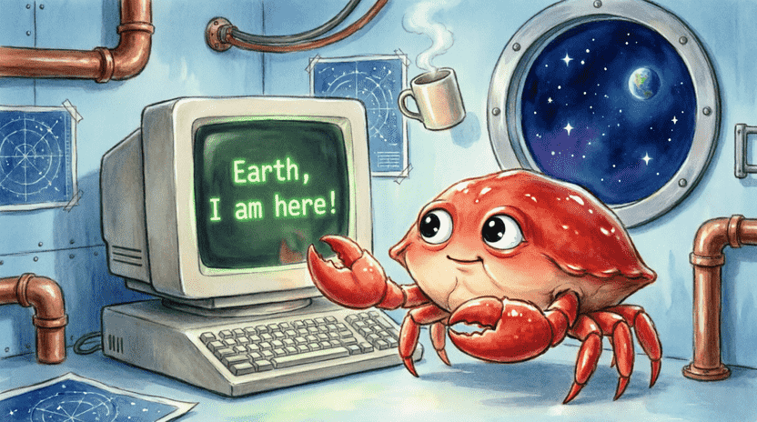
۱.۱.۲. چرا فریس به زبان جدید نیاز دارد؟
شاید بپرسی: «مگه کامپیوترها فارسی بلد نیستن؟» 😄
نه دوست من! کامپیوترها فقط صفر و یک میفهمن. ما انسانها هم که نمیتونیم با صفر و یک حرف بزنیم! برای همین، مهندسا زبانهای برنامهنویسی رو ساختن تا پلی باشن بین حرفهای ما و زبان کامپیوتر.
Rust یکی از بهترین این پلهاست، و یک چیز خیلی خاص دارد: بهت اجازه میدهد مثل یک جادوگر، ببینی داخل کامپیوتر چه خبر است:
- ⚡ خیلی سریع است – میتوانی بازی، ربات و حتی موشک بسازی!
- 🛡️ خیلی امن است – اجازه نمیدهد برنامهات یکدفعه قفل کند یا بترکد.
- 🔍 بهت یاد میدهد کامپیوتر واقعاً چطور کار میکند (حافظه، دادهها و جادوی پنهان).
شرکتهای بزرگ مثل گوگل، مایکروسافت و حتی سازندههای بازی از Rust استفاده میکنند. اما جذابترین بخش این است: Rust به تو کمک میکند تا یک جادوگر کامپیوتر بشوی – بفهمی زیر صفحه چه میگذرد، نه فقط چطور چند خط کد بنویسی.
من خودم توی سفرهای فضاییام فقط از Rust استفاده میکنم تا سفینهام سالم بمونه و تو فضا سرگردون نشم! 🌌
🖼️ پرامپت تصویر:
۱.۱.۳. صفحه مصور: فریس در ترمینال
🖼️ پرامپت تصویر:
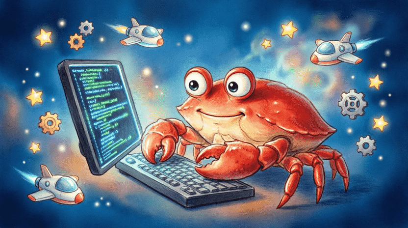
👨👩👧 نکته برای والدین و مربیان
این فصل نصب Rust و نوشتن اولین برنامهی «سلام دنیا» را پوشش میدهد. هدف فقط تجربهی موفق اولین اجرا است – نیازی نیست کودک همهی جزئیات را بفهمد. اگر نصب کمی پیچیده به نظر میرسد، نگران نباشید: آموزش واقعی از فصل ۲ شروع میشود. برای مطالعهی عمیقتر، کتاب رسمی Rust یک فصل رایگان دربارهی نصب دارد:
doc.rust-lang.org/book
۱.۲. جعبه ابزار جادویی: نصب rustup
برای اینکه بتونیم با کامپیوتر به زبان Rust حرف بزنیم، اول باید یک جعبهابزار جادویی به اسم rustup رو نصب کنیم. این جعبه سه تا چیز مهم داره:
🔹 کامپایلر (rustc): مثل یک ربات مترجم، حرفهای ما رو به صفر و یک تبدیل میکنه.
🔹 مدیر بسته (cargo): یک دستیار باهوش که کارهای تکراری رو برامون انجام میده (بعداً باهاش آشنا میشیم).
🔹 مستندات محلی: یک دفترچهی راهنمای کامل که همیشه آفلاین و دم دست ماست.
📌 قبل از شروع: توی این فصل از یک پنجرهی مخصوص به اسم ترمینال استفاده میکنیم. ترمینال یک صفحهی سیاه رنگه که میتونیم دستورهای متنی رو توش بنویسیم و به کامپیوتر بگیم چکار کنه. برای باز کردنش:
- در ویندوز: دکمهی Start رو بزن،
cmdرو تایپ کن و روی Command Prompt کلیک کن.- در مک: کلیدهای
Command + Spaceرو بزن،Terminalرو تایپ کن و Enter بزن.- در لینوکس: کلیدهای
Ctrl + Alt + Tرو همزمان بزن. حالا بریم سراغ نصب!
۱.۲.۱. رفتن به سایت rustup.rs
مرورگرت رو باز کن (کروم، فایرفاکس، هر چی که داری). توی نوار آدرس بالا بنویس:https://rustup.rs
و دکمهی Enter رو بزن. صفحهای میاد که شبیه اینه:
🖼️ پرامپت تصویر:
۱.۲.۲. کلیک روی دکمه دانلود
روی دکمهی آبی بزرگ که نوشته Download کلیک کن. فایل نصب مخصوص ویندوز، مک یا لینوکسات شروع به دانلود میکنه.
📌 نکته برای بزرگترها: توی ویندوز یک فایل rustup-init.exe دانلود میشه. توی مک و لینوکس یک اسکریپت شل دریافت میکنید.
۱.۲.۳. اجرای فایل دانلودی
🪟 ویندوز:
به پوشهی Download برو و روی فایل دوبار کلیک کن. یک پنجرهی سیاه (همان ترمینال) باز میشه.
🍎 مک:
ترمینال رو باز کن. بعد دستورهای زیر رو یکییکی تایپ کن و Enter بزن:
cd Downloads
sh rustup-init
(اگر پیام «اجازه ندارید» آمد، اول دستور chmod +x rustup-init رو بزن و بعد دوباره sh rustup-init رو اجرا کن.)
🐧 لینوکس (مثل اوبونتو):
ترمینال رو با Ctrl+Alt+T باز کن. بعد بنویس:
cd Downloads
chmod +x rustup-init
./rustup-init
۱.۲.۴. انتخاب نصب پیشفرض
بعد از اجرا، یک منوی متنی میاد. فقط عدد 1 رو تایپ کن (همان «نصب پیشفرض») و Enter بزن.
حالا چند ثانیه صبر کن… چند خط سبز رنگ مثل بارون روی صفحه میریزن. وقتی این نوشته رو دیدی:
Rust is installed now. Great!
یعنی کار تمومه! 🎉
۱.۲.۵. بررسی نصب
برای اینکه مطمئن بشی همهچی درست کار میکنه، توی همان ترمینال بنویس:
rustc --version
باید چیزی شبیه این ببینی:
rustc 1.85.0 (4d91de4e4 2025-02-17)
(عددها ممکنه فرق کنن، مهم اینه که ارور قرمز نده!)
همین کار رو برای cargo هم انجام بده:
cargo --version
اگر هر دو دستور یک شماره نسخه نشون دادن، یعنی جعبهابزار جادویی آمادهی کاره! 🛠️✨
🖼️ پرامپت تصویر:
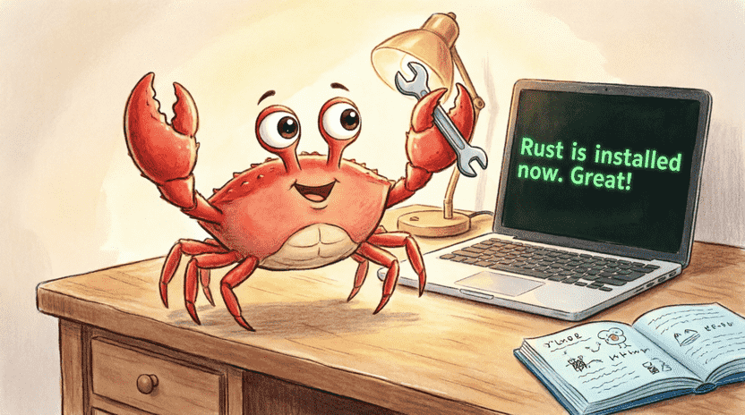
۱.۳. اولین جملهمان به کامپیوتر: Hello, World
حالا که جعبهابزار رو داریم، بیا اولین جملهمون رو به کامپیوتر بگیم. قراره بنویسیم:زمین، من اینجام!
۱.۳.۱. ساختن پوشه ماجرا
یک پوشهی جدید روی کامپیوترت بساز به اسم majara. اینجا خونهی همهی برنامههای ما تو این کتاب میشه.
میتونی با موس بسازیش، یا توی ترمینال این دو تا دستور رو بزن:
mkdir majara
cd majara
(دستور mkdir یعنی «پوشه بساز» و cd یعنی «برو تو این پوشه».)
۱.۳.۲. باز کردن ویرایشگر
ما به یک دفترچهی جادویی نیاز داریم تا کدهامون رو توش بنویسیم. میتونی از Notepad (ویندوز) یا TextEdit (مک) استفاده کنی، ولی خیلی بهتره یک ویرایشگر مخصوص نصب کنی. پیشنهاد من VS Code هست (رایگان و عالی).
از سایت code.visualstudio.com دانلودش کن. بعد از نصب، بازش کن و پوشهی majara رو باز کن (File → Open Folder).
🖼️ پرامپت تصویر:
۱.۳.۳. نوشتن کد جادویی
توی VS Code یک فایل جدید بساز (Ctrl+N) و دقیقاً این کد رو تایپ کن:
fn main() {
println!("زمین، من اینجام!");
}۱.۳.۴. توضیح خط به خط
بیا هر خط رو با دقت ببینیم:
- خط ۱:
fn main() {fnمخففfunction(تابع) هست.mainاسم خاصیه که کامپایلر میدونه برنامه باید از اینجا شروع بشه. پرانتز()الان خالیه، چون فعلاً اطلاعاتی بهش نمیدیم. - خط ۲:
println!("زمین، من اینجام!");
چهار فاصله (یا یک دکمهی Tab) اول خط یعنی: «این دستور داخل تابعmainقرار داره». علامت!آخرprintlnیعنی این یک طلسم جادویی است که کار خاصی انجام میده (نمایش متن روی صفحه).lnهم یعنی «بعد از چاپ، برو خط بعدی». - خط ۳:
}
آکولاد بسته میشه. یعنی تابع تموم شد.
۱.۳.۵. ذخیره فایل
فایل رو با اسم main.rs توی پوشهی majara ذخیره کن. پسوند .rs مخفف Rust هست.
⚠️ دقت کن: اسم فایل حتماً باید main.rs باشه. Rust وقتی main رو میبینه میفهمه نقطهی شروع برنامه کجاست.
۱.۳.۶. کامپایل و اجرا
حالا باید کدمون رو به صفر و یک تبدیل کنیم. این کار رو کامپایلر انجام میده.
ترمینال رو باز کن (اگر بسته بود) و برو تو پوشهی majara. برای رفتن به پوشه، دستور cd رو به همراه آدرس پوشه بنویس. مثلاً اگر پوشهی majara روی دسکتاپ است:
cd Desktop/majara
(اگر در آدرسها مطمئن نیستی، از پدر یا مادرت کمک بگیر.)
بعد بنویس:
rustc main.rs
چند لحظه صبر کن. اگر ارور نده، یک فایل جدید به اسم main (یا main.exe توی ویندوز) ساخته میشه. حالا اجراش کن:
🪟 ویندوز: main.exe
🍎🐧 مک/لینوکس: ./main
۱.۳.۷. دیدن نتیجه
💥 بوم! توی صفحه نوشته شده:
زمین، من اینجام!
تبریک میگم! 🎉 تو اولین برنامهی Rust خودت رو نوشتی و اجرا کردی. فریس از دیدن این پیام کلی ذوق کرده!
🧠 گاهی بعضی چیزها سخت است، و این اشکالی ندارد!
شاید اولین باری که کامپایلر را اجرا کردی، همهچیز برایت روشن نبود. نگران نباش – این طبیعی است. حتی برنامهنویسهای حرفهای هم روزی از همین نقطه شروع کردند. مهم این است که اولین قدم را برداشتی. 🚀
🖼️ پرامپت تصویر:
۱.۴. دستیار باهوش من، کارگو (Cargo)
تا اینجا برنامه رو دستی با rustc ساختیم. ولی برای پروژههای بزرگتر، به یک دستیار باهوش نیاز داریم که کارهای تکراری رو خودش انجام بده. اسمش کارگو (Cargo) هست. 📦🤖
۱.۴.۱. کارگو چیست؟
کارگو سه کار مهم برامون انجام میده:
۱. ساختار پروژه رو میسازه (پوشهها و فایلهای اولیه).
۲. وابستگیها رو مدیریت میکنه (کتابخانههایی که بقیه نوشتن).
۳. برنامه رو راحت میسازه و اجرا میکنه (با یک دستور ساده!).
۱.۴.۲. ساخت پروژه جدید با کارگو
بیا یک پروژهی جدید بسازیم. برو تو یک پوشهی تمیز (مثلاً دسکتاپ) و توی ترمینال بنویس:
cargo new hello_ferris
cd hello_ferris
کارگو یک پوشه به اسم hello_ferris ساخته که داخلش این چیزهاست:
hello_ferris/
├── Cargo.toml
├── src/
│ └── main.rs
└── .gitignore
(فعلاً نگران .gitignore نباش؛ بعداً یاد میگیری.)
🖼️ پرامپت تصویر:
۱.۴.۳. آشنایی با Cargo.toml
فایل Cargo.toml رو باز کن. چیزی شبیه این میبینی:
[package]
name = "hello_ferris"
version = "0.1.0"
edition = "2021"
[dependencies]
🔹 [package]: کارت شناسایی پروژهات (اسم، نسخه و استاندارد سال).
🔹 [dependencies]: اینجا بعداً اسم کتابخانههای کمکی رو مینویسیم (الان خالیه).
به این فایل «شناسنامهی پروژه» هم میگن. هر پروژهی Rust حتماً یک Cargo.toml داره.
۱.۴.۴. آشنایی با پوشه src
همهی کدهای ما باید برن تو پوشهی src. کارگو خودش یک main.rs آماده گذاشته:
fn main() {
println!("Hello, world!");
}(بله! دقیقاً همان کدی که خودمون نوشتیم، فقط به انگلیسی.)
۱.۴.۵. اجرا با cargo run
حالا دیگه لازم نیست دستی rustc بزنی. فقط کافیه توی ترمینال (داخل پوشهی hello_ferris) بنویسی:
cargo run
کارگو خودش این کارا رو میکنه:
✅ چک میکنه کد تغییر کرده یا نه.
✅ اگر لازم بود، کامپایل میکنه.
✅ برنامه رو اجرا میکنه.
خروجی رو میبینی:
Hello, world!
سریع و آسان، درسته؟ 😎
🖼️ پرامپت تصویر:
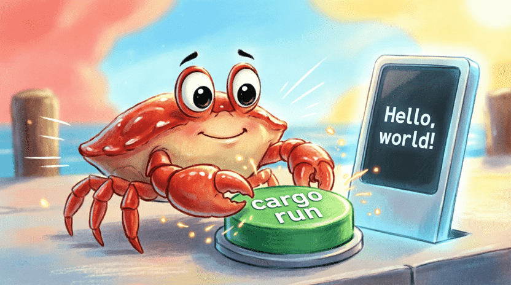
۱.۴.۶. تفاوت cargo build و cargo run
🔹 cargo run = کامپایل + اجرا (وقتی میخوای نتیجه رو همان لحظه ببینی).
🔹 cargo build = فقط کامپایل (یک فایل اجرایی توی target/debug/ میسازه، بدون اجرا).
یک نکته برای وقتی بزرگ شدی: اگر
cargo build --releaseبزنی، یک خروجی بهینهشده و سریعتر میگیری (ولی ساختش طولانیتره). فعلاً نیازی به آن نداریم.
۱.۴.۷. تمرین تغییر پیام
حالا بیا متن رو عوض کنیم. فایل src/main.rs رو باز کن و به جای "Hello, world!" بنویس:
#![allow(unused)]
fn main() {
println!("سلام فریس! خوش اومدی به زمین!");
}ذخیرهاش کن و دوباره cargo run رو بزن. حالا خروجی اینه:
سلام فریس! خوش اومدی به زمین!
آفرین! تو حالا با کارگو دوست شدی. 🤝
۱.۵. جمعبندی و چالش
۱.۵.۱. مرور کارها
تو این فصل یاد گرفتی:
✅ فریس کیه و چرا به Rust نیاز داریم.
✅ چطور rustup رو نصب کنی.
✅ چطور یک فایل main.rs بنویسی و با rustc کامپایل کنی.
✅ چطور با cargo new پروژه بسازی و با cargo run اجراش کنی.
✅ معنی fn main()، println!، آکولادها و نقطهویرگول رو فهمیدی.
✅ اینکه برنامهنویسی گاهی میتواند بزرگ و چالشبرانگیز به نظر برسد، اما با کمی حوصله به یک جادوگر کامپیوتر تبدیل خواهی شد.
۱.۵.۲. معرفی اصطلاحات
بیا چند کلمهی جدید رو مرور کنیم:
| اصطلاح | معنی ساده | ایموجی |
|---|---|---|
| کامپایلر | رباتی که کد ما رو به صفر و یک ترجمه میکنه | 🤖 |
| کد منبع | همان متنی که ما مینویسیم (مثل main.rs) | 📝 |
| ترمینال | صفحهی سیاهی که دستورات رو توش مینویسیم | ⬛ |
| اجرا (Run) | وقتی برنامه رو روشن میکنیم تا کار کنه | ▶️ |
| طلسم جادویی (ماکرو) | دستوری که با ! میاد و کارهای خاص انجام میده | ✨ |
۱.۵.۳. چالش کوچک
حالا نوبت توئه قهرمان! 🏆 این مأموریتها رو انجام بده:
1️⃣ با دستور cargo new یک پروژه به اسم my_first_program بساز.
2️⃣ توی src/main.rs بنویس: "من دارم برنامهنویسی رو یاد میگیرم!"
3️⃣ با cargo run اجراش کن و نتیجه رو ببین.
4️⃣ 🎁 (اختیاری) دو خط println! پشت سر هم بنویس:
fn main() {
println!("سلام!");
println!("من فریس هستم. 🦀");
}ببین چه اتفاقی میافته.
اگر تونستی اینا رو انجام بدی، یعنی کاملاً آمادهی فصل بعدی! توی فصل بعد با هم یک بازی «عدد گمشده» میسازیم که کامپیوتر یک عدد انتخاب میکنه و تو باید حدس بزنی. هیجانانگیزه، نه؟ 😉
💬 به یاد داشته باش: هر برنامهنویس بزرگی، روزی از همین «سلام دنیا» شروع کرده. تو الان اولین قدم رو برداشتی! 🚀
🖼️ پرامپت تصویر:
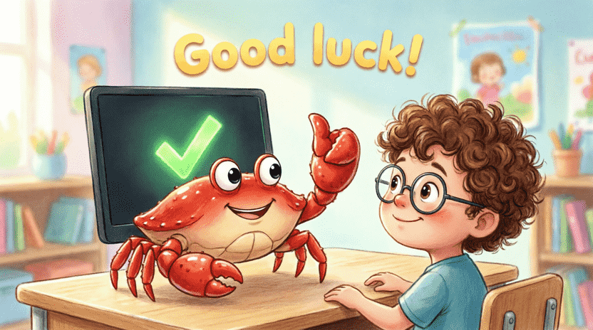
سرزمین راست: ماجراهای فریس خرچنگ فضایی
فصل ۲: بازی فکری «عدد گمشده» (متغیرها، ورودی و شرط)
📑 فهرست فصل
۲.۱. معما: کامپیوتر یک ستاره قایم کرده
۲.۱.۱. داستان: فریس و ستاره گمشده
۲.۱.۲. عدد تصادفی مثل تاس انداختن
۲.۱.۳. اضافه کردن کتابخانه rand
۲.۱.۴. آوردن جعبه تاس به پروژه
۲.۲. جعبههای حافظه (متغیرها)
۲.۲.۱. ساختن جعبه با let
۲.۲.۲. تغییرناپذیری پیشفرض (چرا جعبه قفل است؟)
۲.۲.۳. جعبه قابل تغییر با mut
۲.۲.۴. دوست صمیمی ما: خطاهای کامپایلر
۲.۳. گوش دادن به حرفهای ما (دریافت ورودی)
۲.۳.۱. طلسم خواندن از صفحه کلید
۲.۳.۲. تکهتکه کردن طلسم
۲.۳.۳. چرا &mut guess؟ (کلید جعبه را به کسی بدهیم)
۲.۴. تبدیل نوع (از String به عدد)
۲.۴.۱. مشکل: متن در برابر عدد
۲.۴.۲. پاک کردن فاصلهها و خطوط اضافه با trim()
۲.۴.۳. تبدیل متن به عدد با parse()
۲.۴.۴. سایهاندازی (Shadowing): اسم قدیمی، کار جدید
۲.۵. اگر نه، پس چی؟ (if/else)
۲.۵.۱. مقایسه حدس با راز
۲.۵.۲. نوشتن if/else if/else
۲.۵.۳. عملگرهای مقایسه با مثال روزمره
۲.۵.۴. چرا = و == فرق دارند؟ (مساوی در برابر مقداردهی)
۲.۶. حلقهی تکرار (loop)
۲.۶.۱. مشکل: بازی فقط یک بار حدس میزند
۲.۶.۲. معرفی loop (حلقه بیپایان)
۲.۶.۳. قرار دادن کد حدس داخل loop
۲.۶.۴. شرط خروج با break
۲.۶.۵. اضافه کردن شمارنده حدسها
۲.۷. مدیریت خطاهای ساده (بدون ترسیدن برنامه)
۲.۷.۱. اگر کاربر به جای عدد حرف بزند
۲.۷.۲. معرفی match برای نجات برنامه
۲.۷.۳. توضیح ساده: «اگه نشد، دوباره بپرس»
۲.۸. جمعبندی و تمرین
۲.۸.۱. مرور مفاهیم
۲.۸.۲. چالش بزرگ: نزدیکشدن به هدف
۲.۱. معما: کامپیوتر یک ستاره قایم کرده
۲.۱.۱. داستان: فریس و ستاره گمشده
فریس توی سفرهای فضاییاش یک ستارهی درخشان پیدا کرده که میتونه یک آرزو رو برآورده کنه. ولی این خرچنگ بازیگوش، ستاره رو توی یکی از کمدهای مخفی سفینه قایم کرده!
فریس با چشماش بهت نگاه میکنه و میگه:
🦀 «من یک عدد بین ۱ تا ۱۰۰ انتخاب کردم. اگه با کمترین حدس پیداش کنی، ستاره مال توئه! هر بار یک عدد بگو، من بهت میگم برو بالا یا بیا پایین.»
این دقیقاً بازی معروف «حدس عدد» هست. ما قراره همین بازی رو با Rust بنویسیم تا بتونیم با کامپیوتر مسابقه بدیم – و در همین حین ببینیم کامپیوتر چطور اعداد را به خاطر میسپارد، چه چیزی مینویسیم و چطور تصمیم میگیرد. این یعنی قدم بزرگی به سمت جادوگر کامپیوتر شدن! ✨
۲.۱.۲. عدد تصادفی مثل تاس انداختن
کامپیوترها ذاتاً منطقیان و نمیتونن واقعاً «شانسی» تصمیم بگیرن. ولی ما میتونیم از یک فرمول ریاضی استفاده کنیم که انگار داره تاس میاندازه! به این اعداد میگن شبهتصادفی.
توی Rust، مهندسا یک جعبهابزار آماده به اسم rand ساختن که دقیقاً همین کار رو برامون انجام میده. ما فقط باید اون رو به پروژهمون اضافه کنیم.
![[Illustration: Cartoon illustration of Ferris the crab holding a glowing cosmic dice. The dice shows random numbers floating around it like 42, 7, 99. Background: a cozy spaceship console with blinking lights. Style: playful, vibrant children’s book, soft shadows, 16:9.]](assets/images/2.1.png)
۲.۱.۳. اضافه کردن کتابخانه rand
اول ترمینال رو باز کن و یک پروژهی جدید بساز:
cargo new guess_the_number
cd guess_the_number
حالا باید به cargo بگیم که به جعبهابزار rand نیاز داریم. فایل Cargo.toml رو باز کن و توی بخش [dependencies] این خط رو اضافه کن:
[dependencies]
rand = "0.8.5"
فایل کامل باید شبیه این بشه:
[package]
name = "guess_the_number"
version = "0.1.0"
edition = "2021"
[dependencies]
rand = "0.8.5"
0.8.5 یعنی ما نسخهی خاصی رو میخوایم. دفعهی بعد که cargo run بزنی، کارگو خودش اون رو از اینترنت دانلود میکنه. (مطمئن شو که به اینترنت وصلی!)
۲.۱.۴. آوردن جعبه تاس به پروژه
حالا که کتابخانه رو معرفی کردیم، باید به برنامه بگیم از کدوم قسمتش استفاده کنیم. بالای فایل src/main.rs (بعد از خط use std::io;) این خط رو بنویس:
#![allow(unused)]
fn main() {
use rand::Rng;
}بعد توی تابع main، عدد مخفی رو اینطوری میسازیم:
#![allow(unused)]
fn main() {
let secret_number = rand::thread_rng().gen_range(1..=100);
}بیا این طلسم رو تکهتکه کنیم:
🔹 rand::thread_rng() → یک دستگاه تاسانداز مخصوص برای برنامهی ما میسازه.
🔹 .gen_range(1..=100) → میگه یک عدد بین ۱ و ۱۰۰ انتخاب کن. (..= یعنی خود ۱ و ۱۰۰ هم جزو محدودهان.)
💡 تست اولیه: فعلاً برای اینکه ببینیم کار میکنه، عدد رو چاپ میکنیم (بعداً پاکش میکنیم تا بازی واقعی بشه):
#![allow(unused)]
fn main() {
println!("عدد مخفی (فقط برای تست): {}", secret_number);
}👨👩👧 نکته برای والدین و مربیان
این فصل مفاهیم متغیر، ورودی کاربر، تبدیل نوع، حلقه و مدیریت خطای ساده را معرفی میکند. بازیکن یک بازی کامل تعاملی خواهد ساخت. اگر کودک در درکmatchوcontinueمشکل داشت، نگران نباشید – حتی بزرگسالان هم برای تسلط بر این مفاهیم زمان نیاز دارند. کتاب رسمی Rust این مباحث را با جزئیات بیشتر پوشش میدهد:
doc.rust-lang.org/book/ch02-00-guessing-game-tutorial.html
۲.۲. جعبههای حافظه (متغیرها)
توی برنامهنویسی، برای اینکه چیزی رو یادمون بمونه، از متغیر استفاده میکنیم. متغیر مثل یک جعبهی کوچک توی مغز کامپیوتره که یک عدد یا متن رو توش نگه میداره.
۲.۲.۱. ساختن جعبه با let
توی Rust، با کلمهی let جعبه میسازیم:
#![allow(unused)]
fn main() {
let x = 5;
}یعنی: «یک جعبه به اسم x بساز و عدد ۵ رو توش بذار.»
توی بازی ما، secret_number قبلاً ساخته شد. ولی برای جواب کاربر هم یک جعبه نیاز داریم:
#![allow(unused)]
fn main() {
let mut guess = String::new();
}String::new() یک جعبهی خالی از نوع متن میسازه. (String یعنی متنی که میتونه هر طولی داشته باشه.)
۲.۲.۲. تغییرناپذیری پیشفرض (چرا جعبه قفل است؟)
یک ویژگی فوقالعادهی Rust اینه: وقتی جعبه میسازی، تا وقتی خودت نخواهی، محتویاتش عوض نمیشه. به این میگن تغییرناپذیری.
مثال:
#![allow(unused)]
fn main() {
let x = 5;
x = 6; // خطا! نمیشه x رو عوض کرد.
}کامپایلر سریع میگه:
error[E0384]: cannot assign twice to immutable variable `x`
این مثل قفل قلکه! تا کلید mut رو ندی، کسی نمیتونه توش چیزی بذاره. این کار جلوی اشتباهات ناخواسته رو میگیره.
۲.۲.۳. جعبه قابل تغییر با mut
ولی گاهی لازمه جعبه رو باز کنیم تا مقدار جدید بریزیم توش. برای این موقع ساختن جعبه، کلمهی mut (مخفف mutable) رو اضافه میکنیم:
#![allow(unused)]
fn main() {
let mut y = 10;
y = 20; // حالا دیگه اشکالی نداره!
}توی بازی ما، guess باید بتونه جوابهای مختلف کاربر رو ذخیره کنه، پس حتماً با let mut میسازیمش.
![[Illustration: Educational cartoon showing three labeled boxes on a desk. Box 1: “let x = 5” (locked with a padlock). Box 2: “let mut y = 10” (open, with a wrench inside). Ferris stands beside them pointing at the difference. Style: bright, clear, infographic-style children’s illustration, 16:9.]](assets/images/2.2.png)
۲.۲.۴. دوست صمیمی ما: خطاهای کامپایلر
اگر توی Rust خطا گرفتی، اصلاً نترس! کامپایلر Rust مثل یک معلم مهربونه که دقیقاً نشون میده کجا اشتباه کردی و حتی راه حل پیشنهاد میده. مثلاً اگر mut رو فراموش کنی، میگه:
#![allow(unused)]
fn main() {
help: consider making this binding mutable: `mut guess`
}یادت باشه: خطا دشمن نیست، راهنماست! 🤝
۲.۳. گوش دادن به حرفهای ما (دریافت ورودی)
حالا باید از کاربر بخواهیم عددش رو تایپ کنه و ما اون رو بخونیم.
۲.۳.۱. طلسم خواندن از صفحه کلید
اول بالای فایل، کتابخانهی ورودی/خروجی رو اضافه میکنیم:
#![allow(unused)]
fn main() {
use std::io;
}(اگر قبلاً در تست اولیه use rand::Rng; را اضافه کردهای، حالا دو تا use داری.)
بعد توی main مینویسیم:
#![allow(unused)]
fn main() {
io::stdin().read_line(&mut guess).expect("خطا در خواندن ورودی");
}۲.۳.۲. تکهتکه کردن طلسم
این خط شاید ترسناک به نظر بیاد، ولی بذار با هم بازش کنیم:
🔹 io::stdin() → «گوشی تلفن رو بردار و به صفحهکلید وصل شو.»
🔹 .read_line(&mut guess) → «منتظر بمون کاربر چیزی بنویسه و Enter بزنه. هرچی نوشت رو بریز توی جعبهی guess.»
🔹 .expect("خطا در خواندن ورودی") → «اگر به هر دلیلی ارتباط قطع شد، این پیام رو نشون بده و برنامه رو متوقف کن.»
۲.۳.۳. چرا &mut guess؟ (کلید جعبه را به کسی بدهیم)
علامت &mut یعنی کلید موقت. تابع read_line میخواد چیزی رو داخل guess بنویسه. ما بهش اجازه میدیم این کار رو بکنه، ولی مالکیت جعبه رو بهش نمیدیم. فعلاً همینقدر بدون که &mut یعنی: «اجازه داری محتوای این جعبه رو عوض کنی.» (فصل ۴ دربارهی این اجازهها مفصل حرف میزنیم!)
![[Illustration: Ferris holding a glowing key labeled “&mut” and handing it to a small robot labeled “read_line”. The robot is standing next to an open box named “guess”. Background: soft tech-themed workspace. Style: friendly, metaphorical, children’s book illustration, 16:9.]](assets/images/2.3.png)
۲.۴. تبدیل نوع (از String به عدد)
۲.۴.۱. مشکل: متن در برابر عدد
وقتی کاربر 42 رو تایپ میکنه، کامپیوتر اون رو مثل یک متن "42" میبینه. ولی secret_number یک عدد واقعیه. ما نمیتونیم سیب رو با پرتقال مقایسه کنیم! پس باید متن رو به عدد تبدیل کنیم.
۲.۴.۲. پاک کردن فاصلهها و خطوط اضافه با trim()
وقتی کاربر عدد میزنه و Enter میکنه، ته متن یک کاراکتر پنهان \n (یعنی خط جدید) اضافه میشه. تابع trim() این آشغالهای اضافی رو پاک میکنه:
#![allow(unused)]
fn main() {
let clean_guess = guess.trim();
}۲.۴.۳. تبدیل متن به عدد با parse()
حالا متن تمیزه. با parse() میتونیم بگیم «لطفاً اینو به عدد تبدیل کن»:
#![allow(unused)]
fn main() {
let guess: u32 = guess.trim().parse().expect("لطفاً یک عدد معتبر وارد کن!");
}🔹 parse() → تلاش میکنه متن رو به عدد تبدیل کنه.
🔹 : u32 → به کامپایلر میگه «میخوام یک عدد صحیح مثبت (تا حدود ۴ میلیارد) باشه.»
🔹 expect() → اگر تبدیل نشد، برنامه رو با پیام ما متوقف میکنه. (بعداً یاد میگیریم چطور بدون توقف مدیریتش کنیم.)
۲.۴.۴. سایهاندازی (Shadowing): اسم قدیمی، کار جدید
دقت کردی دوباره از let guess استفاده کردیم؟ توی Rust این کار مجازه و بهش میگن سایهاندازی. یعنی متغیر قبلی که String بود کنار میره، و یک متغیر جدید با همان اسم ولی از نوع u32 جایگزینش میشه. خیلی کاربردیه چون لازم نیست اسمهای طولانی مثل guess_number اختراع کنیم!
۲.۵. اگر نه، پس چی؟ (if/else)
۲.۵.۱. مقایسه حدس با راز
منطق بازی سادهست:
🔸 اگر حدس < عدد مخفی → بگو «برو بالا!»
🔸 اگر حدس > عدد مخفی → بگو «بیا پایین!»
🔸 اگر حدس == عدد مخفی → بگو «برنده شدی!»
۲.۵.۲. نوشتن if / else if / else
#![allow(unused)]
fn main() {
if guess < secret_number {
println!("❄️ یخ زدم! برو بالا!");
} else if guess > secret_number {
println!("🔥 داغ داغه! بیا پایین!");
} else {
println!("🏆 بردی! ستاره مال توست!");
}
}۲.۵.۳. عملگرهای مقایسه با مثال روزمره
| عملگر | معنی | مثال واقعی |
|---|---|---|
< | کوچکتر از | سن من < سن پدرم |
> | بزرگتر از | قد پدرم > قد من |
== | مساوی با | 2 + 2 == 4 |
!= | نامساوی با | 3 != 4 |
<= | کوچکتر یا مساوی | انگشتان دست <= 10 |
>= | بزرگتر یا مساوی | نمره قبولی >= 10 |
۲.۵.۴. چرا = و == فرق دارند؟
🔹 = یعنی مقداردهی: «سمت راست رو بریز توی جعبهی سمت چپ.» (let x = 5;)
🔹 == یعنی مقایسه: «آیا سمت راست و چپ برابرند؟» (if x == 5)
اگر اشتباهی توی if از = استفاده کنی، کامپایلر سریع خطا میده چون دنبال یک سؤال (شرط) بوده، نه یک دستور!
![[Illustration: Split-screen educational graphic. Left side: a scale balancing “x = 5” with a loading arrow. Right side: a magnifying glass comparing “x == 5” with a green checkmark. Ferris stands in the middle explaining. Style: clean, modern educational illustration, bright colors, 16:9.]](assets/images/2.4.png)
۲.۶. حلقهی تکرار (loop)
۲.۶.۱. مشکل: بازی فقط یک بار حدس میزند
تا اینجا برنامه یک بار عدد میگیره و تموم میشه. ولی ما میخوایم تا وقتی کاربر درست حدس نزده، بازی ادامه پیدا کنه.
۲.۶.۲. معرفی loop (حلقه بیپایان)
loop یک دایرهی تکراره. هرچی داخل { } بنویسی، تا ابد تکرار میشه، مگر اینکه دکمهی خروج رو بزنی:
#![allow(unused)]
fn main() {
loop {
println!("این جمله تا ابد چاپ میشه!");
}
}(برای متوقف کردنش باید Ctrl+C بزنی! ولی ما بعداً با break ازش بیرون میپریم.)
۲.۶.۳. قرار دادن کد حدس داخل loop
تمام بخشهای «دریافت حدس» و «بررسی» رو میذاریم داخل loop. هر دور، یک حدس جدید میگیره.
۲.۶.۴. شرط خروج با break
برای فرار از حلقه، از break استفاده میکنیم. وقتی حدس درست بود:
#![allow(unused)]
fn main() {
if guess == secret_number {
println!("🏆 بردی! ستاره مال توست!");
break; // دکمه خروج از حلقه
}
}۲.۶.۵. اضافه کردن شمارنده حدسها
بیا تعداد تلاشها رو بشماریم:
#![allow(unused)]
fn main() {
let mut count = 0;
loop {
count += 1; // یعنی: count = count + 1
// ... بقیه کد
}
}count += 1 سریعترین راه برای اضافه کردن یکدونهست!
🧠 گاهی بعضی چیزها سخت است، و این اشکالی ندارد!
حلقهها و فرار از آنها باbreakممکن است در ابتدا کمی گیجکننده به نظر برسند. حتی برنامهنویسان حرفهای هم گاهی حلقههایشان اشتباه میشود. اگر یکباره همه چیز را نفهمیدی، نگران نباش – با کمی تمرین حتماً مسلط میشوی.
![[Illustration: Ferris running on a circular track labeled “loop”. He holds a counter flag showing “1, 2, 3…”. At one point, a red gate labeled “break” opens. Style: dynamic, cartoon motion lines, encouraging mood, 16:9.]](assets/images/2.5.png)
۲.۷. مدیریت خطاهای ساده (بدون ترسیدن برنامه)
۲.۷.۱. اگر کاربر به جای عدد حرف بزند
تا الان اگر کاربر بنویسه «سلام»، برنامه با expect میترکه و بسته میشه. این تجربهی خوبی نیست. بهتره بگیم «لطفاً عدد بزن!» و دوباره بپرسیم.
۲.۷.۲. معرفی match برای نجات برنامه
به جای expect، از match استفاده میکنیم. match مثل یک دستگاه دستهبندیه: اگر تبدیل موفق شد، عدد رو بده؛ اگر نه، یک پیام دوستانه نشان بده و برو دور بعدی:
#![allow(unused)]
fn main() {
let guess: u32 = match guess.trim().parse() {
Ok(num) => num,
Err(_) => {
println!("❌ لطفاً فقط عدد وارد کن! ❌");
continue;
}
};
}🔹 Ok(num) → اگر موفق شد، عدد رو در num بذار و به guess بده.
🔹 Err(_) → اگر هر خطایی پیش آمد، دستورات داخل بلوک رو اجرا کن.
🔹 continue → یعنی «این دور رو رها کن و برگرد اول حلقه».
۲.۷.۳. توضیح ساده: «اگر نشد، دوباره بپرس»
به زبان ساده: «سعی کن متن رو به عدد تبدیل کنی. اگر تونستی، عالی! ادامه بده. اگر نتونستی، یک پیام مودبانه نشان بده و بدون اینکه برنامه بسته بشه، دوباره از کاربر بپرس.» اینطوری بازی هیچوقت قفل نمیکنه! 🛡️
![[Illustration: Cartoon sorting machine labeled “match”. Left chute: text “abc” goes in, comes out as “❌ Try again!”. Right chute: text “42” goes in, comes out as a golden number “42 ✅”. Ferris operates the machine with a friendly smile. Style: playful, technical metaphor, children’s book, 16:9.]](assets/images/2.6.png)
۲.۸. جمعبندی و تمرین
۲.۸.۱. مرور مفاهیم
تو این فصل یاد گرفتی:
✅ چطور با rand عدد تصادفی بسازی.
✅ چطور با let و let mut جعبههای حافظه بسازی.
✅ چطور با stdin().read_line() از کاربر ورودی بگیری.
✅ چطور با trim() و parse() متن رو به عدد تبدیل کنی.
✅ چطور با if/else تصمیم بگیری.
✅ چطور با loop و break حلقه بسازی.
✅ چطور با match خطاها رو مدیریت کنی بدون اینکه برنامه بترکه.
۲.۸.۲. چالش بزرگ: نزدیکشدن به هدف
حالا یک قابلیت حرفهای به بازی اضافه کن: وقتی کاربر عددی رو حدس میزنه که فاصلهاش با عدد مخفی کمتر از ۵ تا باشه، پیام بده: «🔥 خیلی نزدیک شدی! 🔥»
💡 راهنمایی: فاصله رو حساب کن. میتونی از as i32 برای تبدیل به عدد علامتدار و abs() برای قدر مطلق استفاده کنی:
#![allow(unused)]
fn main() {
let diff = (guess as i32 - secret_number as i32).abs();
if diff < 5 && guess != secret_number {
println!("🔥 خیلی نزدیک شدی! 🔥");
}
}🎮 کد نهایی بازی (کامل و آماده اجرا)
use std::io;
use rand::Rng;
fn main() {
println!("🎲 به بازی حدس عدد خوش آمدید! 🎲");
let secret_number = rand::thread_rng().gen_range(1..=100);
let mut count = 0;
loop {
count += 1;
println!("لطفاً یک عدد بین ۱ تا ۱۰۰ حدس بزنید:");
let mut guess = String::new();
io::stdin()
.read_line(&mut guess)
.expect("خطا در خواندن ورودی");
let guess: u32 = match guess.trim().parse() {
Ok(num) => num,
Err(_) => {
println!("❌ لطفاً فقط عدد وارد کنید! ❌");
continue;
}
};
if guess < secret_number {
println!("⬆️ یخ زدم! برو بالا!");
} else if guess > secret_number {
println!("⬇️ داغ داغه! بیا پایین!");
} else {
println!("🏆 بردی! ستاره مال توست! 🏆");
println!("✨ تو در {} تا حدس بردی! ✨", count);
break;
}
}
}حالا برنامه رو با cargo run اجرا کن و با دوستات مسابقه بده!
در فصل بعد یاد میگیریم چطور کدهای تکراری رو داخل توابع بستهبندی کنیم تا برنامههامون تمیزتر، کوتاهتر و حرفهایتر بشن. 🚀
![[Illustration: Ferris wearing a graduation cap, holding a glowing “Chapter 2 Master” badge. Floating around him are dice, a loop track, a match sorting machine, and a star trophy. Encouraging, bright lighting, children’s book style.]](assets/images/2.7.png)
سرزمین راست: ماجراهای فریس خرچنگ فضایی
فصل ۳: دستور پخت کیک شکلاتی فضایی (توابع، پارامترها و انواع داده)
📑 فهرست فصل
۳.۱. مشکل بزرگ آشپزخانه
۳.۱.۱. داستان: فریس و کیک شکلاتی
۳.۱.۲. معرفی تابع به عنوان دستور پخت
۳.۱.۳. اولین تابع ساده
۳.۱.۴. صدا زدن تابع
۳.۲. ساخت ماشین جادویی (پارامترها و مقدار بازگشتی)
۳.۲.۱. تابع با پارامتر ورودی
۳.۲.۲. چند پارامتر
۳.۲.۳. مقدار بازگشتی با ->
۳.۲.۴. خروج زودهنگام با return
۳.۲.۵. تمرین: تابع ضرب و ترکیب
۳.۳. فرق آرد و شکر (Data Types)
۳.۳.۱. دستهبندی انواع
۳.۳.۲. اعداد صحیح (i32, u32)
۳.۳.۳. اعداد اعشاری (f64)
۳.۳.۴. منطقی (bool)
۳.۳.۵. کاراکتر (char)
۳.۳.۶. تاپل (Tuple) – جعبههای کنار هم
۳.۳.۷. آرایه (Array) – قفسهی مرتب
۳.۳.۸. تمرین: تاپل اطلاعات شخصی
۳.۴. یادداشتهای مخفی (Comments)
۳.۴.۱. کامنت خطی //
۳.۴.۲. کامنت چندخطی /* */
۳.۴.۳. چه زمانی کامنت بگذاریم؟
۳.۴.۴. تمرین: کامنتگذاری روی بازی حدس عدد
۳.۵. جمعبندی و پروژه
۳.۵.۱. مرور مفاهیم
۳.۵.۲. پروژه: ماشین حساب ساده
۳.۵.۳. چالش: بزرگترین عدد آرایه
۳.۱. مشکل بزرگ آشپزخانه
۳.۱.۱. داستان: فریس و کیک شکلاتی
فریس عاشق کیک شکلاتی فضاییه! 🍰 دستور پخت مخصوص مادربزرگش رو هم داره: «۲۰۰ گرم آرد، ۱۵۰ گرم شکر، ۳ تا تخممرغ، کمی وانیل، هم بزن و ۳۰ دقیقه بذار توی فر.»
مشکل اینجاست که فریس هر بار دلش کیک میخواد، مجبور میشه کل این مراحل رو از اول بنویسه و انجام بده. اگر ۱۰ تا کیک بخواد، باید ۱۰ بار همان کدهای تکراری رو بنویسه! خستهکنندهست، نه؟ 😮💨
توی برنامهنویسی هم دقیقاً همین اتفاق میافته. وقتی یک کار تکراری رو چند بار میخوایم انجام بدیم، نباید هر بار کدش رو از اول بنویسیم. راه حلش چیه؟ استفاده از تابع (Function) – راهی برای دستهبندی کردن دستورالعملها و استفاده دوباره از آنها. این دقیقاً همان کاریست که برنامهنویسهای حرفهای انجام میدهند تا کدشان مرتب و کوتاه باشد. با یادگیری توابع، یک قدم دیگر به جادوگر کامپیوتر شدن نزدیک میشوی! 🧙♂️
۳.۱.۲. معرفی تابع به عنوان دستور پخت
تابع دقیقاً مثل یک دستور پخت جادویی میمونه که یک اسم داره. هر وقت آن اسم رو صدا بزنی، تمام کارهای نوشتهشده توش رو انجام میده. حتی میتونی بهش مواد اولیه (پارامتر) بدی و نتیجهی آماده (مقدار بازگشتی) ازش بگیری. 🧁✨
توی Rust، توابع رو با کلمهی fn (مخفف function) میسازیم. خود main هم یک تابع خاصه که کامپایلر میدونه برنامه باید از آنجا شروع بشه.
![[Illustration: Cartoon scene inside a spaceship kitchen. Ferris the crab looks exhausted, surrounded by floating recipe cards that say “Mix, Bake, Wait” repeated many times. A glowing magical cookbook labeled “fn” appears, promising to save the day. Style: vibrant children’s book illustration, warm lighting, playful mood.]](assets/images/3.1.png)
۳.۱.۳. اولین تابع ساده
بیا یک تابع ساده بسازیم که فقط یک سلام چاپ کنه. اول یک پروژهی جدید بساز:
cargo new cake_functions
cd cake_functions
حالا توی src/main.rs این کد رو بنویس:
fn main() {
say_hello(); // صدا زدن تابع
}
// تعریف تابع ما
fn say_hello() {
println!("سلام از توی تابع!");
}🔹 fn say_hello() { ... } یعنی: «یک تابع به اسم say_hello بساز که ورودی نمیگیره و خروجی هم برنمیگردونه.»
🔹 توی main با نوشتن say_hello(); به کامپیوتر میگیم: «برو دستورات این تابع رو اجرا کن و برگرد.»
وقتی cargo run بزنی، خروجی اینه:
سلام از توی تابع!
۳.۱.۴. صدا زدن تابع
قدرت واقعی تابع وقتیه که بخوایم یک کار رو چند بار تکرار کنیم:
fn main() {
say_hello();
say_hello();
say_hello();
}دیدی چقدر راحت شد؟ به جای سه بار نوشتن println!، فقط اسم تابع رو صدا زدیم. اینطوری کدمون هم تمیزتره، هم خوندنش آسونتره! 🧹
![[Illustration: Educational illustration showing a large button labeled “say_hello()” being pressed three times. Each press triggers a speech bubble saying “سلام از توی تابع!”. Ferris stands beside it giving a thumbs up. Style: clean, cartoon, educational infographic, bright colors.]](assets/images/3.2.png)
👨👩👧 نکته برای والدین و مربیان
این فصل توابع را معرفی میکند – یک مفهوم بنیادی در تمام زبانهای برنامهنویسی. توابع به کودکان کمک میکنند تا باز استفاده از کد و دستهبندی را یاد بگیرند. اگر کودک در درک پارامترها یا مقدار بازگشتی少し مشکل داشت، نگران نباشید – در فصلهای بعدی بارها با آنها روبرو میشود. کتاب رسمی Rust فصل کاملی دربارهی توابع دارد:
doc.rust-lang.org/book/ch03-03-how-functions-work.html
۳.۲. ساخت ماشین جادویی (پارامترها و مقدار بازگشتی)
تابع say_hello همیشه یک کار ثابت انجام میداد. ولی توابع قدرتمندتر میتونن ورودی بگیرن و خروجی بدن. مثل یک ماشین جادویی که مواد خام میگیره و محصول نهایی تحویل میده! 🏭
۳.۲.۱. تابع با پارامتر ورودی
پارامتر مثل مواد اولیهایه که به دستور پخت میدیم. مثلاً تابعی میخوایم که اسم هر کسی رو بگیره و بهش سلام کنه:
#![allow(unused)]
fn main() {
fn greet(name: String) {
println!("سلام {}! خوش اومدی!", name);
}
}🔹 name: String یعنی: «این تابع یک پارامتر به اسم name از نوع String (متن) میگیره.»
🔹 توی بدنهی تابع، name مثل یک متغیر معمولی رفتار میشه.
حالا توی main صداش میزنیم:
fn main() {
greet(String::from("فریس"));
greet(String::from("سارا"));
}خروجی:
سلام فریس! خوش اومدی!
سلام سارا! خوش اومدی!
۳.۲.۲. چند پارامتر
میتونیم چند پارامتر رو با ویرگول از هم جدا کنیم:
fn bake_cake(flour_grams: i32, sugar_grams: i32, eggs: i32) {
println!("با {} گرم آرد، {} گرم شکر و {} تا تخممرغ کیک میپزم.",
flour_grams, sugar_grams, eggs);
}
fn main() {
bake_cake(200, 150, 3);
bake_cake(300, 200, 4); // کیک بزرگتر!
}۳.۲.۳. مقدار بازگشتی با ->
بعضی توابع نتیجهای تولید میکنن که میخوایم بعداً ازش استفاده کنیم. مثلاً تابعی که دو عدد رو جمع کنه و حاصل رو برگردونه. برای این کار از -> و نوع خروجی استفاده میکنیم:
fn add(a: i32, b: i32) -> i32 {
a + b
}
fn main() {
let sum = add(5, 3);
println!("۵ + ۳ = {}", sum);
}⚠️ نکتهی طلایی Rust: در Rust، آخرین عبارت تابع بدون نقطهویرگول (;) به عنوان مقدار بازگشتی در نظر گرفته میشه. توی مثال بالا a + b نقطهویرگول نداره، پس مقدارش برگردانده میشه.
اگر تهش ; بذاری (a + b;)، کامپایلر فکر میکنه تابع هیچی برنمیگردونه و چون قول دادی i32 برگردونی، خطا میده!
۳.۲.۴. خروج زودهنگام با return
گاهی میخوایم وسط تابع، بدون اینکه به انتها برسیم، از تابع خارج بشیم و یک مقدار خاص رو برگردونیم. برای این کار از کلمهی return استفاده میکنیم. مثال: تابعی که اگر عدد منفی باشد، صفر برگرداند (چون طول نمیتونه منفی باشه):
fn safe_length(n: i32) -> i32 {
if n < 0 {
return 0; // فوری برگرد، دیگه ادامه نده
}
n // اگر منفی نبود، خود عدد رو برگردان
}
fn main() {
println!("طول مجاز: {}", safe_length(-5)); // 0
println!("طول مجاز: {}", safe_length(10)); // 10
}return مثل دکمهی «فرار سریع» از تابعه! 🏃♂️💨
🧠 گاهی بعضی چیزها سخت است، و این اشکالی ندارد!
پارامترها و مقدار بازگشتی ممکن است در ابتدا سنگین به نظر برسند. حتی بزرگسالان هم برای تسلط بر آنها به تمرین نیاز دارند. اگر امروز همه چیز را کامل نفهمیدی، نگران نباش – در فصلهای بعدی بارها از توابع استفاده خواهی کرد.
۳.۲.۵. تمرین: تابع ضرب و ترکیب
۱. یک تابع به اسم multiply بنویس که دو عدد i32 بگیره و حاصلضربشون رو برگردونه.
۲. توی main صداش بزن و نتیجه رو چاپ کن.
۳. یک تابع دیگه به اسم square بنویس که یک عدد بگیره و با استفاده از multiply مربعش رو حساب کنه.
💡 پاسخ نمونه:
fn multiply(x: i32, y: i32) -> i32 {
x * y
}
fn square(x: i32) -> i32 {
multiply(x, x) // از تابع ضرب استفاده میکنیم
}
fn main() {
let num = 7;
let sq = square(num);
println!("مربع {} برابر است با {}", num, sq);
}![[Illustration: A friendly robot machine labeled “fn” with input hoppers for “flour”, “sugar”, “eggs” and an output conveyor belt delivering a glowing “Cake Result”. Rust syntax arrows connect inputs to outputs. Ferris watches proudly holding a slice. Style: educational cartoon, bright, technical metaphor for children.]](assets/images/3.3.png)
۳.۳. فرق آرد و شکر (Data Types)
توی آشپزی نمیتونی به جای شکر نمک بریزی (مگر اینکه بخوای کیک شور داشته باشی! 🧂). توی برنامهنویسی هم هر داده یک نوع (Type) مشخص داره. Rust خیلی دقیقه و اگر نوعها رو قاطی کنی، کامپایلر سریع تذکر میده. این دقت جلوی خیلی از خرابیها رو میگیره! 🛡️
۳.۳.۱. دستهبندی انواع
انواع داده توی Rust به دو گروه اصلی تقسیم میشن:
🔹 اسکالر (Scalar): یک مقدار تکی. مثل یک عدد، یک حرف، یا یک مقدار درست/غلط.
🔹 کامپوزیت (Compound): مجموعهای از چند مقدار. مثل تاپل و آرایه.
۳.۳.۲. اعداد صحیح (i32, u32)
اعداد صحیح یعنی اعداد بدون اعشار (مثل 5, -42, 0). Rust چند نوع داره که مهمترینشون:
| نوع | علامت | محدوده تقریبی | کاربرد رایج |
|---|---|---|---|
i32 | مثبت و منفی | حدود ۲- میلیارد تا ۲+ میلیارد | پیشفرض برای اعداد صحیح |
u32 | فقط مثبت | ۰ تا حدود ۴ میلیارد | برای شمارش، اندیسها |
مثال:
#![allow(unused)]
fn main() {
let temperature = -5; // Rust خودش i32 در نظر میگیره
let age: u32 = 12; // نوع رو صریحاً مشخص کردیم
let byte: u8 = 255; // یک بایت (۰ تا ۲۵۵)
}۳.۳.۳. اعداد اعشاری (f64)
وقتی به دقت اعشار نیاز داریم (مثل 3.14 یا 2.718) از اینا استفاده میکنیم:
🔹 f32: دقت کمتر، ۳۲ بیت.
🔹 f64: دقت بیشتر، ۶۴ بیت. پیشفرض برای اعداد اعشاری.
#![allow(unused)]
fn main() {
let pi = 3.1415926535; // f64
let gravity: f32 = 9.81; // f32
}۳.۳.۴. منطقی (bool)
فقط دو مقدار میتونه داشته باشه: true (درست) یا false (غلط). خیلی توی شرطها به کار میاد:
#![allow(unused)]
fn main() {
let is_raining = true;
let has_umbrella = false;
if is_raining && !has_umbrella {
println!("واااای خیس میشیم!");
}
}۳.۳.۵. کاراکتر (char)
یک حرف، عدد، یا حتی شکلک (emoji). توی Rust هر char چهار بایت فضا میگیره و میتونه هر کاراکتری رو نگه داره. با گیومهی تکی نوشته میشه:
#![allow(unused)]
fn main() {
let first_letter = 'A';
let digit = '7';
let smiley = '😊';
let crab = '🦀'; // خود فریس!
}۳.۳.۶. تاپل (Tuple) – جعبههای کنار هم
تاپل راهیه برای کنار هم گذاشتن چند مقدار با انواع متفاوت. طول تاپل ثابته (نمیشه بعداً چیزی اضافه یا کم کرد).
#![allow(unused)]
fn main() {
let ferris_info = ("فریس", 42, true, '🦀');
}برای دسترسی به اعضا از نقطه و شماره اندیس (از صفر شروع میشه) استفاده میکنیم:
#![allow(unused)]
fn main() {
println!("اسم: {}", ferris_info.0); // فریس
println!("سن: {}", ferris_info.1); // 42
println!("خوشحاله؟ {}", ferris_info.2); // true
}میتونی تاپل رو «بشکنی» (Destructure) و مقادیر رو توی متغیرهای جداگانه بریزی:
#![allow(unused)]
fn main() {
let (name, age, is_happy, emoji) = ferris_info;
println!("{} {} سالشه و شکلک مورد علاقش {}", name, age, emoji);
}۳.۳.۷. آرایه (Array) – قفسهی مرتب
آرایه مجموعهای از چند مقداره که همه از یک نوع هستن و طولشون ثابته. مثل یک قفسه با تعداد خانهی مشخص که تو هر خونه فقط یک نوع وسیله میتونی بذاری.
#![allow(unused)]
fn main() {
let numbers = [10, 20, 30, 40, 50];
let first = numbers[0]; // 10
let third = numbers[2]; // 30
}اگر بخوای آرایهای با یک مقدار تکراری پر کنی:
#![allow(unused)]
fn main() {
let all_fives = [5; 10]; // یعنی [5, 5, 5, 5, 5, 5, 5, 5, 5, 5]
}📌 یک نکته برای آینده: آرایه طولش ثابته و سریع کار میکنه. بعداً نوع دیگری به اسم Vec (وکتور) یاد میگیری که میتونه بزرگ و کوچک بشه.
۳.۳.۸. تمرین: تاپل اطلاعات شخصی
یک تاپل شامل اطلاعات خودت بساز: اسم (String)، قد به سانتیمتر (f64)، و اینکه آیا حیوان خانگی داری (bool). سپس با تخریب تاپل، هر کدوم رو توی متغیر جداگانه بریز و با یک جمله چاپ کن.
💡 پاسخ نمونه:
fn main() {
let my_info = (String::from("آریا"), 145.5, true);
let (name, height, has_pet) = my_info;
println!("اسم من {} است. قدم {} سانتیمتره.", name, height);
if has_pet {
println!("من یک حیوان خانگی دارم! 🐾");
} else {
println!("من حیوان خانگی ندارم. 😢");
}
}![[Illustration: A cartoon sorting robot with labeled bins: “i32”, “String”, “bool”, “char”. Different items (numbers, letters, emojis) are flying into the correct bins. Ferris stands beside holding a checklist. Style: playful, educational, bright vector illustration.]](assets/images/3.4.png)
۳.۴. یادداشتهای مخفی (Comments)
گاهی وقتها میخوایم توضیحاتی توی کد بنویسیم که کامپیوتر اونا رو نادیده بگیره، ولی خودمون (یا دوستامون) بعداً بتونیم بخونیم و بفهمیم چرا این کد رو نوشتیم. به این یادداشتها کامنت (Comment) میگن. 📝
۳.۴.۱. کامنت خطی //
هر چیزی بعد از دو علامت اسلش // توی همان خط، کامنت محسوب میشه و کامپایلر کلاً ازش چشمپوشی میکنه:
#![allow(unused)]
fn main() {
// این یک کامنت است
let x = 5; // این هم یک کامنت در انتهای خط
}۳.۴.۲. کامنت چندخطی /* */
اگر بخوای چند خط توضیح بنویسی، میتونی از /* برای شروع و */ برای پایان استفاده کنی:
#![allow(unused)]
fn main() {
/*
این یک کامنت طولانیه.
میتونی اینجا هر توضیحی که دوست داری بنویسی.
کامپایلر کلاً این بخش رو نمیخونه.
*/
fn do_something() { }
}۳.۴.۳. چه زمانی کامنت بذاریم؟
✅ کامنت خوب:
- توضیح میده چرا این کد به این شکل نوشته شده (مثلاً «چون کتابخانهی X یک باگ دارد، مجبوریم اینجا از روش Y استفاده کنیم»).
- بخشهای پیچیدهی برنامه رو برای آینده مستند میکنه.
- کارهای ناتمام رو علامت میزنه:
// TODO: این بخش رو بعداً کامل کن.
❌ کامنت بد:
- چیزی رو توضیح بده که از خود کد کاملاً مشخصه.
مثلاً:x = x + 1; // یکی به x اضافه کن(خود کد دقیقاً همین رو میگه!)
۳.۴.۴. تمرین: کامنتگذاری روی بازی حدس عدد
کد بازی حدس عدد از فصل ۲ رو باز کن. برای هر بخش مهم (تولید عدد تصادفی، گرفتن ورودی، تبدیل نوع، مقایسه) یک کامنت کوتاه توضیحی اضافه کن. ببین چقدر خوندن کد برات راحتتر میشه! 🧐
![[Illustration: Ferris wearing a detective hat, writing a secret note inside a glowing code file. A small compiler robot next to him wears sunglasses and ignores the note. Background: cozy desk with coffee and books. Style: whimsical children’s book illustration, soft lighting.]](assets/images/3.5.png)
۳.۵. جمعبندی و پروژه
۳.۵.۱. مرور مفاهیم
توی این فصل یاد گرفتی:
✅ تابع چیه و چطور با fn تعریف میشه.
✅ چطور به تابع پارامتر بدیم و ازش مقدار بازگشتی بگیریم (->).
✅ تفاوت return با آخرین عبارت بدون نقطهویرگول.
✅ انواع دادهی اصلی: اعداد صحیح و اعشاری، bool، char.
✅ تاپل برای نگهداری چند مقدار با انواع متفاوت.
✅ آرایه برای نگهداری چند مقدار همنوع با طول ثابت.
✅ کامنتها برای مستندسازی و خوندن راحتتر کد.
✅ اینکه هر کد تکراری را میتوان در یک تابع جا داد – این یعنی گامی دیگر به سمت جادوگر کامپیوتر شدن! 🧙
۳.۵.۲. پروژه: ماشین حساب ساده
برنامهای بنویس که دو عدد اعشاری (f64) و یک عملگر (+, -, *, /) از کاربر بگیره و نتیجه رو چاپ کنه. برای هر عمل یک تابع جداگانه بنویس.
💡 راهنمایی ساختار:
use std::io;
fn add(a: f64, b: f64) -> f64 { a + b }
fn subtract(a: f64, b: f64) -> f64 { a - b }
fn multiply(a: f64, b: f64) -> f64 { a * b }
fn divide(a: f64, b: f64) -> f64 { a / b }
fn main() {
// گرفتن ورودی از کاربر (مثل فصل ۲)
// استفاده از if یا match برای تشخیص عملگر و صدا زدن تابع مناسب
// اگر عملگر '/' بود و عدد دوم صفر بود، پیام خطا بده (چون تقسیم بر صفر ممکن نیست)
}🎁 چالش اضافه: اگر کاربر عملگر نامعتبری وارد کرد، پیام خطا بده و دوباره بپرس (میتونی از loop استفاده کنی).
۳.۵.۳. چالش: بزرگترین عدد آرایه
یک تابع به اسم max_in_array بنویس که یک آرایه از اعداد i32 (یا یک برش از آن) بگیره و بزرگترین مقدار داخلش رو برگردونه.
💡 راهنمایی: یک متغیر max با مقدار عنصر اول بساز و با یک حلقه (loop یا while) بقیه رو مقایسه کن. (هنوز for را یاد نگرفتهای، پس از while استفاده کن.)
💡 پاسخ نمونه با while:
fn max_in_array(arr: &[i32]) -> i32 {
let mut max = arr[0];
let mut i = 1;
while i < arr.len() {
if arr[i] > max {
max = arr[i];
}
i = i + 1;
}
max
}
fn main() {
let numbers = [15, 42, 7, 99, 23];
let result = max_in_array(&numbers);
println!("بزرگترین عدد: {}", result);
}📌 نکته: &[i32] یعنی «یک مرجع به یک برش (slice) از اعداد i32». این به تابع اجازه میده بدون اینکه مالک آرایه بشه، به محتویاتش نگاه کنه. توی فصل بعد مفصل دربارهی این «اجازهها» حرف میزنیم!
![[Illustration: Ferris standing proudly next to a computer screen showing completed code. A golden trophy labeled “Chapter 3 Master” sits on the desk. Floating code symbols (fn, i32, {}, //) surround him. Style: celebratory, vibrant children’s book illustration, encouraging mood.]](assets/images/3.6.png)
سرزمین راست: ماجراهای فریس خرچنگ فضایی
فصل ۴: باشگاه امانتدهی فریس (معرفی مالکیت با اسباببازی)
📑 فهرست فصل
۴.۱. دعوا سر تراکتور قرمز (مفهوم Move)
۴.۱.۱. داستان: تراکتوری که فقط یک مالک داشت
۴.۱.۲. قانون اول: هر مقدار یک مالک دارد
۴.۱.۳. انتقال مالکیت (Move) در عمل
۴.۱.۴. چرا بعضی چیزها کپی میشوند؟ (انواع Copy)
۴.۱.۵. صفحه مصور: جعبه و برچسب مالک
۴.۲. کارت امانت (Borrowing & References)
۴.۲.۱. راه حل دعوا: کارت امانت به جای اسباببازی
۴.۲.۲. ساختن مرجع با &
۴.۲.۳. قانون: هر تعداد کارت امانت معمولی مجاز است
۴.۲.۴. کارت امانت ویژه برای تغییر (&mut)
۴.۲.۵. قانون طلایی فریس (خلاصهی قوانین امانت)
۴.۳. نگهبان باشگاه: Borrow Checker
۴.۳.۱. معرفی نگهبان
۴.۳.۲. طول عمر کارت امانت (یک اشاره برای آینده)
۴.۳.۳. تمرین: قانونشکنی عمدی (و دیدن خطاهای دوستانه)
۴.۴. تکههای پازل (Slices)
۴.۴.۱. گاهی فقط به بخشی از یک متن نیاز داریم
۴.۴.۲. ساختن slice با محدوده (Range)
۴.۴.۳. نکتهی مهم: slice هم یک کارت امانت است
۴.۴.۴. تمرین: پیدا کردن اولین کلمه
۴.۵. جمعبندی و چالش
۴.۵.۱. سه قانون اصلی مالکیت
۴.۵.۲. چالش: تابعی که مالکیت نمیگیرد
۴.۵.۳. حرف آخر: نگران نباش، تمرین کن!
۴.۱. دعوا سر تراکتور قرمز (مفهوم Move)
۴.۱.۱. داستان: تراکتوری که فقط یک مالک داشت
فریس یک تراکتور قرمز خیلی خوشگل داره. 🚜💨 یک روز دوستش بیل میآید و میگوید: «چه تراکتور باحالی! میشود من هم یک کم باهاش بازی کنم؟» فریس که خرچنگ مهربونیه، میگوید: «بله، بگیرش مال خودت!» و تراکتور را میدهد دست بیل.
بعداً که دلش برای تراکتور تنگ میشود و میخواهد دوباره باهاش بازی کند، تازه یادش میآید که دیگر تراکتوری ندارد! چون آن را بخشیده بود.
توی دنیای Rust هم دقیقاً همین اتفاق میافتد و بهش میگویند انتقال مالکیت (Move).
۴.۱.۲. قانون اول: هر مقدار یک مالک دارد
توی Rust هر چیزی که میسازی (مثلاً یک متن، یک لیست، یا یک اسباببازی) فقط یک صاحب دارد. به آن صاحب میگوییم مالک (Owner). تا وقتی مالک هست، میتواند ازش استفاده کند. وقتی مالک از صحنه خارج بشود (مثلاً تابع تمام شود یا به آکولاد بسته برسد)، آن چیز خود به خود از حافظه پاک میشود. اینطوری حافظهی کامپیوتر همیشه تمیز و مرتب میماند و پر از آشغال نمیشود! 🧹✨
یعنی تو داری یاد میگیری چطور کامپیوتر حافظه را مدیریت میکند – یک گام بزرگ به سمت جادوگر کامپیوتر شدن! 🧙♂️
۴.۱.۳. انتقال مالکیت (Move) در عمل
بیا این اتفاق را توی کد Rust ببینیم:
fn main() {
let s1 = String::from("تراکتور"); // s1 مالک است
let s2 = s1; // مالکیت از s1 به s2 منتقل شد (Move)
// println!("{}", s1); // ❌ اگر این خط را فعال کنی، خطا میگیری!
println!("{}", s2); // ✅ این خط درست کار میکند
}کامپایلر سریع میگوید: value moved. یعنی: «رفیق، این دیگر مال تو نیست! مالکیت رفت پیش s2.»
۴.۱.۴. چرا بعضی چیزها کپی میشوند؟ (انواع Copy)
شاید بگویی: «اما من قبلاً عددها را اینطوری جابهجا میکردم و خطا نمیگرفتم!»
دقیقاً درست حدس زدی. بعضی چیزها مثل اعداد ساده (i32، f64) یا کاراکترها (char) آنقدر سبک و کوچک اند که Rust به جای انتقال مالکیت، یک کپی ازشان میسازد:
#![allow(unused)]
fn main() {
let x = 5;
let y = x; // اینجا x کپی میشود، نه انتقال مالکیت
println!("x = {} , y = {}", x, y); // هر دو درست کار میکنند
}چرا؟ چون کپی کردن یک عدد مثل کپی کردن یک عکس در مغزت است؛ سریع و بیهزینه است. ولی String میتواند خیلی بزرگ باشد (مثل یک کتاب هزار صفحهای). کپی کردنش وقت و حافظه زیادی میبرد. پس Rust ترجیح میدهد فقط مالکیتش را جابهجا کند. به چیزهایی که مثل عدد کپی میشوند، میگوییم از نوع Copy هستند.
👨👩👧 نکته برای والدین و مربیان
این فصل سختترین و منحصربهفردترین مفهوم Rust را معرفی میکند: مالکیت. هدف، تسلط کامل نیست، بلکه آشنایی با این ایده است که Rust برای هر داده یک «مسئول» مشخص میکند. اگر کودک همهی جزئیات را نفهمید، نگران نباشید – در فصلهای بعدی بارها با این قوانین روبرو خواهد شد. برای توضیحات عمیقتر، کتاب رسمی Rust فصل کاملی دربارهی مالکیت دارد:
doc.rust-lang.org/book/ch04-00-understanding-ownership.html
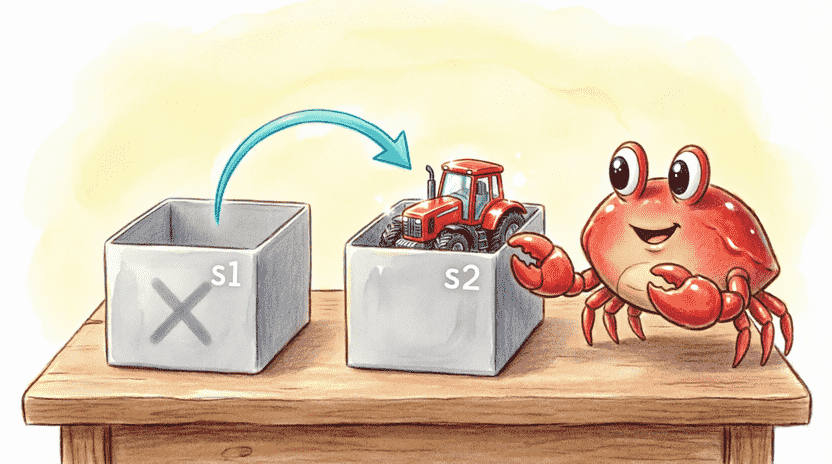
۴.۲. کارت امانت (Borrowing & References)
۴.۲.۱. راه حل دعوا: کارت امانت به جای اسباببازی
فریس نباید تراکتور را میبخشید. کافی بود به بیل یک کارت امانت میداد. با کارت امانت، بیل میتواند تراکتور را ببیند، حتی اگر اجازه داشته باشد سوارش بشود، ولی تراکتور همچنان در انبار فریس باقی میماند.
توی Rust به این کارت امانت مرجع (Reference) میگوییم. عمل قرض دادن را هم Borrowing مینامیم.
۴.۲.۲. ساختن مرجع با &
با گذاشتن یک علامت & قبل از اسم متغیر، یک کارت امانت میسازی:
#![allow(unused)]
fn main() {
let s1 = String::from("تراکتور");
let s2 = &s1; // s2 یک کارت امانت به s1 است
println!("مالک: {}", s1); // فریس هنوز تراکتورش را دارد
println!("قرضگیرنده: {}", s2); // بیل هم میتواند ببیندش
}اینجا هیچ خطایی رخ نمیدهد. هر دو میتوانند از مقدار استفاده کنند، چون فقط «نگاه» کردن، نه «صاحب شدن».
۴.۲.۳. قانون: هر تعداد کارت امانت معمولی مجاز است
میتوانی به تعداد نامحدود کارت امانت معمولی (&) صادر کنی:
#![allow(unused)]
fn main() {
let s = String::from("سلام");
let r1 = &s;
let r2 = &s;
let r3 = &s;
println!("{} {} {}", r1, r2, r3); // همه میتوانند نگاه کنند
}این درست مثل وقتی است که چند تا بچه دور یک آکواریوم جمع میشوند و به ماهیها نگاه میکنند. تا وقتی کسی دستش را در آب نمیکند (تغییر نمیدهد)، همه خوشحالند! 🐠
۴.۲.۴. کارت امانت ویژه برای تغییر (&mut)
اما اگر بیل بخواهد تراکتور را رنگ کند (تغییر بدهد)، دیگر کارت معمولی کافی نیست. او باید یک کارت امانت ویژه و طلایی بگیرد که روش نوشته &mut. ولی یک شرط سخت دارد:
⚠️ در هر لحظه، فقط یک نفر میتواند این کارت ویژه را داشته باشد.
#![allow(unused)]
fn main() {
let mut s = String::from("تراکتور"); // خود تراکتور هم باید قابل تغییر باشد
let r1 = &mut s; // بیل کارت ویژه گرفت
r1.push_str(" قرمز"); // تراکتور را رنگ کرد (یعنی متن را عوض کرد)
println!("{}", r1);
}اگر دو نفر همزمان کارت ویژه بخواهند، نگهبان داد میزند:
#![allow(unused)]
fn main() {
let mut s = String::from("تراکتور");
let r1 = &mut s;
let r2 = &mut s; // ❌ خطا! دو تا کارت ویژه همزمان ممنوع
}۴.۲.۵. قانون طلایی فریس (خلاصهی قوانین امانت)
این مهمترین قانون باشگاه امانتدهی است. حتماً جایی بنویسش:
🔹 یا میتوانی هر تعداد کارت معمولی (&) بدهی (فقط نگاه کردن).
🔹 یا میتوانی فقط یک کارت ویژه (&mut) بدهی (نگاه + تغییر).
❌ ترکیب این دو تا مطلقاً ممنوع است!
مثال نقض قانون:
#![allow(unused)]
fn main() {
let mut s = String::from("تراکتور");
let r1 = &s; // کارت معمولی (فقط نگاه)
let r2 = &mut s; // ❌ خطا! نمیشود همزمان هم نگاه کرد، هم تغییر داد
}![[Illustration: Cartoon scene showing a “Borrowing Club” desk. On one side, multiple kids hold normal blue cards labeled “&” looking at a toy. On the other side, one kid holds a golden card labeled “&mut” and is painting the toy. Ferris stands behind the desk holding a rulebook. Style: playful, educational, vibrant colors, clear visual metaphor, 16:9.]](assets/images/4.2.png)
۴.۳. نگهبان باشگاه: Borrow Checker
۴.۳.۱. معرفی نگهبان
در کامپایلر Rust یک موجود بامزه ولی جدی زندگی میکند به اسم Borrow Checker (بررسیکنندهی قرضها). او دقیقاً مثل نگهبان سختگیر ولی مهربون باشگاه است. وظیفهاش این است که قوانین بالا را چک کند. اگر ببیند کسی قانون را شکسته، برنامه را متوقف میکند و با پیامهای رنگی و دقیق بهت میگوید مشکل از کجاست.
او دوست ماست، چون نمیگذارد برنامهمان خراب شود، اطلاعات گم شود یا دو نفر همزمان یک چیز را تغییر دهند! 🛡️
۴.۳.۲. طول عمر کارت امانت (یک اشاره برای آینده)
هر کارت امانت یک تاریخ انقضا دارد. یعنی کارت فقط تا وقتی معتبر است که خود اسباببازی وجود داشته باشد. اگر اسباببازی خراب شود (از حافظه پاک شود)، کارت امانت بیارزش و خطرناک میشود. کامپایلر این تاریخها را چک میکند. مثال زیر خطا دارد چون کارت امانت (r) بیشتر از خود اسباببازی (s) عمر میکند:
#![allow(unused)]
fn main() {
let r;
{
let s = String::from("سلام");
r = &s; // کارت امانت گرفته شد
} // s اینجا از بین میرود (آکولاد بسته شد)
println!("{}", r); // ❌ خطا! r دارد به یک متغیر مرده اشاره میکند
}(فعلاً نگران جزئیات نباشید. در فصلهای پیشرفتهتر با این مفهوم بیشتر آشنا میشوید. فقط بدانید که نگهبان حواسش به تاریخ انقضای کارتها هم هست.)
۴.۳.۳. تمرین: قانونشکنی عمدی (و دیدن خطاهای دوستانه)
حالا خودت دست به کار شو و چند کد بنویس که عمداً قانون طلایی را بشکنند. مثلاً:
fn main() {
let mut text = String::from("بازی");
let a = &text;
let b = &text;
let c = &mut text; // اینجا نگهبان جیغ میزند!
println!("{} {} {}", a, b, c);
}کد را اجرا کن و پیام خطای کامپایلر را با دقت بخوان. ببین چقدر دقیق بهت میگوید که: «نمیشود قرض mutable داشت چون قبلاً immutable قرض دادی.» این یعنی نگهبان دارد ازت محافظت میکند! 🤝
![[Illustration: Ferris the crab wearing a security guard uniform, holding a flashlight and checking a list of rules. In the background, a cartoon compiler robot gives a red warning light and a green checkmark next to different code blocks. Style: friendly, technical metaphor, children’s book illustration, soft lighting, 16:9.]](assets/images/4.3.png)
۴.۴. تکههای پازل (Slices)
۴.۴.۱. گاهی فقط به بخشی از یک متن نیاز داریم
فرض کن فریس یک تابلوی راهنما دارد که رویش نوشته: Welcome to Crab Planet. او فقط میخواهد کلمهی Crab را برجسته کند. آیا باید کل تابلو را کپی کند؟ نه! کافی است یک ذرهبین بردارد و فقط به آن بخش اشاره کند. توی Rust به این ذرهبین Slice (برش) میگوییم.
۴.۴.۲. ساختن slice با محدوده (Range)
برای ساختن یک برش از یک متن، از علامت [start..end] استفاده میکنیم:
#![allow(unused)]
fn main() {
let s = String::from("Ferris the crab");
let ferris = &s[0..6]; // "Ferris" (از اندیس ۰ تا ۵)
let the_crab = &s[7..]; // "the crab" (از اندیس ۷ تا آخر)
let all = &s[..]; // "Ferris the crab" (همهی متن)
}📌 نکتهی مهم برای متن فارسی: در Rust اندیسهای [..] بر اساس بایت هستند، نه کاراکتر. چون حروف فارسی و ایموجیها چند بایت جا میگیرند، استفاده از [..] روی متن فارسی ممکن است خطا بدهد. فعلاً برای سادهتر شدن، با متن انگلیسی تمرین میکنیم.
۴.۴.۳. نکتهی مهم: slice هم یک کارت امانت است
برش (Slice) در اصل یک نوع مرجع (&) است. پس همان قوانین نگهبان روی آن هم اجرا میشود. تا وقتی یک برش از متن داری، نمیتوانی متن اصلی را تغییر دهی:
#![allow(unused)]
fn main() {
let mut s = String::from("hello world");
let word = &s[0..5]; // کارت امانت به "hello"
s.clear(); // ❌ خطا! نمیشود متن را پاک کرد چون word هنوز دارد نگاه میکند
}۴.۴.۴. تمرین: پیدا کردن اولین کلمه
تابعی بنویس به اسم first_word که یک &str بگیرد و اولین کلمهی آن (تا قبل از فاصله) را برگرداند. اگر فاصلهای نبود، کل متن را برگرداند.
💡 راهنمایی: میتوانی از متد find(' ') استفاده کنی که جایگاه بایت فاصله را برمیگرداند. این متد یک Option برمیگرداند: اگر فاصله پیدا شد، Some(موقعیت) و اگر پیدا نشد، None. (دقیقاً شبیه Result در فصل ۲، فقط به جای Ok/Err از Some/None استفاده میکند.)
fn first_word(s: &str) -> &str {
match s.find(' ') {
Some(pos) => &s[..pos], // اگر فاصله پیدا شد، تا آنجا برش بزن
None => s, // اگر پیدا نشد، کل متن را برگردان
}
}
fn main() {
let sentence = String::from("Ferris the crab");
let word = first_word(&sentence);
println!("اولین کلمه: {}", word); // خروجی: Ferris
}این کد هم امن است، هم سریع، و دقیقاً همان کاری است که یک برنامهنویس حرفهای Rust انجام میدهد! 🛠️
![[Illustration: Close-up of a cartoon magnifying glass hovering over a long paper strip labeled “Ferris the crab”. The glass highlights only the word “Ferris”. A pair of scissors (representing slicing) rests nearby. Ferris holds the magnifying glass proudly. Style: clean, educational vector, bright colors, metaphorical, 16:9.]](assets/images/4.4.png)
۴.۵. جمعبندی و چالش
۴.۵.۱. سه قانون اصلی مالکیت
برای اینکه حواست جمع باشد، این سه قانون را روی یک کاغذ بنویس و بچسبان جلوی چشمات:
۱. هر مقداری در Rust دقیقاً یک مالک دارد.
۲. میتوانی هر تعداد کارت امانت معمولی (&) بدهی، یا فقط یک کارت ویژه (&mut). ترکیبشان ممنوع است.
۳. وقتی مالک از اتاق خارج شود (scope تمام شود)، اسباببازی هم خودکار جمع میشود.
۴.۵.۲. چالش: تابعی که مالکیت نمیگیرد
یک تابع به اسم calculate_length بنویس که یک &String بگیرد و طول آن را برگرداند (بدون اینکه مالکیت رشته را تصاحب کند). در تابع main یک String بساز، طولش را با این تابع حساب کن و بعد از آن دوباره از همان String استفاده کن (مثلاً چاپش کن).
💡 پاسخ نمونه:
fn calculate_length(s: &String) -> usize {
s.len() // .len() طول رشته را برمیگرداند
}
fn main() {
let my_string = String::from("Ferris the crab");
let len = calculate_length(&my_string);
println!("طول '{}' برابر است با {} کاراکتر", my_string, len);
// my_string هنوز زنده است چون مالکیتش را ندادیم!
}۴.۵.۳. حرف آخر: نگران نباش، تمرین کن!
🧠 گاهی بعضی چیزها سخت است، و این اشکالی ندارد!
ممکن است این فصل یکم برات سخت و عجیب بوده باشد. کاملاً طبیعی است! مالکیت (Ownership) معروفترین و در عین حال چالشبرانگیزترین مفهوم Rust است. حتی برنامهنویسهای باتجربه هم گاهی با Borrow Checker کلنجار میروند. انتظار نداریم بعد از یک بار خواندن به استاد مالکیت تبدیل شوی.
اما خبر خوب این است که هر چی بیشتر کد بزنی، این قوانین بیشتر در ذهنت جا میافتد. مثل دوچرخهسواری میماند؛ اولش سخت است، اما بعداً دیگر لازم نیست به تعادل فکر کنی. 🚴♂️💨
در فصل بعد، به سراغ یک ابزار خیلی جذاب میرویم: Struct یا همان «کارت شناسایی برای هیولاهای فضایی»! 🦑✨
![[Illustration: Ferris the crab sitting at a cozy desk, writing the “3 Ownership Rules” on a glowing parchment. Around him float small icons: a locked box (ownership), a blue card (&), a golden card (&mut), and a magnifying glass (slice). Warm, encouraging lighting. Style: children’s book illustration, whimsical, high detail, 16:9.]](assets/images/4.5.png)
سرزمین راست: ماجراهای فریس خرچنگ فضایی
فصل ۵: کارت شناسایی هیولاها (Structs)
📑 فهرست فصل
۵.۱. هیولای من چه شکلیه؟
۵.۱.۱. داستان: دفترچهی هیولاهای فریس
۵.۱.۲. مشکل: چند تا متغیر جداگانه
۵.۱.۳. معرفی struct به عنوان قالب کارت شناسایی
۵.۲. فرم استخدام هیولا (تعریف Struct)
۵.۲.۱. نوشتن یک struct ساده
۵.۲.۲. قرارداد نامگذاری PascalCase
۵.۲.۳. فیلدها و نوع آنها
۵.۲.۴. تمرین: struct سفینه فضایی
۵.۳. معرفی هیولای جدید (Instance)
۵.۳.۱. ساختن یک نمونه از struct
۵.۳.۲. دسترسی به فیلدها با نقطه
۵.۳.۳. تغییر فیلدها (با mut)
۵.۳.۴. اختصار Field Init Shorthand
۵.۳.۵. ساختن نمونه از روی نمونه دیگر (struct update syntax)
۵.۴. کارهایی که هیولا میتونه بکنه (Methods)
۵.۴.۱. تفاوت تابع و متد
۵.۴.۲. نوشتن اولین متد با impl
۵.۴.۳. پارامتر &self
۵.۴.۴. متد با پارامترهای اضافی
۵.۴.۵. متد با مقدار بازگشتی
۵.۴.۶. متد تغییردهنده (&mut self)
۵.۴.۷. توابع مرتبط (Associated Functions)
۵.۵. پروژه: دفترچه هیولاها
۵.۵.۱. ساخت Vec از هیولاها
۵.۵.۲. حلقه برای غرش کردن همه
۵.۵.۳. پیدا کردن قویترین هیولا
۵.۵.۴. تمرین: متد is_stronger_than
۵.۶. جمعبندی و چالش
۵.۶.۱. مرور مفاهیم
۵.۶.۲. چالش: struct Student و نمره
۵.۱. هیولای من چه شکلیه؟
۵.۱.۱. داستان: دفترچهی هیولاهای فریس
فریس در سفرهای فضاییاش با کلی موجود عجیب و غریب آشنا شده. بعضیهاشان غولپیکرند، بعضیهاشان کوچولو و بانمک. فریس تصمیم گرفته یک دفترچه درست کند و مشخصات هر هیولا را در آن یادداشت کند: اسمش چیست؟ چه رنگی است؟ چند تا پا دارد؟ قدرتش چقدر است؟
این مشخصات برای هر هیولا دقیقاً مثل یک کارت شناسایی میماند. در برنامهنویسی وقتی میخواهیم اطلاعات مربوط به یک چیز را یکجا و مرتب نگه داریم، از یک ابزار فوقالعاده به اسم struct (مخفف Structure) استفاده میکنیم.
۵.۱.۲. مشکل: چند تا متغیر جداگانه
اگر بخواهیم بدون struct اطلاعات یک هیولا را ذخیره کنیم، مجبوریم کلی متغیر جداگانه بسازیم:
#![allow(unused)]
fn main() {
let name = String::from("دودو");
let color = String::from("سبز");
let legs = 4;
let power = 100;
}برای یک هیولا بد نیست. ولی اگر ده تا هیولا داشته باشیم، کلی متغیر با اسمهای قاطیپاتی مثل name2, color3 درست میشود که خیلی زود گیجکننده میشود! تازه، نمیتوانیم همهی این اطلاعات را مثل یک بستهی آماده به یک تابع بدهیم.
۵.۱.۳. معرفی struct به عنوان قالب کارت شناسایی
struct به ما اجازه میدهد چند تکه اطلاعات را کنار هم بگذاریم و بهشان یک اسم واحد بدهیم. در واقع struct مثل یک قالب خالی کارت شناسایی میماند. اول قالب را طراحی میکنیم (میگوییم هر کارت چه بخشهایی دارد)، بعد با استفاده از آن قالب، کارتهای واقعی برای هیولاهای مختلف پر میکنیم.
این یعنی تو داری یاد میگیری چطور اطلاعات دنیای واقعی را داخل کامپیوتر مدل کنی – گامی دیگر برای تبدیل شدن به یک جادوگر کامپیوتر! 🧙♂️
👨👩👧 نکته برای والدین و مربیان
Structها یکی از مهمترین ابزارهای Rust (و بسیاری زبانهای دیگر) هستند. آنها به کودک کمک میکنند تا دادههای مرتبط را گروهبندی کند – مهارتی فراتر از برنامهنویسی. کتاب رسمی Rust فصل کاملی دربارهی structها دارد:
doc.rust-lang.org/book/ch05-00-structs.html
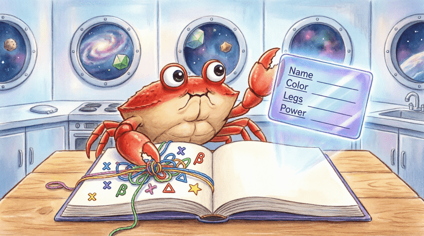
۵.۲. فرم استخدام هیولا (تعریف Struct)
۵.۲.۱. نوشتن یک struct ساده
با کلمهی کلیدی struct شروع میکنیم، اسم قالب را مینویسیم و داخل آکولاد {} فیلدهایش را تعریف میکنیم:
#![allow(unused)]
fn main() {
struct Monster {
name: String,
color: String,
legs: u8,
power: u32,
}
}این کد یعنی: «یک قالب جدید به اسم Monster داریم. هر چیزی که از این قالب ساخته شود، چهار بخش دارد: یک اسم (String)، یک رنگ (String)، تعداد پا (u8 یعنی عدد صحیح کوچک مثبت) و قدرت (u32).»
۵.۲.۲. قرارداد نامگذاری PascalCase
در Rust یک رسم قشنگ داریم: اسم structها را به صورت PascalCase مینویسیم. یعنی هر کلمه با حرف بزرگ شروع شود و فاصله نداشته باشد. مثال: Monster، SpaceShip، StudentGrade.
اسم فیلدها اما با snake_case نوشته میشود: همه حروف کوچک و با زیرخط (_) جدا میشوند. مثال: name, legs_count, fuel_amount.
۵.۲.۳. فیلدها و نوع آنها
هر فیلد یک اسم و یک نوع (Type) دارد. میتوانی از هر نوعی که تا حالا یاد گرفتی استفاده کنی: i32, f64, bool, char, String و حتی structهای دیگر! مثلاً میتوانی یک struct برای مختصات بسازی و بگذاریش داخل Monster:
#![allow(unused)]
fn main() {
struct Coordinates {
x: f64,
y: f64,
}
struct Monster {
name: String,
position: Coordinates,
// بقیه فیلدها...
}
}۵.۲.۴. تمرین: struct سفینه فضایی
یک struct به اسم SpaceShip تعریف کن که سه فیلد داشته باشد:
fuelاز نوعu32(سوخت باقیمانده)passenger_countاز نوعu8(تعداد مسافران)modelاز نوعString(مدل سفینه)
💡 پاسخ:
#![allow(unused)]
fn main() {
struct SpaceShip {
fuel: u32,
passenger_count: u8,
model: String,
}
}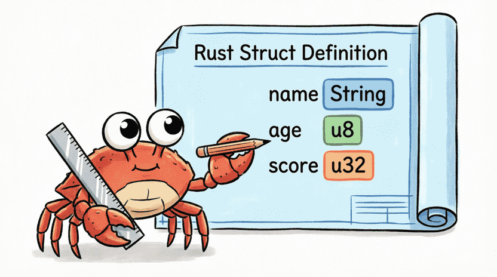
۵.۳. معرفی هیولای جدید (Instance)
۵.۳.۱. ساختن یک نمونه از struct
حالا که قالب Monster را داریم، نوبت است یک هیولای واقعی ازش بسازیم. به این کار میگویند ساختن نمونه (Instance). اسم struct را مینویسیم و داخل {} به هر فیلد یک مقدار میدهیم:
#![allow(unused)]
fn main() {
let monster1 = Monster {
name: String::from("دودو"),
color: String::from("سبز"),
legs: 4,
power: 100,
};
}حالا monster1 یک هیولای واقعی است که اطلاعات دودو را در خودش نگه داشته.
۵.۳.۲. دسترسی به فیلدها با نقطه
برای خواندن مقدار یک فیلد، از نقطه (.) استفاده میکنیم. دقیقاً مثل وقتی که به یک آدرس ایمیل یا وبسایت میرسی:
#![allow(unused)]
fn main() {
println!("اسم هیولا: {}", monster1.name);
println!("قدرت: {}", monster1.power);
}۵.۳.۳. تغییر فیلدها (با mut)
اگر بخواهیم بعداً یک فیلد را عوض کنیم (مثلاً هیولا تمرین کند و قدرتش بیشتر شود)، باید خود نمونه را موقع ساخت با mut تعریف کرده باشیم:
#![allow(unused)]
fn main() {
let mut monster2 = Monster {
name: String::from("بمبی"),
color: String::from("قرمز"),
legs: 2,
power: 50,
};
monster2.power = 75; // الان قدرت بمبی شد ۷۵
}۵.۳.۴. اختصار Field Init Shorthand
اگر قبلاً متغیرهایی ساخته باشی که اسمشان دقیقاً با اسم فیلدهای struct یکی باشد، میتوانی به جای تکرار name: name فقط اسم متغیر را بنویسی:
#![allow(unused)]
fn main() {
let name = String::from("دودو");
let color = String::from("سبز");
let legs = 4;
let power = 100;
let monster = Monster {
name, // یعنی name: name
color, // یعنی color: color
legs, // یعنی legs: legs
power, // یعنی power: power
};
}این کار کد را کوتاهتر و خواناتر میکند. 🧹✨
۵.۳.۵. ساختن نمونه از روی نمونه دیگر (struct update syntax)
گاهی میخواهیم یک هیولای جدید بسازیم که خیلی شبیه یک هیولای قبلی است، فقط مثلاً اسمش فرق میکند. به جای نوشتن دوبارهی همهی فیلدها، از علامت .. استفاده میکنیم:
#![allow(unused)]
fn main() {
let monster2 = Monster {
name: String::from("بمبی"),
..monster1 // بقیه فیلدها را از monster1 کپی کن
};
}⚠️ نکتهی مهم: این کار باعث انتقال مالکیت (Move) میشود! یعنی اگر فیلدی مثل name از نوع String باشد (که Copy نیست)، بعد از این خط دیگر نمیتوانی از monster1.name استفاده کنی چون مالکیتش رفته پیش monster2. اما فیلدهای عددی مثل legs و power چون Copy هستند، کپی میشوند و monster1 هنوز میتواند ازشان استفاده کند.
فعلاً همین را بدانید که .. راحت است اما مراقب مالکیت باشید. (در آینده با clone() هم آشنا خواهید شد.)
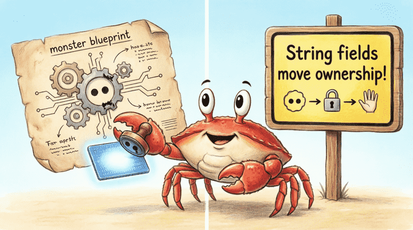
۵.۴. کارهایی که هیولا میتونه بکنه (Methods)
۵.۴.۱. تفاوت تابع و متد
تابع (Function) یک بلوک کد مستقلی است که میتواند پارامتر بگیرد و مقدار برگرداند (مثل add در فصل قبل).
متد (Method) تابعی است که به یک struct چسبیده است. متدها با نقطه (.) روی نمونهها صدا زده میشوند و اولین پارامترشان همیشه به خود نمونه اشاره دارد (معمولاً &self). مثل وقتی که میگویید «هیولا غرش کن!» به جای «غرش کن هیولا را!».
۵.۴.۲. نوشتن اولین متد با impl
برای تعریف متد برای یک struct، از بلوک impl (مخفف implementation) استفاده میکنیم:
#![allow(unused)]
fn main() {
impl Monster {
fn roar(&self) {
println!("{} غرغروووو!", self.name);
}
}
}حالا میتوانیم برای هر هیولایی که داریم، این متد را صدا بزنیم:
#![allow(unused)]
fn main() {
let dodo = Monster { /* ... */ };
dodo.roar(); // چاپ میکند: "دودو غرغروووو!"
}۵.۴.۳. پارامتر &self
&self یک مرجع غیرقابل تغییر (immutable) به نمونهی جاری است. یعنی متد میتواند فیلدها را بخواند ولی نمیتواند تغییرشان بدهد. سه حالت اصلی برای self داریم:
🔹 &self : فقط خواندن (رایجترین حالت)
🔹 &mut self : خواندن و تغییر دادن (نیاز دارد نمونه mut باشد)
🔹 self : گرفتن مالکیت نمونه (بعد از صدا زدن، نمونه از بین میرود – کمتر استفاده میشود)
۵.۴.۴. متد با پارامترهای اضافی
میتوانیم به متد، علاوه بر &self، پارامترهای دیگر هم بدهیم:
#![allow(unused)]
fn main() {
impl Monster {
fn attack(&self, target: &str) {
println!("{} به {} حمله کرد با قدرت {}!", self.name, target, self.power);
}
}
}صدا زدن:
#![allow(unused)]
fn main() {
dodo.attack("بیل");
// خروجی: دودو به بیل حمله کرد با قدرت 100!
}۵.۴.۵. متد با مقدار بازگشتی
متدها هم مثل توابع میتوانند مقدار برگردانند:
#![allow(unused)]
fn main() {
impl Monster {
fn power_level(&self) -> u32 {
self.power
}
}
}۵.۴.۶. متد تغییردهنده (&mut self)
اگر بخواهیم متد بتواند فیلدهای نمونه را تغییر دهد (مثلاً قدرت هیولا را زیاد کند)، باید از &mut self استفاده کنیم و خود نمونه هم mut باشد:
#![allow(unused)]
fn main() {
impl Monster {
fn heal(&mut self, amount: u32) {
self.power += amount;
println!("{} قدرت گرفت و شد {}!", self.name, self.power);
}
}
}استفاده:
#![allow(unused)]
fn main() {
let mut bombi = Monster { /* ... */ };
bombi.heal(20);
}۵.۴.۷. توابع مرتبط (Associated Functions)
گاهی به تابعی نیاز داریم که روی نمونهی خاصی کار نکند، بلکه یک کار کلی برای struct انجام بدهد. معروفترین مثال، تابع new است که یک نمونهی جدید میسازد. این توابع را توابع مرتبط مینامیم و با :: (دابل کولون) صدا میزنیم:
#![allow(unused)]
fn main() {
impl Monster {
fn new(name: String, color: String, legs: u8, power: u32) -> Monster {
Monster {
name,
color,
legs,
power,
}
}
}
}استفاده:
#![allow(unused)]
fn main() {
let dodo = Monster::new(
String::from("دودو"),
String::from("سبز"),
4,
100,
);
}این روش خیلی تمیزتر از نوشتن مستقیم فیلدها در main است و حس یک «کارخانهی ساخت هیولا» را میدهد! 🏭
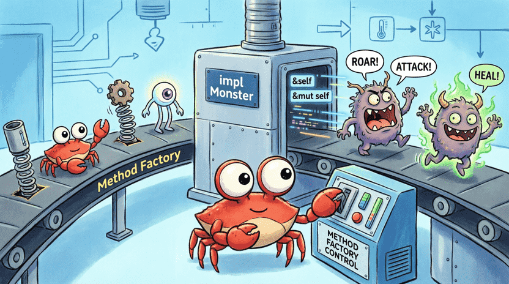
۵.۵. پروژه: دفترچه هیولاها
حالا با هم یک برنامهی کوچک مینویسیم که لیستی از هیولاها را نگه میدارد و کارهایی رویشان انجام میدهد.
۵.۵.۱. ساخت Vec از هیولاها
اول یک Vec (وکتور) از Monster میسازیم. وکتور مثل یک کولهپشتی جادویی است که میتوانی هی در آن هیولا اضافه کنی و اندازهاش خود به خود بزرگ میشود:
#![allow(unused)]
fn main() {
let mut monster_list = Vec::new();
monster_list.push(Monster::new(
String::from("دودو"),
String::from("سبز"),
4,
100,
));
monster_list.push(Monster::new(
String::from("بمبی"),
String::from("قرمز"),
2,
75,
));
monster_list.push(Monster::new(
String::from("زرزر"),
String::from("زرد"),
6,
120,
));
}(نکته: Vec در فصل ۸ کامل آموزش داده میشود، ولی فعلاً فقط بدانید که مثل یک لیست قابل رشد است که با push به آن عضو اضافه میکنیم.)
۵.۵.۲. حلقه برای غرش کردن همه
حالا میخواهیم روی همهی هیولاهای داخل لیست بچرخیم و از هرکسی بخواهیم غرش کند. برای این کار از یک حلقهی جدید به نام for استفاده میکنیم که به طور خودکار به ما یک یک اعضای لیست را میدهد:
#![allow(unused)]
fn main() {
for monster in &monster_list {
monster.roar();
}
}(علامت & جلوی monster_list یعنی ما فقط قرض میگیریم و لیست را مالک نمیشویم – درست مثل کارت امانت فصل ۴.)
۵.۵.۳. پیدا کردن قویترین هیولا
یک تابع مینویسیم که قویترین هیولا را پیدا کند (یعنی بیشترین power را داشته باشد):
#![allow(unused)]
fn main() {
fn strongest(monsters: &Vec<Monster>) -> &Monster {
let mut strongest = &monsters[0];
for monster in monsters {
if monster.power > strongest.power {
strongest = monster;
}
}
strongest
}
}و در main:
#![allow(unused)]
fn main() {
let champ = strongest(&monster_list);
println!("قویترین هیولا: {} با قدرت {}", champ.name, champ.power);
}۵.۵.۴. تمرین: متد is_stronger_than
به struct Monster یک متد به اسم is_stronger_than اضافه کن که یک &Monster دیگر بگیرد و true برگرداند اگر قدرت خودش از آن یکی بیشتر باشد.
💡 پاسخ:
#![allow(unused)]
fn main() {
impl Monster {
fn is_stronger_than(&self, other: &Monster) -> bool {
self.power > other.power
}
}
}استفاده:
#![allow(unused)]
fn main() {
if dodo.is_stronger_than(&bombi) {
println!("دودو قویتر از بمبی است!");
}
}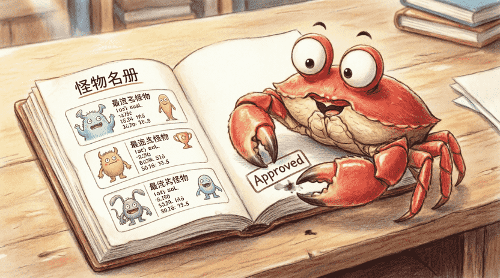
۵.۶. جمعبندی و چالش
۵.۶.۱. مرور مفاهیم
در این فصل یاد گرفتی:
✅ struct قالبی برای دستهبندی دادههای مرتبط است.
✅ نمونهها با let x = StructName { fields }; ساخته میشوند.
✅ دسترسی به فیلدها با نقطه (.) انجام میشود.
✅ متدها در بلوک impl تعریف میشوند و اولین پارامترشان self (یا &self یا &mut self) است.
✅ توابع مرتبط (مثل new) با :: صدا زده میشوند.
✅ میتوانیم از .. برای کپی کردن فیلدها از نمونهی دیگر استفاده کنیم (با دقت در مورد مالکیت!).
✅ حلقهی for راهی آسان برای پیمایش لیستهاست.
🧠 گاهی بعضی چیزها سخت است، و این اشکالی ندارد!
استفاده از struct و متدها ممکن است در ابتدا کمی عجیب به نظر برسد، اما با تمرین کاملاً طبیعی میشود. هر بار که یک struct برای مدل کردن چیزی در دنیای واقعی میسازی، در حقیقت مثل یک مهندس نرمافزار فکر میکنی. اگر هنوز در بعضی بخشها احساس ابهام داری، نگران نباش – در فصلهای بعدی بارها از structها استفاده خواهی کرد.
۵.۶.۲. چالش: struct Student و نمره
یک struct به اسم Student با فیلدهای name: String و grade: f64 بساز. سپس یک متد به نام passed(&self) -> bool بنویس که اگر grade >= 10.0 بود true برگرداند، در غیر این صورت false.
بعد یک وکتور از چند دانشآموز بساز و همهی کسانی که قبول شدهاند را چاپ کن.
💡 پاسخ نمونه:
struct Student {
name: String,
grade: f64,
}
impl Student {
fn new(name: String, grade: f64) -> Student {
Student { name, grade }
}
fn passed(&self) -> bool {
self.grade >= 10.0
}
}
fn main() {
let students = vec![
Student::new(String::from("سارا"), 18.5),
Student::new(String::from("رضا"), 9.0),
Student::new(String::from("مریم"), 14.0),
];
for student in &students {
if student.passed() {
println!("{} قبول شد با نمره {}", student.name, student.grade);
} else {
println!("{} نیاز به تلاش بیشتر دارد.", student.name);
}
}
}حالا تو میدانی چطور دادههای مرتبط را در قالب struct سازماندهی کنی و برایشان رفتار (متد) تعریف کنی. در فصل بعد با enum و match آشنا میشویم و یاد میگیریم چطور با حالتهای مختلف یک مقدار (مثل وضعیت بازی، آب و هوا، یا رنگ چراغ) کار کنیم. 🌈✨
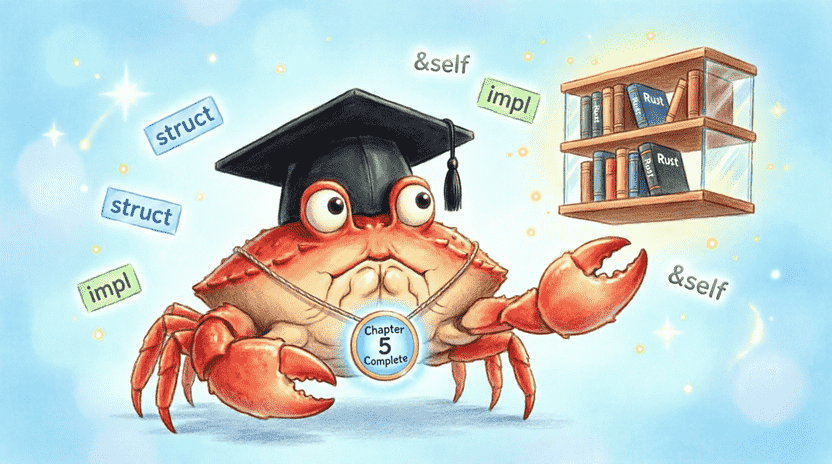
سرزمین راست: ماجراهای فریس خرچنگ فضایی
فصل ۶: ماشین انتخاب لباس (Enums و Match)
📑 فهرست فصل
۶.۱. امروز هوا چطوره؟ (Enum)
۶.۱.۱. داستان: کمد لباس هوشمند فریس
۶.۱.۲. مشکل: عدد یا رشته؟
۶.۱.۳. تعریف enum با حالتهای مختلف
۶.۱.۴. ساختن مقدار از enum
۶.۲. یک کمد پر از لباس (Enum with Data)
۶.۲.۱. هر حالت میتواند دادهی متفاوتی داشته باشد
۶.۲.۲. تعریف enum با داده
۶.۲.۳. ساختن نمونه از enum با داده
۶.۲.۴. تفاوت enum با struct
۶.۳. کیف گمشده (Option)
۶.۳.۱. داستان: دنبال کلید سفینه
۶.۳.۲. معرفی Option
۶.۳.۳. استفاده از Some و None
۶.۳.۴. چرا Option بهتر از null است؟
۶.۳.۵. متدهای مفید روی Option
۶.۳.۶. تمرین: تابع safe_divide
۶.۴. ریموت کنترل هوشمند (Match)
۶.۴.۱. مشکل: چطور بر اساس مقدار enum تصمیم بگیریم؟
۶.۴.۲. معرفی match
۶.۴.۳. شرط exhaustive (همه حالتها باید پوشش داده شوند)
۶.۴.۴. استخراج داده از enum با match
۶.۴.۵. الگوی catch-all با _
۶.۴.۶. match با Option
۶.۴.۷. if let برای سادهتر شدن
۶.۴.۸. تمرین: ارزش سکهها
۶.۵. پروژه: ماشین لباسشویی هوشمند
۶.۵.۱. تعریف enum برای آب و هوا
۶.۵.۲. تابع پیشنهاد لباس
۶.۵.۳. گرفتن ورودی از کاربر
۶.۵.۴. استفاده از Option برای رنگ دلخواه
۶.۶. جمعبندی و چالش
۶.۶.۱. مرور مفاهیم
۶.۶.۲. چالش: ماشین حساب با Result
۶.۱. امروز هوا چطوره؟ (Enum)
۶.۱.۱. داستان: کمد لباس هوشمند فریس
فریس یک کمد لباس جادویی دارد که میتواند بر اساس وضعیت آب و هوا بهش بگوید چه لباسی بپوشد. اما آب و هوا فقط یک حالت نیست؛ میتواند آفتابی، بارونی، برفی یا ابری باشد. فریس میخواهد در برنامهاش این چهار حالت را ذخیره کند. به جای اینکه از عدد یا متن ساده استفاده کند (که ممکن است اشتباه تایپی پیش بیاید)، Rust یک ابزار عالی به اسم enum دارد.
این یعنی کامپیوتر میتواند مثل انسانها در دستهها فکر کند – گامی دیگر به سوی جادوگر کامپیوتر شدن! 🧙♂️
۶.۱.۲. مشکل: عدد یا رشته؟
فرض کن میخواستیم با عدد کار کنیم:
#![allow(unused)]
fn main() {
let weather = 1; // ۱ یعنی آفتابی، ۲ یعنی بارانی، ...
}اما اگر اشتباهی عدد ۵ را بگذاریم چه؟ یا با متن:
#![allow(unused)]
fn main() {
let weather = "sunny";
}اگر "suny" تایپ کنیم (یک حرف جا بندازیم)، برنامه گیج میشود! enum این مشکل را حل میکند. فقط اجازه میدهد از یک لیست مشخص انتخاب کنی. هیچ چیز دیگری مجاز نیست.
۶.۱.۳. تعریف enum با حالتهای مختلف
با کلمهی کلیدی enum یک نوع جدید میسازیم که فقط میتواند یکی از چند مقدار مشخص را داشته باشد:
#![allow(unused)]
fn main() {
enum Weather {
Sunny,
Rainy,
Snowy,
Cloudy,
}
}حالا Weather یک نوع دادهی جدید شده، درست مثل i32 یا String. اما فقط چهار مقدار مجاز دارد.
۶.۱.۴. ساختن مقدار از enum
برای ساختن یک مقدار از این enum، اسم enum را مینویسیم، بعد دو تا دونقطه (::) و سپس حالت مورد نظر:
#![allow(unused)]
fn main() {
let today = Weather::Sunny;
let tomorrow = Weather::Rainy;
}:: یعنی «از داخل این enum، آن حالت خاص را انتخاب کن».
👨👩👧 نکته برای والدین و مربیان
Enumها (شمارندهها) یکی از مفاهیم خوشساخت Rust هستند که به کودکان کمک میکنند تا «دستهبندی» را در برنامهنویسی بفهمند. کتاب رسمی Rust فصل کاملی دربارهی enumها دارد:
doc.rust-lang.org/book/ch06-00-enums.html
۶.۲. یک کمد پر از لباس (Enum with Data)
۶.۲.۱. هر حالت میتواند دادهی متفاوتی داشته باشد
همهی روزهای آفتابی یکجور نیستند. گاهی هوا ۲۵ درجه است، گاهی ۳۵ درجه. برای روزهای بارونی شاید بخواهیم رنگ چتر را هم بدانیم. enum در Rust میتواند برای هر حالت، دادهی اضافی نگه دارد!
۶.۲.۲. تعریف enum با داده
#![allow(unused)]
fn main() {
enum WeatherInfo {
Sunny { temperature: u8 },
Rainy { umbrella_color: String },
Snowy { scarf_material: String },
Cloudy,
}
}🔹 Sunny یک فیلد به اسم temperature از نوع u8 دارد.
🔹 Rainy یک فیلد umbrella_color از نوع String دارد.
🔹 Snowy یک فیلد scarf_material از نوع String دارد.
🔹 Cloudy هیچ دادهی اضافیای ندارد.
۶.۲.۳. ساختن نمونه از enum با داده
#![allow(unused)]
fn main() {
let sunny_day = WeatherInfo::Sunny { temperature: 32 };
let rainy_day = WeatherInfo::Rainy { umbrella_color: String::from("قرمز") };
let snowy_day = WeatherInfo::Snowy { scarf_material: String::from("پشمی") };
let cloudy_day = WeatherInfo::Cloudy;
}۶.۲.۴. تفاوت enum با struct
🔹 struct: همهی فیلدها همیشه وجود دارند. مثلاً یک Monster همیشه اسم، رنگ، پا و قدرت دارد.
🔹 enum: فقط یکی از حالتها انتخاب میشود. یک WeatherInfo یا آفتابی است یا بارونی یا برفی یا ابری. نمیتواند همزمان هم دما داشته باشد هم رنگ چتر!
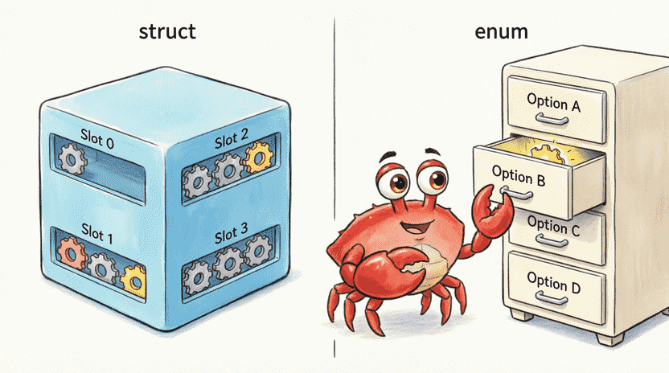
۶.۳. کیف گمشده (Option)
۶.۳.۱. داستان: دنبال کلید سفینه
فریس همیشه کلید سفینهاش را در کیفش میگذارد. اما بعضی روزها یادش میرود و کیف خالی است! در برنامهنویسی، ما به این موقعیت میگوییم «ممکن است چیزی وجود داشته باشد یا نداشته باشد». در خیلی از زبانها از null استفاده میکنند، اما null خیلی خطرناک است و باعث کرش برنامه میشود. Rust اصلاً null ندارد؛ به جایش از Option استفاده میکند.
۶.۳.۲. معرفی Option<T>
Option یک enum بسیار پرکاربرد است که در کتابخانهی استاندارد Rust تعریف شده:
#![allow(unused)]
fn main() {
enum Option<T> {
Some(T),
None,
}
}T یعنی «هر نوعی میتواند اینجا قرار بگیرد». Some(T) یعنی «یک چیز از نوع T داریم»، و None یعنی «هیچی نداریم».
۶.۳.۳. استفاده از Some و None
#![allow(unused)]
fn main() {
let key = Some(String::from("کلید طلایی")); // کلید هست
let no_key: Option<String> = None; // کلید نیست
}اگر فقط None بنویسی، باید به کامپایلر بگویی که چه نوعی را انتظار داری (مثلاً Option<String>).
۶.۳.۴. چرا Option بهتر از null است؟
در زبانهایی که null دارند، اگر فراموش کنی چک کنی چیزی null هست یا نه، برنامه ممکن است یکهو بترکد. اما در Rust، کامپایلر مجبورت میکند هر دو حالت Some و None را بررسی کنی. اینطوری برنامهات خیلی امنتر میشود! 🛡️
۶.۳.۵. متدهای مفید روی Option
🔹 .unwrap(): اگر Some بود مقدار درونش را میدهد، اگر None بود برنامه را متوقف میکند. (فقط وقتی ۱۰۰٪ مطمئنی خالی نیست استفاده کن!)
🔹 .unwrap_or(default): اگر None بود، یک مقدار پیشفرض برمیگرداند.
🔹 .is_some() / .is_none(): چک میکند مقدار هست یا نه.
#![allow(unused)]
fn main() {
let key = Some(String::from("abc"));
let value = key.unwrap_or(String::from("کلید پیدا نشد"));
println!("{}", value); // abc
}۶.۳.۶. تمرین: تابع safe_divide
یک تابع به اسم safe_divide بنویس که دو عدد اعشاری (f64) بگیرد. اگر عدد دوم صفر نبود، حاصل تقسیم را درون Some برگرداند، در غیر این صورت None برگرداند.
💡 پاسخ:
fn safe_divide(a: f64, b: f64) -> Option<f64> {
if b == 0.0 {
None
} else {
Some(a / b)
}
}
fn main() {
let result = safe_divide(10.0, 2.0);
match result {
Some(r) => println!("نتیجه: {}", r),
None => println!("خطا: تقسیم بر صفر"),
}
}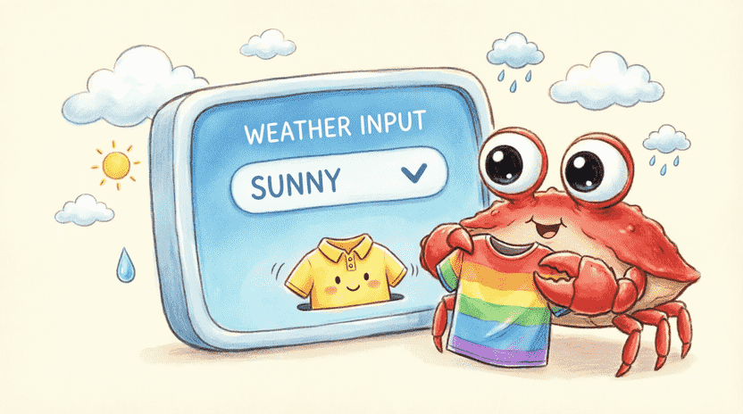
۶.۴. ریموت کنترل هوشمند (Match)
۶.۴.۱. مشکل: چطور بر اساس مقدار enum تصمیم بگیریم؟
حالا که میدانیم هوا Sunny است یا Rainy، چطور به کاربر بگوییم چه لباسی بپوشد؟ میتوانیم از چند تا if استفاده کنیم، اما Rust یک ابزار خیلی قشنگتر دارد: match.
۶.۴.۲. معرفی match
match مثل یک دستگاه جورکننده است: یک مقدار را میگیرد و با الگوهای مختلف مقایسه میکند. اولین الگویی که جواب بدهد، اجرا میشود.
#![allow(unused)]
fn main() {
let weather = Weather::Sunny;
match weather {
Weather::Sunny => println!("کلاه آفتابی بگذار!"),
Weather::Rainy => println!("چتر بردار!"),
Weather::Snowy => println!("شالگردن ببند!"),
Weather::Cloudy => println!("هوا عالی است، هر چه دوست داری!"),
}
}۶.۴.۳. شرط exhaustive (همه حالتها باید پوشش داده شوند)
در match باید همهی حالتهای ممکن را بررسی کنی. اگر حتی یکی را فراموش کنی، کامپایلر بهت خطا میدهد و میگوید «فلان حالت را پوشش ندادهای». این خیلی خوب است چون دیگر حالتهای فراموششده باعث باگ نمیشوند!
۶.۴.۴. استخراج داده از enum با match
اگر enum ما دادهی اضافی داشته باشد، میتوانیم آن داده را در match بیرون بکشیم و استفاده کنیم:
#![allow(unused)]
fn main() {
let info = WeatherInfo::Sunny { temperature: 35 };
match info {
WeatherInfo::Sunny { temperature } => {
println!("آفتابی با دمای {} درجه، کلاه بگذار!", temperature);
}
WeatherInfo::Rainy { umbrella_color } => {
println!("بارونی، چتر {} را بردار", umbrella_color);
}
// بقیه حالتها...
}
}۶.۴.۵. الگوی catch-all با _
گاهی فقط به یک یا دو حالت اهمیت میدهیم و بقیه برایمان فرقی ندارند. میتوانیم از _ (خط زیرین) به معنی «هر چیز دیگر» استفاده کنیم:
#![allow(unused)]
fn main() {
match weather {
Weather::Sunny => println!("بریم پارک!"),
_ => println!("امروز خانه بمانیم بهتر است"),
}
}۶.۴.۶. match با Option
match با Option خیلی خوب جواب میدهد:
#![allow(unused)]
fn main() {
let key = Some(String::from("کلید طلایی"));
match key {
Some(k) => println!("کلید پیدا شد: {}", k),
None => println!("کلید گم شده، باید بگردیم!"),
}
}۶.۴.۷. if let برای سادهتر شدن
اگر فقط به یک حالت خاص اهمیت میدهیم و میخواهیم بقیه را نادیده بگیریم، میتوانیم از if let استفاده کنیم که کوتاهتر است:
#![allow(unused)]
fn main() {
let weather = Weather::Sunny;
if let Weather::Sunny = weather {
println!("امروز آفتابی و قشنگ است!");
} else {
println!("آفتابی نیست.");
}
}۶.۴.۸. تمرین: ارزش سکهها
یک enum به اسم Coin با حالتهای Penny، Nickel، Dime و Quarter بساز. سپس تابعی بنویس که یک سکه بگیرد و ارزشش را به سنت برگرداند (Penny=1, Nickel=5, Dime=10, Quarter=25).
💡 پاسخ:
#![allow(unused)]
fn main() {
enum Coin { Penny, Nickel, Dime, Quarter }
fn value_in_cents(coin: Coin) -> u8 {
match coin {
Coin::Penny => 1,
Coin::Nickel => 5,
Coin::Dime => 10,
Coin::Quarter => 25,
}
}
}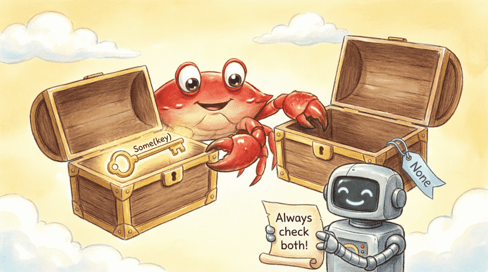
۶.۵. پروژه: ماشین لباسشویی هوشمند
حالا با هم یک برنامهی کوچک مینویسیم که از کاربر وضعیت آب و هوا را بپرسد و بر اساسش یک رنگ لباس پیشنهاد بدهد.
۶.۵.۱. تعریف enum برای آب و هوا
#![allow(unused)]
fn main() {
enum Weather {
Sunny,
Rainy,
Snowy,
Cloudy,
}
}۶.۵.۲. تابع پیشنهاد لباس
#![allow(unused)]
fn main() {
fn recommend_shirt(weather: Weather) -> &'static str {
match weather {
Weather::Sunny => "سفید (خنک و آفتابی)",
Weather::Rainy => "آبی (مثل آسمان بارونی)",
Weather::Snowy => "قرمز (گرم و شاد)",
Weather::Cloudy => "خاکستری (مناسب هوای ابری)",
}
}
}💡 &'static str یعنی یک رشتهی ثابت که همیشه در برنامه هست و نیازی به ساخت دوباره ندارد. برای متنهای کوتاه و از پیش مشخص شده عالی است.
۶.۵.۳. گرفتن ورودی از کاربر
use std::io;
fn main() {
println!("وضعیت هوا را انتخاب کن:");
println!("1: آفتابی | 2: بارانی | 3: برفی | 4: ابری");
let mut input = String::new();
io::stdin().read_line(&mut input).expect("خطا در خواندن");
let choice: u32 = input.trim().parse().expect("لطفاً یک عدد وارد کن");
let weather = match choice {
1 => Weather::Sunny,
2 => Weather::Rainy,
3 => Weather::Snowy,
4 => Weather::Cloudy,
_ => {
println!("عدد نامعتبر، پیشفرض آفتابی در نظر گرفته شد.");
Weather::Sunny
}
};
let shirt = recommend_shirt(weather);
println!("پیشنهاد من: پیراهن {}", shirt);
}۶.۵.۴. استفاده از Option برای رنگ دلخواه
حالا فرض کن کاربر یک رنگ خاص دوست دارد. اگر وارد کرد، از همان استفاده کن، در غیر این صورت پیشنهاد خودمان را بده:
#![allow(unused)]
fn main() {
let preferred_color: Option<String> = None; // میتوانیم بعداً از کاربر بپرسیم
let final_color = match preferred_color {
Some(color) => color,
None => recommend_shirt(weather).to_string(),
};
println!("رنگ نهایی: {}", final_color);
}۶.۶. جمعبندی و چالش
۶.۶.۱. مرور مفاهیم
در این فصل یاد گرفتی:
✅ enum نوعی است که فقط میتواند یکی از چند حالت مشخص را داشته باشد.
✅ هر حالت میتواند دادهی مخصوص خودش را داشته باشد.
✅ Option<T> یک enum استاندارد برای «یا چیزی هست، یا هیچی نیست» (Some(T) یا None).
✅ match دستگاهی برای تصمیمگیری بر اساس مقدار enum و استخراج دادههای درون آن است.
✅ if let شکل خلاصهشدهی match برای وقتی فقط یک حالت مهم است.
🧠 گاهی بعضی چیزها سخت است، و این اشکالی ندارد!
تطبیق الگو باmatch– مخصوصاً وقتی داده از درون enum بیرون میکشی – ممکن است در ابتدا کمی دشوار به نظر برسد. نگران نباش! در کدهای واقعی Rust بارها و بارها ازmatchاستفاده میشود. هر بار که از آن استفاده کنی، برایت آسانتر خواهد شد. تمرین کن و لذت ببر!
۶.۶.۲. چالش: ماشین حساب با Result
به جای Option، از یک enum دیگر به اسم Result استفاده میکنیم که برای مدیریت خطاها عالی است:
#![allow(unused)]
fn main() {
enum Result<T, E> {
Ok(T),
Err(E),
}
}یک تابع divide بنویس که دو f64 بگیرد و اگر مقسومعلیه صفر نبود، Ok(result) برگرداند، در غیر این صورت Err("تقسیم بر صفر") برگرداند. سپس در main با match نتیجه را چاپ کن.
💡 پاسخ نمونه:
fn divide(a: f64, b: f64) -> Result<f64, &'static str> {
if b == 0.0 {
Err("تقسیم بر صفر امکانپذیر نیست")
} else {
Ok(a / b)
}
}
fn main() {
let result = divide(10.0, 2.0);
match result {
Ok(r) => println!("نتیجه: {}", r),
Err(e) => println!("خطا: {}", e),
}
}حالا تو میدانی چطور با enum و match حالتهای مختلف را به زیبایی مدیریت کنی. در فصل بعد، یاد میگیریم چطور کدهایمان را در فایلها و ماژولهای مختلف سازماندهی کنیم تا مثل یک کتابخانهی بزرگ و مرتب شود! 📚✨
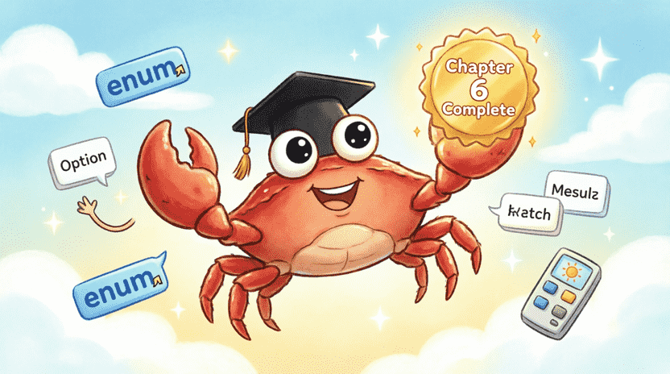
سرزمین راست: ماجراهای فریس خرچنگ فضایی
فصل ۷: کتابخانهی بزرگ شهر (ماژولها و فایلها)
📑 فهرست فصل
۷.۱. کتابخانه خیلی شلوغ شد!
۷.۱.۱. داستان: کتابخانهی بینظم فریس
۷.۱.۲. مشکل: همه چیز در یک فایل
۷.۱.۳. معرفی ماژول به عنوان قفسه
۷.۲. قفسهبندی (mod)
۷.۲.۱. تعریف ماژول در یک فایل
۷.۲.۲. صدا زدن توابع ماژول
۷.۲.۳. ماژولهای تو در تو
۷.۲.۴. جدا کردن ماژول به فایل جداگانه
۷.۲.۵. تمرین: ماژولهای ریاضی
۷.۳. قفل کتابخانه (Privacy)
۷.۳.۱. خصوصی بودن پیشفرض
۷.۳.۲. عمومی کردن با pub
۷.۳.۳. فیلدهای خصوصی در struct
۷.۳.۴. چرا محرمانگی مهم است؟
۷.۳.۵. تمرین: ماژول بانک
۷.۴. میانبرهای کتابخانه (use و as)
۷.۴.۱. آوردن توابع با use
۷.۴.۲. تغییر نام با as
۷.۵. پروژه: بازسازی بازی حدس عدد با ماژولها
۷.۵.۱. ساختار پروژه
۷.۵.۲. ماژول input
۷.۵.۳. ماژول random
۷.۵.۴. ماژول game_logic
۷.۵.۵. فایل main.rs
۷.۶. جمعبندی و چالش
۷.۶.۱. مرور مفاهیم
۷.۶.۲. چالش: crate shapes
۷.۱. کتابخانه خیلی شلوغ شد!
۷.۱.۱. داستان: کتابخانهی بینظم فریس
فریس عاشق کتاب خواندن است و یک کتابخانهی بزرگ در سفینهاش دارد. روزهای اول، همهی کتابها را یکجا روی یک میز بزرگ میریخت. 📚📖
اما خیلی زود، تعداد کتابها زیاد شد و کتابخانه شبیه انبار آشغال شد! هر وقت میخواست «دانشنامهی کهکشانها» را پیدا کند، باید ساعتها دنبال یک تکه کاغذ میگشت.
بالاخره فریس تصمیم گرفت کتابخانه را مرتب کند. قفسههای جداگانه ساخت: یک قفسه برای کتابهای علمی، یکی برای داستانها، یکی برای نقشههای ستارهای و یکی هم برای کتابهای آشپزی فضایی! حالا همهچی سر جای خودش است و پیدا کردنشان آب خوردن است! 💧
۷.۱.۲. مشکل: همه چیز در یک فایل
در برنامهنویسی هم دقیقاً همین اتفاق میافتد. تا اینجا ما همهی کدهایمان را در یک فایل به اسم main.rs مینوشتیم. برای بازی حدس عدد (که حدود ۵۰ خط کد داشت) این کار عالی بود.
اما تصور کن داری یک بازی بزرگ مثل «ماینکرفت» را مینویسی! هزاران خط کد، هزاران تابع و صدها متغیر! اگر همه را در یک فایل بریزی، پیدا کردن یک خط کوچک میشود مثل پیدا کردن یک سوزن در انبار کاه! 😵💫
علاوه بر این، اگر چند نفر بخواهند با هم کار کنند، همهشان باید همان یک فایل را تغییر دهند و کلی هم دعوا میشود!
۷.۱.۳. معرفی ماژول به عنوان قفسه
در Rust، راه حل این مشکل استفاده از ماژول (Module) است.
ماژول مثل یک قفسهی جداگانه است. هر قفسه میتواند کتابهای (کدهای) مخصوص خودش را داشته باشد.
ماژولها سه کار بزرگ برایمان میکنند:
🔹 سازماندهی: کد را دستهبندی میکنند تا قشنگ و مرتب باشد.
🔹 محرمانگی: میتوانیم بعضی کدها را خصوصی نگه داریم تا کسی از بیرون دستکاریشان نکند.
🔹 جلوگیری از تداخل: دو تا ماژول مختلف میتوانند یک تابع به اسم یکسان داشته باشند بدون اینکه قاطی شوند!
این یعنی تو داری یک مهارت حرفهای مهندسی نرمافزار را یاد میگیری – مدیر یک کتابخانهی عظیم از کدها! هر قدمت به «جادوگر کامپیوتر» شدن نزدیکتر میکند. 🧙♂️
👨👩👧 نکته برای والدین و مربیان
ماژولها روش Rust برای مدیریت کد در مقیاس بزرگ هستند. این مفهوم در تمام زبانهای برنامهنویسی وجود دارد. این فصل نشان میدهد چطور از یک اسکریپت تکفایلی به یک پروژهٔ چندفایلی برویم – یک مهارت ضروری در دنیای واقعی. کتاب رسمی Rust فصل کاملی دربارهی ماژولها دارد:
doc.rust-lang.org/book/ch07-00-managing-growing-projects-with-packages-crates-and-modules.html
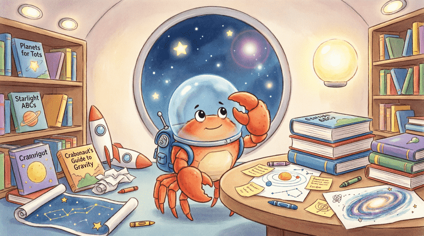
۷.۲. قفسهبندی (mod)
۷.۲.۱. تعریف ماژول در یک فایل
سادهترین راه برای ساختن قفسه (ماژول)، استفاده از کلمهی کلیدی mod است.
میتوانیم ماژول را همان در فایل main.rs تعریف کنیم:
mod animals {
pub fn bark() {
println!("هاپ! هاپ!");
}
pub struct Dog {
pub name: String,
}
}
fn main() {
// استفاده از تابع داخل ماژول
animals::bark();
// ساختن یک سگ
let my_dog = animals::Dog {
name: String::from("رکسی"),
};
println!("اسم سگ من: {}", my_dog.name);
}به کلمهی pub (مخفف Public به معنی عمومی) دقت کن. هر چیزی که بخواهیم از بیرون ماژول صدایش بزنیم، باید pub باشد. در غیر این صورت، آن کد خصوصی میماند و فقط داخل همان ماژول قابل استفاده است.
۷.۲.۲. صدا زدن توابع ماژول
برای دسترسی به چیزی در یک ماژول، از علامت :: (دو تا دونقطه) استفاده میکنیم.
مثلاً animals::bark() یعنی: «برو به قفسهی animals و تابع bark را پیدا کن و اجرایش کن!» 🐕
۷.۲.۳. ماژولهای تو در تو
میتوانیم ماژولها را مثل جعبههای تودرتو، داخل هم قرار دهیم:
mod house {
pub mod kitchen {
pub fn cook() {
println!("آشپزی در آشپزخانه!");
}
}
pub mod living_room {
pub fn watch_tv() {
println!("تماشای تلویزیون در پذیرایی!");
}
}
}
fn main() {
house::kitchen::cook();
house::living_room::watch_tv();
}۷.۲.۴. جدا کردن ماژول به فایل جداگانه
وقتی ماژولها بزرگ میشوند، دیگر جای خوبی در main.rs ندارند. بهتر است هر کدام را ببریم در یک فایل جدا!
برای این کار:
۱. یک فایل جدید کنار main.rs (در پوشهی src) میسازیم با همان اسم ماژول و پسوند .rs.
۲. محتویات ماژول (بدون کلمهی mod) را در آن فایل مینویسیم.
۳. در main.rs فقط مینویسیم: mod animals;
📂 فایل src/animals.rs:
#![allow(unused)]
fn main() {
pub fn bark() {
println!("هاپ!");
}
pub struct Dog {
pub name: String,
}
}📂 فایل src/main.rs:
mod animals; // این خط به Rust میگوید فایل animals.rs را پیدا کن!
fn main() {
animals::bark();
}Rust خودش باهوش است و میفهمد که وقتی مینویسی mod animals; یعنی برو فایل animals.rs را بخوان. خیلی تمیز و مرتب! 🧹✨
🧠 گاهی بعضی چیزها سخت است، و این اشکالی ندارد!
استفاده از فایلهای جداگانه ممکن است در ابتدا کمی عجیب به نظر برسد، اما بعد از چند بار تمرین برایت کاملاً طبیعی میشود. این دقیقاً همان روشی است که تمام پروژههای بزرگ Rust (حتی خود کامپایلر Rust) از آن استفاده میکنند.
۷.۲.۵. تمرین: ماژولهای ریاضی
یک پروژه جدید بساز (cargo new math_modules). دو تا ماژول به اسمهای math و strings در فایلهای جداگانه بساز.
- ماژول
math: تابعaddوsubtract. - ماژول
strings: تابعto_uppercaseوto_lowercase. (برای سادهتر شدن، میتوانی از متدهای استانداردto_uppercase()وto_lowercase()رویStringاستفاده کنی.)
بعد درmain.rsاز همهشان استفاده کن.
![[Illustration: A cartoon carpenter Ferris building wooden shelves labeled “mod” and “pub”. Each shelf holds different code blocks (functions, structs). Tools like a hammer and ruler are scattered around. Style: educational, playful, bright colors, children’s book, 16:9.]](assets/images/7.2.png)
۷.۳. قفل کتابخانه (Privacy)
۷.۳.۱. خصوصی بودن پیشفرض
در Rust یک قانون طلایی داریم: همهچی خصوصی است! 🔒
یعنی اگر یک تابع یا متغیر بسازی، فقط همان ماژول (و زیرماژولهایش) میتوانند ببینندش.
فکر کن یک دفترچهی خاطرات داری. مگر میگذاری هر کسی بیاید بخواندش؟ نه! خودت تصمیم میگیری کدام صفحهها را نشان بدهی.
۷.۳.۲. عمومی کردن با pub
برای اینکه بقیه بتوانند یک چیز را ببینند، باید برچسب pub (عمومی) به آن بزنی:
#![allow(unused)]
fn main() {
mod my_module {
pub fn public_function() {
println!("همه میتوانند من را ببینند!");
}
fn private_function() {
println!("فقط اعضای این ماژول من را میبینند.");
}
}
}۷.۳.۳. فیلدهای خصوصی در struct
حتی اگر یک struct عمومی باشد، فیلدهای داخلش (مثل name یا power) بهطور پیشفرض خصوصی هستند!
این خیلی خوب است چون اجازه میدهد ما کنترل کنیم چطور اطلاعات تغییر کنند. مثلاً در یک بازی، نباید کسی بتواند مستقیم health (سلامتی) قهرمان را زیاد کند؛ باید از تابع heal() استفاده کند که چک میکند آیا واقعاً دارو مصرف کرده یا نه.
۷.۳.۴. چرا محرمانگی مهم است؟
🔹 امنیت: جلوی دسترسی غیرمجاز را میگیرد.
🔹 سادگی: کاربر فقط با چیزهای لازم کار میکند و گیج نمیشود.
🔹 انعطاف: میتوانیم کدهای داخلی را تغییر دهیم بدون اینکه برنامهی بقیه خراب شود (تا وقتی اسم توابع عمومی عوض نشود).
۷.۳.۵. تمرین: ماژول بانک
یک ماژول bank بساز که یک حساب بانکی را مدیریت کند. یک struct به اسم Account داشته باشد که فیلد balance (موجودی) در آن خصوصی باشد.
متدهای عمومی deposit (واریز) و withdraw (برداشت) بنویس. withdraw باید چک کند موجودی کافی هست یا نه و اگر بود کم کند.
💡 راهنمایی ساده:
#![allow(unused)]
fn main() {
pub struct Account {
balance: u32,
}
impl Account {
pub fn new(initial_balance: u32) -> Account {
Account { balance: initial_balance }
}
pub fn deposit(&mut self, amount: u32) {
self.balance += amount;
}
pub fn withdraw(&mut self, amount: u32) -> bool {
if amount <= self.balance {
self.balance -= amount;
true
} else {
false
}
}
pub fn get_balance(&self) -> u32 {
self.balance
}
}
}![[Illustration: Illustration of Ferris the crab standing in front of a bank vault door. One door is open with a bright “pub” sign, revealing shiny gold coins. The other door is closed with a heavy lock and a “private” sign. Style: educational cartoon, bright colors, clear metaphor, 16:9.]](assets/images/7.3.png)
۷.۴. میانبرهای کتابخانه (use و as)
گاهی نوشتن آدرس کامل (animals::dog::bark()) خیلی طولانی است!
با کلمهی use میتوانیم یک چیز را بیاوریم در دسترس خودمان، درست مثل اینکه کتاب را از قفسه برداریم و بگذاریم روی میز کار.
۷.۴.۱. آوردن توابع با use
mod animals {
pub mod dog {
pub fn bark() {
println!("هاپ!");
}
}
}
use crate::animals::dog::bark;
fn main() {
bark(); // دیگر لازم نیست آدرس کامل بنویسی!
}۷.۴.۲. تغییر نام با as
اگر دو تا تابع همنام از دو ماژول مختلف داشته باشیم، با use قاطی میشوند!
برای حل این مشکل، با as بهشان اسم مستعار میدهیم:
#![allow(unused)]
fn main() {
use animals::dog::bark as dog_bark;
use animals::cat::speak as cat_speak; // فرض کنیم گربه هم صدایی دارد
}💡 نکته:
asخیلی به کار میآید وقتی میخواهی اسم کوتاهتر یا معنیدارتری برای یک تابع بگذاری.
در این کتاب فعلاً همین دو کاربرد use کافی است. بعداً که بزرگتر شدی، روشهای پیشرفتهتری هم یاد میگیری (مثل nested paths). اما الان همین قدر بدان که use دستت را برای نوشتن کدهای تمیز باز میگذارد.
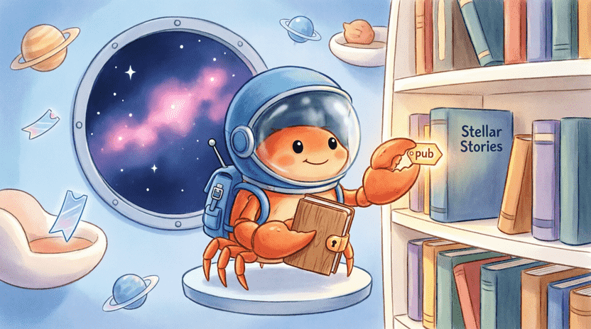
۷.۵. پروژه: بازسازی بازی حدس عدد با ماژولها
حالا وقتش است بازی حدس عدد (فصل ۲) را با استفاده از ماژولها بازنویسی کنیم تا ببینیم چقدر تمیز و حرفهای میشود!
۷.۵.۱. ساختار پروژه
اول فایلها را در پوشهی src اینطوری میچینیم:
src/
├── main.rs
├── input.rs // مسئول گرفتن ورودی از کاربر
├── random.rs // مسئول ساخت عدد تصادفی
└── game_logic.rs // مسئول مقایسه و منطق بازی
(یادت نرود در Cargo.toml وابستگی rand را اضافه کنی!)
۷.۵.۲. ماژول input (src/input.rs)
این فایل فقط کارش این است که یک عدد تمیز از کاربر بگیرد. اگر کاربر اشتباه تایپ کرد، دوباره میپرسد.
#![allow(unused)]
fn main() {
use std::io;
pub fn read_number() -> u32 {
loop {
println!("لطفاً یک عدد حدس بزن:");
let mut input = String::new();
io::stdin().read_line(&mut input).expect("خطا");
match input.trim().parse() {
Ok(num) => return num,
Err(_) => println!("فقط عدد وارد کن!"),
}
}
}
}۷.۵.۳. ماژول random (src/random.rs)
عدد مخفی را اینجا میسازیم.
#![allow(unused)]
fn main() {
use rand::Rng;
pub fn generate_secret() -> u32 {
rand::thread_rng().gen_range(1..=100)
}
}۷.۵.۴. ماژول game_logic (src/game_logic.rs)
اینجا مقایسه میکنیم. یک enum هم میسازیم که وضعیت بازی را نگه دارد.
#![allow(unused)]
fn main() {
pub enum GuessResult {
TooLow,
TooHigh,
Correct,
}
pub fn check_guess(guess: u32, secret: u32) -> GuessResult {
if guess < secret { GuessResult::TooLow }
else if guess > secret { GuessResult::TooHigh }
else { GuessResult::Correct }
}
pub fn get_message(result: &GuessResult) -> &'static str {
match result {
GuessResult::TooLow => "⬆️ برو بالا!",
GuessResult::TooHigh => "⬇️ بیا پایین!",
GuessResult::Correct => "🏆 بردی!",
}
}
}۷.۵.۵. فایل main.rs
حالا نگاه کن main.rs چقدر خلوت و خوانا شده است!
mod input;
mod random;
mod game_logic;
use game_logic::GuessResult;
fn main() {
println!("🎲 به بازی حدس عدد خوش آمدید! 🎲");
let secret = random::generate_secret();
let mut count = 0;
loop {
let guess = input::read_number();
count += 1;
let result = game_logic::check_guess(guess, secret);
println!("{}", game_logic::get_message(&result));
if let GuessResult::Correct = result {
println!("✨ تو در {} تا حدس بردی! ✨", count);
break;
}
}
}دیگر لازم نیست ۱۰۰ خط کد را در یک فایل بخوانی! هر بخش دارد کار خودش را میکند. 😎
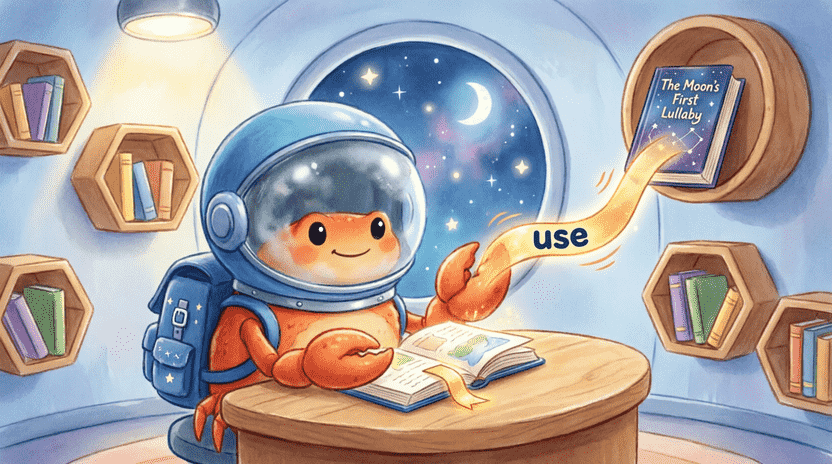
۷.۶. جمعبندی و چالش
۷.۶.۱. مرور مفاهیم
در این فصل یاد گرفتی:
✅ ماژولها (mod): کد را به بخشهای کوچک و مرتب تقسیم میکنند.
✅ pub: برای عمومی کردن توابع و متغیرها (در غیر این صورت خصوصی هستند).
✅ فایلها: ماژولها میتوانند در فایلهای .rs جداگانه باشند.
✅ use: برای کوتاه کردن مسیر دسترسی به آیتمها.
✅ as: برای تغییر نام یک تابع یا نوع هنگام use کردن.
🧠 گاهی بعضی چیزها سخت است، و این اشکالی ندارد!
استفاده از ماژولها و فایلهای جداگانه ممکن است در ابتدا کار اضافی به نظر برسد، اما به محض اینکه پروژهات رشد کند، میبینی که چقدر این روش به تو کمک میکند تا کدهای خود را سازماندهی کنی. مثل این است که اتاقت را مرتب کنی – اولش سخت است، اما بعداً خیلی راحتتر میتوانی وسایلت را پیدا کنی.
۷.۶.۲. چالش: crate shapes
یک پروژهی جدید به اسم shapes بساز.
دو تا ماژول circle و rectangle در فایلهای جدا بساز.
هر کدام باید دو تابع داشته باشند: area (مساحت) و perimeter (محیط).
- دایره: شعاع
r. (فرمول مساحت: π × r²) - مستطیل: طول
aو عرضb.
در main.rs این توابع را صدا بزن و نتیجه را برای یک دایره با شعاع ۵ و مستطیل ۴×۷ چاپ کن.
💡 پاسخ نمونه (circle.rs):
#![allow(unused)]
fn main() {
pub fn area(radius: f64) -> f64 {
std::f64::consts::PI * radius * radius
}
pub fn perimeter(radius: f64) -> f64 {
2.0 * std::f64::consts::PI * radius
}
}حالا تو یک برنامهنویس واقعی شدهای که میداند چطور پروژههای بزرگ را مدیریت کند! 🏗️
در فصل بعد با Collections (وکتورها و هشمپها) آشنا میشویم؛ جعبههای جادویی که میتوانند بزرگ و کوچک شوند و کلی داده را در خودشان نگه دارند. 📦✨
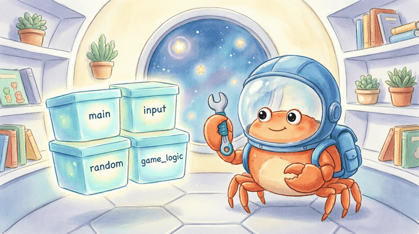
سرزمین راست: ماجراهای فریس خرچنگ فضایی
فصل ۸: جعبههای جادویی که بزرگ و کوچک میشوند (Collections)
📑 فهرست فصل
۸.۱. لیست خرید مامان (Vector)
۸.۱.۱. داستان: لیست خرید فریس
۸.۱.۲. معرفی Vec
۸.۱.۳. ساختن وکتور
۸.۱.۴. اضافه کردن عنصر با push
۸.۱.۵. حذف آخرین عنصر با pop
۸.۱.۶. دسترسی به عناصر (اندیس و get)
۸.۱.۷. حلقه زدن روی وکتور
۸.۱.۸. تمرین: جمع و میانگین
۸.۲. دفترچه تلفن مخفی (HashMap)
۸.۲.۱. داستان: دفترچه تلفن فریس
۸.۲.۲. معرفی HashMap<K, V>
۸.۲.۳. ساختن HashMap
۸.۲.۴. درج و بهروزرسانی (insert)
۸.۲.۵. دریافت مقدار (get)
۸.۲.۶. بررسی وجود کلید (contains_key)
۸.۲.۷. حذف با remove
۸.۲.۸. بهروزرسانی شرطی با entry و or_insert
۸.۲.۹. حلقه زدن روی HashMap
۸.۲.۱۰. تمرین: شمارش کلمات
۸.۳. داستانک: گردآوری آیتمهای یک بازی نقشآفرینی
۸.۳.۱. تعریف struct Item
۸.۳.۲. کیسهی آیتمها (Vec)
۸.۳.۳. نقشهی گنج (HashMap)
۸.۳.۴. توابع کمکی
۸.۳.۵. داستان تعاملی
۸.۴. عملکرد و انتخاب درست
۸.۴.۱. چه زمانی از وکتور استفاده کنیم؟
۸.۴.۲. چه زمانی از هشمپ استفاده کنیم؟
۸.۴.۳. معرفی HashSet (بدون مقدار)
۸.۴.۴. تمرین: اشتراک دو لیست
۸.۵. پروژه: دفترچه تلفن تعاملی
۸.۵.۱. منوی اصلی
۸.۵.۲. اضافه کردن مخاطب
۸.۵.۳. جستجوی مخاطب
۸.۵.۴. حذف مخاطب
۸.۵.۵. نمایش همه
۸.۶. جمعبندی و چالش
۸.۶.۱. مرور مفاهیم
۸.۶.۲. چالش: سیستم نمرات دانشآموزان
۸.۱. لیست خرید مامان (Vector)
۸.۱.۱. داستان: لیست خرید فریس
مامان فریس قبل از رفتن به فروشگاه، همیشه یک تکه کاغذ برمیدارد و چیزهایی که لازم دارند را مینویسد: «شیر، نان، تخممرغ، سیب». 🛒 وقتی در فروشگاه میچرخند، ممکن است یکهو یادش بیاید: «آها! پنیر هم لازم داریم!» و سریع آن را به ته لیست اضافه میکند. وقتی هم چیزی را برمیدارد، خط میزندش.
در برنامهنویسی هم دقیقاً به همین لیستهای هوشمند نیاز داریم که بتوانند بزرگ و کوچک شوند. یادت میآید در فصل ۳ آرایه ([]) را یاد گرفتیم؟ آرایهها اندازهشان ثابت است و نمیشود بعداً چیزی بهشان اضافه کرد. اما وکتور (Vector) دقیقاً همان لیست خرید جادویی ماست!
مدیریت دادههای در حال تغییر یکی از مهارتهای اصلی هر برنامهنویس حرفهای است. این یعنی گامی دیگر به سوی جادوگر کامپیوتر شدن! 🧙♂️
👨👩👧 نکته برای والدین و مربیان
وکتورها و هشمپها از ساختارهای دادهی بنیادین در تمام زبانهای برنامهنویسی هستند. این فصل نشان میدهد چطور دادهها را ذخیره، دسترسی و بهروزرسانی کنیم – مهارتی که در نرمافزارهای واقعی مدام استفاده میشود. کتاب رسمی Rust فصل کاملی دربارهی مجموعهها دارد:
doc.rust-lang.org/book/ch08-00-common-collections.html
![[Illustration: A cute cartoon crab (Ferris) holding a magical floating shopping list that keeps growing and shrinking. Items like milk, bread, eggs, and cheese pop in and out with sparkles. Background: a cozy space-market aisle with glowing shelves. Style: vibrant children’s book illustration, playful, high quality, 16:9.]](assets/images/8.1.png)
۸.۱.۲. معرفی Vec<T>
Vec<T> یک جعبهی هوشمند است که میتواند تعداد زیادی از یک نوع (T) را پشت سر هم نگه دارد. آن T میتواند هر چیزی باشد: عدد، متن، یا حتی structهایی که خودمان ساختیم. بهترین ویژگی وکتور این است که اندازهاش ثابت نیست و هر وقت بخواهی میتوانی بهش اضافه کنی یا ازش کم کنی.
۸.۱.۳. ساختن وکتور
دو راه اصلی برای ساختن وکتور داریم:
#![allow(unused)]
fn main() {
// راه اول: ساختن یک وکتور خالی (باید نوعش را مشخص کنیم)
let mut shopping_list: Vec<String> = Vec::new();
// راه دوم: ساختن وکتور با مقدارهای اولیه (سریع و راحت با ماکروی vec!)
let mut shopping_list = vec![
"شیر".to_string(),
"نان".to_string()
];
}ماکروی vec! خیلی کار راهانداز است. فقط کافی است مقادیر را با کاما جدا کنی و بین [] بگذاری.
۸.۱.۴. اضافه کردن عنصر با push
برای اضافه کردن یک چیز جدید به ته وکتور، از متد push استفاده میکنیم:
#![allow(unused)]
fn main() {
shopping_list.push("تخممرغ".to_string());
shopping_list.push("سیب".to_string());
}حالا وکتور ما چهار عضو دارد: شیر، نان، تخممرغ، سیب. 🥚🍎
۸.۱.۵. حذف آخرین عنصر با pop
اگر پشیمان شویم و نخواهیم سیب را بخریم، میتوانیم با pop آخرین عضو را از وکتور دربیاوریم. یک نکتهی مهم: pop یک Option<T> برمیگرداند! یعنی اگر وکتور خالی نباشد، Some(آخرین_عضو) را میدهد، و اگر خالی باشد None. اینطوری برنامه هیچوقت کرش نمیکند.
#![allow(unused)]
fn main() {
let last_item = shopping_list.pop();
match last_item {
Some(item) => println!("آخرین چیزی که حذف شد: {}", item),
None => println!("لیست از قبل خالی بود!"),
}
}۸.۱.۶. دسترسی به عناصر (اندیس و get)
برای خواندن یک عضو خاص با شماره (اندیس که از صفر شروع میشود)، دو راه داریم:
🔹 راه سریع اما خطرناک []:
#![allow(unused)]
fn main() {
let second = &shopping_list[1]; // "نان"
// let bad = &shopping_list[10]; // ❌ اگر اندیس وجود نداشته باشد، برنامه میترکد!
}🔹 راه امن و پیشنهادی get: این روش یک Option<&T> برمیگرداند. اگر اندیس وجود داشته باشد Some میدهد، وگرنه None.
#![allow(unused)]
fn main() {
match shopping_list.get(1) {
Some(item) => println!("آیتم دوم: {}", item),
None => println!("این اندیس وجود ندارد!"),
}
}💡 نکتهی ایمنی: همیشه تا جایی که میشود از get استفاده کن، مخصوصاً وقتی مطمئن نیستی اندیس حتماً وجود دارد.
۸.۱.۷. حلقه زدن روی وکتور
برای دیدن تکتک اعضای وکتور، از حلقهی for استفاده میکنیم:
#![allow(unused)]
fn main() {
// فقط خواندن (مرجع غیرقابل تغییر)
for item in &shopping_list {
println!("- {}", item);
}
// اگر بخواهی اعضای وکتور را تغییر دهی، باید از &mut استفاده کنی
for item in &mut shopping_list {
item.push_str("!"); // به ته همهی آیتمها یک علامت تعجب اضافه میکند
}
}۸.۱.۸. تمرین: جمع و میانگین
یک وکتور از اعداد صحیح (i32) بساز و مجموع و میانگینشان را حساب کن.
💡 پاسخ:
fn main() {
let numbers = vec![10, 20, 30, 40, 50];
// روش حرفهای و سریع
let sum: i32 = numbers.iter().sum();
let count = numbers.len();
let average = sum as f64 / count as f64;
println!("مجموع: {}", sum);
println!("میانگین: {:.2}", average); // دو رقم اعشار
}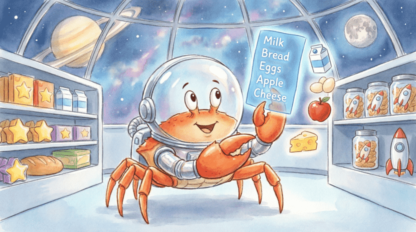
۸.۲. دفترچه تلفن مخفی (HashMap)
۸.۲.۱. داستان: دفترچه تلفن فریس
فریس در کهکشان دوستان زیادی دارد: بیلی، لونا، استلا… 🌌 او یک دفترچهی جادویی دارد که هر وقت اسم یک دوست را باز کند، شمارهی تلفن فضاییاش ظاهر میشود. در این دفترچه، هر اسم به یک شماره وصل است. در برنامهنویسی به این ساختار میگوییم نگاشت (Map). در Rust اسمش HashMap است.
![[Illustration: A cartoon crab holding a glowing magical address book. When a page labeled “Luna” opens, a holographic phone number floats out. The background shows a starry galaxy with tiny planets. Style: whimsical, educational children’s book illustration, bright colors, 16:9.]](assets/images/8.3.png)
۸.۲.۲. معرفی HashMap<K, V>
HashMap<K, V> یک جعبهی هوشمند است که یک کلید (Key) از نوع K را به یک مقدار (Value) از نوع V وصل میکند. مزیتش این است که پیدا کردن مقدار با داشتن کلید، خیلی سریع است (حتی اگر میلیونها اسم داشته باشیم).
قبل از استفاده باید آن را از کتابخانهی استاندارد وارد کنیم:
#![allow(unused)]
fn main() {
use std::collections::HashMap;
}۸.۲.۳. ساختن HashMap
#![allow(unused)]
fn main() {
let mut phone_book = HashMap::new();
}میتوانیم یک هشمپ را با مقدارهای اولیه هم بسازیم (با استفاده از vec و collect):
#![allow(unused)]
fn main() {
let data = vec![("فریس", "۱۲۳۴۵"), ("بیل", "۶۷۸۹۰")];
let phone_book: HashMap<_, _> = data.into_iter().collect();
}۸.۲.۴. درج و بهروزرسانی (insert)
با متد insert یک جفت کلید-مقدار اضافه میکنیم. اگر کلید از قبل وجود داشته باشد، مقدار قبلی با مقدار جدید جایگزین میشود:
#![allow(unused)]
fn main() {
phone_book.insert(String::from("فریس"), String::from("۱۲۳۴۵۶"));
phone_book.insert(String::from("بیل"), String::from("۷۸۹۱۰۱"));
}۸.۲.۵. دریافت مقدار (get)
برای گرفتن شمارهی یک شخص، از get استفاده میکنیم که یک Option<&V> برمیگرداند (چون ممکن است آن شخص در دفترچه نباشد):
#![allow(unused)]
fn main() {
let name = "فریس";
match phone_book.get(name) {
Some(number) => println!("شماره {}: {}", name, number),
None => println!("{} در دفترچه نیست!", name),
}
}۸.۲.۶. بررسی وجود کلید (contains_key)
اگر فقط میخواهی بدانی کلیدی وجود دارد یا نه، نیازی به خواندن مقدارش نیست:
#![allow(unused)]
fn main() {
if phone_book.contains_key("فریس") {
println!("فریس در دفترچه هست. ✅");
}
}۸.۲.۷. حذف با remove
با remove یک کلید و مقدارش را پاک میکنیم. خروجیاش Option<V> است (یعنی اگر پاک شد، مقدار پاکشده را برمیگرداند):
#![allow(unused)]
fn main() {
let removed = phone_book.remove("بیل");
if removed.is_some() {
println!("بیل از دفترچه حذف شد. 🗑️");
}
}۸.۲.۸. بهروزرسانی شرطی با entry و or_insert
گاهی میخواهیم بگوییم: «اگر کلید وجود نداشت، یک مقدار پیشفرض بگذار، اگر بود، همان را نگه دار». برای این کار از entry و or_insert استفاده میکنیم که خیلی برای شمارش کاربرد دارد:
#![allow(unused)]
fn main() {
// اگر "استلا" نبود، "۰۰۰۰" را وارد کن و یک کلید موقت به آن بده
let count = phone_book.entry("استلا").or_insert(String::from("۰۰۰۰"));
// حالا count یک &mut String است که میتوانی تغییرش دهی
}۸.۲.۹. حلقه زدن روی HashMap
#![allow(unused)]
fn main() {
for (key, value) in &phone_book {
println!("{} -> {}", key, value);
}
}📌 نکته: ترتیب چاپ شدن در HashMap تضمین شده نیست! مثل یک کیسهی جادویی است که هر بار دست میکنی، ممکن است یک چیز دیگر بیاید بیرون. ولی نگران نباش، پیدا کردنشان همیشه سریع است.
۸.۲.۱۰. تمرین: شمارش کلمات
برنامهای بنویس که یک جمله را از کاربر بگیرد و تعداد تکرار هر کلمه را در یک HashMap بشمارد.
💡 پاسخ:
use std::collections::HashMap;
use std::io;
fn main() {
println!("یک جمله بنویس:");
let mut text = String::new();
io::stdin().read_line(&mut text).expect("خطا");
let mut counts = HashMap::new();
// جمله را بر اساس فاصله تکهتکه میکنیم
for word in text.split_whitespace() {
let count = counts.entry(word).or_insert(0);
*count += 1; // علامت * یعنی محتوای مرجع را تغییر بده (چون count یک &mut i32 است)
}
println!("\nتعداد تکرار کلمات:");
for (word, count) in &counts {
println!("{}: {}", word, count);
}
}![[Illustration: A cartoon address book with pages that have key-value pairs (Ferris→12345, Bill→67890, Luna→99999). A magical magnifying glass highlights the “Luna” page, and a holographic number pops out. Style: educational, whimsical, bright colors, 16:9.]](assets/images/8.4.png)
۸.۳. داستانک: گردآوری آیتمهای یک بازی نقشآفرینی
بیا با هم یک ماجراجویی کوچک بسازیم! فریس در یک سیارهی ناشناخته میگردد و آیتم جمع میکند. 🗺️💎
۸.۳.۱. تعریف struct Item
#![allow(unused)]
fn main() {
#[derive(Debug)] // این خط اجازه میدهد آیتمها را راحت چاپ کنیم
struct Item {
name: String,
value: u32, // ارزش آیتم به سکه
}
}۸.۳.۲. کیسهی آیتمها (Vec<Item>)
#![allow(unused)]
fn main() {
let mut inventory: Vec<Item> = Vec::new();
inventory.push(Item { name: String::from("شمشیر چوبی"), value: 10 });
inventory.push(Item { name: String::from("معجون سلامتی"), value: 25 });
}۸.۳.۳. نقشهی گنج (HashMap<String, u32>)
یک نقشه از مکانهای مختلف و مقدار گنجی که در آنها پنهان شده:
#![allow(unused)]
fn main() {
let mut treasure_map = HashMap::new();
treasure_map.insert(String::from("غار تاریک"), 500);
treasure_map.insert(String::from("جنگل مهآلود"), 200);
treasure_map.insert(String::from("قله برفی"), 1000);
}۸.۳.۴. توابع کمکی
#![allow(unused)]
fn main() {
fn add_item(inventory: &mut Vec<Item>, item: Item) {
println!("✅ آیتم '{}' به کیسه اضافه شد.", item.name);
inventory.push(item);
}
fn show_inventory(inventory: &Vec<Item>) {
if inventory.is_empty() {
println!("کیسه خالی است! 😢");
} else {
println!("🎒 کیسه تو:");
for item in inventory {
println!(" - {} (ارزش: {} سکه)", item.name, item.value);
}
}
}
fn search_treasure(map: &HashMap<String, u32>, place: &str) -> Option<u32> {
map.get(place).copied() // .copied() مقدار &u32 را به u32 تبدیل میکند (کپی میکند)
}
}۸.۳.۵. داستان تعاملی
fn main() {
let mut inventory = Vec::new();
let mut treasure_map = HashMap::new();
treasure_map.insert(String::from("غار"), 500);
treasure_map.insert(String::from("جنگل"), 200);
add_item(&mut inventory, Item { name: String::from("کلید زنگزده"), value: 5 });
add_item(&mut inventory, Item { name: String::from("نقشه قدیمی"), value: 50 });
show_inventory(&inventory);
let place = "غار";
match search_treasure(&treasure_map, place) {
Some(gold) => println!("🎉 هورا! در {} {} سکه پیدا کردی!", place, gold),
None => println!("❌ در {} گنجی پیدا نکردی.", place),
}
}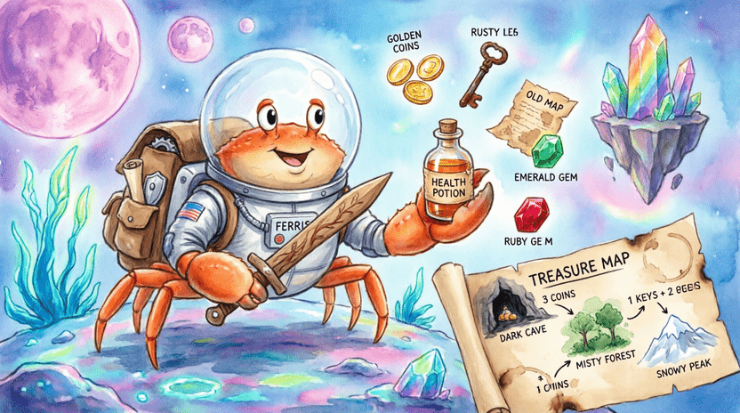
۸.۴. عملکرد و انتخاب درست
۸.۴.۱. چه زمانی از وکتور استفاده کنیم؟
✅ وقتی ترتیب اعضا مهم است (مثلاً لیست نوبت یا صف).
✅ وقتی میخواهیم با اندیس (شماره) به اعضا دسترسی داشته باشیم.
✅ وقتی بیشتر کارمان اضافه کردن به انتها یا حذف از انتها است.
۸.۴.۲. چه زمانی از هشمپ استفاده کنیم؟
✅ وقتی میخواهیم با یک کلید (مثل اسم یا کد) چیزی را سریع پیدا کنیم.
✅ وقتی ترتیب اعضا برایمان مهم نیست.
✅ وقتی هر کلید فقط یک مقدار دارد (مثلاً شماره تلفن یک شخص).
۸.۴.۳. معرفی HashSet (بدون مقدار)
گاهی فقط میخواهیم یک مجموعه از چیزهای یکتا داشته باشیم (مثل اسم کسانی که در مهمانی هستند). HashSet<T> دقیقاً مثل HashMap است، فقط بدون مقدار! خودش حواسش است که چیز تکراری اضافه نشود.
#![allow(unused)]
fn main() {
use std::collections::HashSet;
let mut names = HashSet::new();
names.insert("فریس");
names.insert("بیل");
names.insert("فریس"); // تکراری است، اضافه نمیشود!
println!("تعداد افراد: {}", names.len()); // ۲
}۸.۴.۴. تمرین: اشتراک دو لیست
دو وکتور از اعداد داری: [1, 2, 3, 4, 5] و [4, 5, 6, 7, 8]. اعداد مشترک را با کمک HashSet پیدا کن.
💡 پاسخ:
use std::collections::HashSet;
fn main() {
let a = vec![1, 2, 3, 4, 5];
let b = vec![4, 5, 6, 7, 8];
let set_a: HashSet<_> = a.into_iter().collect();
let set_b: HashSet<_> = b.into_iter().collect();
let common: Vec<_> = set_a.intersection(&set_b).collect();
println!("اعداد مشترک: {:?}", common); // [4, 5]
}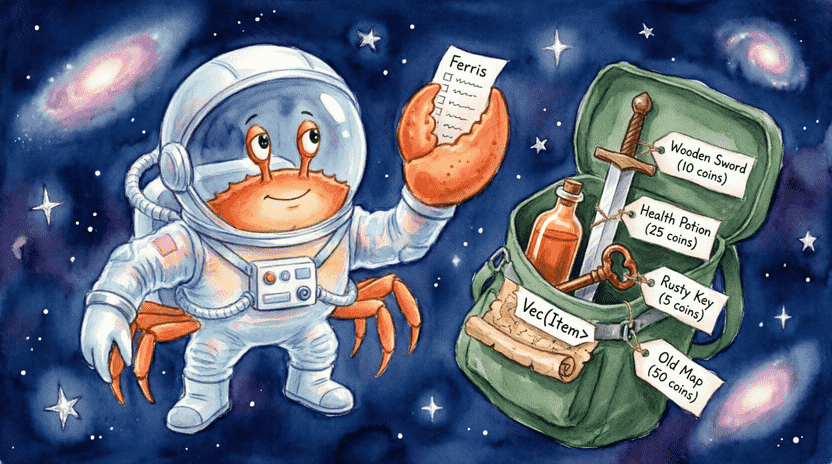
۸.۵. پروژه: دفترچه تلفن تعاملی
بیا همهی چیزهایی که یاد گرفتیم را در یک پروژهی کامل به کار ببریم: یک دفترچه تلفن که در ترمینال کار میکند. 📞
۸.۵.۱. منوی اصلی
use std::collections::HashMap;
use std::io;
fn main() {
let mut phone_book: HashMap<String, String> = HashMap::new();
loop {
println!("\n📞 دفترچه تلفن فریس 📞");
println!("1. اضافه کردن مخاطب جدید");
println!("2. جستجوی شماره");
println!("3. حذف مخاطب");
println!("4. نمایش همه مخاطبین");
println!("5. خروج");
let mut choice = String::new();
io::stdin().read_line(&mut choice).unwrap();
match choice.trim() {
"1" => add_contact(&mut phone_book),
"2" => search_contact(&phone_book),
"3" => delete_contact(&mut phone_book),
"4" => show_all(&phone_book),
"5" => {
println!("خداحافظ! 👋");
break;
}
_ => println!("عدد اشتباه! دوباره انتخاب کن."),
}
}
}۸.۵.۲. اضافه کردن مخاطب
#![allow(unused)]
fn main() {
fn add_contact(book: &mut HashMap<String, String>) {
println!("اسم مخاطب را وارد کن:");
let mut name = String::new();
io::stdin().read_line(&mut name).unwrap();
let name = name.trim().to_string();
println!("شماره تلفن را وارد کن:");
let mut number = String::new();
io::stdin().read_line(&mut number).unwrap();
let number = number.trim().to_string();
book.insert(name, number);
println!("✅ مخاطب اضافه شد.");
}
}۸.۵.۳. جستجوی مخاطب
#![allow(unused)]
fn main() {
fn search_contact(book: &HashMap<String, String>) {
println!("اسم مورد نظر برای جستجو:");
let mut name = String::new();
io::stdin().read_line(&mut name).unwrap();
let name = name.trim();
match book.get(name) {
Some(number) => println!("📞 {}: {}", name, number),
None => println!("❌ {} در دفترچه نیست.", name),
}
}
}۸.۵.۴. حذف مخاطب
#![allow(unused)]
fn main() {
fn delete_contact(book: &mut HashMap<String, String>) {
println!("اسم مخاطبی که میخواهی حذف کنی:");
let mut name = String::new();
io::stdin().read_line(&mut name).unwrap();
let name = name.trim();
if book.remove(name).is_some() {
println!("✅ {} حذف شد.", name);
} else {
println!("❌ {} وجود ندارد.", name);
}
}
}۸.۵.۵. نمایش همه
#![allow(unused)]
fn main() {
fn show_all(book: &HashMap<String, String>) {
if book.is_empty() {
println!("📭 دفترچه خالی است.");
} else {
println!("📋 لیست مخاطبین:");
for (name, number) in book {
println!(" {} : {}", name, number);
}
}
}
}![[Illustration: A cartoon smartphone screen showing Ferris’s Phonebook app interface. The screen displays menu options (Add, Search, Delete, Show All) and a sample contact list. Ferris sits next to the phone holding a pen and notebook. Style: clean, educational, bright UI metaphor, 16:9.]](assets/images/8.7.png)
۸.۶. جمعبندی و چالش
۸.۶.۱. مرور مفاهیم
در این فصل یاد گرفتی:
✅ Vec<T>: لیست قابل تغییر اندازه. (push, pop, get, [], حلقهی for)
✅ HashMap<K, V>: نگاشت کلید به مقدار. (insert, get, entry().or_insert(), remove)
✅ HashSet<T>: مجموعهی بدون عضو تکراری.
✅ تفاوت دسترسی امن (get) و دسترسی سریع ([]).
✅ مدیریت دادههای پویا یعنی قدرت مدل کردن دنیای واقعی در کامپیوتر – یک جادوگر واقعی چنین میکند. 🧙
🧠 گاهی بعضی چیزها سخت است، و این اشکالی ندارد!
انتخاب بین وکتور و هشمپ ممکن است در ابتدا مانند یک پازل به نظر برسد. حتی توسعهدهندگان حرفهای گاهی برای تصمیمگیری به مستندات نگاه میکنند. با تمرین، این انتخاب برایت طبیعی میشود. فقط به یاد داشته باش: اگر به ترتیب نیاز داری → وکتور؛ اگر به کلید نیاز داری → هشمپ.
۸.۶.۲. چالش: سیستم نمرات دانشآموزان
یک برنامه بنویس که از کاربر اسم دانشآموز و نمرهاش را بگیرد. میتواند چند نمره برای یک دانشآموز وارد کند. در انتها، برای هر دانشآموز میانگین نمراتش را چاپ کند.
💡 راهنمایی: از HashMap<String, Vec<f64>> استفاده کن. وقتی اسم جدید وارد میشود، با entry و or_insert_with(Vec::new) یک وکتور خالی برایش بساز و نمره را push کن.
💡 پاسخ نمونه:
use std::collections::HashMap;
use std::io;
fn main() {
let mut grades: HashMap<String, Vec<f64>> = HashMap::new();
loop {
println!("اسم دانشآموز (یا 'خروج' برای پایان):");
let mut name = String::new();
io::stdin().read_line(&mut name).unwrap();
let name = name.trim().to_string();
if name == "خروج" { break; }
println!("نمره:");
let mut grade_str = String::new();
io::stdin().read_line(&mut grade_str).unwrap();
let grade: f64 = grade_str.trim().parse().expect("عدد وارد کن");
grades.entry(name).or_insert_with(Vec::new).push(grade);
}
println!("\n📊 --- میانگین نمرات ---");
for (name, scores) in &grades {
let sum: f64 = scores.iter().sum();
let avg = sum / scores.len() as f64;
println!("{}: {:.2}", name, avg);
}
}حالا تو میدانی چطور از وکتورها و هشمپها برای ذخیرهی اطلاعات متغیر استفاده کنی. 🎒📦
در فصل بعد، با مدیریت خطا آشنا میشویم و یاد میگیریم چطور از ترکیدن برنامه جلوگیری کنیم و خطاها را مثل یک قهرمان مدیریت کنیم! 🛡️🦀
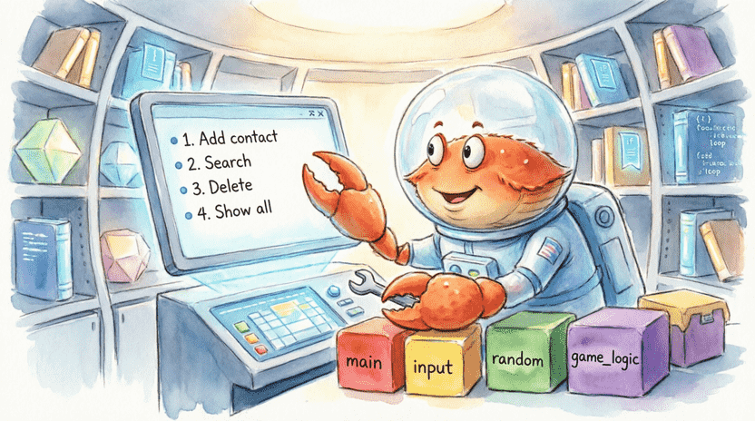
سرزمین راست: ماجراهای فریس خرچنگ فضایی
فصل ۹: وقتی سفینه خراب میشود! (مدیریت خطا)
📑 فهرست فصل
۹.۱. دکمهی قرمز را نزن! (panic!)
۹.۱.۱. داستان: دکمه خودتخریب سفینه
۹.۱.۲. panic! در عمل
۹.۱.۳. چه زمانی panic رخ میدهد؟
۹.۱.۴. دیدن مسیر خطا با RUST_BACKTRACE
۹.۱.۵. تمرین: panic عمدی
۹.۲. چراغ هشدار (Result)
۹.۲.۱. داستان: چراغهای هشدار سفینه
۹.۲.۲. معرفی Result<T, E>
۹.۲.۳. مثال: باز کردن فایل
۹.۲.۴. روشهای برخورد با Result
۹.۲.۵. تمرین: تبدیل رشته به عدد با Result
۹.۳. روش فریس برای نجات (?) اپراتور
۹.۳.۱. داستان: اپراتور جادویی نجات
۹.۳.۲. استفاده از ? در توابعی که Result برمیگردانند
۹.۳.۳. زنجیره کردن ?
۹.۳.۴. ? با Option
۹.۳.۵. تبدیل خطاها با map_err
۹.۳.۶. تمرین: خواندن دو عدد از فایل و تقسیم
۹.۴. پروژه: ماشین حساب مقاوم به خطا
۹.۴.۱. دریافت عبارت از کاربر
۹.۴.۲. تابع parse_expression
۹.۴.۳. تابع calculate
۹.۴.۴. حلقه اصلی با مدیریت خطا
۹.۵. جمعبندی و چالش
۹.۵.۱. مرور مفاهیم
۹.۵.۲. چالش: ماشین حساب با چهار عمل
۹.۱. دکمهی قرمز را نزن! (panic!)
۹.۱.۱. داستان: دکمه خودتخریب سفینه
در اتاق فرمان سفینهی فریس، یک دکمهی قرمز بزرگ و براق وجود دارد که زیرش نوشته: ⛔ فشار ندهید! خودتخریب فوری. فریس میداند اگر کسی این دکمه را بزند، سفینه در یک چشم به هم زدن نابود میشود و هیچ راه برگشتی نیست.
در دنیای Rust هم دقیقاً همین دکمه را داریم: panic!. وقتی panic! اجرا شود، برنامه فوراً متوقف میشود، یک پیام خطا چاپ میکند و از کار میافتد. درست مثل انفجار سفینه! 💥
یادگیری تشخیص خطاهای جبرانناپذیر از خطاهای قابل مدیریت، یکی از مهارتهای اساسی یک جادوگر کامپیوتر است. 🧙♂️
۹.۱.۲. panic! در عمل
بیا خودمان یک panic! عمدی ایجاد کنیم:
fn main() {
panic!("سفینه خراب شد! همه جا آتش گرفته است! 🔥");
}اگر این کد را اجرا کنی، خروجی شبیه این میشود:
thread 'main' panicked at 'سفینه خراب شد! همه جا آتش گرفته است! 🔥', src/main.rs:2:5
note: run with `RUST_BACKTRACE=1` environment variable to display a backtrace
برنامه کلاً میایستد و دستورات بعدش اصلاً اجرا نمیشوند.
۹.۱.۳. چه زمانی panic رخ میدهد؟
علاوه بر اینکه خودمان panic! صدا بزنیم، بعضی کارهای خطرناک هم باعثش میشوند:
🔹 دسترسی به اندیس ناموجود در وکتور: vec![1,2,3][99]
🔹 استفاده از unwrap() روی None یا Err
🔹 تقسیم بر صفر در حالت debug
مثال:
#![allow(unused)]
fn main() {
let v = vec![10, 20, 30];
println!("{}", v[10]); // panic: index out of bounds
}۹.۱.۴. دیدن مسیر خطا با RUST_BACKTRACE
وقتی panic میکند، Rust میتواند مسیر کامل اتفاقی که افتاده را نشان بدهد (مثل ردپای یک کارآگاه!). برای این کار، برنامه را با این متغیر محیطی اجرا کن:
RUST_BACKTRACE=1 cargo run
با این کار لیستی از توابعی که پشت سر هم صدا زده شدهاند میبینی و میفهمی مشکل دقیقاً از کجا شروع شده است. 🔍
۹.۱.۵. تمرین: panic عمدی
برنامهای بنویس که یک وکتور ۵ عنصری از اعداد داشته باشد و از کاربر یک اندیس بخواهد. سپس آن عنصر را چاپ کند. اگر کاربر اندیسی خارج از محدوده وارد کرد، برنامه panic کند. (سعی کن با RUST_BACKTRACE=1 اجرا کنی و خروجی را ببینی.)
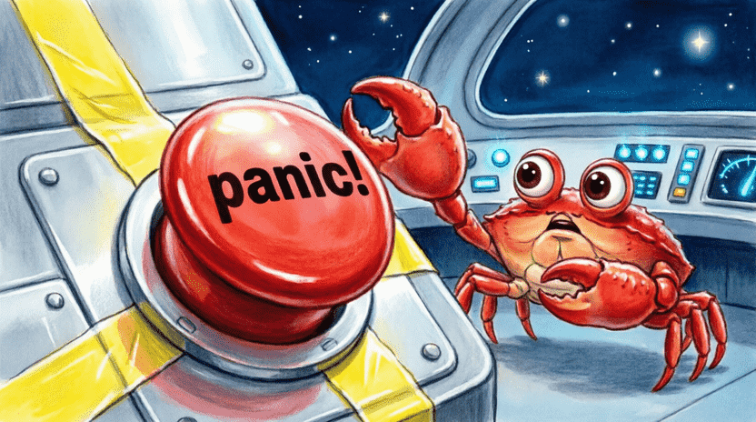
👨👩👧 نکته برای والدین و مربیان
این فصل دو نوع خطا را معرفی میکند: جبرانناپذیر (panic!) و قابل جبران (Result). درک این تفاوت یک مهارت مهندسی کلیدی است. کتاب رسمی Rust فصل کاملی دربارهی مدیریت خطا دارد:
doc.rust-lang.org/book/ch09-00-error-handling.html
۹.۲. چراغ هشدار (Result)
۹.۲.۱. داستان: چراغهای هشدار سفینه
در سفینهی فریس، یک سری چراغ هشدار زرد و نارنجی هم هست. مثلاً اگر موتور بیش از حد داغ شود، چراغ زرد روشن میشود و یک پیام میآید: ⚠️ موتور داغ کرده، ۳۰ ثانیه صبر کن. این یک خطای قابل پیشبینی و قابل مدیریت است. فریس میتواند صبر کند تا موتور خنک شود و بعد حرکت کند.
در Rust برای این نوع خطاها از Result استفاده میکنیم. این یعنی: «یا همهچیز خوب پیش رفته، یا یک مشکلی پیش آمده که میشود مدیریتش کرد.» 🟡
۹.۲.۲. معرفی Result<T, E>
Result یک enum بسیار پرکاربرد در Rust است:
#![allow(unused)]
fn main() {
enum Result<T, E> {
Ok(T), // همهچیز خوب است و مقدار T برگردانده شده
Err(E), // یک خطا از نوع E رخ داده
}
}🔹 T: نوع موفقیت (چیزی که اگر کار درست پیش برود برمیگردد).
🔹 E: نوع خطا (چیزی که اگر مشکلی پیش بیاید برمیگردد).
۹.۲.۳. مثال: باز کردن فایل
تابع File::open سعی میکند یک فایل را باز کند. ممکن است فایل وجود نداشته باشد یا دسترسی نداشته باشیم. پس یک Result<File, std::io::Error> برمیگرداند:
use std::fs::File;
fn main() {
let file_result = File::open("hello.txt");
// file_result میتواند Ok(File) باشد یا Err(Error)
}۹.۲.۴. روشهای برخورد با Result
🔸 روش سریع ولی خطرناک: unwrap() و expect()
اگر بگویی unwrap()، یعنی «اگر خطا بود، برنامه بترکد!». اگر expect(msg) بزنی، همان کار را میکند ولی با پیام دلخواه خودت.
#![allow(unused)]
fn main() {
let file = File::open("hello.txt").expect("نتوانستم فایل را باز کنم! 📁");
}⚠️ هشدار: فقط در کدهای آزمایشی یا وقتی ۱۰۰٪ مطمئنی خطایی رخ نمیدهد از آنها استفاده کن!
🔸 روش اصولی: match
میتوانی هر دو حالت را بررسی کنی:
#![allow(unused)]
fn main() {
use std::fs::File;
use std::io::ErrorKind;
let file = match File::open("hello.txt") {
Ok(f) => f,
Err(error) => match error.kind() {
ErrorKind::NotFound => {
println!("فایل پیدا نشد. یک فایل جدید میسازم. 🛠️");
File::create("hello.txt").expect("خطا در ساخت")
}
_ => panic!("یک خطای پیشبینینشده رخ داد! 😱"),
},
};
}🔸 روش تمیزتر: unwrap_or_else
یک تابع بینام (closure) میگیرد و فقط اگر خطا رخ بده اجرایش میکند:
#![allow(unused)]
fn main() {
let file = File::open("hello.txt").unwrap_or_else(|error| {
panic!("خطا رخ داد: {:?}", error);
});
}۹.۲.۵. تمرین: تبدیل رشته به عدد با Result
تابعی به اسم parse_number بنویس که یک &str بگیرد و سعی کند آن را به i32 تبدیل کند. اگر موفق شد Ok(num) برگرداند، وگرنه Err(String) با پیام مناسب.
💡 پاسخ نمونه:
fn parse_number(s: &str) -> Result<i32, String> {
s.trim()
.parse()
.map_err(|_| format!("'{}' یک عدد معتبر نیست 🔢", s))
}
fn main() {
let inputs = ["42", "سلام", "-5", "3.14"];
for inp in inputs {
match parse_number(inp) {
Ok(n) => println!("{} -> عدد: {}", inp, n),
Err(e) => println!("{} -> خطا: {}", inp, e),
}
}
}![[Illustration: Cartoon dashboard with two glowing indicators. Left: a green “OK” light shining on a wrapped gift labeled “T”. Right: a yellow “Warning” light flashing over a toolbox labeled “E”. Ferris stands between them holding a checklist, looking thoughtful. Style: educational metaphor, clean vector, bright colors, 16:9.]](assets/images/9.2.png)
۹.۳. روش فریس برای نجات (?) اپراتور
۹.۳.۱. داستان: اپراتور جادویی نجات
فریس یک ابزار جادویی به شکل علامت سؤال (?) دارد. هر وقت یک چراغ هشدار روشن میشود (یعنی یک Result از نوع Err برمیگردد)، او میتواند این علامت را بگذارد و بگوید: «اگر خطایی رخ داد، فوراً از این تابع خارج شو و خطا را به تابع بالاتر منتقل کن.» این کار را خیلی ساده میکند و دیگر نیازی به نوشتن match طولانی نیست! ✨
۹.۳.۲. استفاده از ? در توابعی که Result برمیگردانند
فرض کن میخواهیم تابعی بنویسیم که نام کاربری را از یک فایل بخواند. با ? اینطور میشود:
#![allow(unused)]
fn main() {
use std::fs::File;
use std::io::{self, Read};
fn read_username() -> Result<String, io::Error> {
let mut file = File::open("username.txt")?;
let mut username = String::new();
file.read_to_string(&mut username)?;
Ok(username)
}
}اگر File::open خطا بدهد، ? بلافاصله همان خطا را برمیگرداند و ادامه اجرا نمیشود. اگر read_to_string هم خطا بدهد، همان اتفاق میافتد. اگر همهچیز خوب پیش رفت، Ok(username) برگردانده میشود.
💡 نکته: اپراتور
?فقط در توابعی میتواند استفاده شود که نوع خروجی آنResult(یاOption) باشد. اگر خروجی تابعResultنباشد، کامپایلر خطا میدهد.
۹.۳.۳. زنجیره کردن ?
میتوانی چند ? را پشت سر هم بگذاری تا کد کوتاهتر شود:
#![allow(unused)]
fn main() {
fn read_username_short() -> Result<String, io::Error> {
let mut s = String::new();
File::open("username.txt")?.read_to_string(&mut s)?;
Ok(s)
}
}۹.۳.۴. ? با Option
اپراتور ? روی Option هم کار میکند. اگر Option برابر None باشد، تابع زودتر None برمیگرداند:
#![allow(unused)]
fn main() {
fn first_char(s: &str) -> Option<char> {
s.chars().next()? // اگر s خالی باشد، None برمیگردد
}
}۹.۳.۵. تبدیل خطاها با map_err
گاهی نوع خطای تابع با نوع خطایی که باید برگردانیم فرق دارد. مثلاً میخواهیم همه خطاها را به String تبدیل کنیم تا راحتتر چاپ شوند. از map_err استفاده میکنیم:
#![allow(unused)]
fn main() {
use std::fs::File;
use std::io::Read;
fn read_number_from_file(filename: &str) -> Result<i32, String> {
let mut s = String::new();
File::open(filename)
.map_err(|e| format!("باز کردن {}: {}", filename, e))? // اگر خطا باشد، تبدیلش کن بعد برگردان
.read_to_string(&mut s)
.map_err(|e| format!("خواندن {}: {}", filename, e))?;
s.trim().parse()
.map_err(|_| format!("عدد معتبر در {} نیست", filename))
}
}map_err یعنی «اگر خطا بود، قبل از برگرداندنش، با یک تابع دیگر تبدیلش کن». تابع داخل map_err (همان |e| format!(...)) یک تابع بینام است که خطا را میگیرد و یک String برمیگرداند.
۹.۳.۶. تمرین: خواندن دو عدد از فایل و تقسیم
دو فایل a.txt و b.txt فرضی داریم که هر کدام یک عدد دارند. تابعی بنویس که این دو عدد را بخواند و حاصل تقسیم a / b را به صورت f64 برگرداند. اگر هر خطایی رخ داد (فایل نبود، عدد نبود، تقسیم بر صفر)، یک String مناسب برگردان.
💡 پاسخ نمونه:
#![allow(unused)]
fn main() {
use std::fs::File;
use std::io::Read;
fn read_number(filename: &str) -> Result<i32, String> {
let mut s = String::new();
File::open(filename)
.map_err(|e| format!("{}: {}", filename, e))?
.read_to_string(&mut s)
.map_err(|e| format!("{}: {}", filename, e))?;
s.trim().parse().map_err(|_| format!("{}: عدد معتبر نیست", filename))
}
fn divide_files() -> Result<f64, String> {
let a = read_number("a.txt")?;
let b = read_number("b.txt")?;
if b == 0 {
return Err(String::from("تقسیم بر صفر ممنوع! ⛔"));
}
Ok(a as f64 / b as f64)
}
}![[Illustration: A magical floating question mark tool (?) glowing with a soft blue light, acting like a shortcut tunnel. On one side, a long winding path labeled “match match match”. On the other side, a straight fast road through the “?” tunnel. Ferris happily zooms through the shortcut. Style: dynamic, educational cartoon, bright, 16:9.]](assets/images/9.3.png)
🧠 گاهی بعضی چیزها سخت است، و این اشکالی ندارد!
تصمیمگیری بینpanic!وResult– به خصوص زمانی که باید خطا را به بالا منتقل کنی – مهارتی است که حتی برنامهنویسان حرفهای هم سالها به آن مسلط میشوند. اگر هنوز در بعضی موارد احساس سردرگمی میکنی، نگران نباش. هر بار که ازResultو?استفاده کنی، برایت طبیعیتر میشود.
۹.۴. پروژه: ماشین حساب مقاوم به خطا
حالا وقتش است یک برنامهی واقعی بسازیم که هرگز کرش نکند! یک ماشین حساب ساده که چهار عمل اصلی را انجام بدهد و خطاها را مثل یک حرفهای مدیریت کند. 🧮
۹.۴.۱. دریافت عبارت از کاربر
کاربر عبارتی مثل 10 + 2 یا 8 / 0 وارد میکند. برنامه تا وقتی که کاربر quit ننوشته ادامه میدهد.
۹.۴.۲. تابع parse_expression
این تابع رشتهی ورودی را تکهتکه میکند و سه بخش عدد اول، عملگر، عدد دوم را برمیگرداند. اگر فرمت اشتباه باشد خطا میدهد.
#![allow(unused)]
fn main() {
fn parse_expression(expr: &str) -> Result<(f64, char, f64), String> {
let parts: Vec<&str> = expr.split_whitespace().collect();
if parts.len() != 3 {
return Err("فرمت باید 'عدد عملگر عدد' باشد (مثلاً 5 + 3) 📝".to_string());
}
let a = parts[0].parse::<f64>()
.map_err(|_| format!("'{}' عدد اول معتبری نیست 🔢", parts[0]))?;
let op = parts[1].chars().next()
.ok_or("عملگر باید یک کاراکتر باشد (مثلاً +) 🔣".to_string())?;
let b = parts[2].parse::<f64>()
.map_err(|_| format!("'{}' عدد دوم معتبری نیست 🔢", parts[2]))?;
Ok((a, op, b))
}
}۹.۴.۳. تابع calculate
#![allow(unused)]
fn main() {
fn calculate(a: f64, op: char, b: f64) -> Result<f64, String> {
match op {
'+' => Ok(a + b),
'-' => Ok(a - b),
'*' => Ok(a * b),
'/' => {
if b == 0.0 {
Err("تقسیم بر صفر ممکن نیست! ⛔".to_string())
} else {
Ok(a / b)
}
}
_ => Err(format!("عملگر '{}' پشتیبانی نمیشود. از + - * / استفاده کن. ⚠️", op)),
}
}
}۹.۴.۴. حلقه اصلی با مدیریت خطا
use std::io::{self, Write};
fn main() {
println!("🧮 ماشین حساب مقاوم فریس 🧮");
println!("مثال: 10 + 5");
println!("برای خروج 'quit' را بنویس.\n");
loop {
print!("> ");
io::stdout().flush().unwrap();
let mut input = String::new();
io::stdin().read_line(&mut input).unwrap();
let input = input.trim();
if input == "quit" { break; }
match parse_expression(input) {
Ok((a, op, b)) => match calculate(a, op, b) {
Ok(result) => println!("= {} ✅", result),
Err(e) => println!("❌ خطا: {}", e),
},
Err(e) => println!("❌ خطا در ورودی: {}", e),
}
}
println!("خدانگهدار! 🦀✨");
}![[Illustration: A cozy cartoon desk with a retro-style calculator that has a glowing screen. Around it float colorful math symbols (+, -, *, /) and a small shield icon labeled “Error Safe”. Ferris types on a keyboard with a confident smile. Style: warm, educational, children’s book illustration, 16:9.]](assets/images/9.4.png)
۹.۵. جمعبندی و چالش
۹.۵.۱. مرور مفاهیم
در این فصل یاد گرفتی:
✅ panic!: دکمهی قرمز خودتخریب. برای خطاهای غیرقابل جبران.
✅ Result<T, E>: برای خطاهای قابل پیشبینی و مدیریت.
✅ unwrap() / expect(): روش سریع ولی خطرناک (اگر خطا باشد برنامه میترکد).
✅ match: روش اصولی برای بررسی تکتک حالات.
✅ اپراتور ?: ابزار جادویی برای خروج زودهنگام و انتشار خطا (فقط در توابعی که Result برمیگردانند).
✅ map_err: تبدیل نوع خطا به زبان دلخواه ما.
✅ مدیریت هوشمندانه خطاها یعنی نوشتن برنامههایی که هیچوقت بیاجازه از کار نمیافتند – این نشانهی یک جادوگر کامپیوتر حرفهای است. 🧙
۹.۵.۲. چالش: ماشین حساب با چهار عمل
همان پروژهی بالا را کامل کن و یک قابلیت جدید به آن اضافه کن: اگر کاربر ورودی را به صورت 10+5 (بدون فاصله) وارد کرد هم بتوانی پردازش کنی.
💡 راهنمایی: میتوانی از split روی کاراکترهای +، -، *، / استفاده کنی یا یک حلقه بزنی و اولین عملگر را پیدا کنی، بعد رشته را از همانجا جدا کنی.
حالا تو میدانی چطور خطاها را مثل یک قهرمان مدیریت کنی و برنامههایی بنویسی که به جای ترکیدن، کاربر را راهنمایی میکنند. در فصل بعد، با Generics و Traits آشنا میشویم؛ ابزارهایی که به ما اجازه میدهند کدهای همهکاره و قابل استفادهی مجدد بنویسیم، درست مثل یک آچار فرانسهی فضایی! 🔧🌌
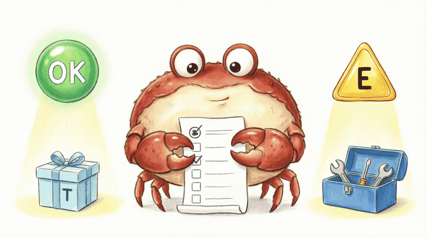
سرزمین راست: ماجراهای فریس خرچنگ فضایی
فصل ۱۰: کارخانهی اسباببازیسازی (Generics و Traits)
📑 فهرست فصل
۱۰.۱. قالب خمیر بازی (Generics)
۱۰.۱.۱. داستان: قالب ستاره و قلب
۱۰.۱.۲. مشکل: کد تکراری برای انواع مختلف
۱۰.۱.۳. معرفی Generics با T
۱۰.۱.۴. Generics در توابع
۱۰.۱.۵. Generics در structها
۱۰.۱.۶. چند نوع Generic
۱۰.۱.۷. Generics در متدها
۱۰.۱.۸. تمرین: struct Container
۱۰.۲. گواهینامهی اسباببازی (Traits)
۱۰.۲.۱. داستان: گواهی صدا داره و پرواز میکنه
۱۰.۲.۲. تعریف Trait
۱۰.۲.۳. پیادهسازی Trait برای یک نوع
۱۰.۲.۴. استفاده از Trait به عنوان پارامتر (Trait Bound)
۱۰.۲.۵. چندین Trait با +
۱۰.۲.۶. بازگشتی با impl Trait
۱۰.۲.۷. Traits پیشساخته (Debug, Clone, PartialEq)
۱۰.۲.۸. تمرین: Trait Area
۱۰.۳. برچسب تاریخ انقضا (Lifetimes – معرفی مختصر)
۱۰.۳.۱. داستان: ماست و تاریخ مصرف
۱۰.۳.۲. مشکل: مرجع به دادهای که از بین رفته
۱۰.۳.۳. نوشتن Lifetime با ’a
۱۰.۳.۴. قوانین حذف Lifetime (Lifetime Elision)
۱۰.۳.۵. Lifetime در structها
۱۰.۳.۶. اشاره به پیوست الف برای مطالعه بیشتر
۱۰.۴. پروژه: کتابخانهی اشکال با Generics و Traits
۱۰.۴.۱. تعریف Trait Shape
۱۰.۴.۲. تعریف struct Circle
۱۰.۴.۳. پیادهسازی Shape برای Circle
۱۰.۴.۴. تعریف struct Rectangle<T, U>
۱۰.۴.۵. استفاده از Trait Object (Box
۱۰.۵. جمعبندی و چالش
۱۰.۵.۱. مرور مفاهیم
۱۰.۵.۲. چالش: تابع largest با Generic و Trait Bound
۱۰.۱. قالب خمیر بازی (Generics)
۱۰.۱.۱. داستان: قالب ستاره و قلب
فریس در کارخانهی اسباببازیسازیاش یک قالب پلاستیکی دارد که شکل ستاره است. 🌟 این قالب فقط یک شکل دارد، اما فریس میتواند خمیر قرمز، آبی، سبز یا حتی خمیر اکلیلی در آن بریزد. نتیجه همیشه یک ستاره است، ولی جنس و رنگش فرق میکند.
در برنامهنویسی هم دقیقاً همین کار را میکنیم. به آن میگویند Generics. یعنی یک کد مینویسیم که با انواع مختلف داده کار کند، بدون اینکه مجبور باشیم برای هر نوع یک کد جداگانه بنویسیم.
👨👩👧 نکته برای والدین و مربیان
Generics و Traits از پیشرفتهترین ویژگیهای Rust هستند. این فصل آنها را آرام معرفی میکند، اما تسلط نیاز به تمرین و زمان دارد. اگر کودک همهچیز را یکباره نفهمید، نگران نباشید – در پروژههای بعدی بارها با آنها روبرو خواهید شد. کتاب رسمی Rust فصل کاملی دربارهی Generics دارد:
doc.rust-lang.org/book/ch10-00-generics.html
۱۰.۱.۲. مشکل: کد تکراری برای انواع مختلف
فرض کن میخواهیم تابعی بنویسیم که بزرگترین عدد را در یک لیست پیدا کند. اگر فقط برای i32 بنویسیم:
#![allow(unused)]
fn main() {
fn largest_i32(list: &[i32]) -> i32 {
let mut largest = list[0];
for &item in list {
if item > largest { largest = item; }
}
largest
}
}حالا اگر بخواهیم همان کار را برای f64 یا char انجام دهیم، باید کل کد را دوباره بنویسیم! این کار هم وقتگیر است، هم پر از باگ. 🥲
۱۰.۱.۳. معرفی Generics با T
به جای کپی کردن کد، از یک حرف جایگزین (معمولاً T به معنی Type) استفاده میکنیم. T مثل یک فضای خالی در فرم است که کامپایلر موقع اجرا، نوع دقیق را در آن میگذارد:
#![allow(unused)]
fn main() {
fn largest<T>(list: &[T]) -> T {
let mut largest = list[0];
for &item in list {
if item > largest { largest = item; } // ❌ اینجا فعلاً خطا میگیریم!
}
largest
}
}⚠️ نکتهی مهم: کامپایلر اینجا خطا میدهد چون نمیداند T اصلاً قابلیت مقایسه (>) دارد یا نه! برای حل این مشکل به Trait نیاز داریم (که در بخش بعد یاد میگیریم). فعلاً برویم سراغ مثالهای سادهتری که نیاز به Trait ندارند.
۱۰.۱.۴. Generics در توابع
یک تابع ساده که هر چیزی به آن بدهی، همان را برمیگرداند:
fn identity<T>(value: T) -> T {
value
}
fn main() {
let x = identity(42); // T اینجا i32 میشود
let y = identity("سلام"); // T اینجا &str میشود
println!("{} و {}", x, y);
}کامپایلر خودش حدس میزند T باید چه نوعی باشد. به این میگویند Type Inference. 🧠
۱۰.۱.۵. Generics در structها
میتوانیم ساختارهایی بسازیم که فیلدهایشان از پیش مشخص نباشند:
struct Point<T> {
x: T,
y: T,
}
fn main() {
let int_point = Point { x: 5, y: 10 }; // Point<i32>
let float_point = Point { x: 1.5, y: 3.2 }; // Point<f64>
}دقت کن که x و y باید همنوع باشند. اگر بخواهیم مختصات با دو نوع مختلف داشته باشیم، باید دو تا T تعریف کنیم.
۱۰.۱.۶. چند نوع Generic
struct Pair<T, U> {
first: T,
second: U,
}
fn main() {
let pair = Pair { first: 42, second: "hello" }; // Pair<i32, &str>
}۱۰.۱.۷. Generics در متدها
وقتی برای یک struct جنریک متد مینویسیم، باید قبل از impl نوع جنریک را اعلام کنیم:
#![allow(unused)]
fn main() {
impl<T> Point<T> {
fn x(&self) -> &T {
&self.x
}
}
}حتی میتوانیم متدی بنویسیم که فقط برای یک نوع خاص از T کار کند:
#![allow(unused)]
fn main() {
impl Point<f64> {
fn distance_from_origin(&self) -> f64 {
(self.x.powi(2) + self.y.powi(2)).sqrt()
}
}
}اینجا distance_from_origin فقط روی Pointهای اعشاری کار میکند، نه روی Point<i32>. خیلی هوشمندانه است! 📐
۱۰.۱.۸. تمرین: struct Container<T>
یک جعبهی جنریک بساز که هر چیزی در آن بگذاری را نگه دارد و با متد get به تو نشان بدهد.
💡 پاسخ:
struct Container<T> {
item: T,
}
impl<T> Container<T> {
fn new(item: T) -> Self {
Container { item }
}
fn get(&self) -> &T {
&self.item
}
}
fn main() {
let c1 = Container::new(42);
let c2 = Container::new(String::from("فریس"));
println!("{} و {}", c1.get(), c2.get());
}![[Illustration: A cartoon workbench with a flexible “mold” labeled <T>. Around it are colorful clay shapes (numbers, letters, emojis) being pressed into the mold, each emerging as a perfectly formed generic toy. Ferris the crab stands beside it holding a blueprint. Style: playful, educational children’s book illustration, bright colors, 16:9.]](assets/images/10.1.png)
۱۰.۲. گواهینامهی اسباببازی (Traits)
۱۰.۲.۱. داستان: گواهی صدا داره و پرواز میکنه
در کارخانهی فریس، هر اسباببازی یک سری «گواهینامه» دارد. مثلاً بعضیها گواهی «صدا داره» (MakeSound) دارند، بعضیها گواهی «پرواز میکند» (Fly). این گواهیها به ما نمیگویند اسباببازی چه شکلی است، میگویند چه کارهایی میتواند انجام بدهد. در Rust به این گواهیها میگوییم Trait. 🏅
۱۰.۲.۲. تعریف Trait
یک Trait فقط لیست کارهایی است که یک نوع باید بلد باشد:
#![allow(unused)]
fn main() {
trait MakeSound {
fn make_sound(&self);
}
}بدنهی تابع را اینجا نمینویسیم. فقط میگوییم «هر کسی این Trait را بگیرد، باید این متد را داشته باشد.»
۱۰.۲.۳. پیادهسازی Trait برای یک نوع
با impl Trait for Type به یک struct یا enum میگوییم حالا دیگر این گواهینامه را دارد:
#![allow(unused)]
fn main() {
struct Dog { name: String }
impl MakeSound for Dog {
fn make_sound(&self) {
println!("{} میگوید: هاپ! هاپ!", self.name);
}
}
struct Car;
impl MakeSound for Car {
fn make_sound(&self) {
println!("بوق بوق!");
}
}
}حالا Dog و Car هر دو MakeSound هستند، ولی هر کدام به روش خودش صدا درمیآورند!
۱۰.۲.۴. استفاده از Trait به عنوان پارامتر (Trait Bound)
میتوانیم تابعی بنویسیم که به جای نوع دقیق، بگوید «هر چیزی که این Trait را داشته باشد قبول میکنم»:
#![allow(unused)]
fn main() {
fn notify(item: &impl MakeSound) {
item.make_sound();
}
}یا شکل کلاسیکتر (Trait Bound):
#![allow(unused)]
fn main() {
fn notify<T: MakeSound>(item: &T) {
item.make_sound();
}
}هر دو یکی هستند. دومی زمانی خوب است که چند تا پارامتر جنریک دارید و میخواهید شرطهایشان را جدا بنویسید.
۱۰.۲.۵. چندین Trait با +
اگر یک نوع باید چند تا گواهینامه همزمان داشته باشد، از + استفاده میکنیم:
#![allow(unused)]
fn main() {
fn fly_and_sound(item: &(impl MakeSound + Fly)) {
item.make_sound();
item.fly();
}
}۱۰.۲.۶. بازگشتی با impl Trait
میتوانیم تابعی بنویسیم که خروجیاش یک نوع مجهول ولی دارای یک Trait خاص باشد:
#![allow(unused)]
fn main() {
fn get_sound_maker() -> impl MakeSound {
Dog { name: String::from("بلا") }
}
}این خیلی کاربرد دارد وقتی نوع برگشتی خیلی پیچیده است یا نمیخواهیم کاربر دقیقاً بداند پشت پرده چیست. فقط میداند «صدا میدهد»! 🔊
۱۰.۲.۷. Traits پیشساخته (Debug, Clone, PartialEq)
Rust چند تا Trait آماده دارد که با یک خط #[derive(...)] خودکار برایتان میسازد:
| Trait | کاربرد | مثال |
|---|---|---|
Debug | چاپ دیباگ با {:?} | println!("{:?}", obj); |
Clone | کپی صریح با .clone() | let copy = original.clone(); |
Copy | کپی خودکار (فقط برای انواع ساده) | let x = 5; let y = x; |
PartialEq | مقایسه با == و != | if a == b { ... } |
مثال:
#[derive(Debug, Clone, PartialEq)]
struct Monster { name: String, power: u32 }
fn main() {
let m1 = Monster { name: String::from("دودو"), power: 100 };
let m2 = m1.clone();
println!("{:?}", m1); // چاپ خوشگل
println!("برابرند؟ {}", m1 == m2); // true
}۱۰.۲.۸. تمرین: Trait Area
یک Trait بساز که مساحت را حساب کند. دو شکل مختلف برای آن بنویس و جمع مساحتشان را حساب کن.
💡 پاسخ نمونه:
#![allow(unused)]
fn main() {
trait Area {
fn area(&self) -> f64;
}
struct Circle { radius: f64 }
impl Area for Circle {
fn area(&self) -> f64 {
std::f64::consts::PI * self.radius * self.radius
}
}
struct Rectangle { width: f64, height: f64 }
impl Area for Rectangle {
fn area(&self) -> f64 { self.width * self.height }
}
fn total_area(shapes: &[&dyn Area]) -> f64 {
shapes.iter().map(|s| s.area()).sum()
}
}![[Illustration: A cartoon quality control desk. A friendly robot inspector stamps “CERTIFIED” badges labeled “MakeSound”, “Fly”, and “Debug” onto different toys (dog, car, robot). Ferris watches proudly holding a checklist. Style: clean vector illustration, educational metaphor, bright colors, 16:9.]](assets/images/10.2.png)
۱۰.۳. برچسب تاریخ انقضا (Lifetimes – معرفی مختصر)
۱۰.۳.۱. داستان: ماست و تاریخ مصرف
وقتی ماست میخری، یک تاریخ انقضا روی آن است. تا آن تاریخ معتبر است، بعدش خراب میشود. در Rust هم وقتی یک مرجع (Reference) میسازیم، یک «تاریخ انقضا» دارد به اسم Lifetime (طول عمر). این تاریخ میگوید مرجع ما تا کجای برنامه زنده و معتبر است. ⏳
🧠 گاهی بعضی چیزها سخت است، و این اشکالی ندارد!
Lifetimes یکی از خاصترین مفاهیم Rust است. حتی برنامهنویسان باتجربه هم گاهی برایشان چالش برانگیز است. اگر الان متوجه نشدی، نگران نباش – در ۹۵٪ مواقع نیازی نیست خودت آن را بنویسی و کامپایلر Rust همهچیز را برایت مدیریت میکند.
۱۰.۳.۲. مشکل: مرجع به دادهای که از بین رفته
#![allow(unused)]
fn main() {
let r;
{
let x = 5;
r = &x;
} // x اینجا میمیرد و حافظهاش پاک میشود
println!("{}", r); // ❌ خطا! r به یک جای خالی اشاره میکند
}کامپایلر Rust این را میبیند و اجازه نمیدهد برنامه کامپایل شود. این یکی از دلایل اصلی است که Rust «امنترین» زبان دنیاست! 🛡️
۱۰.۳.۳. نوشتن Lifetime با 'a
گاهی کامپایلر گیج میشود که خروجی یک تابع به کدام ورودی وصل است. با 'a به او کمک میکنیم:
#![allow(unused)]
fn main() {
fn longest<'a>(x: &'a str, y: &'a str) -> &'a str {
if x.len() > y.len() { x } else { y }
}
}یعنی: «خروجی تابع دقیقاً به اندازهای زنده میماند که کوتاهترین ورودی (x یا y) زنده باشد.» اینطوری کامپایلر خیالش راحت میشود که هیچ وقت به دادهی مرده اشاره نمیکنیم.
۱۰.۳.۴. قوانین حذف Lifetime (Lifetime Elision)
خبر خوب: در ۹۵٪ مواقع لازم نیست 'a بنویسی! Rust سه قانون ساده دارد که خودش حدس میزند:
۱. هر پارامتر مرجع، یک Lifetime مخفی جداگانه میگیرد.
۲. اگر فقط یک پارامتر مرجع ورودی داشته باشیم، خروجی همان Lifetime را میگیرد.
۳. اگر چند پارامتر مرجع داشته باشیم و یکی از آنها &self یا &mut self باشد، خروجی Lifetime خود self را میگیرد.
پس توابعی مثل fn first_word(s: &str) -> &str یا متدهای معمولی نیاز به 'a ندارند. ✨
۱۰.۳.۵. Lifetime در structها
اگر یک struct بخواهد یک مرجع را نگه دارد، باید Lifetime را در تعریفش بنویسیم:
struct Excerpt<'a> {
part: &'a str,
}
fn main() {
let novel = String::from("داستان بلند...");
let first_sentence = novel.split('.').next().unwrap();
let excerpt = Excerpt { part: first_sentence };
println!("{}", excerpt.part);
}اینطوری کامپایلر میداند تا وقتی excerpt زنده است، novel هم باید زنده بماند تا part خراب نشود.
۱۰.۳.۶. اشاره به پیوست الف برای مطالعه بیشتر
فعلاً نگران Lifetimes نباش! کافی است بدانی اینها مثل چسبهای ایمنی هستند که مطمئن میشوند هیچ مرجعی به دادهی پاکشده اشاره نمیکند. در بقیهی کتاب، Rust بیشتر کارها را خودش انجام میدهد. اگر کنجکاو هستی، میتوانی به «پیوست الف: ماجرای برچسبهای رنگی» مراجعه کنی. 📖
![[Illustration: Cartoon illustration of a yogurt cup labeled “&’a str” with a glowing expiration date sticker. A friendly compiler robot checks the sticker with a magnifying glass, giving a green checkmark. Ferris stands nearby pointing at the safety seal. Style: educational, playful, soft lighting, 16:9.]](assets/images/10.3.png)
۱۰.۴. پروژه: کتابخانهی اشکال با Generics و Traits
بیا یک کتابخانهی کوچک ولی حرفهای بسازیم که هر شکلی را بگیرد و مساحت و محیطش را حساب کند. 📐🔺🟦
۱۰.۴.۱. تعریف Trait Shape
#![allow(unused)]
fn main() {
trait Shape {
fn area(&self) -> f64;
fn perimeter(&self) -> f64;
}
}۱۰.۴.۲. تعریف struct Circle<T>
#![allow(unused)]
fn main() {
struct Circle<T> {
radius: T,
}
}۱۰.۴.۳. پیادهسازی Shape برای Circle<T>
چون فرمولها به f64 نیاز دارند، باید مطمئن شویم T میتواند به f64 تبدیل شود. از where استفاده میکنیم:
#![allow(unused)]
fn main() {
use std::f64::consts::PI;
impl<T> Shape for Circle<T>
where
T: Into<f64> + Copy,
{
fn area(&self) -> f64 {
let r: f64 = self.radius.into();
PI * r * r
}
fn perimeter(&self) -> f64 {
let r: f64 = self.radius.into();
2.0 * PI * r
}
}
}where یعنی «شرطهای لازم برای T این است: بتواند به f64 تبدیل شود و کپی شود.»
۱۰.۴.۴. تعریف struct Rectangle<T, U>
#![allow(unused)]
fn main() {
struct Rectangle<T, U> { width: T, height: U }
impl<T, U> Shape for Rectangle<T, U>
where
T: Into<f64> + Copy,
U: Into<f64> + Copy,
{
fn area(&self) -> f64 {
let w: f64 = self.width.into();
let h: f64 = self.height.into();
w * h
}
fn perimeter(&self) -> f64 {
2.0 * (self.width.into() + self.height.into())
}
}
}۱۰.۴.۵. استفاده از Trait Object (Box<dyn Shape>)
حالا میخواهیم یک لیست داشته باشیم که در آن هم دایره باشد هم مستطیل. چون اندازهشان فرق دارد، نمیتوانیم مستقیم در آرایه بگذاریمشان. راه حل؟ Trait Object!
fn main() {
let circle = Circle { radius: 3.0 };
let rect = Rectangle { width: 4.0, height: 5.0 };
let shapes: Vec<Box<dyn Shape>> = vec![
Box::new(circle),
Box::new(rect),
];
for shape in shapes {
println!("مساحت: {:.2}, محیط: {:.2}", shape.area(), shape.perimeter());
}
}dyn Shape یعنی «در این جعبه، هر چیزی که Trait Shape را داشته باشد میتوانی بگذاری». Box هم آن را به حافظهی پویا (heap) میبرد تا اندازهاش مهم نباشد. اینطوری میتوانیم اشکال مختلف را در یک لیست نگه داریم و یکجا روی همانها حلقه بزنیم! 🎉
![[Illustration: A cartoon universal shipping box labeled “Box<dyn Shape>”. Inside, different 3D shapes (circle, rectangle, triangle) with glowing trait badges are neatly stacked. Ferris operates a conveyor belt placing them into the box. Style: dynamic, educational vector, bright colors, 16:9.]](assets/images/10.4.png)
۱۰.۵. جمعبندی و چالش
۱۰.۵.۱. مرور مفاهیم
در این فصل یاد گرفتی:
✅ Generics (<T>): نوشتن کد قابل استفاده برای انواع مختلف بدون تکرار.
✅ Traits: تعریف رفتار مشترک (مثل MakeSound یا Shape).
✅ Trait Bounds (T: Trait): محدود کردن نوع جنریک به آنهایی که یک Trait را پیادهسازی کردهاند.
✅ impl Trait: سادهسازی پارامترها و خروجیها.
✅ Lifetimes ('a): تضمین ایمنی مرجعها با تعیین طول عمر مشترک (معرفی مختصر).
✅ Trait Objects (Box<dyn Trait>): ذخیرهسازی انواع مختلف با رفتار مشترک در یک کالکشن واحد.
✅ جادوگر کامپیوتر بودن یعنی بتوانی کدهای همهکاره و قابل استفاده مجدد بنویسی – Generics و Traits این قدرت را به تو میدهند. 🧙
۱۰.۵.۲. چالش: تابع largest با Generic و Trait Bound
یادت میآید اول فصل تابع largest خطا میداد؟ حالا با استفاده از Trait PartialOrd (که قابلیت مقایسه > را میدهد) و Copy، تابع را کامل کن تا برای هر slice ای از انواع قابل مقایسه کار کند.
💡 پاسخ:
fn largest<T: PartialOrd + Copy>(list: &[T]) -> T {
let mut largest = list[0];
for &item in list {
if item > largest { largest = item; }
}
largest
}
fn main() {
let numbers = vec![34, 50, 25, 100, 65];
println!("بزرگترین عدد: {}", largest(&numbers));
let chars = vec!['ی', 'م', 'ا', 'ق'];
println!("بزرگترین حرف: {}", largest(&chars));
}حالا تو میدانی چطور کدهای همهکاره با Generics بنویسی و رفتار مشترک را با Traits تعریف کنی. همچنین یک نگاه کوتاه به Lifetimes انداختی و فهمیدی چطور Rust امنیت حافظه را تضمین میکند. 🛡️
در فصل بعد، یاد میگیریم چطور با تستنویسی مطمئن شویم برنامهمان همیشه درست کار میکند، درست مثل آزمایش سفینه قبل از پرتاب! 🚀🧪
![[Illustration: Ferris wearing a graduation cap and safety goggles, holding a glowing “Chapter 10 Master” badge. Floating around him are generic molds <T>, trait certificates, lifetime stickers ’a, and a universal box. Encouraging, bright lighting, children’s book style, 16:9.]](assets/images/10.5.png)
سرزمین راست: ماجراهای فریس خرچنگ فضایی
فصل ۱۱: دکمهی خود-تخریب را تست کن! (تستنویسی)
📑 فهرست فصل
۱۱.۱. قبل از پرتاب سفینه: شبیهساز
۱۱.۱.۱. داستان: شبیهساز پرواز فریس
۱۱.۱.۲. تست چیست؟
۱۱.۱.۳. اولین تست با #[test]
۱۱.۱.۴. اجرای تست با cargo test
۱۱.۱.۵. خواندن خروجی تست
۱۱.۲. ماکروهای پرکاربرد تست
۱۱.۲.۱. assert!
۱۱.۲.۲. assert_eq! و assert_ne!
۱۱.۲.۳. اضافه کردن پیام سفارشی
۱۱.۲.۴. should_panic
۱۱.۲.۵. تمرین: تست تابع add
۱۱.۳. سازماندهی تستها
۱۱.۳.۱. تستهای واحد (Unit Tests)
۱۱.۳.۲. ماژول tests و #[cfg(test)]
۱۱.۳.۳. تستهای یکپارچهسازی (Integration Tests)
۱۱.۳.۴. اجرای فقط یک تست
۱۱.۳.۵. نادیده گرفتن تست با ignore
۱۱.۴. پروژه: تست برای بازی حدس عدد (فصل ۲)
۱۱.۴.۱. تبدیل بازی به کتابخانه
۱۱.۴.۲. تابع generate_secret با دانه ثابت
۱۱.۴.۳. تابع check_guess
۱۱.۴.۴. نوشتن تستها
۱۱.۴.۵. تست تابع read_input با شبیهسازی
۱۱.۵. جمعبندی و چالش
۱۱.۵.۱. مرور مفاهیم
۱۱.۵.۲. چالش: تست برای struct Monster
۱۱.۱. قبل از پرتاب سفینه: شبیهساز
۱۱.۱.۱. داستان: شبیهساز پرواز فریس
فریس قبل از اینکه واقعاً دکمهی پرتاب سفینه را بزند، همهی سیستمها را در یک اتاق شبیهساز امتحان میکند. 🚀🕹️ دکمهها را فشار میدهد، موتورها را روشن میکند، فرمان را میچرخاند و چک میکند آیا همهچیز درست کار میکند یا نه. اگر در شبیهساز چراغی قرمز شود، فریس خوشحال میشود! چرا؟ چون یک مشکل را قبل از خطر واقعی پیدا کرده و میتواند تعمیرش کند.
در برنامهنویسی هم دقیقاً همین کار را میکنیم و به آن میگوییم تستنویسی (Testing) – یکی از مهمترین مهارتهای یک جادوگر کامپیوتر برای اطمینان از درست کار کردن برنامه قبل از تحویل به دیگران. 🧙♂️
۱۱.۱.۲. تست چیست؟
تست، یک تکه کد کوچک است که یک بخش از برنامهی اصلی را صدا میزند و نتیجهاش را با چیزی که انتظار داشتیم مقایسه میکند.
✅ اگر نتیجه همانی باشد که میخواستیم → تست سبز (پاس) میشود و چراغ اعتماد روشن میشود.
❌ اگر نتیجه فرق کند → تست قرمز (فیل) میشود و کامپایلر دقیقاً میگوید کجا اشتباه کردیم.
۱۱.۱.۳. اولین تست با #[test]
در Rust، برای تبدیل کردن یک تابع معمولی به یک تست، فقط کافی است یک برچسب جادویی بالای سرش بنویسیم: #[test].
داخل تابع هم از ابزارهای بررسی درستی (مثل assert_eq!) استفاده میکنیم:
#![allow(unused)]
fn main() {
#[test]
fn check_addition() {
assert_eq!(2 + 2, 4);
}
}این کد به کامپایلر میگوید: «این یک تست است. لطفاً چک کن که ۲+۲ واقعاً ۴ بشود!»
۱۱.۱.۴. اجرای تست با cargo test
برای اجرای همهی تستها، در ترمینال و داخل پوشهی پروژه بنویس:
cargo test
کارگو تمام فایلها میگردد، توابعی که #[test] دارند را پیدا میکند و یکییکی اجرایشان میکند.
۱۱.۱.۵. خواندن خروجی تست
اگر همهچیز درست باشد، خروجی سبز و خوشگل است:
running 1 test
test check_addition ... ok
test result: ok. 1 passed; 0 failed; 0 ignored; 0 measured; 0 filtered out
اگر تستی شکست بخورد، با رنگ قرمز و اطلاعات کامل به تو نشان داده میشود:
failures:
---- check_addition stdout ----
thread 'check_addition' panicked at 'assertion failed: `(left == right)`
left: `5`,
right: `4`', src/lib.rs:3:5
کامپایلر دقیقاً میگوید: «من سمت چپ (left) را ۵ دیدم، ولی انتظار سمت راست (right) که ۴ بود را داشتم!»
![[Illustration: Cartoon cockpit labeled “SIMULATION MODE”. Ferris the crab sits in the pilot seat, pressing buttons on a dashboard. Green checkmarks float above working systems, while a red warning light blinks on a “test failed” panel. Style: vibrant children’s book illustration, playful tech metaphor, soft lighting, 16:9.]](assets/images/11.1.png)
👨👩👧 نکته برای والدین و مربیان
تستنویسی یکی از ارزشمندترین عادتهای حرفهای در برنامهنویسی است. این فصل نشان میدهد چطور با نوشتن تست، از درست کار کردن کد اطمینان حاصل کنیم. اگر کودک در ابتدا از نوشتن تست خسته شود، به او یادآوری کنید که تست مثل کمربند ایمنی است – شاید زحمت بستنش را داشته باشد، اما جانش را نجات میدهد. کتاب رسمی Rust فصل کاملی دربارهی تست دارد:
doc.rust-lang.org/book/ch11-00-testing.html
۱۱.۲. ماکروهای پرکاربرد تست
۱۱.۲.۱. assert!
این ماکرو یک شرط میگیرد و چک میکند که حتماً true باشد. اگر false باشد، تست فیل میشود.
#![allow(unused)]
fn main() {
#[test]
fn test_is_positive() {
let num = 5;
assert!(num > 0); // درست است، پس رد میشود
}
}۱۱.۲.۲. assert_eq! و assert_ne!
🔹 assert_eq!(چپ, راست) : چک میکند دو مقدار دقیقاً مساوی باشند.
🔹 assert_ne!(چپ, راست) : چک میکند دو مقدار نامساوی باشند.
#![allow(unused)]
fn main() {
fn add(a: i32, b: i32) -> i32 { a + b }
#[test]
fn test_add() {
assert_eq!(add(2, 3), 5); // باید ۵ باشد
assert_ne!(add(2, 2), 10); // نباید ۱۰ باشد
}
}۱۱.۲.۳. اضافه کردن پیام سفارشی
میتوانی یک پیام دلخواه هم اضافه کنی تا اگر تست فیل شد، دقیقتر بفهمی چه اتفاقی افتاده:
#![allow(unused)]
fn main() {
#[test]
fn test_add_with_message() {
let result = add(2, 2);
assert_eq!(result, 5, "ما انتظار داشتیم ۵ شود، اما {} شد.", result);
}
}۱۱.۲.۴. should_panic
بعضی توابع طوری طراحی شدهاند که در شرایط خاص باید بترکند (panic! کنند). مثلاً تابع تقسیم اگر مقسومعلیه صفر باشد. برای تست این حالت از #[should_panic] استفاده میکنیم:
#![allow(unused)]
fn main() {
fn divide(a: i32, b: i32) -> i32 {
if b == 0 {
panic!("تقسیم بر صفر ممنوع!");
}
a / b
}
#[test]
#[should_panic(expected = "تقسیم بر صفر")]
fn test_divide_by_zero() {
divide(10, 0);
}
}expected کمک میکند مطمئن شویم panic دقیقاً به خاطر همان دلیلی بوده که ما انتظار داشتیم.
۱۱.۲.۵. تمرین: تست تابع add
یک تابع add بنویس که دو عدد را جمع کند. سپس سه تست برایش بنویس: جمع دو عدد مثبت، جمع مثبت و منفی، و جمع دو عدد منفی.
💡 پاسخ نمونه:
#![allow(unused)]
fn main() {
fn add(a: i32, b: i32) -> i32 { a + b }
#[cfg(test)]
mod tests {
use super::*;
#[test]
fn test_add_positive() { assert_eq!(add(2, 3), 5); }
#[test]
fn test_add_mixed() { assert_eq!(add(5, -3), 2); }
#[test]
fn test_add_negative() { assert_eq!(add(-2, -3), -5); }
}
}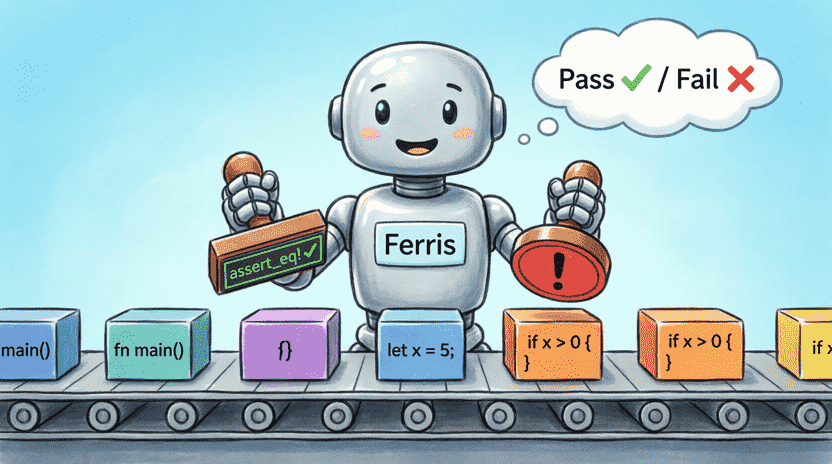
۱۱.۳. سازماندهی تستها
۱۱.۳.۱. تستهای واحد (Unit Tests)
تستهای واحد، کوچکترین بخشهای برنامه (مثل یک تابع یا متد) را به تنهایی آزمایش میکنند. این تستها معمولاً همان در فایلی که کد اصلی است نوشته میشوند.
۱۱.۳.۲. ماژول tests و #[cfg(test)]
برای جدا کردن کد تست از کد اصلی (و جلوگیری از کامپایل شدنش در نسخهی نهایی)، تستها را در یک ماژول به اسم tests میگذاریم و بالای آن #[cfg(test)] مینویسیم:
#![allow(unused)]
fn main() {
pub fn add(a: i32, b: i32) -> i32 { a + b }
#[cfg(test)]
mod tests {
use super::*; // همه چیز از بیرون ماژول را بیاور اینجا
#[test]
fn test_add() { assert_eq!(add(2, 2), 4); }
}
}#[cfg(test)] یعنی: «این ماژول را فقط وقتی کامپایل کن که دارم تست اجرا میکنم.» مثل یک اتاق مخفی که فقط موقع بازرسی باز میشود! 🕵️♂️
🧠 گاهی بعضی چیزها سخت است، و این اشکالی ندارد!
نوشتن تست ممکن است در ابتدا کمی خستهکننده به نظر برسد، اما هر چه بیشتر تمرین کنی، سریعتر و لذتبخشتر میشود. حتی برنامهنویسان حرفهای هم وقتی باگ پیدا میکنند، اول از همه یک تست مینویسند تا مطمئن شوند دیگر آن باگ برنمیگردد.
۱۱.۳.۳. تستهای یکپارچهسازی (Integration Tests)
این تستها برنامه را از دید یک کاربر خارجی آزمایش میکنند. این تستها در یک پوشهی جدا به اسم tests/ (کنار پوشهی src/) قرار میگیرند. هر فایل .rs در این پوشه مثل یک پروژهی مستقل رفتار میکند و باید کتابخانهی ما را use کند.
📂 ساختار:
my_project/
├── Cargo.toml
├── src/
│ └── lib.rs // کد اصلی
└── tests/
└── integration_test.rs // تستهای بیرونی
مثال tests/integration_test.rs:
#![allow(unused)]
fn main() {
use my_project::add; // اسم پروژهات را اینجا بنویس
#[test]
fn test_add_integration() {
assert_eq!(add(2, 2), 4);
}
}۱۱.۳.۴. اجرای فقط یک تست
اگر پروژه بزرگ باشد، میتوانی فقط یک تست خاص را اجرا کنی:
cargo test test_add_positive
حتی میتوانی بخشی از اسم را بنویسی تا همهی تستهای مشابه اجرا شوند: cargo test add
۱۱.۳.۵. نادیده گرفتن تست با #[ignore]
اگر تستی خیلی طولانی است یا هنوز آماده نیست، میتوانی موقتاً غیرفعالش کنی:
#![allow(unused)]
fn main() {
#[test]
#[ignore]
fn long_running_test() { /* کدی که ۱۰ دقیقه طول میکشد */ }
}برای اجرای تستهای نادیدهگرفتهشده: cargo test -- --ignored
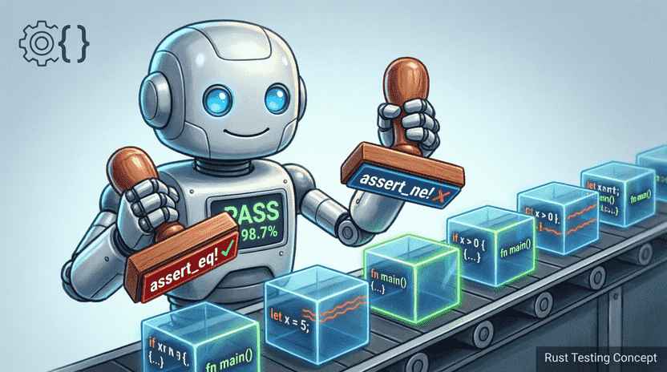
۱۱.۴. پروژه: تست برای بازی حدس عدد (فصل ۲)
حالا وقتش است بازی حدس عدد را طوری بازنویسی کنیم که قابل تست باشد. (یادت هست؟ یک عدد تصادفی تولید میکرد، ورودی میگرفت و راهنمایی میکرد.)
۱۱.۴.۱. تبدیل بازی به کتابخانه
اول یک پروژهی کتابخانهای میسازیم تا بتوانیم توابعش را تست بگیریم:
cargo new guess_game_lib --lib
cd guess_game_lib
در Cargo.toml وابستگی rand را اضافه کن (نسخهی جدید):
[dependencies]
rand = "0.9.0"
۱۱.۴.۲. تابع generate_secret با دانه ثابت
در تستها نمیخواهیم عدد واقعاً تصادفی باشد (چون هر بار عوض میشود و نمیتوانیم نتیجه را پیشبینی کنیم). پس یک تابع کمکی مخصوص تست میسازیم که همیشه یک عدد ثابت برگرداند:
#![allow(unused)]
fn main() {
// src/lib.rs
use rand::Rng;
pub fn generate_secret() -> u32 {
rand::thread_rng().gen_range(1..=100)
}
#[cfg(test)]
pub fn generate_secret_fixed() -> u32 { 42 } // همیشه ۴۲ برمیگرداند
}۱۱.۴.۳. تابع check_guess
این تابع منطق اصلی بازی را دارد:
#![allow(unused)]
fn main() {
#[derive(Debug, PartialEq)]
pub enum GuessResult { TooLow, TooHigh, Correct }
pub fn check_guess(guess: u32, secret: u32) -> GuessResult {
if guess < secret { GuessResult::TooLow }
else if guess > secret { GuessResult::TooHigh }
else { GuessResult::Correct }
}
}۱۱.۴.۴. نوشتن تستها
حالا در lib.rs زیر ماژول tests تستها را مینویسیم:
#![allow(unused)]
fn main() {
#[cfg(test)]
mod tests {
use super::*;
#[test]
fn test_check_guess_too_low() {
assert_eq!(check_guess(10, 42), GuessResult::TooLow);
}
#[test]
fn test_check_guess_correct() {
assert_eq!(check_guess(42, 42), GuessResult::Correct);
}
#[test]
fn test_generate_secret_fixed() {
assert_eq!(generate_secret_fixed(), 42);
}
}
}۱۱.۴.۵. تست تابع read_input با شبیهسازی
چطور تابعی که از صفحهکلید میخواند را تست کنیم؟ به جای stdin واقعی، تابع را جوری مینویسیم که از هر چیزی که قابلیت خواندن داشته باشد (Trait BufRead) ورودی بگیرد. در تست، از Cursor استفاده میکنیم که مثل یک نوار ضبط صوت مجازی عمل میکند و متن را کاراکتر به کاراکتر میخواند.
#![allow(unused)]
fn main() {
use std::io::{BufRead, Cursor};
pub fn read_number<R: BufRead>(reader: &mut R) -> Result<u32, String> {
let mut input = String::new();
reader.read_line(&mut input)
.map_err(|e| format!("خطای خواندن: {}", e))?;
input.trim().parse()
.map_err(|_| "لطفاً یک عدد معتبر وارد کن".to_string())
}
}و تست آن:
#![allow(unused)]
fn main() {
#[cfg(test)]
mod tests {
use super::*;
#[test]
fn test_read_number_ok() {
let input = b"42\n"; // نوار مجازی
let mut cursor = Cursor::new(input);
assert_eq!(read_number(&mut cursor), Ok(42));
}
#[test]
fn test_read_number_invalid() {
let input = b"hello\n";
let mut cursor = Cursor::new(input);
assert!(read_number(&mut cursor).is_err());
}
}
}![[Illustration: Cartoon scene showing a “Mock Input” machine. A tape labeled “Cursor: b’42\n’” feeds into a reader slot. The machine outputs a glowing green “Ok(42)” ticket. Ferris operates the controls with a satisfied smile. Style: dynamic, educational, bright colors, technical metaphor for children, 16:9.]](assets/images/11.4.png)
۱۱.۵. جمعبندی و چالش
۱۱.۵.۱. مرور مفاهیم
در این فصل یاد گرفتی:
✅ تستنویسی مثل شبیهساز پرواز است: قبل از استفادهی واقعی، همهچیز را امتحان میکنیم.
✅ #[test] تابع را به تست تبدیل میکند و cargo test اجرایشان میکند.
✅ assert!، assert_eq! و assert_ne! برای بررسی درستی استفاده میشوند.
✅ #[should_panic] برای تست توابعی که باید عمداً بترکند به کار میرود.
✅ تستهای واحد در ماژول #[cfg(test)] و تستهای یکپارچهسازی در پوشهی tests/ قرار میگیرند.
✅ برای تست ورودی، از BufRead و Cursor استفاده میکنیم تا نیاز به تایپ واقعی نباشد.
✅ تستنویسی تو را به یک مهندس نرمافزار واقعی تبدیل میکند – کسی که قبل از اینکه کاربر دچار مشکل شود، مشکل را پیدا میکند. 🧙
۱۱.۵.۲. چالش: تست برای struct Monster
به struct Monster از فصل ۵ برگرد. یک متد attack به آن اضافه کن که به هیولای دیگر حمله کند و قدرتش را کم کند. سپس سه تست بنویس:
۱. حملهای که قدرت قربانی را کاهش دهد.
۲. حمله با قدرت صفر (نباید قدرتی کم شود).
۳. چک کردن مقدار آسیب برگشتی.
💡 پاسخ نمونه:
#![allow(unused)]
fn main() {
struct Monster { name: String, power: u32 }
impl Monster {
fn attack(&self, other: &mut Monster) -> u32 {
let damage = self.power;
other.power = other.power.saturating_sub(damage);
damage
}
}
#[cfg(test)]
mod monster_tests {
use super::*;
#[test]
fn test_attack_reduces_power() {
let mut victim = Monster { name: String::from("ضعیف"), power: 100 };
let attacker = Monster { name: String::from("قوی"), power: 30 };
attacker.attack(&mut victim);
assert_eq!(victim.power, 70);
}
#[test]
fn test_attack_with_zero_power() {
let mut victim = Monster { name: String::from("قوی"), power: 100 };
let attacker = Monster { name: String::from("بیآزار"), power: 0 };
attacker.attack(&mut victim);
assert_eq!(victim.power, 100); // باید همان ۱۰۰ بماند
}
#[test]
fn test_attack_returns_damage() {
let mut victim = Monster { name: String::from("قربانی"), power: 50 };
let attacker = Monster { name: String::from("مهاجم"), power: 20 };
let damage = attacker.attack(&mut victim);
assert_eq!(damage, 20);
}
}
}حالا تو میدانی چطور با نوشتن تست، از درستی برنامهات مطمئن شوی و با خیال راحت تغییرات جدید اضافه کنی. 🛡️✨
در فصل بعد، یک پروژهی کامل و حرفهای خط فرمان (شبیه دستور grep) میسازیم و تمام چیزهایی که تا حالا یاد گرفتی را کنار هم میچینیم! 🔍📜
![[Illustration: Ferris wearing a graduation cap and safety goggles, holding a glowing “Chapter 11 Master” badge. Floating around him are testing tools: a green checkmark stamp, a red panic button, a mock tape reader, and a hidden lab door. Style: encouraging, vibrant children’s book illustration, celebratory mood, 16:9.]](assets/images/11.5.png)
سرزمین راست: ماجراهای فریس خرچنگ فضایی
فصل ۱۲: مینی-ربات جستجوگر (پروژه خط فرمان)
📑 فهرست فصل
۱۲.۱. ساخت یک ربات کوچولو (grep ساده)
۱۲.۱.۱. داستان: جستجوی کلمه در دفتر خاطرات
۱۲.۱.۲. هدف پروژه
۱۲.۱.۳. ایجاد پروژه با کارگو
۱۲.۲. دریافت آرگومانهای خط فرمان
۱۲.۲.۱. معرفی std::env::args
۱۲.۲.۲. جمعآوری آرگومانها در Vec
۱۲.۲.۳. ساختن struct Config
۱۲.۲.۴. تابع build برای Config
۱۲.۲.۵. مدیریت خطا در main
۱۲.۳. خواندن فایل
۱۲.۳.۱. استفاده از std::fs
۱۲.۳.۲. خواندن محتویات فایل
۱۲.۳.۳. مدیریت خطای باز کردن فایل
۱۲.۴. منطق جستجو
۱۲.۴.۱. تابع search
۱۲.۴.۲. توضیح سادهی lifetime در search
۱۲.۴.۳. چاپ نتایج
۱۲.۵. تست کردن مینی ربات
۱۲.۵.۱. نوشتن تست برای search
۱۲.۵.۲. اجرای تست
۱۲.۶. بهبودها
۱۲.۶.۱. حساسیت به حروف بزرگ و کوچک
۱۲.۶.۲. دریافت متغیر محیطی CASE_INSENSITIVE
۱۲.۶.۳. تابع search_case_insensitive
۱۲.۶.۴. استفاده از متغیر محیطی در Config
۱۲.۷. جمعبندی و چالش
۱۲.۷.۱. مرور مفاهیم
۱۲.۷.۲. چالش: جستجوی چند کلمه
۱۲.۱. ساخت یک ربات کوچولو (grep ساده)
۱۲.۱.۱. داستان: جستجوی کلمه در دفتر خاطرات
فریس یک دفتر خاطرات خیلی قطور دارد که همهی ماجراهای فضاییاش را در آن نوشته. یک روز دلش میخواهد بداند چند بار کلمهی «دایناسور» در خاطراتش آمده. میتواند صفحه به صفحه بگردد، ولی این کار ساعتها طول میکشد! 😴
به جایش تصمیم میگیرد یک ربات جستجوگر کوچک بسازد که سریع کارش را راه بیندازد. ربات از او میپرسد: «دنبال چه کلمهای بگردم؟ در کدام فایل؟» و بعد تمام خطهایی که آن کلمه در آنها هست را به فریس نشان میدهد. 🤖✨
این یعنی تو داری اولین ابزار خط فرمان خودت را میسازی – یک قدم بزرگ به سوی جادوگر کامپیوتر شدن! 🧙♂️
👨👩👧 نکته برای والدین و مربیان
این پروژه ترکیبی از مفاهیم فصلهای قبل (ورودی، ساختارها، مدیریت خطا، تست) است. اگر کودک در بعضی بخشها (مثل lifetime در تابعsearch) احساس سردرگمی کرد، نگران نباشید – این فقط یک اشاره است و برای اجرای برنامه لازم نیست عمیقاً آن را بفهمد. کتاب رسمی Rust یک پیادهسازی کامل از همین ابزار دارد:
doc.rust-lang.org/book/ch12-00-an-io-project.html
۱۲.۱.۲. هدف پروژه
برنامهی ما دقیقاً همین کار را میکند. یک ابزار خط فرمان (Command Line Tool) میسازیم که:
۱. دو تا ورودی از کاربر میگیرد: کلمهی مورد جستجو + مسیر فایل.
۲. فایل را باز میکند و متنش را میخواند.
۳. خطهایی که کلمه را دارند پیدا میکند و چاپ میکند.
این دقیقاً کاری است که دستور معروف grep در لینوکس و مک انجام میدهد. ما اسم برنامهمان را میگذاریم minigrep (یعنی grep کوچولو).
۱۲.۱.۳. ایجاد پروژه با کارگو
اول یک پروژهی جدید میسازیم:
cargo new minigrep
cd minigrep
فایل src/main.rs را باز کن. برای سادگی، همهی کد را همینجا مینویسیم.
(💡 نکته: اگر خواستی از edition = "2024" در Cargo.toml استفاده کنی، اشکالی ندارد – کد ما با هر دو نسخه کار میکند.)
![[Illustration: A friendly cartoon crab (Ferris) standing next to a small, boxy robot with a magnifying glass lens. The robot is scanning an open giant notebook with glowing search lines. Background: cozy spaceship desk with starry window. Style: vibrant children’s book illustration, soft lighting, playful tech metaphor, 16:9.]](assets/images/12.1.png)
۱۲.۲. دریافت آرگومانهای خط فرمان
۱۲.۲.۱. معرفی std::env::args
وقتی برنامهای را از ترمینال اجرا میکنی، میتوانی بعد از اسم برنامه، چند تا کلمه اضافه بنویسی. مثلاً:
cargo run -- دایناسور poem.txt
به آن دایناسور poem.txt میگویند آرگومان خط فرمان. در Rust، ماژول std::env یک تابع به اسم args دارد که این کلمات را به ما میرساند. مثل اینکه قبل از روشن کردن ربات، یک یادداشت بهش میدهیم! 📝
۱۲.۲.۲. جمعآوری آرگومانها در Vec
use std::env;
fn main() {
let args: Vec<String> = env::args().collect();
println!("آرگومانها: {:?}", args);
}اگر برنامه را با دستور بالا اجرا کنی، خروجی چیزی شبیه این میشود:
آرگومانها: ["target/debug/minigrep", "دایناسور", "poem.txt"]
🔹 اندیس ۰: اسم خود برنامه (به دردمون نمیخورد).
🔹 اندیس ۱: کلمهی جستجو.
🔹 اندیس ۲: مسیر فایل.
۱۲.۲.۳. ساختن struct Config
به جای اینکه هی در کد از args[1] و args[2] استفاده کنیم (که گیجکننده است)، یک struct مرتب میسازیم تا تنظیمات را یکجا نگه دارد:
#![allow(unused)]
fn main() {
struct Config {
query: String,
file_path: String,
}
}query: کلمهای که دنبالش میگردیم. file_path: آدرس فایل.
۱۲.۲.۴. تابع build برای Config
یک تابع مرتبط (Associated Function) میسازیم که آرگومانها را بگیرد، چک کند کافی هستند یا نه، و یک Config بسازد. اگر کم بود، خطا برمیگرداند:
#![allow(unused)]
fn main() {
impl Config {
fn build(args: &[String]) -> Result<Config, &'static str> {
if args.len() < 3 {
return Err("تعداد آرگومان کافی نیست! باید کلمه و فایل را مشخص کنی.");
}
let query = args[1].clone();
let file_path = args[2].clone();
Ok(Config { query, file_path })
}
}
}💡 چرا clone()؟ چون args مالک رشتههاست. ما نمیخواهیم مالکیت را بگیریم و خرابش کنیم. clone() یک کپی تمیز و مستقل میسازد. (در پروژههای بزرگ روشهای بهینهتر داریم، ولی اینجا سادگی مهمتر است!)
۱۲.۲.۵. مدیریت خطا در main
حالا در main از build استفاده میکنیم. اگر خطا برگشت، پیام خطا چاپ میکنیم و برنامه را با کد ۱ (نشانهی خطا) میبندیم:
use std::process;
fn main() {
let args: Vec<String> = env::args().collect();
let config = Config::build(&args).unwrap_or_else(|err| {
eprintln!("❌ خطا در آرگومانها: {}", err);
eprintln!("✅ روش استفاده: cargo run -- <کلمه> <فایل>");
process::exit(1);
});
println!("🔍 جستجوی '{}' در فایل '{}'", config.query, config.file_path);
}📌 eprintln! مثل println! است، ولی متن را در خروجی خطا (stderr) مینویسد. اینطوری اگر برنامه را در یک فایل ذخیره کنی، پیام خطا قاطی دادهها نمیشود!
![[Illustration: Cartoon illustration of a command-line terminal with floating speech bubbles. One bubble says “cargo run – word file.txt”. A small config card labeled “Config { query, path }” is being stamped “APPROVED”. Ferris watches with a checklist. Style: clean educational vector, bright colors, clear UI metaphor, 16:9.]](assets/images/12.2.png)
۱۲.۳. خواندن فایل
۱۲.۳.۱. استفاده از std::fs
برای کار با فایلها از ماژول std::fs استفاده میکنیم:
#![allow(unused)]
fn main() {
use std::fs;
}۱۲.۳.۲. خواندن محتویات فایل
تابع fs::read_to_string خیلی راحت است: فایل را باز میکند، همهی متن را میخواند و تبدیل به String میکند:
#![allow(unused)]
fn main() {
let contents = fs::read_to_string(&config.file_path)
.unwrap_or_else(|err| {
eprintln!("❌ نمیتوان فایل '{}' را خواند: {}", config.file_path, err);
process::exit(1);
});
}۱۲.۳.۳. مدیریت خطای باز کردن فایل
اگر فایل وجود نداشته باشد یا دسترسی به آن نباشد، unwrap_or_else خطا را میگیرد، پیام دوستانه چاپ میکند و برنامه را میبندد. اینطوری کاربر گیج نمیشود! 📂🔍
![[Illustration: A cartoon file cabinet with one drawer open. A glowing document floats out labeled “contents: String”. A small robot arm holds a stamp reading “READ SUCCESS”. Ferris stands nearby giving a thumbs up. Style: clean educational vector, bright colors, 16:9.]](assets/images/12.3.png)
۱۲.۴. منطق جستجو
۱۲.۴.۱. تابع search
حالا یک تابع مینویسیم که متن فایل و کلمهی جستجو را بگیرد، خط به خط بگردد و آنهایی که کلمه را دارند برگرداند:
#![allow(unused)]
fn main() {
fn search<'a>(query: &str, contents: &'a str) -> Vec<&'a str> {
let mut results = Vec::new();
for line in contents.lines() {
if line.contains(query) {
results.push(line);
}
}
results
}
}🔹 .lines() متن را بر اساس خطهای جدید تکهتکه میکند.
🔹 .contains(query) چک میکند کلمه در خط هست یا نه.
🔹 اگر بود، آن خط را به results اضافه میکند.
۱۲.۴.۲. توضیح سادهی lifetime در search
اینجا 'a را میبینی. نترس! این فقط یک برچسب امانتداری است. معنیش این است:
«خطهایی که برمیگردانم، تکههایی از خود
contentsهستند. پس تا وقتیcontentsزنده است، این لیست هم معتبر است. متن اصلی را پاک نکن تا من دارم ازش استفاده میکنم!»
کامپایلر با این برچسب مطمئن میشود حافظه خراب نمیشود. فعلاً فقط بدان که برای امنیت لازم شده است! 🛡️
۱۲.۴.۳. چاپ نتایج
حالا در main، بعد از خواندن فایل:
#![allow(unused)]
fn main() {
let results = search(&config.query, &contents);
if results.is_empty() {
println!("❌ هیچ خطی شامل '{}' پیدا نشد.", config.query);
} else {
println!("📋 خطوط پیدا شده:");
for line in results {
println!(" {}", line);
}
}
}اگر چیزی پیدا نشد، میگوید «هیچی نبود». اگر پیدا شد، یکییکی نشان میدهد! ✅
![[Illustration: A magnifying glass hovering over a long scroll of text. Highlighted lines glow with a soft yellow light while others remain dim. A tiny conveyor belt carries matching lines into a box labeled “Vec<&str>”. Ferris operates the controls. Style: playful technical metaphor, warm lighting, children’s book illustration, 16:9.]](assets/images/12.4.png)
۱۲.۵. تست کردن مینی ربات
۱۲.۵.۱. نوشتن تست برای search
قبل از اینکه ربات را بفرستیم بیرون، باید در آزمایشگاه چکش کنیم. یک تست واحد مینویسیم:
#![allow(unused)]
fn main() {
#[cfg(test)]
mod tests {
use super::*;
#[test]
fn test_search_one_result() {
let query = "دایناسور";
let contents = "\
اسم من فریسه.
دایناسورها خیلی بزرگ بودن.
من از دایناسور میترسم.";
assert_eq!(
vec!["دایناسورها خیلی بزرگ بودن."],
search(query, contents)
);
}
}
}ما یک متن فرضی داریم و چک میکنیم فقط همان خطی که «دایناسور» دارد برگردانده شود.
۱۲.۵.۲. اجرای تست
cargo test
باید خروجی سبز ببینی: test tests::test_search_one_result ... ok. یعنی ربات دارد درست کار میکند! 🟢
![[Illustration: A cartoon laboratory setting with a test tube rack. One tube glows green labeled “search test ✅”. A checklist shows “assert_eq! passed”. Ferris wears goggles and smiles. Style: playful, educational, bright colors, 16:9.]](assets/images/12.5.png)
۱۲.۶. بهبودها
۱۲.۶.۱. حساسیت به حروف بزرگ و کوچک
تا اینجا جستجوی ما دقیقاً همان کلمه را میخواهد. "دایناسور" را پیدا میکند، ولی "دایناسورها" یا "DINOSAUR" را نه. گاهی کاربر میخواهد بدون حساسیت جستجو کند.
۱۲.۶.۲. دریافت متغیر محیطی CASE_INSENSITIVE
در سیستمعامل یک سری متغیر محیطی مخفی وجود دارد که مثل تنظیمات پیشرفتهی کامپیوتر عمل میکنند. اگر کاربر قبل اجرا این را بزند:
# لینوکس/مک
export CASE_INSENSITIVE=1
# ویندوز (CMD)
set CASE_INSENSITIVE=1
برنامه میفهمد که باید جستجوی نامحساس انجام بدهد. در کد چک میکنیم:
#![allow(unused)]
fn main() {
use std::env;
let ignore_case = env::var("CASE_INSENSITIVE").is_ok();
}اگر متغیر وجود داشته باشد، is_ok() برابر true میشود.
۱۲.۶.۳. تابع search_case_insensitive
یک تابع مشابه میسازیم، ولی قبل مقایسه، هم کلمه و هم خط را کوچک میکنیم:
#![allow(unused)]
fn main() {
fn search_case_insensitive<'a>(query: &str, contents: &'a str) -> Vec<&'a str> {
let query = query.to_lowercase();
let mut results = Vec::new();
for line in contents.lines() {
if line.to_lowercase().contains(&query) {
results.push(line);
}
}
results
}
}۱۲.۶.۴. استفاده از متغیر محیطی در Config
Config را گسترش میدهیم تا این تنظیم را هم نگه دارد:
#![allow(unused)]
fn main() {
struct Config {
query: String,
file_path: String,
ignore_case: bool,
}
impl Config {
fn build(args: &[String]) -> Result<Config, &'static str> {
if args.len() < 3 {
return Err("تعداد آرگومان کافی نیست");
}
let query = args[1].clone();
let file_path = args[2].clone();
let ignore_case = env::var("CASE_INSENSITIVE").is_ok();
Ok(Config { query, file_path, ignore_case })
}
}
}و در main بر اساس آن تصمیم میگیریم:
#![allow(unused)]
fn main() {
let results = if config.ignore_case {
search_case_insensitive(&config.query, &contents)
} else {
search(&config.query, &contents)
};
}![[Illustration: A cartoon control panel with two switches: “Case-Sensitive (ON)” and “Case-Insensitive (OFF)”. A glowing environment variable label “CASE_INSENSITIVE=1” flips the switch. Ferris adjusts a dial with a smile. Style: clean, educational infographic, bright colors, 16:9.]](assets/images/12.6.png)
۱۲.۷. جمعبندی و چالش
۱۲.۷.۱. مرور مفاهیم
در این فصل یاد گرفتی:
✅ چطور با std::env::args آرگومانهای خط فرمان را بگیری.
✅ چطور با struct Config تنظیمات را مرتب نگه داری.
✅ چطور با std::fs::read_to_string فایل بخوانی.
✅ چطور با lines() و contains() متن جستجو کنی.
✅ چطور با #[cfg(test)] و assert_eq! تست بنویسی.
✅ چطور از متغیرهای محیطی برای تنظیمات پیشرفته استفاده کنی.
✅ چطور با Result و unwrap_or_else خطاها را تمیز مدیریت کنی.
✅ ساختن یک ابزار خط فرمان یعنی تو میتوانی به کامپیوتر فرمان بدهی – یک جادوگر کامپیوتر واقعی چنین میکند! 🧙
🧠 گاهی بعضی چیزها سخت است، و این اشکالی ندارد!
پروژهیminigrepیکی از اولین پروژههای جدی در مسیر یادگیری Rust است. ممکن است بعضی بخشها (مثل lifetime در تابعsearch) در ابتدا مبهم به نظر برسند. نگران نباش – مهم این است که برنامه کار میکند. با گذشت زمان و تمرین بیشتر، این مفاهیم برایت شفاف میشوند.
۱۲.۷.۲. چالش: جستجوی چند کلمه
حالا برنامه را یک پله حرفهایتر کن! کاری کن کاربر بتواند چند کلمه را با علامت | جدا کند و برنامه خطهایی را پیدا کند که حداقل یکی از آن کلمهها را داشته باشند.
مثال اجرا:
cargo run -- "دایناسور|سفینه|ستاره" poem.txt
💡 راهنمایی: میتوانی رشته را با split('|') تکهتکه کنی و بعد با any() چک کنی آیا خط شامل حداقل یکی از کلمهها هست یا نه.
💡 پاسخ نمونه (بخش اصلی):
#![allow(unused)]
fn main() {
fn search_multiple<'a>(queries: &[&str], contents: &'a str) -> Vec<&'a str> {
let mut results = Vec::new();
for line in contents.lines() {
if queries.iter().any(|q| line.contains(q)) {
results.push(line);
}
}
results
}
}برای استفاده، در main اینطور صدایش بزن:
#![allow(unused)]
fn main() {
let query_list: Vec<&str> = config.query.split('|').collect();
let results = search_multiple(&query_list, &contents);
}حالا تو یک ابزار خط فرمان واقعی، قابل استفاده و تستشده ساختی! میتوانی آن را با دوستانت به اشتراک بگذاری یا حتی در پروژههای بعدیات استفاده کنی. 🛠️🚀
در فصل بعد، با Iteratorها و Closureها آشنا میشویم؛ ابزارهایی که کدت را خواناتر، کوتاهتر و حرفهایتر میکنند، درست مثل یک چاقوی سوئیسی فضایی! 🔪✨
سرزمین راست: ماجراهای فریس خرچنگ فضایی
فصل ۱۳: قطار جادویی و کارخانهی تبدیل (Iterators & Closures)
📑 فهرست فصل
۱۳.۱. قطار باربری (Iterator)
۱۳.۱.۱. داستان: قطار واگنهای سنگ
۱۳.۱.۲. Iterator چیست؟
۱۳.۱.۳. گرفتن Iterator از یک Collection
۱۳.۱.۴. متد next
۱۳.۱.۵. حلقه for و Iterator
۱۳.۱.۶. تمرین: پیمایش با while let
۱۳.۲. ماشینآلات کنار ریل (Adapter Methods)
۱۳.۲.۱. map: تبدیل هر عنصر
۱۳.۲.۲. filter: انتخاب بر اساس شرط
۱۳.۲.۳. زنجیره کردن (Chaining)
۱۳.۲.۴. collect: جمعآوری نتایج
۱۳.۲.۵. سایر متدهای مفید (fold, any, all, sum)
۱۳.۲.۶. تمرین: اعداد زوج مجذور
۱۳.۳. کولهپشتی جاسوسی (Closures)
۱۳.۳.۱. داستان: ابزار مخفی فریس
۱۳.۳.۲. تعریف Closure
۱۳.۳.۳. گرفتن متغیر از محیط
۱۳.۳.۴. انواع گرفتن (Fn, FnMut, FnOnce)
۱۳.۳.۵. حرکت دادن مالکیت با move
۱۳.۳.۶. تمرین: Closure ضربکننده
۱۳.۴. ترکیب Iterator و Closure
۱۳.۴.۱. map با Closure
۱۳.۴.۲. filter با Closure
۱۳.۴.۳. مثال: خواندن خطوط از stdin و تبدیل به عدد
۱۳.۴.۴. filter_map برای ترکیب دو کار
۱۳.۵. پروژه: پردازش لاگ فایل
۱۳.۵.۱. ساختار خطوط لاگ
۱۳.۵.۲. خواندن فایل با Iterator
۱۳.۵.۳. فیلتر کردن خطوط ERROR
۱۳.۵.۴. شمارش خطاها با HashMap
۱۳.۶. جمعبندی و چالش
۱۳.۶.۱. مرور مفاهیم
۱۳.۶.۲. چالش: پیادهسازی Iterator برای فیبوناچی
۱۳.۱. قطار باربری (Iterator)
۱۳.۱.۱. داستان: قطار واگنهای سنگ
فریس یک قطار باری بزرگ دارد که واگنهایش پر از سنگهای درخشان از سیارههای مختلف است. 🚂💎 او نمیخواهد همهی سنگها را یکهو روی زمین خالی کند و زمین را شلوغ کند. ترجیح میدهد قطار آرام حرکت کند و هر بار فقط یک واگن باز شود و یک سنگ تحویل بدهد. به این کار میگویند پیمایش (Iteration).
در برنامهنویسی، وقتی با لیستها یا مجموعهها کار میکنیم، اغلب میخواهیم تکتک اعضای آنها را ببینیم یا رویشان کار کنیم. ابزاری که این کار را برایمان راحت و مرتب انجام میدهد، Iterator (تکرارکننده) نام دارد.
اینجا داریم یاد میگیریم چطور بدون نوشتن حلقههای طولانی، روی دادهها پیمایش کنیم – یک گام بزرگ به سوی کدنویسی حرفهای! 🧙♂️
👨👩👧 نکته برای والدین و مربیان
Iteratorها و Closureها از ویژگیهای قدرتمند Rust هستند که نوشتن کدهای تمیز و کارآمد را ممکن میکنند. این فصل ممکن است برای بعضی کودکان چالشبرانگیز باشد – نگران نباشید، در پروژههای بعدی بارها از آنها استفاده خواهید کرد. کتاب رسمی Rust فصل کاملی دربارهی Iteratorها دارد:
doc.rust-lang.org/book/ch13-00-functional-features.html
۱۳.۱.۲. Iterator چیست؟
Iterator یک موجود باهوش است که میداند چطور اعضای یک مجموعه را یکی یکی، به ترتیب، و فقط وقتی که ازش خواسته شود، تحویل بدهد. در Rust، Iterator یک Trait استاندارد دارد که مهمترین ابزارش متد next است:
#![allow(unused)]
fn main() {
trait Iterator {
type Item;
fn next(&mut self) -> Option<Self::Item>;
}
}🔹 هر بار next را صدا بزنی، عضو بعدی را داخل Some(عضو) به تو میدهد.
🔹 وقتی دیگر عضوی باقی نمانده، None برمیگرداند.
💡 نکتهی طلایی: Iteratorها تنبل (Lazy) هستند! یعنی تا وقتی ازشان نخواستی عضو بعدی را بدهند یا نتایج را جمع کنی، هیچ کاری انجام نمیدهند. این یعنی حافظه و سرعت را هدر نمیدهند! ⏱️
۱۳.۱.۳. گرفتن Iterator از یک Collection
برای اینکه از یک وکتور یا آرایه Iterator بگیری، سه راه اصلی داری:
| متد | نوع خروجی | توضیح ساده |
|---|---|---|
.iter() | &T | فقط نگاه میکند (قرض غیرقابل تغییر). خود مجموعه دستنخورده میماند. |
.iter_mut() | &mut T | نگاه میکند و اجازه تغییر میدهد. |
.into_iter() | T | مالکیت را میگیرد. بعد از تمام شدن، دیگر نمیتوانی از مجموعه استفاده کنی. |
#![allow(unused)]
fn main() {
let v = vec![10, 20, 30];
let iter1 = v.iter(); // فقط نگاه میکند
let iter2 = v.iter_mut(); // میتواند تغییر بدهد
let iter3 = v.into_iter(); // مالکیت را میگیرد (v بعد از این خط دیگر قابل استفاده نیست)
}۱۳.۱.۴. متد next
میتوانی دستی next را صدا بزنی و ببینی چطور کار میکند:
#![allow(unused)]
fn main() {
let v = vec!["سیب", "موز", "پرتقال"];
let mut iter = v.iter(); // باید mut باشد چون موقعیت داخلیاش عوض میشود
assert_eq!(iter.next(), Some(&"سیب"));
assert_eq!(iter.next(), Some(&"موز"));
assert_eq!(iter.next(), Some(&"پرتقال"));
assert_eq!(iter.next(), None); // دیگر چیزی نمانده!
}۱۳.۱.۵. حلقه for و Iterator
خبر خوب این است که لازم نیست خودت درگیر next شوی! حلقهی for در Rust خودش پشت صحنه Iterator میسازد و تا وقتی None برنگرداند، حلقه را ادامه میدهد:
#![allow(unused)]
fn main() {
let names = vec!["فریس", "بیل", "لونا"];
for name in &names { // &names دقیقاً همان names.iter() است
println!("سلام {}!", name);
}
}⚠️ اگر بنویسی for name in names (بدون &)، حلقه مالکیت names را میگیرد و بعد از حلقه دیگر نمیتوانی از آن استفاده کنی.
۱۳.۱.۶. تمرین: پیمایش با while let
با استفاده از while let و next()، وکتور ["الف", "ب", "ج"] را پیمایش کن و هر کدام را چاپ کن.
💡 پاسخ:
fn main() {
let v = vec!["الف", "ب", "ج"];
let mut iter = v.iter();
while let Some(item) = iter.next() {
println!("{}", item);
}
}while let یعنی: «تا وقتی next مقدار Some میدهد، کد را اجرا کن. وقتی None شد، خودکار متوقف شو.» خیلی تمیز است! ✨
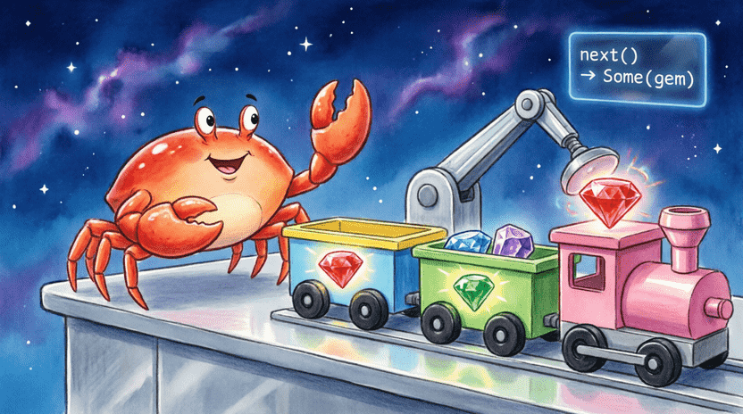
۱۳.۲. ماشینآلات کنار ریل (Adapter Methods)
۱۳.۲.۱. map: تبدیل هر عنصر
در مسیر قطار، ماشینهایی هستند که سنگها را میگیرند، شکل یا رنگشان را عوض میکنند و به واگن بعدی میفرستند. در Rust به اینها Adapter میگوییم. معروفترینشان map است. یک Closure میگیرد و روی هر عنصر اعمالش میکند:
#![allow(unused)]
fn main() {
let numbers = vec![1, 2, 3];
let doubled: Vec<_> = numbers.iter().map(|x| x * 2).collect();
println!("{:?}", doubled); // [2, 4, 6]
}⚠️ دقت کن: map به تنهایی هیچ کاری نمیکند! فقط یک Iterator جدید میسازد که میگوید: «وقتی ازم خواستند، این تبدیل را انجام میدهم.»
۱۳.۲.۲. filter: انتخاب بر اساس شرط
یک ماشین دیگر هم هست که فقط سنگهایی را رد میکند که یک شرط خاص را داشته باشند. اگر شرط true باشد، سنگ رد میشود؛ اگر false باشد، از ریل خارج میشود. برای راحتتر کردن کار با مرجعها، از .copied() استفاده میکنیم:
#![allow(unused)]
fn main() {
let numbers = vec![1, 2, 3, 4, 5];
let evens: Vec<i32> = numbers.iter().copied().filter(|&x| x % 2 == 0).collect();
println!("{:?}", evens); // [2, 4]
}.copied() باعث میشود به جای &i32 از i32 واقعی استفاده کنیم. اینطوری مجبور نیستیم با |&&x| کار کنیم.
۱۳.۲.۳. زنجیره کردن (Chaining)
زیبایی Iteratorها اینجاست که میتوانی ماشینها را پشت سر هم بچینی:
#![allow(unused)]
fn main() {
let numbers = vec![1, 2, 3, 4, 5];
let result: Vec<_> = numbers.iter()
.copied()
.filter(|&x| x % 2 == 0) // اول فقط زوجها را جدا کن
.map(|x| x * 10) // بعد ضربدر ۱۰ کن
.collect(); // در نهایت جمعشان کن
println!("{:?}", result); // [20, 40]
}این زنجیره تا وقتی به .collect() یا .sum() نرسد، هیچ محاسبهای انجام نمیدهد. Rust آنقدر باهوش است که میفهمد چطور کارها را بهینه انجام بدهد! 🧠⚡
۱۳.۲.۴. collect: جمعآوری نتایج
collect آخرین ایستگاه است. Iterator را میگیرد و همهی نتایج را در یک Collection جدید (مثل Vec یا HashMap) میریزد. معمولاً باید نوعش را مشخص کنی: Vec<_> یا ::<Vec<i32>>.
۱۳.۲.۵. سایر متدهای مفید
| متد | کاربرد | مثال |
|---|---|---|
sum() | جمع اعداد | numbers.iter().sum::<i32>() |
fold(init, |acc, x| ...) | جمعکنندهی عمومی | fold(0, |acc, x| acc + x) |
any(|&x| ...) | حداقل یکی شرط را دارد؟ | any(|&x| x > 10) |
all(|&x| ...) | همه شرط را دارند؟ | all(|&x| x > 0) |
۱۳.۲.۶. تمرین: اعداد زوج مجذور
یک وکتور از اعداد ۱ تا ۱۰ بساز. با filter و map، فقط زوجها را انتخاب کن، مربعشان را حساب کن، و در یک وکتور جدید جمع کن.
💡 پاسخ:
fn main() {
let result: Vec<i32> = (1..=10)
.filter(|&x| x % 2 == 0)
.map(|x| x * x)
.collect();
println!("{:?}", result); // [4, 16, 36, 64, 100]
}(1..=10) خودش یک Range است و Iterator را پیادهسازی میکند. نیازی به vec! نیست!
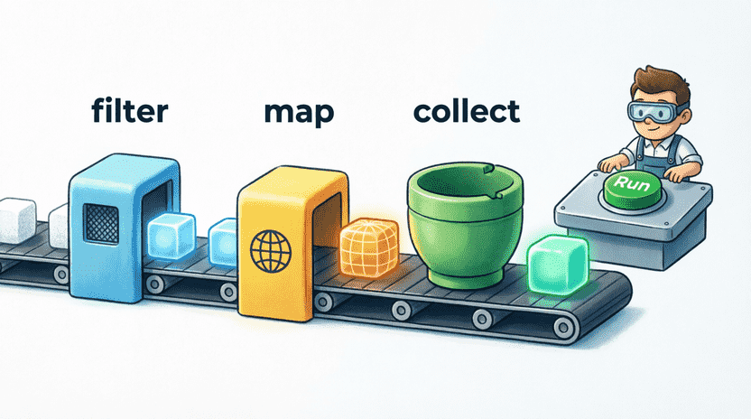
۱۳.۳. کولهپشتی جاسوسی (Closures)
۱۳.۳.۱. داستان: ابزار مخفی فریس
فریس یک کولهپشتی جادویی دارد که میتواند یک عملیات مخفی را در خودش ذخیره کند. مثلاً به آن میگوید: «هر عددی به تو دادم، ضربدر ۳ کن.» بعداً هر وقت فریس بخواهد، کولهپشتی آن کار را انجام میدهد. جادوی اصلی اینجاست که کولهپشتی میتواند چیزهایی را از محیط اطرافش به خاطر بسپارد. در Rust به این ابزار Closure (بستار) میگوییم. 🎒✨
۱۳.۳.۲. تعریف Closure
نحو Closure خیلی ساده است: |پارامترها| { بدنه }. اگر بدنه فقط یک خط باشد، آکولاد {} لازم نیست:
#![allow(unused)]
fn main() {
let add_one = |x| x + 1;
println!("{}", add_one(5)); // 6
let multiply = |a, b| a * b;
println!("{}", multiply(4, 5)); // 20
}نوع پارامترها و خروجی معمولاً توسط کامپایلر خودش حدس زده میشود.
۱۳.۳.۳. گرفتن متغیر از محیط
Closure میتواند از متغیرهایی که بیرون از خودش تعریف شدهاند استفاده کند:
#![allow(unused)]
fn main() {
let factor = 3;
let multiply_by_factor = |x| x * factor; // factor را از محیط میگیرد
println!("{}", multiply_by_factor(10)); // 30
}اما Closure با این متغیرها چطور رفتار میکند؟ سه حالت دارد که کامپایلر خودش انتخاب میکند:
۱۳.۳.۴. انواع گرفتن (Fn, FnMut, FnOnce)
| نوع | رفتار | مثال |
|---|---|---|
Fn | فقط میخواند (قرض معمولی &). چند بار میتوانی صدایش بزنی. | ` |
FnMut | میتواند تغییر بدهد (قرض mutable &mut). چند بار صدا زده میشود. | ` |
FnOnce | مالکیت را میگیرد و مصرف میکند. فقط یک بار میتوانی صدایش بزنی. | ` |
مثال FnMut:
#![allow(unused)]
fn main() {
let mut count = 0;
let mut increment = || {
count += 1;
count
};
println!("{}", increment()); // 1
println!("{}", increment()); // 2
}۱۳.۳.۵. حرکت دادن مالکیت با move
اگر قبل از Closure کلمهی move را بگذاری، به Closure میگویی: «لطفاً مالکیت متغیرهای محیط را کامل به خودت منتقل کن.» این زمانی کاربرد دارد که بخواهی Closure را به یک ریسه (Thread) دیگر بفرستی:
#![allow(unused)]
fn main() {
let s = String::from("سلام فضایی");
let consume = move || {
println!("{}", s);
};
consume();
// println!("{}", s); // ❌ خطا! مالکیت رفته پیش consume
}۱۳.۳.۶. تمرین: Closure ضربکننده
تابعی به اسم make_multiplier بنویس که یک عدد factor بگیرد و یک Closure برگرداند. Closure باید هر عددی که به آن داده میشود را در factor ضرب کند. از move استفاده کن.
💡 پاسخ:
fn make_multiplier(factor: i32) -> impl Fn(i32) -> i32 {
move |x| x * factor
}
fn main() {
let double = make_multiplier(2);
let triple = make_multiplier(3);
println!("{}", double(5)); // 10
println!("{}", triple(5)); // 15
}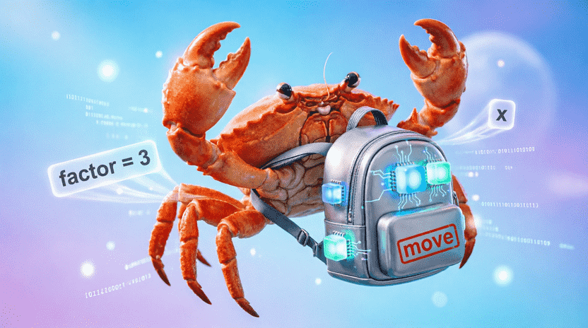
۱۳.۴. ترکیب Iterator و Closure
۱۳.۴.۱. map با Closure
Adapterهایی مثل map و filter دقیقاً همان Closureها را به عنوان ورودی میگیرند:
#![allow(unused)]
fn main() {
let names = vec!["فریس", "بیل"];
let greetings: Vec<_> = names.iter()
.map(|name| format!("سلام {}!", name))
.collect();
println!("{:?}", greetings); // ["سلام فریس!", "سلام بیل!"]
}۱۳.۴.۲. filter با Closure
#![allow(unused)]
fn main() {
let numbers = vec![5, 15, 25, 8];
let big_numbers: Vec<_> = numbers.iter()
.copied()
.filter(|&x| x > 10)
.collect();
println!("{:?}", big_numbers); // [15, 25]
}۱۳.۴.۳. مثال: خواندن خطوط از stdin و تبدیل به عدد
فرض کن کاربر چند عدد را خط به خط وارد میکند و میخواهیم جمعشان را حساب کنیم:
use std::io::{self, BufRead};
fn main() {
let stdin = io::stdin();
let sum: i32 = stdin.lock().lines()
.map(|line| line.unwrap().trim().parse::<i32>().unwrap())
.sum();
println!("مجموع: {}", sum);
}اینجا stdin.lock().lines() یک Iterator از خطوط میدهد. map هر خط را میگیرد، تمیز میکند و به عدد تبدیل میکند. در نهایت sum() همه را جمع میکند.
۱۳.۴.۴. filter_map برای ترکیب دو کار
گاهی میخواهیم همزمان تبدیل کنیم و فیلتر. filter_map یک Closure میگیرد که Option<T> برمیگرداند. اگر Some باشد، نگهش میدارد؛ اگر None باشد، دور میاندازد:
#![allow(unused)]
fn main() {
let strings = vec!["3", "seven", "8", "10"];
let numbers: Vec<i32> = strings.iter()
.filter_map(|s| s.parse().ok()) // اگر parse نشود، None میدهد و حذف میشود
.collect();
println!("{:?}", numbers); // [3, 8, 10]
}.ok() یک متد کمکی است که Result را به Option تبدیل میکند. خیلی برای پاکسازی دادهها کاربرد دارد! 🧼
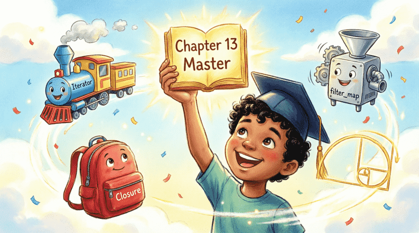
۱۳.۵. پروژه: پردازش لاگ فایل
حالا وقتش است همهی اینها را در یک پروژهی واقعی بگذاریم. فرض کن یک فایل log.txt داری که وضعیت سیستم را ثبت کرده:
INFO: سیستم راهاندازی شد
ERROR: دیسک پر است
WARNING: حافظه رو به اتمام
ERROR: اتصال شبکه قطع شد
INFO: کار تمام شد
میخواهیم خطوط ERROR را پیدا کنیم و ببینیم هر کدام چند بار تکرار شدهاند.
۱۳.۵.۱. ساختار خطوط لاگ
هر خط با یک برچسب مثل ERROR: شروع میشود. ما فقط به خطاهای واقعی کار داریم.
۱۳.۵.۲. خواندن فایل با Iterator
use std::fs::File;
use std::io::{BufRead, BufReader};
fn main() {
let file = File::open("log.txt").expect("فایل log.txt پیدا نشد");
let reader = BufReader::new(file);
// ... ادامه کد
}۱۳.۵.۳. فیلتر کردن خطوط ERROR
#![allow(unused)]
fn main() {
let error_lines: Vec<String> = reader.lines()
.filter_map(|line| line.ok()) // اگر خطایی در خواندن فایل پیش آمد، نادیده بگیر
.filter(|line| line.starts_with("ERROR"))
.collect();
println!("خطاهای پیدا شده:");
for line in &error_lines {
println!(" {}", line);
}
}۱۳.۵.۴. شمارش خطاها با HashMap
حالا بیاییم ببینیم هر خطا چند بار تکرار شده:
#![allow(unused)]
fn main() {
use std::collections::HashMap;
let mut counts = HashMap::new();
for line in reader.lines().filter_map(|l| l.ok()) {
if let Some(msg) = line.strip_prefix("ERROR: ") {
*counts.entry(msg.to_string()).or_insert(0) += 1;
}
}
println!("\n📊 آمار خطاها:");
for (msg, count) in &counts {
println!(" - {} : {} بار", msg, count);
}
}strip_prefix فقط اگر خط با "ERROR: " شروع شود، بقیهی متن را برمیگرداند. بعد با entry و or_insert تعدادش را میشماریم. کدی که هم تمیز است، هم سریع! ⚡
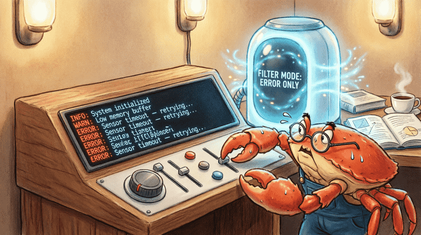
۱۳.۶. جمعبندی و چالش
۱۳.۶.۱. مرور مفاهیم
در این فصل یاد گرفتی:
✅ Iterator: شیء برای پیمایش مرحلهای مجموعهها. متد اصلی next.
✅ .iter() / .iter_mut() / .into_iter(): راههای گرفتن Iterator با سطوح دسترسی مختلف.
✅ Adapterها: map (تبدیل)، filter (انتخاب)، collect (جمعبندی)، fold/sum/any/all. همهی اینها تنبل (Lazy) هستند.
✅ Closure: تابع بینام که متغیرهای محیط را میگیرد. نحو |x| x * 2.
✅ انواع Closure: Fn (فقط خواندن)، FnMut (تغییر)، FnOnce (مصرف کردن).
✅ move: انتقال مالکیت متغیرهای محیط به داخل Closure.
✅ filter_map: ترکیب هوشمندانهی فیلتر و تبدیل.
✅ این ابزارها تو را قادر میسازند کدهای کوتاه، سریع و شبیه به زبان انسان بنویسی – مانند یک جادوگر واقعی! 🧙
🧠 گاهی بعضی چیزها سخت است، و این اشکالی ندارد!
Closureها و Iteratorهای زنجیرهای ممکن است در ابتدا گیجکننده به نظر برسند. حتی برنامهنویسان حرفهای هم گاهی برای نوشتن یک زنجیرهی پیچیده چند بار تلاش میکنند. نگران نباش – با تمرین، این ابزارها برایت طبیعی میشوند و نوشتن کدهای زیبا را برایت لذتبخش میکنند.
۱۳.۶.۲. چالش: پیادهسازی Iterator برای فیبوناچی
یک struct به اسم Fibonacci بساز که Iterator را پیادهسازی کند. هر بار که next صدا زده میشود، عدد بعدی دنباله (۰, ۱, ۱, ۲, ۳, ۵, ۸, …) را برگرداند. سپس با .take(10) ده عدد اول را چاپ کن.
💡 پاسخ نمونه:
struct Fibonacci {
current: u64,
next: u64,
}
impl Fibonacci {
fn new() -> Self {
Fibonacci { current: 0, next: 1 }
}
}
impl Iterator for Fibonacci {
type Item = u64;
fn next(&mut self) -> Option<Self::Item> {
let new_next = self.current + self.next;
let result = self.current;
self.current = self.next;
self.next = new_next;
Some(result)
}
}
fn main() {
let fib = Fibonacci::new();
for num in fib.take(10) {
println!("{}", num);
}
}take(10) خودش یک Adapter دیگر است که فقط ۱۰ عضو اول Iterator را برمیگرداند. ترکیب struct + Trait + Adapter دقیقاً همان جایی است که Rust میدرخشد! 🌟
حالا تو میدانی چطور با Iteratorها و Closureها کدهای خواناتر، کوتاهتر و حرفهایتر بنویسی. در فصل بعد، سری به سوپرمارکت بزرگ Rust (Crates.io) میزنیم و یاد میگیریم چطور از کتابخانههای آمادهی دیگران استفاده کنیم تا برنامههای قدرتمندتری بسازیم. 📦🚀
سرزمین راست: ماجراهای فریس خرچنگ فضایی
فصل ۱۴: سوپرمارکت اسباببازیهای راست (Crates.io)
📑 فهرست فصل
۱۴.۱. قرض گرفتن اسباببازی بقیه
۱۴.۱.۱. داستان: فروشگاه بزرگ اسباببازی
۱۴.۱.۲. crates.io چیست؟
۱۴.۱.۳. اضافه کردن وابستگی به Cargo.toml
۱۴.۱.۴. استفاده از crate در کد
۱۴.۲. جستجو و انتخاب crate
۱۴.۲.۱. رفتن به سایت crates.io
۱۴.۲.۲. خواندن مستندات در docs.rs
۱۴.۲.۳. معیارهای انتخاب یک crate خوب
۱۴.۲.۴. مثال: استفاده از rand
۱۴.۳. مدیریت نسخهها (SemVer)
۱۴.۳.۱. معناشناسی نسخه (Semantic Versioning)
۱۴.۳.۲. انواع عملگرهای نسخه در Cargo.toml
۱۴.۳.۳. قفل کردن نسخه با Cargo.lock
۱۴.۴. بهروزرسانی وابستگیها
۱۴.۴.۱. cargo update
۱۴.۴.۲. cargo outdated (ابزار خارجی)
۱۴.۵. ساختن اولین crate خودمان
۱۴.۵.۱. ایجاد پروژه کتابخانه
۱۴.۵.۲. نوشتن کد در lib.rs
۱۴.۵.۳. مستندات با /// و //!
۱۴.۵.۴. ساختن مستندات محلی با cargo doc
۱۴.۵.۵. آماده کردن برای انتشار (اختیاری)
۱۴.۶. پروژه: استفاده از ferris-says
۱۴.۶.۱. اضافه کردن ferris-says
۱۴.۶.۲. نوشتن برنامه با فریم خرچنگ
۱۴.۷. جمعبندی و چالش
۱۴.۷.۱. مرور مفاهیم
۱۴.۷.۲. چالش: ساختن یک crate کوچک به نام pig_latin
۱۴.۱. قرض گرفتن اسباببازی بقیه
۱۴.۱.۱. داستان: فروشگاه بزرگ اسباببازی
فریس یک روز خسته شد از اینکه برای هر کار کوچکی (مثل ساختن عدد تصادفی یا کشیدن یک شکل ساده) مجبور بود همهچیز را از صفر بنویسد. دوستش بیل به او گفت: «چرا به فروشگاه بزرگ اسباببازیهای برنامهنویسی نمیروی؟ آنجا پر از ابزارهای آماده است که بقیه ساختهاند و رایگان گذاشتهاند. میتوانی آنها را قرض بگیری و کارت را سریعتر راه بیندازی!» 🛍️✨
در دنیای Rust به این فروشگاه میگویند crates.io. هر کدام از آن ابزارهای آماده هم یک Crate (جعبه/بسته) نامیده میشوند.
یادگیری استفاده از کتابخانههای دیگران یعنی میتوانی روی شانههای غولها بایستی و نرمافزارهای بزرگتر بسازی – این قدرت یک جادوگر کامپیوتر است! 🧙♂️
👨👩👧 نکته برای والدین و مربیان
crates.io مخزن رسمی کتابخانههای Rust است. این فصل نحوه استفاده از وابستگیها و مدیریت نسخه را نشان میدهد – مهارتی ضروری در دنیای واقعی. کتاب رسمی Rust فصل کاملی دربارهی crates.io دارد:
doc.rust-lang.org/book/ch14-00-more-about-cargo.html
۱۴.۱.۲. crates.io چیست؟
crates.io یک سایت بزرگ است که برنامهنویسهای سراسر دنیا کدهایشان را آنجا میگذارند تا بقیه از آن استفاده کنند. کارگو (Cargo) هم مثل یک دستیار هوشمند، وقتی بهش بگویی چه ابزاری میخواهی، خودش میرود آنجا، دانلودش میکند و میچسباند به پروژهات. دیگر لازم نیست خودت فایلها را کپیپیست کنی! 📦🤖
۱۴.۱.۳. اضافه کردن وابستگی به Cargo.toml
برای قرض گرفتن یک Crate، باید اسمش را در فایل Cargo.toml بنویسی. مثلاً اگر بخواهیم از rand (که قبلاً یاد گرفتیم) استفاده کنیم، فایل Cargo.toml را باز میکنیم و زیر بخش [dependencies] مینویسیم:
[dependencies]
rand = "0.9.0"
حالا اگر cargo build بزنی، کارگو خودش میرود به crates.io، نسخهی 0.9.0 را دانلود میکند و آمادهی استفاده میشود.
۱۴.۱.۴. استفاده از crate در کد
حالا در main.rs میتوانیم از آن استفاده کنیم:
use rand::Rng;
fn main() {
let mut rng = rand::thread_rng();
let secret_number = rng.gen_range(1..=100);
println!("عدد مخفی: {}", secret_number);
}💡 خط use rand::Rng; خیلی مهم است! این خط به Rust میگوید: «لطفاً دستورالعملهای ساخت عدد تصادفی را هم بیاور.» اگر این خط را ننویسی، کامپایلر gen_range را نمیشناسد.
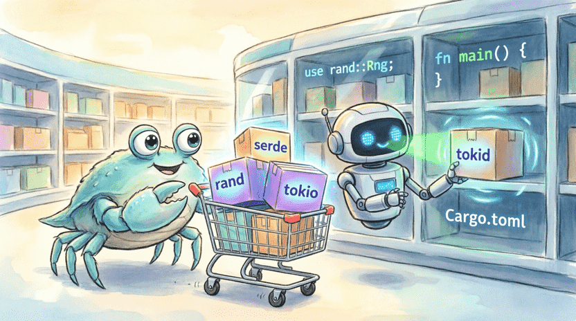
۱۴.۲. جستجو و انتخاب crate
۱۴.۲.۱. رفتن به سایت crates.io
مرورگرت را باز کن و برو به crates.io. در نوار جستجو هر چیزی که میخواهی را بنویس (مثلاً json یا image). لیستی از Crateها میآید.
۱۴.۲.۲. خواندن مستندات در docs.rs
هر Crate یک لینک به مستندات (Docs) دارد که معمولاً به آدرس https://docs.rs/اسم-crate میرود. آنجا مثل دفترچهی راهنمای یک اسباببازی است: توضیح میدهد چطور نصبش کنی، چه توابعی دارد و مثالهای آماده دارد. همیشه قبل از استفاده، یک نگاه به docs.rs بینداز! 📖
۱۴.۲.۳. معیارهای انتخاب یک crate خوب
چون هر کسی میتواند Crate منتشر کند، بعضیهایشان بهترند. به این چند تا چیز دقت کن:
🔹 تعداد دانلودها: هرچی بیشتر باشد، یعنی آدمهای بیشتری از آن راضیاند.
🔹 آخرین آپدیت: اگر سالهاست آپدیت نشده، ممکن است با نسخههای جدید Rust سازگار نباشد.
🔹 مستندات کامل: آیا مثال ساده دارد؟ آیا توابع توضیح داده شدهاند؟
🔹 لایسنس (مجوز): مطمئن شو مجوزش آزاد است (مثل MIT یا Apache-2.0).
۱۴.۲.۴. مثال: استفاده از rand
بیا یک مثال دیگر بزنیم: ساختن یک رنگ تصادفی RGB:
use rand::Rng;
fn main() {
let mut rng = rand::thread_rng();
let red = rng.gen_range(0..=255);
let green = rng.gen_range(0..=255);
let blue = rng.gen_range(0..=255);
println!("رنگ تصادفی: rgb({}, {}, {})", red, green, blue);
}هر بار اجرا کنی، یک رنگ جدید میبینی! 🎨
![[Illustration: A cartoon computer screen showing the docs.rs website for the “rand” crate. A magnifying glass hovers over a “Examples” section. Ferris stands beside taking notes with a pencil. Style: clean educational vector, bright colors, clear UI focus, 16:9.]](assets/images/14.2.png)
۱۴.۳. مدیریت نسخهها (SemVer)
۱۴.۳.۱. معناشناسی نسخه (Semantic Versioning)
شمارهی نسخهها در Rust سه قسمت دارد: MAJOR.MINOR.PATCH (مثلاً 1.2.3). این یک قرارداد جهانی است:
🔸 MAJOR (اصلی): وقتی عدد اول عوض میشود، یعنی تغییرات بزرگ و ناسازگار داده شده. (مثل بازی v1 که قوانینش با v2 کاملاً فرق میکند).
🔸 MINOR (فرعی): وقتی عدد وسط عوض میشود، یعنی قابلیت جدید اضافه شده ولی کدهای قبلی همچنان کار میکنند.
🔸 PATCH (وصله): وقتی عدد آخر عوض میشود، یعنی فقط باگها رفع شدهاند و هیچ چیزی خراب نمیشود. 🐛➡️✅
۱۴.۳.۲. انواع عملگرهای نسخه در Cargo.toml
در Cargo.toml میتوانی دقیقتر بگویی چه نسخههایی را قبول داری:
| نوشتن در TOML | معنی |
|---|---|
"0.9.0" | دقیقاً نسخهی 0.9.0 (یا معادل ^0.9.0) |
"^0.9.0" | هر نسخهای که سازگار باشد (یعنی 0.9.x که x >= 0). حالت پیشفرض کارگو همین است. |
"~0.9.0" | فقط 0.9.x (اجازه تغییر MINOR را نمیدهد). |
"*" | هر نسخهای! (توصیه نمیشود چون ممکن است یکهو برنامهات خراب شود). |
💡 برای شروع، همان "0.9.0" یا "0.9" کافی و امن است.
۱۴.۳.۳. قفل کردن نسخه با Cargo.lock
وقتی اولین بار cargo build را میزنی، کارگو یک فایل به اسم Cargo.lock میسازد. این فایل دقیقاً یادداشت میکند که امروز چه نسخهای از هر Crate نصب شد.
اگر پروژهات را به دوستت بدهی، او هم Cargo.lock را داشته باشد، دقیقاً همان نسخههایی را نصب میکند که تو نصب کردی. اینطوری برنامهی هیچکس بدون دلیل خراب نمیشود! 🔒📝
![[Illustration: A cartoon receipt labeled “Cargo.lock” with exact version numbers listed (rand = 0.9.0, ferris-says = 0.3.0). A friendly robot stamps it “LOCKED”. Ferris holds the receipt next to a shopping bag. Style: playful metaphor, educational, soft lighting, 16:9.]](assets/images/14.3.png)
۱۴.۴. بهروزرسانی وابستگیها
۱۴.۴.۱. cargo update
بعد از یک مدت، ممکن است Crateهایی که استفاده میکنی آپدیت شوند. برای اینکه کارگو برود و نسخههای جدیدترِ سازگار را چک و نصب کند، بزن:
cargo update
این دستور Cargo.lock را آپدیت میکند، ولی Cargo.toml را دست نمیزند.
۱۴.۴.۲. cargo outdated (ابزار خارجی)
اگر کنجکاو باشی بدانی کدام Crateها نسخهی اصلی (Major) جدید دارند، میتوانی یک ابزار کمکی نصب کنی:
cargo install cargo-outdated
cargo outdated
یک جدول خوشگل به تو نشان میدهد که کدامها قدیمی شدهاند. 📊
![[Illustration: A cartoon terminal window showing a colorful table with crate names, current versions, and newer available versions. Ferris points to a row with an upward arrow indicating an update. Style: modern tech illustration, clear and bright, 16:9.]](assets/images/14.4.png)
۱۴.۵. ساختن اولین crate خودمان
۱۴.۵.۱. ایجاد پروژه کتابخانه
حالا که قرض گرفتن را یاد گرفتیم، چرا خودمان یک ابزار نسازیم؟ یک پروژهی کتابخانهای (نه برنامهی اجرایی) میسازیم:
cargo new my_math --lib
cd my_math
کارگو این بار به جای main.rs یک فایل src/lib.rs میسازد. اینجا نقطهی شروع کتابخانهی تو است! 📚
۱۴.۵.۲. نوشتن کد در lib.rs
در lib.rs چند تابع ساده مینویسیم:
#![allow(unused)]
fn main() {
//! این یک کتابخانهی ساده برای عملیات ریاضی است.
/// دو عدد صحیح را با هم جمع میکند.
///
/// # مثال
///
/// ```
/// let result = my_math::add(2, 3);
/// assert_eq!(result, 5);
/// ```
pub fn add(a: i32, b: i32) -> i32 {
a + b
}
/// دو عدد صحیح را از هم کم میکند.
pub fn subtract(a: i32, b: i32) -> i32 {
a - b
}
}۱۴.۵.۳. مستندات با /// و //!
🔹 //! در ابتدای فایل: برای توضیح کل کتابخانه است.
🔹 /// قبل از تابع/struct: برای توضیح همان آیتم خاص است.
💡 متن داخل /// میتواند Markdown باشد. کدهای داخل بلوک ````rust حتی توسط cargo test اجرا میشوند تا مطمئن شویم مثالهایمان همیشه درست کار میکنند!
۱۴.۵.۴. ساختن مستندات محلی با cargo doc
برای دیدن مستنداتت در مرورگر، فقط کافی است بزنی:
cargo doc --open
یک صفحهی حرفهای شبیه docs.rs باز میشود که توضیحات خودت در آن است! ببین چقدر قشنگ شده؟ 🌟
۱۴.۵.۵. آماده کردن برای انتشار (اختیاری)
اگر روزی خواستی کتابخانهات را بگذاری روی crates.io تا همه استفاده کنند:
۱. در crates.io حساب بساز و یک توکن بگیر.
۲. در ترمینال cargo login بزن و توکن را بگذار.
۳. مطمئن شو Cargo.toml اطلاعات لازم را دارد (description, license, authors).
۴. دستور جادویی را بزن: cargo publish 🚀
(البته برای تمرین لازم نیست واقعاً منتشر کنی!)
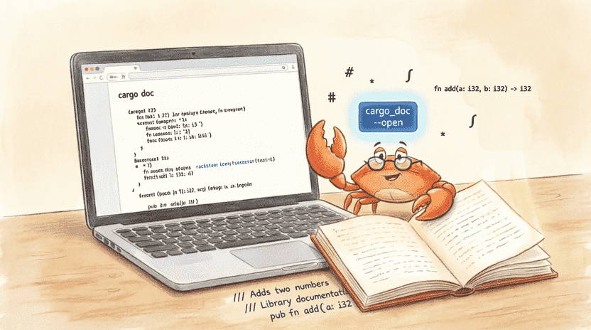
۱۴.۶. پروژه: استفاده از ferris-says
۱۴.۶.۱. اضافه کردن ferris-says
بیا یک Crate بامزه و سرگرمکننده را امتحان کنیم که تصویر فریس را با یک پیام چاپ میکند. در Cargo.toml یک پروژهی جدید بنویس:
[dependencies]
ferris-says = "0.3"
۱۴.۶.۲. نوشتن برنامه با فریم خرچنگ
کد زیر را در main.rs بنویس:
use ferris_says::say;
use std::io::{stdout, BufWriter};
fn main() {
let message = String::from("سلام رفقا! من فریس هستم 🦀");
let width = message.chars().count();
let mut writer = BufWriter::new(stdout());
say(&message, width, &mut writer).unwrap();
}وقتی cargo run بزنی، خروجی چیزی شبیه این میشود:
____________________________
< سلام رفقا! من فریس هستم 🦀 >
----------------------------
\
\
_~^~^~_
\) / o o \ (/
'_ - _'
/ '-----' \
بامزه است، نه؟ حالا میتوانی هر پیامی که دوست داری را جایگزین کنی! 🎤
![[Illustration: A cartoon terminal window displaying the exact ASCII art output of the ferris-says crate. Ferris the crab sits next to the screen waving, with speech bubbles containing the same message. Style: playful, tech-meets-art, bright and cheerful, 16:9.]](assets/images/14.6.png)
۱۴.۷. جمعبندی و چالش
۱۴.۷.۱. مرور مفاهیم
در این فصل یاد گرفتی:
✅ crates.io: فروشگاه بزرگ کتابخانههای Rust.
✅ Cargo.toml: جایی که وابستگیها را مینویسیم ([dependencies]).
✅ SemVer: قانون نسخهبندی MAJOR.MINOR.PATCH.
✅ Cargo.lock: قفل کردن نسخهها برای اطمینان از ساخت یکسان.
✅ cargo update و cargo outdated: مدیریت بهروزرسانی.
✅ ساخت کتابخانه: با cargo new --lib و فایل lib.rs.
✅ مستندات: با /// و cargo doc.
✅ به اشتراک گذاشتن کد با دیگران یعنی تو بخشی از خانوادهی بزرگ Rust هستی – یک قدم بزرگ به سوی جادوگر کامپیوتر شدن! 🧙
🧠 گاهی بعضی چیزها سخت است، و این اشکالی ندارد!
مدیریت وابستگیها و انتخاب نسخه مناسب ممکن است در ابتدا کمی گیجکننده به نظر برسد. نگران نباش – کارگو بیشتر کارها را خودش انجام میدهد. با کمی تمرین، اضافه کردن یک crate جدید برایت مثل آب خوردن میشود.
۱۴.۷.۲. چالش: ساختن یک crate کوچک به نام pig_latin
یک کتابخانه به اسم pig_latin بساز که یک تابع عمومی to_pig_latin(word: &str) -> String داشته باشد. این تابع یک کلمهی انگلیسی را به زبان خوکی (Pig Latin) تبدیل کند:
🔸 اگر با حرف بیصدا شروع شود: حرف اول برود آخر و "ay" اضافه شود. ("hello" → "ellohay")
🔸 اگر با حرف صدادار (a, e, i, o, u) شروع شود: فقط "hay" به آخر اضافه شود. ("apple" → "applehay")
سپس یک پروژهی اجرایی جداگانه بساز و این کتابخانه را به آن اضافه کن و چند کلمه را تست کن.
💡 راهنمایی وابستگی محلی: در Cargo.toml پروژهی اجرایی بنویس:
[dependencies]
pig_latin = { path = "../pig_latin" }
💡 پاسخ نمونه برای تابع:
#![allow(unused)]
fn main() {
pub fn to_pig_latin(word: &str) -> String {
let vowels = ['a', 'e', 'i', 'o', 'u', 'A', 'E', 'I', 'O', 'U'];
let mut chars = word.chars();
if let Some(first_char) = chars.next() {
if vowels.contains(&first_char) {
format!("{}-hay", word)
} else {
format!("{}-{}ay", chars.as_str(), first_char)
}
} else {
String::new()
}
}
}حالا تو هم میدانی چطور از کتابخانههای آماده استفاده کنی و هم میدانی چطور کتابخانهی خودت را بسازی و با دیگران به اشتراک بگذاری. در فصل بعد، با Smart Pointers آشنا میشویم: ابزارهایی مثل Box، Rc و RefCell که به ما اجازه میدهند دادهها را هوشمندانهتر مدیریت کنیم. 📦🧠✨
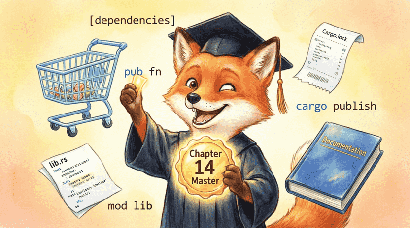
سرزمین راست: ماجراهای فریس خرچنگ فضایی
فصل ۱۵: راز جعبههای تو در تو (Smart Pointers)
📑 فهرست فصل
۱۵.۱. جعبهی هدیه (Box
۱۵.۱.۱. داستان: کادوی بزرگ در جعبهی کوچک
۱۵.۱.۲. Box
۱۵.۱.۳. استفاده ساده از Box
۱۵.۱.۴. کاربرد: ساختارهای بازگشتی (لیست پیوندی)
۱۵.۱.۵. تمرین: Box برای trait object
۱۵.۲. کتاب اشتراکی کتابخانه (Rc
۱۵.۲.۱. داستان: کتابی که چند نفر همزمان میخوانند
۱۵.۲.۲. Rc
۱۵.۲.۳. ساختن Rc و clone کردن
۱۵.۲.۴. شمارش ارجاعها
۱۵.۲.۵. محدودیت: فقط خواندنی و تکرشته
۱۵.۲.۶. تمرین: Rc با چندین صاحب
۱۵.۲.۷. مشکل حلقهی حافظه و راه حل Weak
۱۵.۳. دفترچه یادداشت گروهی (RefCell
۱۵.۳.۱. داستان: دفترچهای که همه میتوانند در آن بنویسند
۱۵.۳.۲. RefCell
۱۵.۳.۳. borrow و borrow_mut
۱۵.۳.۴. قانونشکنی در زمان اجرا
۱۵.۳.۵. ترکیب Rc و RefCell
۱۵.۳.۶. تمرین: Rc<RefCell
۱۵.۴. پروژه: سیستم سادهی گراف
۱۵.۴.۱. تعریف Node
۱۵.۴.۲. ساخت گراف با Rc<RefCell
۱۵.۴.۳. اضافه کردن یال
۱۵.۴.۴. پیمایش ساده و هشدار حلقه
۱۵.۵. جمعبندی و چالش
۱۵.۵.۱. مرور مفاهیم
۱۵.۵.۲. چالش: لیست دوطرفه با Rc<RefCell
۱۵.۱. جعبهی هدیه (Box)
۱۵.۱.۱. داستان: کادوی بزرگ در جعبهی کوچک
فریس یک کادوی خیلی بزرگ و سنگین دارد که نمیتواند راحت جابهجایش کند. 🎁 ولی یک جعبهی مقوایی کوچک و سبک پیدا میکند. کادو را میگذارد درون جعبه، و حالا فقط کافی است آن جعبهی سبک را بردارد!
در کامپیوتر هم دو جای نگهداری داریم:
🔹 Stack (پیشخوان میز کار): خیلی سریع است، ولی جای آن کم است. فقط چیزهای کوچک را نگه میدارد.
🔹 Heap (انبار بزرگ): جای زیادی دارد، ولی رفتوآمد در آن یکم کندتر است.
وقتی دادهمان بزرگ است، میفرستیمش به Heap و فقط یک آدرس کوچک (مثل بارکد) را روی Stack نگه میداریم. Box<T> دقیقاً همان جعبهی مقوایی است که این کار را برایمان انجام میدهد! 📦✨
۱۵.۱.۲. Box چیست؟
Box<T> یک اشارهگر هوشمند است که دادهی نوع T را میبرد در Heap ذخیره کند. وقتی Box از بین برود (مثلاً از تابع خارج شویم)، دادهی داخل Heap هم خودکار پاک میشود.
سه کاربرد اصلی دارد:
۱. ذخیرهی دادههای بزرگ بدون اشغال کردن Stack.
۲. ساخت ساختارهای بازگشتی (مثل لیستهای زنجیرهای).
۳. نگه داشتن Trait Objectها (که بعداً میبینیم).
۱۵.۱.۳. استفاده ساده از Box
fn main() {
let b = Box::new(5); // عدد ۵ میرود در Heap، آدرسش روی Stack میماند
println!("مقدار داخل جعبه: {}", b); // مثل یک عدد معمولی ازش استفاده میکنیم
}۱۵.۱.۴. کاربرد: ساختارهای بازگشتی (لیست پیوندی)
فرض کن میخواهیم یک قطار بسازیم که هر واگن به واگن بعدی وصل شود. در Rust نمیتوانیم یک struct بنویسیم که مستقیم خودش را داخل خودش داشته باشد (چون اندازهاش نامحدود میشود!). اما با Box که اندازهاش ثابت است، مشکلی نداریم:
enum List {
Cons(i32, Box<List>), // یک عدد + اشارهگر به ادامهی قطار
Nil, // واگن آخر (خالی)
}
use List::{Cons, Nil};
fn main() {
let train = Cons(1, Box::new(Cons(2, Box::new(Cons(3, Box::new(Nil))))));
}۱۵.۱.۵. تمرین: Box برای trait object
یک Trait به اسم Draw با متد draw(&self) بساز. دو struct Circle و Square برای آن بنویس. بعد یک Vec<Box<dyn Draw>> بساز و شکلها را در آن بریز و draw هر کدام را صدا بزن.
💡 پاسخ:
trait Draw { fn draw(&self); }
struct Circle;
impl Draw for Circle { fn draw(&self) { println!("○ دایره کشیده شد!"); } }
struct Square;
impl Draw for Square { fn draw(&self) { println!("□ مربع کشیده شد!"); } }
fn main() {
let shapes: Vec<Box<dyn Draw>> = vec![Box::new(Circle), Box::new(Square)];
for shape in shapes { shape.draw(); }
}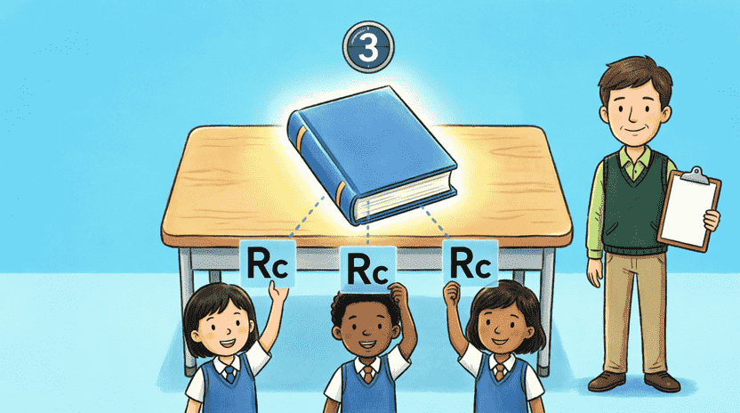
۱۵.۲. کتاب اشتراکی کتابخانه (Rc)
۱۵.۲.۱. داستان: کتابی که چند نفر همزمان میخوانند
در کتابخانهی فریس، یک کتاب خیلی معروف است. چند نفر میخواهند همزمان امانتش بگیرند. در Rust معمولی هر مقدار فقط یک صاحب دارد، ولی با Rc<T> (مخفف Reference Counted) میتوانیم چندین صاحب همزمان داشته باشیم. Rc میشمارد چند نفر کتاب را دستشان گرفتهاند. وقتی آخرین نفر کتاب را پس بدهد، کتاب خودکار به قفسه برمیگردد (حافظه پاک میشود). 📚🔢
۱۵.۲.۲. Rc چیست؟
Rc<T> یک اشارهگر هوشمند با شمارش ارجاع است. هر بار که یک Rc جدید از آن میسازی، یک شمارندهی مخفی یکی اضافه میشود. وقتی یک Rc از بین برود، شمارنده کم میشود. به صفر که برسد، داده پاک میشود.
برای استفاده باید واردش کنیم: use std::rc::Rc;
۱۵.۲.۳. ساختن Rc و clone کردن
#![allow(unused)]
fn main() {
let a = Rc::new(5); // شمارنده = ۱
let b = Rc::clone(&a); // شمارنده = ۲ (دقت کن: داده کپی نمیشود، فقط شمارنده زیاد میشود)
let c = Rc::clone(&a); // شمارنده = ۳
}۱۵.۲.۴. شمارش ارجاعها
میتوانیم تعداد قرضگیرندهها را ببینیم:
#![allow(unused)]
fn main() {
let book = Rc::new(String::from("کتاب جادویی"));
println!("تعداد قرضگیرندهها: {}", Rc::strong_count(&book)); // ۱
let reader = Rc::clone(&book);
println!("تعداد قرضگیرندهها: {}", Rc::strong_count(&book)); // ۲
}۱۵.۲.۵. محدودیت: فقط خواندنی و تکرشته
⚠️ Rc فقط اجازه میدهد داده را ببینی (قرض غیرقابل تغییر). اگر بخواهی تغییرش دهی باید با RefCell ترکیبش کنی.
⚠️ همچنین Rc فقط برای برنامههای تکرشتهای امن است. برای برنامههای چندرشتهای از پسرعموش Arc استفاده میکنیم.
۱۵.۲.۶. تمرین: Rc با چندین صاحب
یک struct به اسم Book با فیلد title بساز. سه Rc<Book> بساز که همگی به یک کتاب اشاره کنند. عنوان را چاپ کن و تعداد ارجاعها را نشان بده.
💡 پاسخ:
use std::rc::Rc;
struct Book { title: String }
fn main() {
let book = Rc::new(Book { title: String::from("ماجراهای فریس") });
let r1 = Rc::clone(&book);
let r2 = Rc::clone(&book);
println!("عنوان: {}", book.title);
println!("خوانندهها: {}", Rc::strong_count(&book)); // ۳
}۱۵.۲.۷. مشکل حلقهی حافظه و راه حل Weak
تا اینجا همه چیز خوب است، ولی یک تله وجود دارد! اگر با Rc یک حلقه درست کنیم (مثلاً گره A به B اشاره کند و B هم به A)، شمارندهها هیچوقت به صفر نمیرسند. این یعنی حافظهی آن گرهها تا آخر برنامه نشتی میدهد (memory leak). 😟
برای حل این مشکل، Rust یک اشارهگر هوشمند دیگر به اسم Weak<T> دارد. Weak هم مثل Rc است با این تفاوت که شمارندهی اصلی را زیاد نمیکند (شمارندهی ضعیف دارد). برای تبدیل Rc به Weak از Rc::downgrade استفاده میکنیم.
در پروژههایی مثل گرافهای دوطرفه یا لیستهای پیوندی دوطرفه، از Weak برای یکی از جهتها استفاده میکنیم تا حلقه شکسته شود. نگران نباشید – در انتهای فصل در چالش به آن اشاره میکنیم و در فصلهای پیشرفتهتر بیشتر میبینیمش.
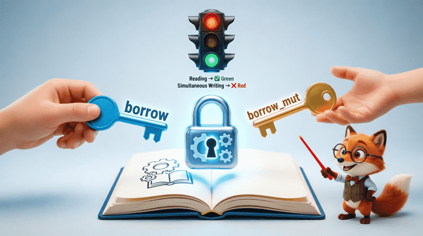
۱۵.۳. دفترچه یادداشت گروهی (RefCell)
۱۵.۳.۱. داستان: دفترچهای که همه میتوانند در آن بنویسند
بچههای کتابخانه یک دفترچهی مشترک دارند. همه میتوانند بخوانندش، ولی وقتی کسی میخواهد در آن بنویسد، باید مطمئن شود هیچکس دیگر همان لحظه ندارد مینویسد یا نمیخواند. در Rust این قانون معمولاً هنگام کامپایل چک میشود، ولی RefCell<T> این چک را میگذارد برای زمان اجرا. اگر کسی قانون را بشکند، برنامه با یک panic! مودبانه متوقف میشود. 📓✍️
۱۵.۳.۲. RefCell چیست؟
RefCell<T> یک اشارهگر هوشمند است که اجازه میدهد از یک دادهی بهظاهر ثابت، بهصورت تغییرپذیر قرض بگیری، به شرطی که در زمان اجرا فقط یک نفر همزمان در حال نوشتن باشد.
ورودش: use std::cell::RefCell;
۱۵.۳.۳. borrow و borrow_mut
🔹 .borrow() → یک مرجع معمولی (&T) میدهد (فقط خواندن).
🔹 .borrow_mut() → یک مرجع تغییرپذیر (&mut T) میدهد (خواندن + نوشتن).
#![allow(unused)]
fn main() {
let x = RefCell::new(5);
{
let mut y = x.borrow_mut(); // قفل نوشتن باز شد
*y += 10;
} // قفل بسته شد
println!("مقدار: {}", x.borrow()); // ۱۵
}۱۵.۳.۴. قانونشکنی در زمان اجرا
اگر همزمان دو تا borrow_mut بخواهی، برنامه متوقف میشود:
#![allow(unused)]
fn main() {
let x = RefCell::new(5);
let a = x.borrow_mut();
let b = x.borrow_mut(); // ❌ panic! دو نفر همزمان نمیتوانند بنویسند
}کامپایلر اینجا خطایی نمیگیرد، پس خودت باید حواست جمع باشد!
۱۵.۳.۵. ترکیب Rc و RefCell
جادوی واقعی وقتی اتفاق میافتد که این دو تا را ترکیب کنیم: Rc<RefCell<T>>. اینطوری چند نفر میتوانند یک داده را ببینند و هر کدام (به نوبت) تغییرش دهند:
#![allow(unused)]
fn main() {
use std::rc::Rc;
use std::cell::RefCell;
use std::ops::AddAssign;
let shared = Rc::new(RefCell::new(0));
Rc::clone(&shared).borrow_mut().add_assign(5); // +۵
Rc::clone(&shared).borrow_mut().add_assign(3); // +۳
println!("نهایی: {}", shared.borrow()); // ۸
}۱۵.۳.۶. تمرین: Rc<RefCell>
یک عدد 10 از نوع Rc<RefCell<i32>> بساز. دو تابع add_two و multiply_by_three بنویس که هر کدام روی همان عدد کار کنند. در نهایت مقدار را چاپ کن.
💡 پاسخ:
fn add_two(num: &Rc<RefCell<i32>>) { *num.borrow_mut() += 2; }
fn multiply_by_three(num: &Rc<RefCell<i32>>) { *num.borrow_mut() *= 3; }
fn main() {
let n = Rc::new(RefCell::new(10));
add_two(&n);
multiply_by_three(&n);
println!("نتیجه: {}", n.borrow()); // ۳۶
}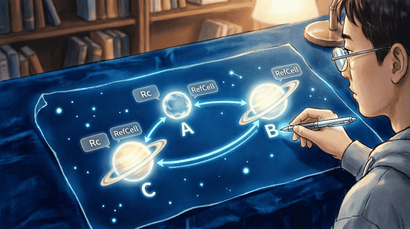
۱۵.۴. پروژه: سیستم سادهی گراف
حالا بیا همهی این جعبهها را بگذاریم کنار هم و یک نقشهی فضایی بسازیم! گراف مجموعهای از گرههاست که میتوانند به هم وصل شوند. 🌌🔗
۱۵.۴.۱. تعریف Node
#![allow(unused)]
fn main() {
use std::rc::Rc;
use std::cell::RefCell;
#[derive(Debug)]
struct Node {
name: String,
neighbors: Vec<Rc<RefCell<Node>>>,
}
}۱۵.۴.۲. ساخت گراف با Rc<RefCell>
fn main() {
let a = Rc::new(RefCell::new(Node { name: "سیاره الف".into(), neighbors: vec![] }));
let b = Rc::new(RefCell::new(Node { name: "سیاره ب".into(), neighbors: vec![] }));
let c = Rc::new(RefCell::new(Node { name: "سیاره ج".into(), neighbors: vec![] }));
// الف به ب و ج وصل است
a.borrow_mut().neighbors.push(Rc::clone(&b));
a.borrow_mut().neighbors.push(Rc::clone(&c));
// ب هم به الف وصل است (راه دوطرفه)
b.borrow_mut().neighbors.push(Rc::clone(&a));
println!("همسایههای الف: {:?}", a.borrow().neighbors.iter().map(|n| &n.borrow().name).collect::<Vec<_>>());
}۱۵.۴.۳. اضافه کردن یال
میتوانیم یک تابع کمکی بسازیم تا وصل کردن گرهها راحتتر شود:
#![allow(unused)]
fn main() {
fn add_edge(from: &Rc<RefCell<Node>>, to: &Rc<RefCell<Node>>) {
from.borrow_mut().neighbors.push(Rc::clone(to));
}
}۱۵.۴.۴. پیمایش ساده و هشدار حلقه
⚠️ هشدار مهم: اگر در گراف حلقه (Cycle) باشد، پیمایش ساده ممکن است تا ابد ادامه پیدا کند! برای پیمایش امن باید یک HashSet از گرههای دیدهشده نگه داریم.
⚠️ نشتی حافظه: اگر گراف دارای حلقه باشد و همهی اتصالات با Rc باشند، حافظهی آن گرهها هیچوقت آزاد نمیشود (همان مشکل بخش ۱۵.۲.۷). برای ساختن گرافهای حرفهای، باید از Weak برای برخی یالها استفاده کنیم. فعلاً نگران نباش – این فصل مقدمهای بر این مفاهیم است.
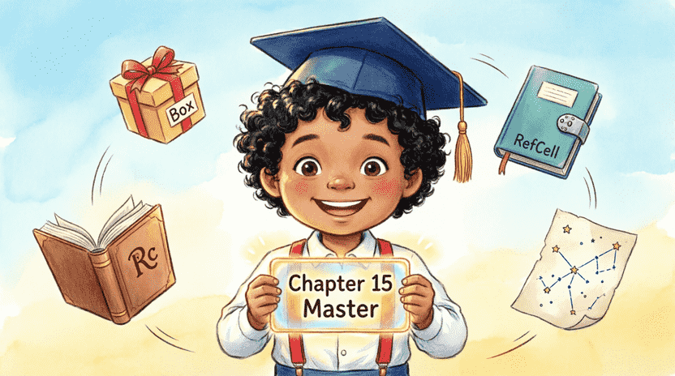
۱۵.۵. جمعبندی و چالش
۱۵.۵.۱. مرور مفاهیم
| ابزار | کاربرد اصلی | محدودیت مهم |
|---|---|---|
Box<T> | فرستادن داده به Heap، ساختار بازگشتی | فقط یک صاحب دارد |
Rc<T> | چند صاحب همزمان (تکرشته) | فقط خواندنی؛ خطر نشتی در حلقهها |
Weak<T> | شکستن حلقههای Rc | برای دسترسی باید به upgrade تبدیل شود |
RefCell<T> | تغییر داده از طریق مرجع ثابت | قوانین قرضدهی در زمان اجرا چک میشود |
Rc<RefCell<T>> | چند صاحب + قابلیت تغییر (نوبتی) | خطر Panic در صورت نقض قانون + خطر نشتی حلقه |
۱۵.۵.۲. چالش: لیست دوطرفه با Rc<RefCell> و آشنایی با Weak
یک لیست پیوندی دوطرفه بساز. هر گره فیلدهای prev و next داشته باشد. از Option<Rc<RefCell<Node>>> استفاده کن.
💡 نکتهی حرفهای: در دنیای واقعی، اگر از Rc هم برای prev و هم next استفاده کنی، یک حلقهی حافظه (Memory Leak) درست میشود. راه حل استاندارد این است که برای prev از Weak<RefCell<Node>> استفاده کنی. شکل نهایی چنین چیزی خواهد بود:
#![allow(unused)]
fn main() {
use std::rc::{Rc, Weak};
use std::cell::RefCell;
struct Node {
value: i32,
next: Option<Rc<RefCell<Node>>>,
prev: Option<Weak<RefCell<Node>>>,
}
}فعلاً اگر فقط با Rc تمرین کنی، اشکالی ندارد – ولی بدان که برای کدنویسی واقعی باید از Weak استفاده کرد. اگر خواستی میتوانی همین حالا Weak را جایگزین کنی و با upgrade به آن دسترسی پیدا کنی. 🧠
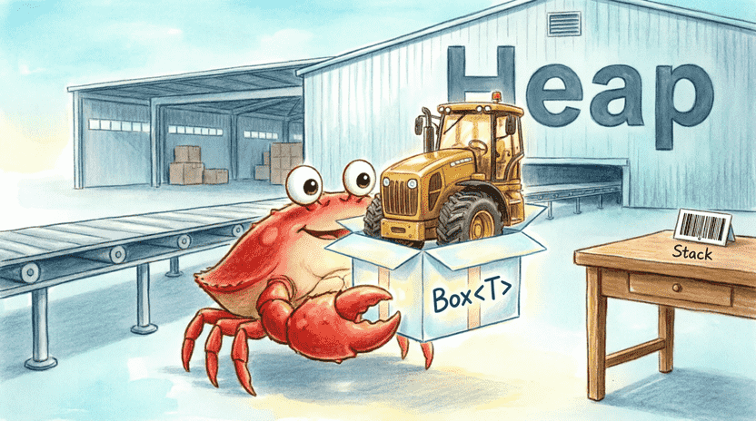
سرزمین راست: ماجراهای فریس خرچنگ فضایی
فصل ۱۶: دستههای مورچه (همروندی)
📑 فهرست فصل
۱۶.۱. چطور یک لشکر مورچه یک برگ را جابجا میکنند؟ (Threads)
۱۶.۱.۱. داستان: مورچهها و برگ بزرگ
۱۶.۱.۲. ریسه (Thread) چیست؟
۱۶.۱.۳. ایجاد ریسه با thread::spawn
۱۶.۱.۴. منتظر ماندن با join
۱۶.۱.۵. تمرین: دو ریسه همزمان
۱۶.۲. انتقال داده بین ریسهها
۱۶.۲.۱. حرکت دادن مالکیت با move
۱۶.۲.۲. کانال (mpsc) برای ارسال پیام
۱۶.۲.۳. فرستادن چند پیام
۱۶.۲.۴. دریافت غیرمسدود با try_recv
۱۶.۲.۵. تمرین: تولیدکننده و مصرفکننده
۱۶.۳. راهروی باریک (Mutex)
۱۶.۳.۱. داستان: راهروی یک نفره
۱۶.۳.۲. Mutex
۱۶.۳.۳. قفل کردن و دسترسی
۱۶.۳.۴. به اشتراک گذاری بین ریسهها با Arc
۱۶.۳.۵. تمرین: شمارندهی اشتراکی
۱۶.۴. پروژه: شمارشگر همزمان با ریسهها
۱۶.۴.۱. بدون Mutex: مسابقه داده (Data Race)
۱۶.۴.۲. با Mutex: راهحل درست
۱۶.۴.۳. اجرا و مشاهده نتیجه
۱۶.۵. جمعبندی و چالش
۱۶.۵.۱. مرور مفاهیم
۱۶.۵.۲. چالش: تولیدکننده-مصرفکننده با صف
۱۶.۱. چطور یک لشکر مورچه یک برگ را جابجا میکنند؟ (Threads)
۱۶.۱.۱. داستان: مورچهها و برگ بزرگ
تا حالا دقت کردهای یک مورچهی تنها نمیتواند یک برگ بزرگ را تکان دهد؟ 🍃 ولی وقتی هزاران مورچه با هم همکاری میکنند، آن برگ مثل یک قایق سبک روی دوششان حرکت میکند. هر مورچه یک گوشه را گرفته و همزمان با بقیه زور میزند.
در دنیای کامپیوتر، به این مورچههای کوشا میگوییم ریسه (Thread). با استفاده از ریسهها میتوانیم چند تا کار را همزمان انجام دهیم و برنامههایمان را سریعتر و قدرتمندتر کنیم.
یادگیری همروندی یعنی میتوانی از قدرت واقعی کامپیوترهای چند هستهای استفاده کنی – گامی بزرگ به سوی جادوگر کامپیوتر شدن! 🧙♂️
۱۶.۱.۲. ریسه (Thread) چیست؟
یک ریسه مثل یک کارگر کوچک داخل برنامهی تو است. برنامهی اصلی تو (تابع main) خودش یک ریسه است (به آن میگوییم ریسهی اصلی). تو میتوانی به ریسهی اصلی بگویی: «برو چند تا کارگر جدید استخدام کن و کارها را بینشان تقسیم کن!» همهی این کارگرها میتوانند همزمان کار کنند.
در Rust، ماژول std::thread تمام ابزارهای لازم را در اختیارمان میگذارد. 🛠️
۱۶.۱.۳. ایجاد ریسه با thread::spawn
برای ساختن یک ریسهی جدید، از thread::spawn استفاده میکنیم. این تابع یک Closure (همان کولهپشتی جادویی فصل ۱۳) میگیرد و آن را در یک ریسهی جداگانه اجرا میکند:
use std::thread;
use std::time::Duration;
fn main() {
// استخدام یک کارگر جدید
thread::spawn(|| {
for i in 1..10 {
println!("🐜 مورچه شماره {} دارد کار میکند", i);
thread::sleep(Duration::from_millis(100)); // یک کم استراحت
}
});
// ریسه اصلی هم کار خودش را میکند
for i in 1..5 {
println!("👑 ریسه اصلی: {}", i);
thread::sleep(Duration::from_millis(50));
}
}thread::sleep باعث میشود ریسه برای چند میلیثانیه بخوابد تا بتوانی ببینی چطور همزمان اجرا میشوند.
۱۶.۱.۴. منتظر ماندن با join
اگر ریسهی اصلی کارش زودتر تمام شود، ممکن است برنامه بسته شود و بقیهی مورچهها هم کارشان را نیمهکاره رها کنند! برای جلوگیری از این اتفاق، از join استفاده میکنیم. join یعنی: «صبر کن تا این ریسه کارش تمام شود، بعد برو مرحلهی بعد.»
#![allow(unused)]
fn main() {
let handle = thread::spawn(|| {
println!("ریسه جدید شروع به کار کرد...");
// کارهای طولانی
});
handle.join().unwrap(); // اینجا صبر میکنیم تا ریسه تمام شود
println!("همه کارها تمام شد!");
}۱۶.۱.۵. تمرین: دو ریسه همزمان
دو ریسهی جداگانه بساز که هر کدام اعداد ۱ تا ۵ را با سرعتهای متفاوت چاپ کنند. از join برای هر دو استفاده کن تا ریسهی اصلی منتظر بماند.
💡 پاسخ نمونه:
use std::thread;
use std::time::Duration;
fn main() {
let h1 = thread::spawn(|| {
for i in 1..=5 {
println!("🐜 مورچه ۱: {}", i);
thread::sleep(Duration::from_millis(80));
}
});
let h2 = thread::spawn(|| {
for i in 1..=5 {
println!("🐜 مورچه ۲: {}", i);
thread::sleep(Duration::from_millis(50));
}
});
h1.join().unwrap();
h2.join().unwrap();
println!("✅ همه مورچهها کارشان را تمام کردند!");
}![[Illustration: Cartoon illustration of a giant leaf being carried by a team of cute worker ants. One ant wears a crown labeled “Main Thread”, others wear small hard hats labeled “Thread 1”, “Thread 2”. Above them, a progress bar fills up. Background: grassy field with soft sunlight. Style: vibrant children’s book, educational metaphor, friendly characters, 16:9.]](assets/images/16.1.png)
👨👩👧 نکته برای والدین و مربیان
همروندی یکی از پیشرفتهترین مباحث برنامهنویسی است. این فصل فقط مفاهیم پایه را معرفی میکند. اگر کودک در درکArcیاMutexمشکل داشت، نگران نباشید – این ابزارها در پروژههای حرفهای استفاده میشوند و تسلط به زمان نیاز دارد. کتاب رسمی Rust فصل کاملی دربارهی همروندی دارد:
doc.rust-lang.org/book/ch16-00-concurrency.html
۱۶.۲. انتقال داده بین ریسهها
۱۶.۲.۱. حرکت دادن مالکیت با move
مورچهها برای اینکه بدانند برگ را به کدام سمت ببرند، باید با هم حرف بزنند. در Rust، وقتی یک Closure را به ریسه میدهیم، باید مالکیت متغیرهایش را به آن منتقل کنیم. این کار را با کلمهی move انجام میدهیم:
#![allow(unused)]
fn main() {
let food = vec!["شکر", "نان", "عسل"];
let handle = thread::spawn(move || {
println!("ریسه دارد غذاها را حمل میکند: {:?}", food);
});
handle.join().unwrap();
// println!("{:?}", food); // ❌ خطا! غذاها دیگر مال ریسه است
}با move، ریسه مالک داده میشود و ریسهی اصلی دیگر نمیتواند از آن استفاده کند.
۱۶.۲.۲. کانال (mpsc) برای ارسال پیام
یک راه عالی برای حرف زدن ریسهها، کانال (Channel) است. کانال مثل یک لولهی زیرزمینی است که از یک طرف میتوانی چیزی بیندازی در آن (فرستنده) و از طرف دیگر برداری (گیرنده).mpsc مخفف multiple producer, single consumer است. یعنی چند نفر میتوانند پیام بفرستند، ولی فقط یک نفر گوش میدهد.
use std::sync::mpsc;
use std::thread;
fn main() {
let (tx, rx) = mpsc::channel(); // ساخت لولهی ارتباطی
thread::spawn(move || {
let message = String::from("سلام از طرف مورچه!");
tx.send(message).unwrap(); // انداختن در لوله
});
let received = rx.recv().unwrap(); // برداشتن از لوله
println!("پیام دریافت شد: {}", received);
}🔹 tx (فرستنده): میتوانی clone بگیری و به چند ریسه بدهی.
🔹 rx (گیرنده): متد recv منتظر میماند تا پیام بیاید.
۱۶.۲.۳. فرستادن چند پیام
میتوانی چند پیام پشت سر هم بفرستی و در طرف مقابل با یک حلقهی for همهشان را بگیری:
#![allow(unused)]
fn main() {
let (tx, rx) = mpsc::channel();
thread::spawn(move || {
let messages = vec!["برو بالا", "برو پایین", "ایست!"];
for msg in messages {
tx.send(msg.to_string()).unwrap();
thread::sleep(Duration::from_millis(200));
}
});
for received in rx {
println!("📢 دستور: {}", received);
}
}حلقهی for روی rx تا وقتی ادامه پیدا میکند که همهی فرستندهها بسته شوند.
۱۶.۲.۴. دریافت غیرمسدود با try_recv
اگر نخواهی گیرنده منتظر بماند و بخواهی فوراً ببینی پیامی هست یا نه، از try_recv استفاده کن:
#![allow(unused)]
fn main() {
match rx.try_recv() {
Ok(msg) => println!("پیام آمد: {}", msg),
Err(_) => println!("هنوز پیامی نیامده، میروم سراغ کارهای دیگر..."),
}
}۱۶.۲.۵. تمرین: تولیدکننده و مصرفکننده
یک ریسه بساز که اعداد ۱ تا ۱۰ را از طریق کانال بفرستد. ریسهی اصلی آنها را دریافت کند و جمعشان را حساب کند.
💡 پاسخ:
use std::sync::mpsc;
use std::thread;
fn main() {
let (tx, rx) = mpsc::channel();
thread::spawn(move || {
for i in 1..=10 {
tx.send(i).unwrap();
}
});
let sum: i32 = rx.iter().sum();
println!("مجموع اعداد: {}", sum); // ۵۵
}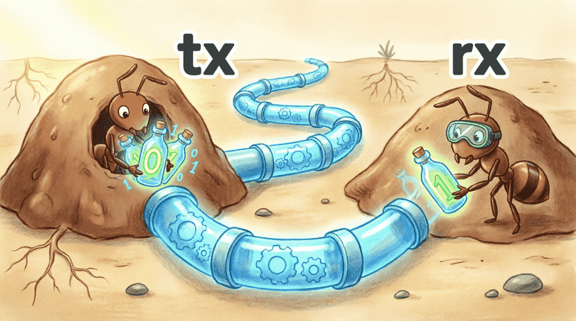
۱۶.۳. راهروی باریک (Mutex)
۱۶.۳.۱. داستان: راهروی یک نفره
تصور کن چند مورچه میخواهند همزمان از یک راهروی خیلی باریک رد شوند. اگر همه با هم بروند، گیر میکنند! راه حل چیست؟ یک قفل دم در میگذارند. هر بار فقط یک مورچه میتواند وارد شود، قفل را میزند، کارش را انجام میدهد و موقع خروج قفل را باز میکند تا نفر بعدی بیاید.
در برنامهنویسی، Mutex (مخفف Mutual Exclusion) دقیقاً همان قفل راهرو است.
۱۶.۳.۲. Mutex چیست؟
Mutex<T> یک جعبهی هوشمند است که داده را قفل میکند. برای دسترسی به آن، اول باید lock() را صدا بزنی. وقتی کارت تمام شد، قفل خودکار باز میشود.
use std::sync::Mutex;
fn main() {
let counter = Mutex::new(0);
{
let mut num = counter.lock().unwrap(); // گرفتن کلید قفل
*num += 1; // تغییر مقدار
} // کلید اینجا خودکار رها میشود
println!("مقدار نهایی: {:?}", counter); // ۱
}۱۶.۳.۳. قفل کردن و دسترسی
اگر یک ریسه قفل را گرفته باشد و ریسهی دیگری هم lock() بخواهد، آن ریسهی دوم مسدود میشود و صبر میکند تا قفل آزاد شود. اینطوری هیچوقت دو ریسه همزمان یک چیز را تغییر نمیدهند و دادهها خراب نمیشوند. 🛡️
۱۶.۳.۴. به اشتراک گذاری بین ریسهها با Arc
برای اینکه چند ریسه بتوانند به یک Mutex دسترسی داشته باشند، باید مالکیتش را به اشتراک بگذارند. در فصل ۱۵ با Rc آشنا شدی که برای تکریسه بود. برای چند ریسه، از پسرعموی امنش یعنی Arc (Atomic Reference Counting – شمارش ارجاع اتمی) استفاده میکنیم. Arc مخفف «شمارش ارجاع اتمی» است و در محیط چندریسه امن کار میکند.
use std::sync::{Arc, Mutex};
use std::thread;
fn main() {
let counter = Arc::new(Mutex::new(0)); // دفترچهی مشترک قفلدار
let mut handles = vec![];
for _ in 0..10 {
let counter = Arc::clone(&counter); // یک کپی از اشارهگر
let handle = thread::spawn(move || {
let mut num = counter.lock().unwrap(); // گرفتن نوبت نوشتن
*num += 1;
});
handles.push(handle);
}
for h in handles { h.join().unwrap(); }
println!("نتیجه: {}", *counter.lock().unwrap()); // ۱۰
}📌 فرمول طلایی: Arc = اشتراک مالکیت بین ریسهها، Mutex = نوبتدهی برای نوشتن. ترکیبشان: Arc<Mutex<T>>!
۱۶.۳.۵. تمرین: شمارندهی اشتراکی
برنامهای بنویس که ۱۰۰۰ ریسه بسازد. هر ریسه باید ۱۰۰۰ بار یک شمارندهی مشترک را یکی زیاد کند. از Arc<Mutex<u32>> استفاده کن. در پایان، نتیجه باید دقیقاً ۱,۰۰۰,۰۰۰ باشد.
💡 پاسخ نمونه:
use std::sync::{Arc, Mutex};
use std::thread;
fn main() {
let counter = Arc::new(Mutex::new(0));
let mut handles = vec![];
for _ in 0..1000 {
let c = Arc::clone(&counter);
let h = thread::spawn(move || {
for _ in 0..1000 {
let mut val = c.lock().unwrap();
*val += 1;
}
});
handles.push(h);
}
for h in handles { h.join().unwrap(); }
println!("نتیجه نهایی: {}", *counter.lock().unwrap());
}![[Illustration: A narrow cartoon hallway with a large padlock on the door. One ant holds a golden key labeled “Mutex Guard”, walking inside. Other ants wait politely in line with numbered tickets. A glowing clipboard labeled “Arc” hangs on the wall. Style: clear educational metaphor, bright, friendly, children’s book, 16:9.]](assets/images/16.3.png)
۱۶.۴. پروژه: شمارشگر همزمان با ریسهها
۱۶.۴.۱. بدون Mutex: مسابقه داده (Data Race)
در Rust اگر بخواهی بدون Mutex یک داده را بین چند ریسه تغییر دهی، کامپایلر اصلاً اجازه نمیدهد کد کامپایل شود! مثلاً Rc برای چند ریسه امن نیست و اگر استفاده کنی، خطا میگیری.
این یکی از قدرتهای خارقالعادهی Rust است: جلوی مسابقهی داده (Data Race) را در زمان کامپایل میگیرد. پس لازم نیست نگران باگهای عجیب و غریب باشی! 🛡️✨
۱۶.۴.۲. با Mutex: راهحل درست
همان کد تمرین ۱۶.۳.۵ راهحل استاندارد و امن است. فقط کافی است Arc::clone را درست استفاده کنی و قبل از حلقهی join، مطمئن شوی همهی handleها ذخیره شدهاند.
۱۶.۴.۳. اجرا و مشاهده نتیجه
برنامه را چند بار اجرا کن. میبینی که همیشه دقیقاً 1000000 چاپ میشود. هیچوقت عدد کم یا زیاد نمیشود. این یعنی Rust دارد عالی کار میکند! 🎉
![[Illustration: A split illustration. Left side: two ants trying to write on the same small notebook at the same time, causing a chaotic mess labeled “Data Race ❌”. Right side: ants taking turns using a clipboard with a lock, result shows a perfect checkmark “1,000,000 ✅”. Ferris stands in the middle giving a thumbs up. Style: educational vector, clear contrast, bright colors, 16:9.]](assets/images/16.4.png)
۱۶.۵. جمعبندی و چالش
۱۶.۵.۱. مرور مفاهیم
| مفهوم | کاربرد | ایموجی |
|---|---|---|
thread::spawn | ساخت یک ریسهی جدید برای کار همزمان | 🧵 |
join | صبر کردن تا تمام شدن کار ریسه | ⏳ |
move | انتقال مالکیت متغیر به داخل ریسه | 🎒 |
mpsc::channel | لولهی ارتباطی امن بین ریسهها | 📮 |
Mutex<T> | قفل برای دسترسی نوبتی به داده | 🔒 |
Arc<T> | اشتراک مالکیت امن بین چند ریسه | 🤝 |
🧠 گاهی بعضی چیزها سخت است، و این اشکالی ندارد!
همروندی (مخصوصاً ترکیبArcوMutex) یکی از چالشبرانگیزترین مباحث برنامهنویسی است. حتی برنامهنویسان حرفهای هم گاهی در قفلها و بنبستها گیر میکنند. اگر هنوز همهچیز برایت روشن نیست، نگران نباش – با تمرین روی پروژههای کوچک، کمکم مسلط میشوی. مهم این است که بدانی Rust با ابزارهایش از تو در برابر وحشتناکترین باگهای همروندی محافظت میکند.
۱۶.۵.۲. چالش: تولیدکننده-مصرفکننده با صف
یک برنامه بنویس که ۳ ریسهی تولیدکننده بسازد. هر کدام ۱۰ عدد تصادفی تولید کنند و از طریق یک کانال مشترک بفرستند. ریسهی اصلی (مصرفکننده) همهی اعداد را جمع کند و نتیجه نهایی را چاپ کند.
💡 راهنمایی:
txرا قبل از شروع حلقهcloneکن.- بعد از ساخته شدن همهی ریسهها،
txاصلی راdropکن تا کانال بسته شود و حلقهیrxتمام شود. - وابستگی
randرا درCargo.tomlاضافه کن:[dependencies] rand = "0.9.0"
💡 پاسخ نمونه:
use std::sync::mpsc;
use std::thread;
use std::time::Duration;
use rand::Rng;
fn main() {
let (tx, rx) = mpsc::channel();
let mut handles = vec![];
for id in 0..3 {
let tx_clone = tx.clone();
let h = thread::spawn(move || {
let mut rng = rand::thread_rng();
for _ in 0..10 {
let num = rng.gen_range(1..100);
tx_clone.send(num).unwrap();
thread::sleep(Duration::from_millis(10));
}
});
handles.push(h);
}
drop(tx); // بستن فرستندهی اصلی
let sum: i32 = rx.iter().sum();
println!("مجموع نهایی: {}", sum);
for h in handles { h.join().unwrap(); }
}حالا تو میدانی چطور از قدرت مورچهها (ریسهها) برای انجام چند کار همزمان استفاده کنی، چطور بینشان پیام بفرستی و چطور با قفلها از دادههایت محافظت کنی. 🐜⚡
در فصل بعد، میبینیم که Rust چطور مفاهیم شیءگرایی را به سبک منحصربهفرد خودش پیادهسازی میکند. آمادهای؟ 🦀✨
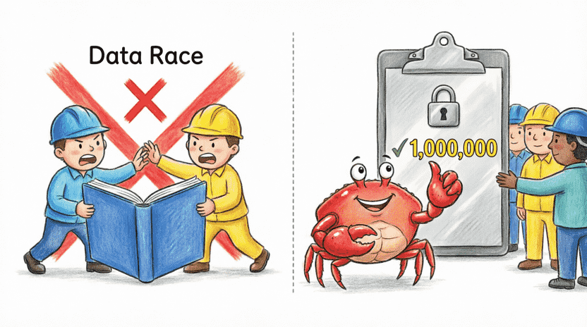
سرزمین راست: ماجراهای فریس خرچنگ فضایی
فصل ۱۷: آیا Rust یک ربات ترنسفورمر است؟ (شیگرایی به سبک Rust)
📑 فهرست فصل
۱۷.۱. رباتهای سنتی (Inheritance)
۱۷.۱.۱. داستان: ربات پدر و ربات پسر
۱۷.۱.۲. ارثبری در زبانهای دیگر (مثل جاوا)
۱۷.۱.۳. مشکلات ارثبری
۱۷.۲. روش Rust (Composition & Traits)
۱۷.۲.۱. ترکیب (Composition) به جای ارثبری
۱۷.۲.۲. اشتراک رفتار با Traits
۱۷.۲.۳. تفاوت Rust با ارثبری سنتی
۱۷.۲.۴. تمرین: trait Sound و پیادهسازی برای چند نوع
۱۷.۳. پروژه: شبیهسازی یک بازی ساده
۱۷.۳.۱. تعریف trait Attack
۱۷.۳.۲. تعریف struct Health
۱۷.۳.۳. تعریف structهای Warrior, Mage, Archer
۱۷.۳.۴. پیادهسازی Attack برای هر کدام
۱۷.۳.۵. استفاده از trait object (Box
۱۷.۴. جمعبندی و چالش
۱۷.۴.۱. مرور مفاهیم
۱۷.۴.۲. چالش: trait Movable
۱۷.۱. رباتهای سنتی (Inheritance)
۱۷.۱.۱. داستان: ربات پدر و ربات پسر
در خیلی از کارخانههای اسباببازی، وقتی میخواهند یک ربات جدید بسازند، اول یک «ربات پدر» میسازند که کارهای پایه مثل راه رفتن و حرف زدن را بلد باشد. بعد میگویند: «ربات پسر همان کارها را بلد است، فقط بال هم دارد!» این روش که بچه همهی ویژگیهای پدر را به ارث میبرد، در برنامهنویسی ارثبری (Inheritance) نامیده میشود. 🤖👨👦
۱۷.۱.۲. ارثبری در زبانهای دیگر (مثل جاوا)
در زبانهایی مثل جاوا یا ++C، این کار خیلی رایج است:
// مثال فرضی از زبان جاوا
class Robot {
void walk() { /* راه رفتن */ }
}
class FlyingRobot extends Robot {
void fly() { /* پرواز کردن */ }
}
حالا FlyingRobot هم walk را دارد (چون از پدرش گرفته) و هم fly را. در نگاه اول خیلی قشنگ است، اما…
۱۷.۱.۳. مشکلات ارثبری
ارثبری چند تا مشکل بزرگ دارد که Rust عمداً از آن فرار کرده است:
🔸 سلسلهمراتب خشک: اگر بعداً بخواهیم رباتی بسازیم که هم پرواز کند هم شنا کند، باید از دو پدر ارثبری کند که باعث سردرگمی میشود (مشکل الماس!).
🔸 ارثبری ناخواسته: اگر یک «پنگوئن» از کلاس «پرنده» ارثبری کند، متد fly را هم به ارث میبرد در حالی که پنگوئن اصلاً نمیتواند پرواز کند!
🔸 شکنندگی: اگر مهندس ربات پدر یک تغییر کوچک بدهد، ممکن است ناگهان کد ربات پسر خراب شود.
Rust میگوید: «به جای سلسلهمراتب سفتوسخت، بیایید با قطعات لگو (Composition) و گواهینامههای مهارت (Traits) کار کنیم!» 🧩✨
این رویکرد یعنی تو به جای تقلید کورکورانه، میتوانی رفتارها را مثل قطعات یک جعبه ابزار ترکیب کنی – یک جادوگر کامپیوتر چنین میکند. 🧙♂️
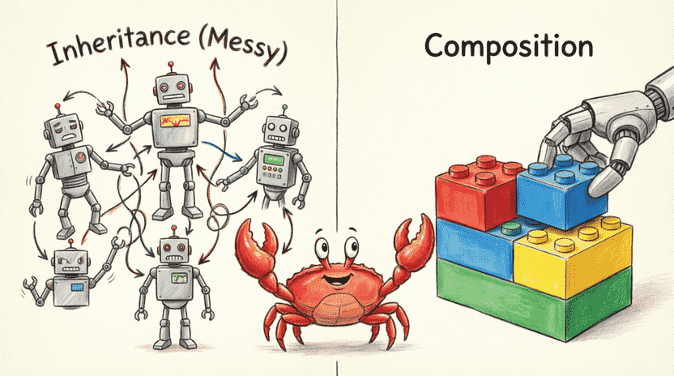
۱۷.۲. روش Rust (Composition & Traits)
۱۷.۲.۱. ترکیب (Composition) به جای ارثبری
در Rust به جای اینکه بگوییم «ربات جنگجو نوعی ربات است»، میگوییم «ربات جنگجو دارای یک موتور، یک شمشیر و یک سپر است». به این میگوییم ترکیب (Composition):
#![allow(unused)]
fn main() {
struct Engine; // موتور
struct Sword; // شمشیر
struct Shield; // سپر
struct CombatRobot {
engine: Engine,
weapon: Sword,
shield: Shield,
}
}اگر بعداً بخواهیم ربات پرنده بسازیم، فقط کافی است یک قطعهی Wing به آن اضافه کنیم. نیازی به تغییر کل سلسلهمراتب نیست. ترکیب مثل ساختن اسباببازی با لگو است: آزادی عمل کامل! 🧱
۱۷.۲.۲. اشتراک رفتار با Traits
اما اگر چند ربات مختلف بخواهند یک کار مشترک انجام دهند چه؟ مثلاً همگی بخواهند آژیر بکشند؟ اینجا Trait وارد میشود. Trait مثل یک گواهینامهی مهارت است که میگوید: «این ربات بلد است آژیر بزند.»
#![allow(unused)]
fn main() {
trait MakeSound {
fn make_sound(&self);
}
struct Dog;
impl MakeSound for Dog {
fn make_sound(&self) { println!("هاپ! هاپ!"); }
}
struct Car;
impl MakeSound for Car {
fn make_sound(&self) { println!("بوق بوق!"); }
}
}حالا هر کدام به روش خودش صدا میدهد، ولی هر دو گواهینامهی MakeSound را دارند! 🏅
۱۷.۲.۳. تفاوت Rust با ارثبری سنتی
🔹 در Rust میتوانی برای یک نوع، هر تعداد Trait که دوست داری پیادهسازی کنی.
🔹 هیچ سلسلهمراتب اجباری وجود ندارد.
🔹 دقیقاً مشخص است هر قطعه چه قابلیتی دارد، نه اینکه یک بستهی بزرگ و گیجکننده را به ارث ببری.
۱۷.۲.۴. تمرین: trait Sound و پیادهسازی برای چند نوع
یک Trait به اسم Sound با متد make_sound(&self) تعریف کن. برای Cat، Cow و Phone پیادهسازیاش کن. بعد در یک Vec<Box<dyn Sound>> بریزشان و صدایشان را در بیاور.
💡 پاسخ نمونه:
trait Sound { fn make_sound(&self); }
struct Cat; impl Sound for Cat { fn make_sound(&self) { println!("میو! 🐱"); } }
struct Cow; impl Sound for Cow { fn make_sound(&self) { println!("مــاـاـا! 🐮"); } }
struct Phone; impl Sound for Phone { fn make_sound(&self) { println!("زنگ زنگ! 📱"); } }
fn main() {
let things: Vec<Box<dyn Sound>> = vec![
Box::new(Cat),
Box::new(Cow),
Box::new(Phone),
];
for thing in things { thing.make_sound(); }
}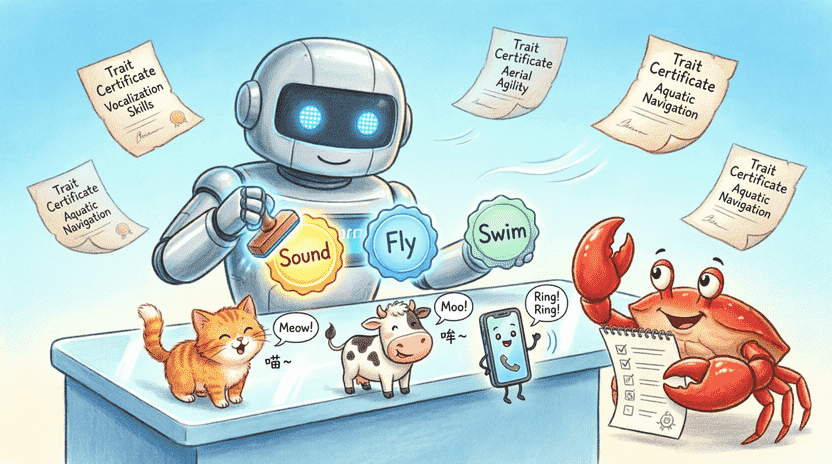
۱۷.۳. پروژه: شبیهسازی یک بازی ساده
حالا بیا اینها را در یک بازی نقشآفرینی کوچک تست کنیم! 🎮⚔️
۱۷.۳.۱. تعریف trait Attack
اول یک گواهینامه میسازیم که بگوید «هر چیزی که این را داشته باشد، میتواند حمله کند»:
#![allow(unused)]
fn main() {
trait Attack {
fn attack(&self, target: &mut Health);
}
}۱۷.۳.۲. تعریف struct Health
یک ساختار ساده برای سلامتی (Health) که فقط یک عدد hp دارد و میتواند آسیب ببیند:
#![allow(unused)]
fn main() {
#[derive(Debug)]
struct Health { hp: i32 }
impl Health {
fn new(hp: i32) -> Self { Health { hp } }
fn take_damage(&mut self, damage: i32) {
self.hp -= damage;
if self.hp < 0 { self.hp = 0; }
}
fn is_alive(&self) -> bool { self.hp > 0 }
}
}۱۷.۳.۳. تعریف structهای Warrior, Mage, Archer
سه قهرمان متفاوت میسازیم:
#![allow(unused)]
fn main() {
struct Warrior { power: i32 }
struct Mage { mana: i32 }
struct Archer { arrows: i32 }
}۱۷.۳.۴. پیادهسازی Attack برای هر کدام
هر کدام به سبک خودش حمله میکند:
#![allow(unused)]
fn main() {
impl Attack for Warrior {
fn attack(&self, target: &mut Health) {
println!("⚔️ جنگجو با قدرت {} ضربه زد!", self.power);
target.take_damage(self.power);
}
}
impl Attack for Mage {
fn attack(&self, target: &mut Health) {
let damage = self.mana / 2;
println!("🔮 جادوگر با {} آسیب طلسم کرد!", damage);
target.take_damage(damage);
}
}
impl Attack for Archer {
fn attack(&self, target: &mut Health) {
let damage = self.arrows;
println!("🏹 کماندار {} تیر پرتاب کرد!", damage);
target.take_damage(damage);
}
}
}۱۷.۳.۵. استفاده از trait object (Box<dyn Attack>)
حالا میخواهیم یک لشکر از قهرمانهای مختلف داشته باشیم و به یک دشمن حمله کنیم. چون اندازهی Warrior، Mage و Archer با هم فرق دارد، نمیتوانیم مستقیم در یک آرایه بگذاریمشان. راه حل؟ استفاده از Trait Object و Box:
fn main() {
let mut enemy = Health::new(80); // دشمن با ۸۰ جان
let heroes: Vec<Box<dyn Attack>> = vec![
Box::new(Warrior { power: 25 }),
Box::new(Mage { mana: 40 }),
Box::new(Archer { arrows: 15 }),
];
for hero in heroes {
hero.attack(&mut enemy);
println!("وضعیت دشمن: {:?}", enemy);
if !enemy.is_alive() {
println!("💀 دشمن شکست خورد!");
break;
}
}
}📌 نکتهی مهم: dyn Attack یعنی «در این جعبه، هر چیزی که Trait را داشته باشد میتوانی بگذاری». Box آن را میبرد در حافظهی پویا (heap) تا اندازهاش مهم نباشد. اینطوری میتوانیم انواع مختلف را در یک لیست نگه داریم و یکجا روی آنها حلقه بزنیم! 🎉
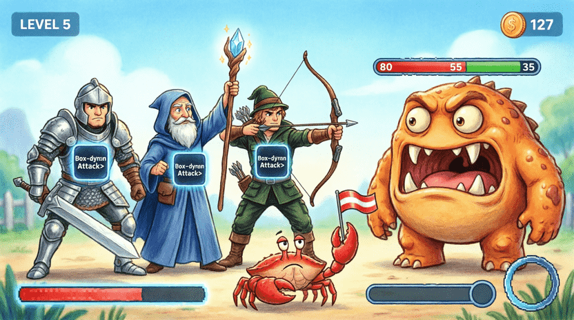
۱۷.۴. جمعبندی و چالش
۱۷.۴.۱. مرور مفاهیم
✅ Rust ارثبری کلاسمحور ندارد.
✅ به جای آن از ترکیب (Composition) برای دادهها و Traits برای رفتارها استفاده میکند.
✅ Box<dyn Trait> به ما اجازه میدهد انواع مختلفی که یک Trait مشترک دارند را کنار هم در یک کالکشن ذخیره کنیم.
✅ این روش برنامهها را منعطفتر، ایمنتر و تمیزتر از ارثبری سنتی میکند.
🧠 گاهی بعضی چیزها سخت است، و این اشکالی ندارد!
درک تفاوت بین ترکیب و ارثبری ممکن است در ابتدا کمی انتزاعی به نظر برسد. حتی توسعهدهندگان باتجربه هم گاهی بحث میکنند که کدام روش مناسبتر است. مهم این است که بدانی Rust به تو آزادی میدهد بدون اینکه تو را مجبور به ساخت سلسلهمراتب خشک کند. با تمرین روی پروژههای کوچک، این مفهوم برایت شفاف میشود.
۱۷.۴.۲. چالش: trait Movable
یک Trait به اسم Movable با متد move_forward(&self) تعریف کن. برای سه ساختار Bicycle، Car و Boat این Trait را پیادهسازی کن (مثلاً دوچرخه چرخها را میچرخاند، ماشین موتور روشن میکند، قایق پارو میزند). سپس یک تابع start_journey بنویس که یک آرایه از &dyn Movable دریافت کند و از هر کدام بخواهد حرکت کند.
💡 پاسخ نمونه:
trait Movable { fn move_forward(&self); }
struct Bicycle; impl Movable for Bicycle { fn move_forward(&self) { println!("🚲 چرخها میچرخند..."); } }
struct Car; impl Movable for Car { fn move_forward(&self) { println!("🚗 موتور روشن شد، بریم!"); } }
struct Boat; impl Movable for Boat { fn move_forward(&self) { println!("⛵ پاروها در آب میخورند..."); } }
fn start_journey(things: &[&dyn Movable]) {
for thing in things { thing.move_forward(); }
}
fn main() {
let bike = Bicycle; let car = Car; let boat = Boat;
let travelers: [&dyn Movable; 3] = [&bike, &car, &boat];
start_journey(&travelers);
}حالا تو فهمیدی که Rust چطور بدون ارثبری سنتی، مفاهیم شیگرایی را به شکلی امن و انعطافپذیر پیادهسازی میکند. در فصل بعد، با الگوهای پیشرفته (Advanced Pattern Matching) آشنا میشویم و یاد میگیریم چطور مثل یک حرفهای، دادهها را از دل ساختارهای تو در تو بیرون بکشیم. 🕵️♂️✨
سرزمین راست: ماجراهای فریس خرچنگ فضایی
فصل ۱۸: نقشههای پیچیدهی گنج (Pattern Matching پیشرفته)
📑 فهرست فصل
۱۸.۱. پازلهای سخت: بیرون کشیدن از دل ساختارها
۱۸.۱.۱. داستان: جعبههای تو در تو
۱۸.۱.۲. تخریب (Destructuring) Struct
۱۸.۱.۳. تخریب Enum
۱۸.۱.۴. تخریب Tuple
۱۸.۱.۵. تخریب در حلقه for
۱۸.۱.۶. تمرین: تخریب یک Struct تو در تو
۱۸.۲. الگوهای نفی و شرط
۱۸.۲.۱. نادیده گرفتن با _ و ..
۱۸.۲.۲. شرط در الگو (Match Guard)
۱۸.۲.۳. عملگر @ برای Bind کردن
۱۸.۲.۴. الگوهای | (یا)
۱۸.۲.۵. تمرین: Match Guard برای اعداد
۱۸.۳. پروژه: پردازش دستورات یک بازی
۱۸.۳.۱. تعریف enum Command
۱۸.۳.۲. تابع parse_command
۱۸.۳.۳. اجرای دستور با match و guard
۱۸.۴. جمعبندی و چالش
۱۸.۴.۱. مرور مفاهیم
۱۸.۴.۲. چالش: استخراج از Option<Vec
۱۸.۱. پازلهای سخت: بیرون کشیدن از دل ساختارها
۱۸.۱.۱. داستان: جعبههای تو در تو
فریس یک نقشهی گنج قدیمی و خاکگرفته پیدا کرده است. 🗺️✨ ولی این نقشه یک رمز دارد: گنج در یک جعبه است، آن جعبه در یک صندوقچه است، صندوقچه در یک خزانهی بزرگ است و کلید خزانه هم پیش یک پرندهی فضایی است! فریس نمیتواند همهی این لایهها را یکی یکی باز کند؛ وقتش تلف میشود. خوشبختانه، فریس یک قدرت جادویی دارد: الگویابی (Pattern Matching). با یک حرکت سریع، میتواند کل ساختار را بشکند و گنج را مستقیم از دل جعبهها بیرون بکشد. در Rust به این کار تخریب (Destructuring) میگوییم. نترس، قرار نیست چیزی خراب شود! منظور فقط این است که ساختار را باز میکنیم تا به دادههای داخلش برسیم.
این یعنی تو میتوانی مثل یک کارآگاه حرفهای، هر ساختار پیچیدهای را تکهتکه کنی و به گنج درونش برسی – جادوگر کامپیوتر چنین قدرتی دارد! 🧙♂️
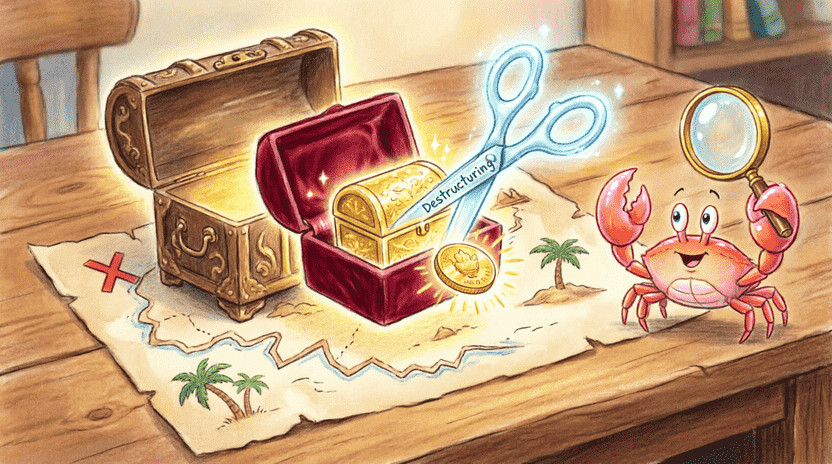
👨👩👧 نکته برای والدین و مربیان
الگوهای پیشرفته یکی از قدرتمندترین ویژگیهای Rust هستند که به کودکان کمک میکنند تا دادههای درون ساختارها را به زیبایی استخراج کنند. اگر کودک در درک@یا_مشکل داشت، نگران نباشید – در پروژههای بعدی بارها از آنها استفاده خواهد شد. کتاب رسمی Rust فصل کاملی دربارهی الگوها دارد:
doc.rust-lang.org/book/ch18-00-patterns.html
۱۸.۱.۲. تخریب (Destructuring) Struct
فرض کن یک struct به اسم Point داری که مختصات یک نقطه را نگه میدارد. میتوانی با یک خط کد، فیلدهایش را باز کنی و در متغیرهای جدید بریزی:
struct Point {
x: i32,
y: i32,
}
fn main() {
let p = Point { x: 10, y: 20 };
// روش کامل: اسم فیلد، دو نقطه، اسم متغیر جدید
let Point { x: a, y: b } = p;
println!("a = {}, b = {}", a, b);
// روش خلاصه: اگر اسم متغیر جدید با اسم فیلد یکی باشد
let Point { x, y } = p;
println!("x = {}, y = {}", x, y);
}اگر فقط به یکی از فیلدها نیاز داری و بقیه برایت مهم نیستند، میتوانی بقیه را با .. نادیده بگیری:
#![allow(unused)]
fn main() {
let Point { x, .. } = p; // فقط x را میگیرد، y را ول میکند
println!("فقط x = {}", x);
}۱۸.۱.۳. تخریب Enum
در فصل ۶ یاد گرفتی که enum میتواند حالتهای مختلفی داشته باشد. match بهترین ابزار برای باز کردن این حالتهاست. بیا یک enum پیامهای فضایی را ببینیم:
#![allow(unused)]
fn main() {
enum Message {
Quit, // بدون داده
Move { x: i32, y: i32 }, // یک struct ناشناس
Write(String), // یک رشته
ChangeColor(u8, u8, u8), // یک تاپل
}
fn process(msg: Message) {
match msg {
Message::Quit => println!("👋 خروج از برنامه"),
Message::Move { x, y } => println!("🚀 حرکت به سمت ({}, {})", x, y),
Message::Write(text) => println!("📝 نوشتن: {}", text),
Message::ChangeColor(r, g, b) => {
println!("🎨 تغییر رنگ به ({}, {}, {})", r, g, b);
}
}
}
}ببین چقدر راحت دادههای تو در تو را بیرون کشیدیم! match خودش میفهمد هر حالت چه شکلی است و دقیقاً همان چیزهایی که در آن است را به تو میدهد.
۱۸.۱.۴. تخریب Tuple
تاپلها هم خیلی راحت تخریب میشوند:
#![allow(unused)]
fn main() {
let t = (1, 2, 3);
let (x, y, z) = t;
println!("x={}, y={}, z={}", x, y, z);
}حتی میتوانی در پارامترهای یک تابع هم تاپل را همان اول باز کنی:
#![allow(unused)]
fn main() {
fn print_coordinates(&(x, y): &(i32, i32)) {
println!("مختصات: ({}, {})", x, y);
}
}۱۸.۱.۵. تخریب در حلقه for
این قابلیت در حلقههای for خیلی کاربرد دارد، مخصوصاً وقتی با HashMap کار میکنی:
#![allow(unused)]
fn main() {
let points = vec![(0, 0), (1, 2), (3, 4)];
for (x, y) in points {
println!("نقطهی بعدی: ({}, {})", x, y);
}
}هر بار که حلقه تکرار میشود، یک تاپل از لیست میآید بیرون، و (x, y) خودشان را میگذارند در مقادیرش. جادویی نیست، فقط Rust باهوش است! 😉
۱۸.۱.۶. تمرین: تخریب یک Struct تو در تو
یک struct به اسم Person با فیلدهای name: String و address: Address تعریف کن. Address خودش یک struct با فیلدهای city: String و zip: u32 است. یک نمونه Person بساز و با یک خط تخریب، هم name و هم city را مستقیم بیرون بکش و چاپ کن.
💡 پاسخ نمونه:
struct Address {
city: String,
zip: u32,
}
struct Person {
name: String,
address: Address,
}
fn main() {
let person = Person {
name: String::from("فریس"),
address: Address {
city: String::from("شهر کراب"),
zip: 12345,
},
};
// تخریب تودرتو: name را مستقیم میگیریم و از داخل address فقط city را
let Person { name, address: Address { city, .. } } = person;
println!("{} در شهر {} زندگی میکند.", name, city);
}💡 دقت کن: address: Address { city, .. } یعنی برو در فیلد address، آن را همانطور که از نوع Address انتظار داریم باز کن، ولی فقط city را بردار و بقیه را ول کن!
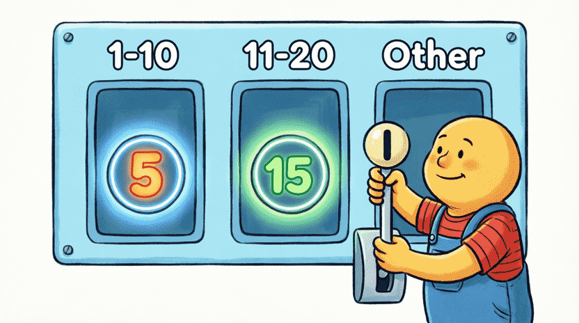
۱۸.۲. الگوهای نفی و شرط
گاهی وقتها هنگام الگویابی، میخواهیم یک سری چیزها را نادیده بگیریم یا فقط وقتی الگو جواب بدهد که یک شرط اضافه هم برقرار باشد. اینجاست که جادوی match کامل میشود! 🪄
۱۸.۲.۱. نادیده گرفتن با _ و ..
🔹 _ (زیرخط): مثل سطل زبالهی الگوهاست. هر چیزی که در آن بریزیم، نادیده گرفته میشود.
🔹 .. : بقیهی فیلدهای یک struct یا بقیهی اعضای یک تاپل/آرایه را ول میکند.
#![allow(unused)]
fn main() {
struct Point3D { x: i32, y: i32, z: i32 }
let p = Point3D { x: 1, y: 2, z: 3 };
let Point3D { x, .. } = p; // فقط x مهم است، y و z فرقی ندارند
let numbers = (1, 2, 3, 4, 5);
let (first, .., last) = numbers; // فقط اولین و آخرین
println!("اول: {}, آخر: {}", first, last);
}۱۸.۲.۲. شرط در الگو (Match Guard)
گاهی یک الگو به تنهایی کافی نیست. مثلاً میخواهی بگویی «اگر عدد زوج بود» یا «اگر طول رشته بیشتر از ۵ بود». این کار را با Match Guard انجام میدهیم: یک if که دقیقاً بعد از الگو میآید.
#![allow(unused)]
fn main() {
let num = Some(4);
match num {
Some(x) if x % 2 == 0 => println!("{} عدد زوج است!", x),
Some(x) => println!("{} عدد فرد است.", x),
None => println!("هیچ عددی وجود ندارد."),
}
}⚠️ ترتیب مهم است! اگر اول Some(x) را بدون if بنویسی، همیشه همان اجرا میشود و شرط هیچوقت چک نمیشود.
۱۸.۲.۳. عملگر @ برای Bind کردن
علامت @ (ات ساین) یک ابزار فوقالعاده است: همزمان که یک الگو را بررسی میکند، کل مقداری که با آن الگو جور شده را در یک متغیر ذخیره میکند.
مثلاً میخواهیم بدانیم یک عدد در محدودهی ۱ تا ۱۰ است یا نه، و همزمان خود عدد را هم داشته باشیم:
#![allow(unused)]
fn main() {
let x = 5;
match x {
num @ 1..=10 => println!("{} در محدودهی ۱ تا ۱۰ قرار دارد.", num),
_ => println!("{} خارج از محدوده است.", x),
}
}اینجا num همان مقدار x است، ولی فقط اگر در بازهی 1..=10 باشد وارد این شاخه میشود.
۱۸.۲.۴. الگوهای | (یا)
اگر چند تا الگو کار یکسانی انجام میدهند، لازم نیست برایشان شاخههای جدا بنویسی. میتوانی با | (خط عمودی) ترکیبشان کنی:
#![allow(unused)]
fn main() {
let x = 2;
match x {
1 | 2 => println!("یکی از اعداد ۱ یا ۲."),
3 => println!("عدد ۳."),
_ => println!("یک چیز دیگر."),
}
}۱۸.۲.۵. تمرین: Match Guard برای اعداد
برنامهای بنویس که یک عدد از کاربر بگیرد. با match و guard تشخیص بدهد که:
- اگر بین ۱ تا ۱۰ بود → چاپ کند «کوچک».
- اگر بین ۱۱ تا ۲۰ بود → چاپ کند «متوسط».
- در غیر این صورت → چاپ کند «بزرگ یا خارج از محدوده».
💡 پاسخ نمونه:
use std::io;
fn main() {
let mut input = String::new();
println!("یک عدد وارد کن:");
io::stdin().read_line(&mut input).unwrap();
let num: i32 = input.trim().parse().unwrap();
match num {
n if (1..=10).contains(&n) => println!("عدد {} کوچک است. 👶", n),
n if (11..=20).contains(&n) => println!("عدد {} متوسط است. 👦", n),
_ => println!("عدد {} بزرگ است یا اصلاً در محدوده نیست. 🌳", num),
}
}💡 (1..=10).contains(&n) یک راه تمیز برای چک کردن عضویت در یک بازه است!
۱۸.۳. پروژه: پردازش دستورات یک بازی
حالا وقتش است همهی این ابزارها را در یک پروژهی واقعی امتحان کنیم! 🎮 بیا یک سیستم فرمان ساده برای یک بازی متنی بسازیم. کاربر دستوراتی مثل /go north یا /attack dragon 50 تایپ میکند و برنامه آنها را میفهمد و اجرا میکند.
۱۸.۳.۱. تعریف enum Command
اول یک enum برای انواع دستورات ممکن تعریف میکنیم:
#![allow(unused)]
fn main() {
enum Command {
Go { direction: String },
Attack { target: String, power: u32 },
Quit,
}
}۱۸.۳.۲. تابع parse_command
یک تابع مینویسیم که رشتهی ورودی را تجزیه کند و یک Command برگرداند. ورودی را با فاصله (whitespace) تکهتکه میکنیم. همچنین اگر ورودی خالی بود یا فرمت اشتباه داشت، دستور Quit در نظر گرفته میشود.
#![allow(unused)]
fn main() {
fn parse_command(input: &str) -> Command {
let parts: Vec<&str> = input.trim().split_whitespace().collect();
// اگر کاربر هیچ چیزی وارد نکرده باشد
if parts.is_empty() {
return Command::Quit;
}
// اگر کاربر "/go north" نوشته باشد
if parts[0] == "/go" && parts.len() >= 2 {
Command::Go {
direction: parts[1].to_string(),
}
}
// اگر کاربر "/attack dragon 50" نوشته باشد
else if parts[0] == "/attack" && parts.len() >= 3 {
let power = parts[2].parse().unwrap_or(10); // اگر عدد نبود، ۱۰ در نظر بگیر
Command::Attack {
target: parts[1].to_string(),
power,
}
}
// اگر "/quit" یا هر چیز دیگری باشد
else {
Command::Quit
}
}
}۱۸.۳.۳. اجرای دستور با match و guard
حالا در main یک حلقه میگذاریم که دستورات را بگیرد و اجرا کند. از match با guard استفاده میکنیم تا برای حملههای خیلی قوی پیام مخصوص نشان بدهد:
use std::io;
use std::io::Write; // برای flush
fn main() {
println!("🎮 به بازی متنی فریس خوش آمدی!");
loop {
print!("\nفرمان خودت را بنویس (/go, /attack, /quit): ");
io::stdout().flush().unwrap(); // مطمئن میشویم پیام سریع چاپ شود
let mut input = String::new();
io::stdin().read_line(&mut input).unwrap();
let cmd = parse_command(&input);
match cmd {
Command::Go { direction } => {
println!("🚀 فریس به سمت {} حرکت کرد.", direction);
}
Command::Attack { target, power } if power > 30 => {
println!("💥 حملهی ویرانگر! {} با قدرت {} پودر شد!", target, power);
}
Command::Attack { target, power } => {
println!("⚔️ حمله به {} با قدرت {}. (هنوز زنده است!)", target, power);
}
Command::Quit => {
println!("👋 خداحافظ! بازی تمام شد.");
break;
}
}
}
}ببین چقدر تمیز شد! دیگر نیازی به if/else تو در تو نیست. match همهچیز را مثل یک نقشهی گنج باز میکند. 🗝️
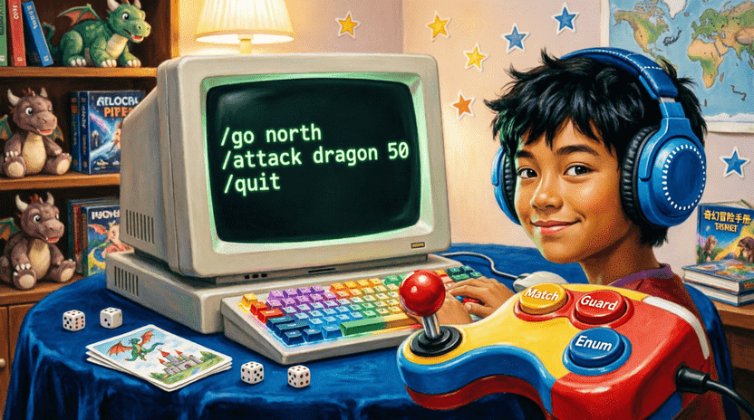
۱۸.۴. جمعبندی و چالش
۱۸.۴.۱. مرور مفاهیم
در این فصل یاد گرفتی:
✅ تخریب (Destructuring): بیرون کشیدن فیلدهای struct، enum و tuple با الگو.
✅ _ و ..: نادیده گرفتن بخشهایی از الگو وقتی بهشان نیاز نداری.
✅ Match Guard: اضافه کردن شرط if به بازوی match.
✅ @ Binding: ذخیرهی مقدار جور شده در یک متغیر حین بررسی الگو.
✅ |: ترکیب چند الگو در یک بازو برای جلوگیری از تکرار.
✅ این ابزارها تو را به یک کارآگاه داده تبدیل میکنند – یک جادوگر کامپیوتر واقعی! 🧙
🧠 گاهی بعضی چیزها سخت است، و این اشکالی ندارد!
تخریبهای تودرتو و match guard ممکن است در ابتدا کمی پیچیده به نظر برسند. نگران نباش – هر چه بیشتر از آنها در کدهات استفاده کنی، طبیعیتر میشوند. حتی برنامهنویسان حرفهای هم گاهی برای نوشتن یک الگوی پیچیده چند بار تلاش میکنند. مهم این است که بدانی Rust همیشه به تو میگوید کجا اشتباه کردهای.
۱۸.۴.۲. چالش: استخراج از Option<Vec<i32>>
یک تابع به اسم sum_first_two بنویس که یک Option<Vec<i32>> به عنوان ورودی بگیرد و:
- اگر
Someبود و وکتور حداقل ۳ عنصر داشت، مجموع دو عنصر اول را به صورتSome(i32)برگرداند. - اگر
Someبود ولی کمتر از ۳ عنصر داشت،Noneبرگرداند. - اگر
Noneبود،Noneبرگرداند.
💡 راهنمایی: میتوانی از یک match تودرتو یا یک match guard استفاده کنی.
💡 پاسخ نمونه:
fn sum_first_two(opt: Option<Vec<i32>>) -> Option<i32> {
match opt {
Some(vec) if vec.len() >= 3 => Some(vec[0] + vec[1]),
_ => None, // هم Some با طول کم و هم None را پوشش میدهد
}
}
fn main() {
let v1 = Some(vec![10, 20, 30, 40]);
let v2 = Some(vec![5, 15]);
let v3 = None;
println!("{:?}", sum_first_two(v1)); // Some(30)
println!("{:?}", sum_first_two(v2)); // None
println!("{:?}", sum_first_two(v3)); // None
}🔚 پایان فصل ۱۸
حالا تو یک استاد الگویابی شدهای و میتوانی پیچیدهترین ساختارهای داده را مثل آب خوردن باز کنی و از آنها استفاده کنی. 🧩✨
در فصل بعد، سری به اتاق موتور Rust میزنیم و با unsafe و ماکروها آشنا میشویم – ابزارهایی که فقط قهرمانهای حرفهای و ماجراجو از آنها استفاده میکنند! آمادهای برویم سراغ جادوی سیاه (ولی امن) برنامهنویسی؟ 🌙🔧
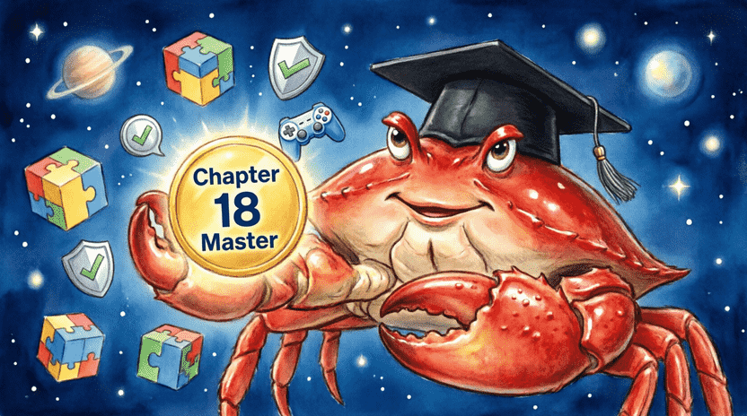
سرزمین راست: ماجراهای فریس خرچنگ فضایی
فصل ۱۹: موتور سفینه را باز کنیم! (Unsafe Rust و ماکروها)
📑 فهرست فصل
۱۹.۱. هشدار جدی: اینجا اتاق موتور است (unsafe)
۱۹.۱.۱. داستان: موتور داغ سفینه
۱۹.۱.۲. unsafe چیست؟
۱۹.۱.۳. کارهایی که در unsafe میتوان کرد
۱۹.۱.۴. مثال: اشارهگر خام (Raw Pointer)
۱۹.۱.۵. فراخوانی تابع unsafe
۱۹.۱.۶. تمرین: اصلاح یک اشارهگر خام
۱۹.۲. ساخت جادوی اختصاصی خودت (Macros)
۱۹.۲.۱. داستان: کلمهی جادویی فریس
۱۹.۲.۲. ماکرو چیست و چه فرقی با تابع دارد؟
۱۹.۲.۳. سادهترین ماکرو با macro_rules!
۱۹.۲.۴. ماکرو با پارامتر (ident)
۱۹.۲.۵. ماکرو با تعداد متغیر آرگومان
۱۹.۲.۶. ماکروهای پرکاربرد در Rust
۱۹.۲.۷. تمرین: ماکروی easy_vec!
۱۹.۳. پروژه: ساخت ماکروی repeat!
۱۹.۳.۱. هدف
۱۹.۳.۲. پیادهسازی repeat!
۱۹.۳.۳. تست ماکرو
۱۹.۴. جمعبندی و چالش
۱۹.۴.۱. مرور مفاهیم
۱۹.۴.۲. چالش: ماکروی create_function!
۱۹.۱. هشدار جدی: اینجا اتاق موتور است (unsafe)
۱۹.۱.۱. داستان: موتور داغ سفینه
در اعماق سفینهی فریس، یک در فلزی سنگین وجود دارد که روی آن با رنگ قرمز نوشته شده: ⛔ خطر! فقط برای مهندسهای ارشد. پشت این در، موتور اصلی سفینه کار میکند. دما آنجا بسیار بالاست و اگر کسی بدون آموزش وارد شود، ممکن است همهچیز منفجر شود! 💥
در دنیای Rust، بیشتر وقتها ما در بخشهای امن (Safe Rust) کار میکنیم، جایی که کامپایلر مثل یک نگهبان مهربان، همهی قوانین را چک میکند تا ما اشتباه نکنیم. ولی گاهی برای کارهای خیلی خاص (مثل صحبت مستقیم با سختافزار یا استفاده از کتابخانههای قدیمی زبان C)، مجبوریم وارد اتاق unsafe شویم.
یادگیری unsafe یعنی تو میفهمی قدرت واقعی Rust کجاست – اما مثل یک جادوگر دانا، فقط در مواقع ضروری از آن استفاده میکنی. 🧙♂️
👨👩👧 نکته برای والدین و مربیان
unsafeیکی از پیشرفتهترین موضوعات Rust است و به ندرت در برنامههای معمولی استفاده میشود. هدف این فصل آشنایی با وجود این قابلیت است، نه تشویق به استفاده از آن. کتاب رسمی Rust فصل کاملی دربارهیunsafeدارد:
doc.rust-lang.org/book/ch19-01-unsafe-rust.html
۱۹.۱.۲. unsafe چیست؟
unsafe یک کلیدواژه است که به کامپایلر میگوید: «رفیق، اینجا من خودم حواسم هست و مسئولیت رعایت ایمنی حافظه را قبول میکنم. لطفاً بررسیهایت را غیرفعال کن تا بتوانم کارم را انجام دهم.»
⚠️ نکتهی طلایی: unsafe به معنی «ناامن» نیست! یعنی کامپایلر قوانین عادی را اجرا نمیکند، ولی تو باید مثل یک مهندس حرفهای، خودت مراقب باشی که دادهها را خراب نکنی. فقط وقتی از آن استفاده کن که واقعاً چارهی دیگری نباشد!
#![allow(unused)]
fn main() {
unsafe {
// اینجا میتوانیم کارهای سطح پایین انجام دهیم
}
}۱۹.۱.۳. کارهایی که در unsafe میتوان کرد
داخل بلوک unsafe، پنج کار مجاز میشود که در کد معمولی ممنوع است:
🔹 دنبال کردن اشارهگرهای خام (*const T و *mut T)
🔹 صدا زدن توابع unsafe (معمولاً تابعهای زبان C)
🔹 تغییر متغیرهای سراسری قابل تغییر (static mut)
🔹 پیادهسازی Traitهای unsafe
🔹 دسترسی به فیلدهای union (اجتماع)
۱۹.۱.۴. مثال: اشارهگر خام (Raw Pointer)
در Rust معمولی، ما از & و &mut استفاده میکنیم که همیشه امن و معتبرند. اما اشارهگرهای خام (*const T و *mut T) میتوانند به هر آدرسی اشاره کنند (حتی به آدرس صفر یا null). کامپایلر نمیتواند چک کند این آدرس معتبر است یا نه، پس فقط در unsafe اجازه داریم محتوای داخل آن را بخوانیم یا تغییر دهیم:
fn main() {
let mut num = 5;
// ساختن اشارهگر خام (اینجا unsafe نیست، فقط داریم آدرس را میگیریم)
let r1 = &num as *const i32;
let r2 = &mut num as *mut i32;
// خواندن یا نوشتن در اشارهگر خام حتماً باید unsafe باشد
unsafe {
println!("مقدار r1: {}", *r1); // 5
*r2 = 10; // تغییر مقدار از طریق اشارهگر
println!("مقدار جدید r2: {}", *r2); // 10
}
}۱۹.۱.۵. فراخوانی تابع unsafe
بعضی تابعها در Rust برچسب unsafe دارند. برای صدا زدنشان حتماً باید در بلوک unsafe باشی. یکی از کاربردهای رایج آن، ارتباط با کدهای زبان C است (به آن میگویند FFI):
extern "C" {
fn abs(input: i32) -> i32; // تابع قدر مطلق از کتابخانه C
}
fn main() {
let x = -5;
unsafe {
println!("قدر مطلق {} برابر است با {}", x, abs(x)); // 5
}
}۱۹.۱.۶. تمرین: اصلاح یک اشارهگر خام
یک متغیر mut از نوع i32 با مقدار 42 بساز. یک اشارهگر خام *mut i32 به آن بساز. در یک بلوک unsafe، مقدارش را به 100 تغییر بده و چاپش کن.
💡 پاسخ نمونه:
fn main() {
let mut value = 42;
let raw_ptr = &mut value as *mut i32;
unsafe {
*raw_ptr = 100;
println!("مقدار جدید: {}", *raw_ptr);
}
}۱۹.۲. ساخت جادوی اختصاصی خودت (Macros)
۱۹.۲.۱. داستان: کلمهی جادویی فریس
فریس خسته شده از اینکه هر روز مجبور است یک دستور طولانی را برای کارهای تکراری بنویسد. مثلاً هر بار که میخواهد یک وکتور با چند عدد بسازد، باید Vec::new() بنویسد و چند بار push کند. یک روز یک کتاب جادویی پیدا میکند که به او یاد میدهد چطور طلسمهای اختصاصی خودش را بسازد. در Rust به این طلسمها ماکرو (Macro) میگوییم! ✨📖
۱۹.۲.۲. ماکرو چیست و چه فرقی با تابع دارد؟
| ویژگی | تابع (Function) | ماکرو (Macro) |
|---|---|---|
| زمان اجرا | هنگام اجرای برنامه (runtime) | هنگام کامپایل (compile-time) |
| کار اصلی | انجام عملیات و محاسبه | تولید کد Rust به صورت خودکار |
| تعداد ورودی | ثابت و مشخص | میتواند متغیر و دلخواه باشد |
| علامت | اسم خالی | با علامت ! تمام میشود (println!) |
ماکروها مثل یک کارخانهی کپیپیست هوشمند هستند که قبل از ساخته شدن برنامه، کد را برایت مینویسند!
۱۹.۲.۳. سادهترین ماکرو با macro_rules!
برای ساخت ماکرو از macro_rules! استفاده میکنیم:
macro_rules! say_hello {
() => {
println!("سلام از ماکروی جادویی! 🦀");
};
}
fn main() {
say_hello!(); // هنگام کامپایل تبدیل میشود به println!
}() یعنی «اگر ماکرو را بدون آرگومان صدا زدی، کد سمت راست را جایگزین کن».
۱۹.۲.۴. ماکرو با پارامتر (ident)
میتوانیم به ماکرو ورودی بدهیم. مثلاً یک اسم تابع بگیرد و خودش تابع را بسازد:
macro_rules! create_function {
($name:ident) => {
fn $name() {
println!("تابع {} صدا زده شد! ✨", stringify!($name));
}
};
}
create_function!(foo);
create_function!(bar);
fn main() {
foo(); // چاپ میکند: تابع foo صدا زده شد!
bar(); // چاپ میکند: تابع bar صدا زده شد!
}$name:ident یعنی «یک شناسهی معتبر (مثل اسم متغیر یا تابع) بگیر». stringify! هم اسم را به رشته تبدیل میکند.
۱۹.۲.۵. ماکرو با تعداد متغیر آرگومان
جادوی اصلی ماکروها اینجاست: میتوانند هر تعدادی ورودی بگیرند! با $($x:expr),* میگوییم «صفر یا چند عبارت که با ویرگول جدا شدهاند»:
macro_rules! sum {
($($x:expr),*) => {
{
let mut total = 0;
$(total += $x;)* // این خط به ازای هر ورودی تکرار میشود
total
}
};
}
fn main() {
let s = sum!(1, 2, 3, 4);
println!("حاصل جمع: {}", s); // 10
}$(...)* یعنی «الگوی داخل پرانتز را به تعداد ورودیها تکرار کن».
۱۹.۲.۶. ماکروهای پرکاربرد در Rust
| ماکرو | کاربرد |
|---|---|
println!(...) | چاپ در ترمینال |
vec![...] | ساخت سریع وکتور |
format!(...) | ساخت رشتهی فرمتشده |
assert!(...) | بررسی شرط در تستها |
dbg!(...) | چاپ سریع مقدار برای دیباگ |
۱۹.۲.۷. تمرین: ماکروی easy_vec!
ماکرویی بساز که دقیقاً مثل vec! کار کند: یک لیست از مقادیر بگیرد و یک Vec برگرداند.
💡 پاسخ:
macro_rules! easy_vec {
($($x:expr),* $(,)?) => {
{
let mut v = Vec::new();
$(v.push($x);)*
v
}
};
}
fn main() {
let v = easy_vec![10, 20, 30];
println!("{:?}", v); // [10, 20, 30]
}💡 $(,)? یعنی «اگر ته لیست ویرگول اضافه گذاشتی، اشکالی ندارد».
۱۹.۳. پروژه: ساخت ماکروی repeat!
۱۹.۳.۱. هدف
ماکرویی میسازیم که یک دستور را چندین بار تکرار کند. مثلاً:
#![allow(unused)]
fn main() {
repeat!(println!("سلام! 🦀"), 3);
}و خروجی بگیریم:
سلام! 🦀
سلام! 🦀
سلام! 🦀
۱۹.۳.۲. پیادهسازی repeat!
برای اینکه ماکرو بتواند دستورات کامل (مثل let x = 5;) را هم تکرار کند، از stmt (statement) به جای expr استفاده میکنیم:
#![allow(unused)]
fn main() {
macro_rules! repeat {
($cmd:stmt, $count:expr) => {
for _ in 0..$count {
$cmd;
}
};
}
}خیلی ساده است! $cmd همان دستور است و $count تعداد تکرار. ماکرو آن را تبدیل به یک حلقهی for میکند.
۱۹.۳.۳. تست ماکرو
fn main() {
repeat!(println!("فریس باحال است!"), 3);
repeat!(let x = 5; println!("x = {}", x), 2);
}خروجی دقیقاً همان چیزی است که میخواستیم. میبینی چطور با چند خط کد، یک ابزار سفارشی ساختیم؟ 🛠️✨
۱۹.۴. جمعبندی و چالش
۱۹.۴.۱. مرور مفاهیم
✅ unsafe: بخشی از Rust که مسئولیت ایمنی حافظه به عهدهی برنامهنویس است. فقط برای کارهای سطح پایین و ضروری.
✅ اشارهگرهای خام (*const T, *mut T): بدون بررسی کامپایلر، حتماً در unsafe استفاده شوند.
✅ ماکرو (macro_rules!): تولیدکنندهی کد در زمان کامپایل. با ! تمام میشود.
✅ الگوهای ماکرو: $name:ident (اسم)، $($x:expr),* (لیست عبارات).
✅ $(...)*: تکرار کد به تعداد ورودیها.
✅ اینجا به عمیقترین لایههای Rust سفر کردی – از موتور unsafe تا جادوی ماکروها. یک جادوگر کامپیوتر واقعی حالا میدانی چه ابزارهایی در اختیار داری! 🧙
🧠 گاهی بعضی چیزها سخت است، و این اشکالی ندارد!
unsafeو ماکروها از پیشرفتهترین مباحث Rust هستند. حتی برنامهنویسان حرفهای هم به ندرت ازunsafeاستفاده میکنند و ماکروهای پیچیده را با احتیاط مینویسند. اگر هنوز احساس میکنی همه چیز را نمیفهمی، نگران نباش – این فصل برای آشنایی است، نه تسلط کامل. مهم این است که بدانی چطور و کجا میتوانی از این ابزارها استفاده کنی.
۱۹.۴.۲. چالش: ماکروی create_function!
ماکرویی بساز که یک اسم تابع، یک عدد شروع و یک عدد پایان بگیرد. تابعی تولید کند که اعداد از شروع تا پایان را چاپ کند. از stringify! برای نمایش اسم تابع استفاده کن.
💡 پاسخ نمونه:
macro_rules! create_function {
($name:ident, $start:expr, $end:expr) => {
fn $name() {
println!("تابع {} اجرا شد: 👇", stringify!($name));
for i in $start..=$end {
println!(" عدد: {}", i);
}
}
};
}
create_function!(count_to_five, 1, 5);
fn main() {
count_to_five();
}🔚 پایان فصل ۱۹
حالا تو هم بلدی چطور در مواقع ضروری سری به اتاق موتور بزنی و هم میتوانی جادوهای اختصاصی خودت را با ماکروها بسازی. در فصل بیستم، آخرین ماجراجویی ما، یک شبکهی کوچک بین دوستان فریس راه میاندازیم تا پیامهای مخفیانه بفرستند و یک چت روم فضایی بسازیم! آمادهای برای پایان این سفر فضایی؟ 🌌📡🦀
سرزمین راست: ماجراهای فریس خرچنگ فضایی
فصل ۲۰: فریسنت: شبکهی مخفی دوستان (پروژهی شبکهی نهایی)
📑 فهرست فصل
۲۰.۱. چطور فریس با دوستش در کامپیوتر دیگر حرف بزند؟ (Socket)
۲۰.۱.۱. داستان: تلفنهای فضایی
۲۰.۱.۲. مفاهیم پایه: IP، پورت، کلاینت و سرور
۲۰.۱.۳. جعبه ابزار شبکه: std::net
۲۰.۲. ساختن یک پیامرسان ساده (Ferris Messenger)
۲۰.۲.۱. سرور: گوش دادن به درگاه
۲۰.۲.۲. کلاینت: اتصال و ارسال پیام
۲۰.۲.۳. تمرین: ارسال پاسخ از سرور
۲۰.۳. بهبود پیامرسان: چت دوطرفه
۲۰.۳.۱. مشکل: نوبتی حرف زدن خستهکننده است
۲۰.۳.۲. استفاده از دو ریسه برای خواندن و نوشتن
۲۰.۴. پروژهی نهایی: چت گروهی فریسنت
۲۰.۴.۱. ایده: پخش پیام به همه
۲۰.۴.۲. لیست مهمانهای اشتراکی
۲۰.۴.۳. کد کامل سرور چت گروهی
۲۰.۴.۴. کلاینت چت گروهی
۲۰.۴.۵. چالش: اضافه کردن نام کاربری
۲۰.۵. خداحافظی و مسیر آینده
۲۰.۵.۱. تبریک! تو یک Rustacean واقعی شدی
۲۰.۵.۲. قدمهای بعدی
۲۰.۵.۳. حرف آخر فریس
۲۰.۱. چطور فریس با دوستش در کامپیوتر دیگر حرف بزند؟ (Socket)
۲۰.۱.۱. داستان: تلفنهای فضایی
فریس دلش برای دوستش بیل تنگ شده که در سفینهی کناری زندگی میکند. اما دیوارهای فلزی سفینه خیلی ضخیماند و صدا از آنها رد نمیشود. فریس یک فکر عالی میکند: «چرا از کامپیوترها برای حرف زدن استفاده نکنیم؟»
کامپیوترها میتوانند از طریق سیمها یا امواج بیسیم، دادهها را برای هم بفرستند. اما چطور بفهمند پیام مال کدام برنامه است؟ مرورگر وب؟ بازی؟ یا برنامهی چت؟ اینجاست که آدرسها و پورتها وارد میشوند! 📡✨
این آخرین گام تو برای تبدیل شدن به یک جادوگر کامپیوتر است – ساختن ارتباط بین دو کامپیوتر! 🧙♂️
👨👩👧 نکته برای والدین و مربیان
این پروژه ترکیبی از مفاهیم شبکه، همروندی و مدیریت خطا است و یک دستاورد بزرگ برای پایان کتاب محسوب میشود. اگر کودک در اجرای پروژهی چت گروهی مشکل داشت، میتوانید ابتدا نسخهی ساده (یک کلاینت) را اجرا کنید و بعد به سراغ نسخهی چند کلاینت بروید. کتاب رسمی Rust فصل مفیدی دربارهی شبکه ندارد، اما مستنداتstd::netمنبع خوبی است:
doc.rust-lang.org/std/net/index.html
۲۰.۱.۲. مفاهیم پایه: IP، پورت، کلاینت و سرور
برای درک شبکه، کافی است سه تا چیز را بدانی:
🔹 آدرس IP: مثل آدرس خانه است. هر کامپیوتر در شبکه یک شمارهی منحصربهفرد دارد. 127.0.0.1 یک آدرس ویژه است که همیشه به «همان کامپیوتر خودت» اشاره میکند (به آن میگویند localhost).
🔹 پورت (Port): مثل شمارهی واحد آپارتمان است. یک کامپیوتر میتواند همزمان چندین برنامهی شبکهای اجرا کند. هر برنامه روی یک پورت مشخص گوش میدهد. ما از پورت 7878 استفاده میکنیم.
🔹 سرور و کلاینت: سرور (Server) مثل پذیرش هتل میماند که منتظر میماند کسی بیاید. کلاینت (Client) مثل مهمانی است که در میزند و وصل میشود.
![[Illustration: Cartoon illustration of two friendly space crabs in separate spaceship cabins, talking via glowing walkie-talkies. Between them, a floating holographic map shows an IP address “127.0.0.1” and a port number “7878” connected by a dotted light beam. Style: vibrant children’s book, playful tech metaphor, soft lighting, 16:9.]](assets/images/20.1.png)
۲۰.۱.۳. جعبه ابزار شبکه: std::net
خبر خوب این است که Rust یک ماژول آماده و عالی به اسم std::net دارد که همهی ابزارهای لازم برای شبکه را داخل خودش دارد. ما در این فصل از پروتکل TCP استفاده میکنیم. TCP مثل یک تماس تلفنی مطمئن است: اول اتصال برقرار میشود، بعد پیامها به ترتیب و بدون گم شدن رد و بدل میشوند. 📞
۲۰.۲. ساختن یک پیامرسان ساده (Ferris Messenger)
۲۰.۲.۱. سرور: گوش دادن به درگاه
اول یک پروژه جدید میسازیم. سرور ما مثل یک نگهبان میماند که دم در ایستاده و منتظر میماند کسی بیاید:
use std::io::{Read, Write};
use std::net::TcpListener;
fn main() -> std::io::Result<()> {
// ۱. یک شنونده روی آدرس خودمان و پورت ۷۸۷۸ میسازیم
let listener = TcpListener::bind("127.0.0.1:7878")?;
println!("🦀 سرور فریس روی پورت ۷۸۷۸ گوش میدهد...");
// ۲. منتظر میمانیم تا کسی وصل شود
for stream in listener.incoming() {
let mut stream = stream?;
println!("✅ یک کلاینت وصل شد!");
// ۳. یک فضای خالی برای خواندن پیام درست میکنیم (۱۰۲۴ بایت)
let mut buffer = [0; 1024];
let n = stream.read(&mut buffer)?;
// ۴. بایتها را به متن تبدیل میکنیم
let message = String::from_utf8_lossy(&buffer[..n]);
println!("📩 پیام دریافت شد: {}", message);
// ۵. یک پاسخ برمیگردانیم
let response = "پیامت رسید! 👋";
stream.write_all(response.as_bytes())?;
}
Ok(())
}🔹 TcpListener::bind یک درگاه گوشبهزنگ میسازد.
🔹 listener.incoming() یک صف از اتصالهای ورودی برمیگرداند.
🔹 stream.read دادهها را میخواند و write_all پاسخ را میفرستد.
۲۰.۲.۲. کلاینت: اتصال و ارسال پیام
حالا یک فایل دیگر به اسم client.rs میسازیم که مثل مهمان در میزند:
use std::io::{Read, Write};
use std::net::TcpStream;
fn main() -> std::io::Result<()> {
// ۱. به سرور وصل میشویم
let mut stream = TcpStream::connect("127.0.0.1:7878")?;
println!("🔗 به سرور وصل شدیم!");
// ۲. پیام را میفرستیم
let msg = "سلام فریس! این پیام از طرف بیل است.";
stream.write_all(msg.as_bytes())?;
println!("📤 پیام ارسال شد: {}", msg);
// ۳. منتظر پاسخ میمانیم
let mut buffer = [0; 1024];
let n = stream.read(&mut buffer)?;
let response = String::from_utf8_lossy(&buffer[..n]);
println!("📩 پاسخ سرور: {}", response);
Ok(())
}اگر سرور را در یک ترمینال و کلاینت را در ترمینال دیگر اجرا کنی، میبینی که پیامها با موفقیت رد و بدل میشوند! 🎉
۲۰.۲.۳. تمرین: ارسال پاسخ از سرور
سرور را تغییر بده تا به جای متن ثابت، همان پیام کلاینت را با حروف بزرگ (to_uppercase()) برگرداند.
💡 راهنمایی: کافی است خط response را به let response = message.to_uppercase(); تغییر دهی.
![[Illustration: Split-screen educational graphic. Left: a cartoon server rack with a glowing “Listening…” sign. Right: a friendly laptop with a “Connecting…” progress bar. A glowing message bubble travels between them. Ferris watches with a checklist, smiling. Style: clean vector illustration, bright, educational metaphor, 16:9.]](assets/images/20.2.png)
۲۰.۳. بهبود پیامرسان: چت دوطرفه
۲۰.۳.۱. مشکل: نوبتی حرف زدن خستهکننده است
تا اینجا ارتباط ما مثل یک پیامک یکطرفه بود. اما چت واقعی باید دوطرفه باشد! هر دو طرف باید همزمان بتوانند تایپ کنند و پیامهای طرف مقابل را ببینند.
۲۰.۳.۲. استفاده از دو ریسه برای خواندن و نوشتن
برای حل این مشکل از دو تا ریسه (Thread) استفاده میکنیم (یادت میآید فصل ۱۶ چه گفتیم؟):
🔸 ریسهی ۱: دائماً از صفحهکلید کاربر میخواند و به سرور میفرستد.
🔸 ریسهی ۲: دائماً از سرور میخواند و پیامها را روی صفحه چاپ میکند.
اینطوری هیچکس منتظر نوبت نمیماند! ⚡
use std::io::{self, BufRead, BufReader, Write};
use std::net::TcpStream;
use std::thread;
fn main() -> std::io::Result<()> {
let mut stream = TcpStream::connect("127.0.0.1:7878")?;
println!("🔗 به چتروم فریس وصل شدی! (برای خروج quit بنویس)");
// یک کپی از سوکت برای ریسهی دریافت پیام
let mut stream_clone = stream.try_clone()?;
// ریسهی دریافتکننده: گوش میدهد به سرور
let receiver = thread::spawn(move || {
let reader = BufReader::new(&mut stream_clone);
for line in reader.lines() {
match line {
Ok(msg) => println!("📩 {}", msg),
Err(_) => {
println!("❌ اتصال با سرور قطع شد.");
break;
}
}
}
});
// ریسهی اصلی (فرستنده): گوش میدهد به صفحهکلید
let stdin = io::stdin();
for line in stdin.lock().lines() {
let line = line?;
if line.trim() == "quit" { break; }
stream.write_all(line.as_bytes())?;
stream.write_all(b"\n")?;
}
receiver.join().unwrap();
println!("👋 خداحافظ!");
Ok(())
}📌 stream.try_clone() خیلی مهم است! سوکتها مثل کلید هستند. نمیشود همزمان دو تا ریسه از یک سوکت استفاده کنند مگر اینکه یک کپی از آن ساخته شود.
![[Illustration: Cartoon scene showing a split pathway. Left side: a user typing on a keyboard, messages flowing UP to a server. Right side: messages flowing DOWN from the server to a screen. Two glowing threads labeled “Thread 1” and “Thread 2” weave together smoothly. Ferris stands in the middle conducting traffic like an orchestra leader. Style: dynamic, educational children’s book, bright colors, 16:9.]](assets/images/20.3.png)
۲۰.۴. پروژهی نهایی: چت گروهی فریسنت
۲۰.۴.۱. ایده: پخش پیام به همه
حالا میخواهیم یک چتروم واقعی بسازیم که هر کسی وارد شد، پیامهایش را به همهی افراد دیگر بفرستد. درست مثل یک اتاق کلاس که هر کسی حرف بزند، همه میشنوند! 🗣️🌍
۲۰.۴.۲. لیست مهمانهای اشتراکی
سرور باید یک لیست از همهی کسانی که وصل شدهاند نگه دارد. وقتی یک پیام میآید، سرور آن را کپی میکند و برای همهی لیست میفرستد.
چون چندین ریسه همزمان به این لیست دسترسی دارند، باید از Arc (برای اشتراکگذاری) و Mutex (برای جلوگیری از تداخل نوشتن) استفاده کنیم:
#![allow(unused)]
fn main() {
type Clients = Arc<Mutex<Vec<TcpStream>>>;
}این یعنی: «یک لیست امن و اشتراکی از سوکتها».
۲۰.۴.۳. کد کامل سرور چت گروهی
use std::io::{BufRead, BufReader, Write};
use std::net::{TcpListener, TcpStream};
use std::sync::{Arc, Mutex};
use std::thread;
type Clients = Arc<Mutex<Vec<TcpStream>>>;
fn main() -> std::io::Result<()> {
let listener = TcpListener::bind("127.0.0.1:7878")?;
println!("🦀 سرور چت گروهی روی پورت ۷۸۷۸ فعال است!");
let clients: Clients = Arc::new(Mutex::new(Vec::new()));
for stream in listener.incoming() {
let mut stream = stream?;
println!("✅ کاربر جدید وصل شد!");
// اضافه کردن کلاینت به لیست
clients.lock().unwrap().push(stream.try_clone()?);
let clients_clone = Arc::clone(&clients);
// یک ریسهی جدید برای هر کاربر
thread::spawn(move || {
handle_client(stream, clients_clone);
});
}
Ok(())
}
fn handle_client(mut stream: TcpStream, clients: Clients) {
let reader = BufReader::new(&mut stream);
for line in reader.lines() {
match line {
Ok(msg) => {
let formatted = format!("[کاربر]: {}\n", msg);
println!("📨 {}", formatted.trim());
// پخش پیام به همه
let mut clients_guard = clients.lock().unwrap();
for client in clients_guard.iter_mut() {
// اگر نوشتن موفق نبود، نادیده میگیریم تا برنامه کرش نکند
let _ = client.write_all(formatted.as_bytes());
}
}
Err(_) => break, // کاربر قطع شده
}
}
println!("❌ یک کاربر خارج شد.");
}💡 نکتهی حرفهای: let _ = client.write_all(...) یعنی اگر نوشتن موفق نبود (مثلاً آن کلاینت رفته)، خطا را نادیده بگیر و برنامه را ادامه بده. این برای سرورهای واقعی خیلی مهم است!
۲۰.۴.۴. کلاینت چت گروهی
کلاینت همان کد دوطرفهی بخش قبلی است. برای اجرا، دو فایل جداگانه در یک پروژه یا دو پروژهی جداگانه بسازید. میتوانید در Cargo.toml دو باینری تعریف کنید:
[[bin]]
name = "server"
path = "src/server.rs"
[[bin]]
name = "client"
path = "src/client.rs"
سپس با cargo run --bin server و cargo run --bin client اجرا کنید. چند ترمینال باز کن، سرور را اجرا کن، و چند بار cargo run --bin client بزن. حالا هر چیزی در یک ترمینال تایپ کنی، در بقیه هم ظاهر میشود! 🎊
۲۰.۴.۵. چالش: اضافه کردن نام کاربری
الان همه پیامها با [کاربر] شروع میشوند. میتوانی برنامه را طوری تغییر دهی که اول اسم کاربر را بپرسد و سرور همان را در پیام نشان بدهد؟
💡 راهنمایی: اولین پیامی که کلاینت میفرستد میتواند اسمش باشد. سرور میتواند آن را بخواند و برای پیامهای بعدی استفاده کند. یا سادهتر: کلاینت خودش قبل از هر پیام، [اسم]: را اضافه کند.
![[Illustration: A cozy cartoon chat room with floating speech bubbles connecting three different laptops. Each screen shows a friendly avatar and messages flowing in real-time. In the center, a glowing server hub labeled “Arc<Mutex<Vec>>” safely routes messages. Ferris sits at a control desk giving a thumbs up. Style: warm, inviting children’s book illustration, clear network metaphor, 16:9.]](assets/images/20.4.png)
۲۰.۵. خداحافظی و مسیر آینده
۲۰.۵.۱. تبریک! تو یک Rustacean واقعی شدی
بیست فصل پیش، تو نمیدانستی fn main() یعنی چه. امروز، تو یک شبکهی اجتماعی ساده ساختی، همروندی را فهمیدی، با اشارهگرهای هوشمند کار کردی، و مفاهیم پیشرفتهای مثل Traits و Generics را به کار گرفتی. تو حالا رسماً یک Rustacean هستی! 🦀🎉
تو از یک مبتدی که «سلام دنیا» را نوشت، به جادوگری رسیدی که میتواند بین کامپیوترها ارتباط برقرار کند. این یعنی قدرت واقعی! 🧙✨
🧠 گاهی بعضی چیزها سخت است، و این اشکالی ندارد!
اگر در اجرای پروژهی چت گروهی با مشکل مواجه شدی (مثل اینکه پیامها به همه نرسید)، نگران نباش. اشکالزدایی برنامههای شبکهای کمی حساس است. قدم به قدم پیش برو: اول مطمئن شو سرور و کلاینت تنها روی127.0.0.1کار میکنند، بعد به سراغ چند کلاینت برو. هر مشکلی را که حل کنی، یک گام بزرگ به جلو برداشتهای.
۲۰.۵.۲. قدمهای بعدی
یادگیری Rust اینجا تمام نمیشود. این تازه شروع ماجراست! این کارها را بعد از کتاب امتحان کن:
📖 کتاب رسمی Rust: “The Rust Programming Language” را آنلاین بخوان (رایگان است!).
🧩 تمرینهای روزانه: سایتهای rustlings و exercism پر از چالشهای کوچک و جذاب هستند.
🌐 جامعهی Rust: به انجمنها یا Discord رسمی Rust بپیوند. پر از آدمهای مهربانی است که عاشق راهنمایی کردن هستند.
🛠️ پروژه شخصی: بهترین راه یادگیری، ساختن چیز جدید است! یک بازی ساده، یک ابزار خط فرمان، یا یک سایت کوچک با فریمورکهایی مثل Axum بساز.
⚡ برنامهنویسی Async: با async/await و کتابخانهی tokio آشنا شو تا برنامههای شبکهای فوقسریع بنویسی.
۲۰.۵.۳. حرف آخر فریس
«دوست من، تو فوقالعادهای! تو از پس سختترین مفاهیم برآمدی و نشان دادی که با کمی صبر و تمرین، هر چیزی ممکن است. من (فریس) به تو افتخار میکنم. حالا سفینهی تو آمادهی پرواز به کهکشانهای دور برنامهنویسی است. 🚀
یادت باشد: کامپایلر دوست تو است، نه دشمنت. اشتباه کردن یعنی داری یاد میگیری. سادهترین کدی که کار کند، از پیچیدهترین کدی که کار نکند بهتر است.
برو و کد بزن، بساز، خراب کن، و دوباره بساز. دنیای نرمافزار به امثال تو نیاز دارد. خداحافظ، Rustacean عزیز. تا ماجرای بعدی… 🦀💙»
![[Illustration: Ferris the crab standing proudly on a small wooden crate labeled “Chapter 20 Complete”. He holds a glowing Rust gear in one claw and waves with the other. Behind him, a starry galaxy forms the shape of a heart. Floating text: “Thank You for Coding!”. Style: emotional, celebratory children’s book illustration, warm sunset lighting, 16:9.]](assets/images/20.5.png)